PELÍCULAS
MOVIES
MOVIES
| Portada Cover |
Titulo Title |
Año Year |
Idioma Language |
Formato Format |
Resolución Resolution |
Elenco Cast |
Notas Notes |
|---|---|---|---|---|---|---|---|
| 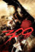 | 300 | 2007 | EN | mp4 | 1080p | Gerard Butler, Lena Headey, Dominic West, David Wenham, Vincent Regan, Michael Fassbender, Tom Wisdom, Andrew Tiernan, Andrew Pleavin, Rodrigo Santoro, Giovani Cimmino, Tyler Neitzel, Stephen McHattie, Eli Snyder, Tim Connolly, Marie-Julie Rivest, Peter Mensah, Arthur Holden, Michael Sinelnikoff, Kelly Craig, Greg Kramer, Alex Ivanovici, Tom Rack, David Francis, James Bradford, Sebastian St. Germain, John Dunn-Hill, Dennis St John, Neil Napier, Dylan Smith | |
| 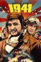 | 1941 | 1979 | EN | mp4 | 1080p | Dan Aykroyd, Ned Beatty, John Belushi, Lorraine Gary, Murray Hamilton, Christopher Lee, Tim Matheson, Robert Stack, Treat Williams, John Candy, Toshirō Mifune, Warren Oates, Nancy Allen, Lucille Benson, Jordan Brian, Elisha Cook Jr., Eddie Deezen, Bobby Di Cicco, Dianne Kay, Perry Lang, Patti LuPone, J. Patrick McNamara, Frank McRae, Steven Mond, Slim Pickens, Wendie Jo Sperber, David Lander, Michael McKean, Dick Miller, Lionel Stander, Dub Taylor, Iggie Wolfington, Joe Flaherty, Susan Backlinie, Kerry Sherman, Mickey Rourke | |
| 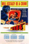 | 1984 | 1956 | EN | mp4 | 480p | Edmond O'Brien, Jan Sterling, Michael Redgrave, David Kossoff, Mervyn Johns, Donald Pleasence, Carol Wolveridge, Ernest Clark, Patrick Allen, Ronan O'Casey, Bartlett Mullins, Michael Ripper, Ewen Solon, Kenneth Griffith, Walter Gotell, Patrick Troughton, John Vernon, Barbara Keogh, Barbara Cavan, Anthony Jacobs, Bernard Rebel | |
| 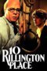 | 10 Rillington Place | 1971 | EN | mp4 | 720p | Richard Attenborough, John Hurt, Judy Geeson, Pat Heywood, Isobel Black, Miss Riley, André Morell, Robert Hardy, Geoffrey Chater, Phyllis MacMahon, Jimmy Gardner, Gabrielle Daye, Edward Evans, Tenniel Evans, Ray Barron, Douglas Blackwell, Basil Dignam, Edward Burnham, Reg Lye, Sam Kydd, Rudolph Walker | |
| 101 Dalmatians | 1961 | EN | mp4 | 720p | Rod Taylor, J. Pat O'Malley, Betty Lou Gerson, Martha Wentworth, Ben Wright, Cate Bauer, David Frankham, Frederick Worlock, Lisa Davis, Tom Conway, Tudor Owen, George Pelling, Ramsay Hill, Queenie Leonard, Marjorie Bennett, Mickey Maga, Barbara Beaird, Mimi Gibson, Sandra Abbott, Thurl Ravenscroft, Bill Lee | ||
| 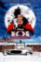 | 101 Dalmatians | 1996 | EN | mp4 | 720p | Glenn Close, Jeff Daniels, Joely Richardson, Joan Plowright, Hugh Laurie | |
| 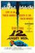 | 12 Angry Men | 1957 | EN | mp4 | 720p | Henry Fonda, Martin Balsam, John Fiedler, Lee J. Cobb, E.G. Marshall, Jack Klugman, Edward Binns, Jack Warden, Joseph Sweeney, Ed Begley, Jiří Voskovec, Robert Webber, Rudy Bond, James Kelly, Billy Nelson, John Savoca, Walter Stocker | |
| 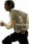 | 12 Years a Slave | 2013 | EN | mp4 | 1080p | Chiwetel Ejiofor, Michael Fassbender, Lupita Nyong'o, Benedict Cumberbatch, Paul Dano, Sarah Paulson, Adepero Oduye, Scoot McNairy, Paul Giamatti, Brad Pitt, Michael Kenneth Williams, Alfre Woodard, Chris Chalk, Taran Killam, Bill Camp, Kelsey Scott, Bryan Batt, Quvenzhané Wallis, Garret Dillahunt, Dwight Henry, Dickie Gravois, Ashley Dyke, Cameron Zeigler, Tony Bentley, Christopher Berry, Mister Mackey Jr., Craig Tate, Storm Reid, Tom Proctor, Marc Macaulay, Vivian Fleming-Alvarez, Douglas M. Griffin, John McConnell, Marcus Lyle Brown, Richard Holden, Rob Steinberg, Anwan Glover, James C. Victor, Liza J. Bennett | |
| 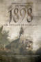 | 1898: Los últimos de Filipinas | 2016 | ES | mp4 | 720p | Karra Elejalde, Luis Tosar, Eduard Fernández, Javier Gutiérrez, Carlos Hipólito, Emilio Palacios, Miguel Herrán, Alexandra Masangkay, Ricardo Gómez, Patrick Criado, Álvaro Cervantes | |
| 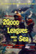 | 20,000 Leagues Under the Sea | 1954 | EN | mp4 | 1080p | Kirk Douglas, James Mason, Paul Lukas, Peter Lorre, Robert J. Wilke, Ted de Corsia, Carleton Young, J. M. Kerrigan, Percy Helton, Ted Cooper, Gloria Pall, Ron Nyman, Fred Graham, Harry Harvey, Charles Grodin, Harper Goff, Eddie Marr, Jack Gargan, John Daheim, Jack Stoney | |
| 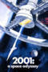 | 2001: A Space Odyssey | 1968 | EN | mp4 | 1080p | Keir Dullea, Douglas Rain, Gary Lockwood, William Sylvester, Daniel Richter, Leonard Rossiter, Margaret Tyzack, Robert Beatty, Sean Sullivan, Bill Weston, Ed Bishop, Alan Gifford, Ann Gillis, Edwina Carroll, Frank Miller, Glenn Beck, Penny Brahms, Heather Downham, Mike Lovell, John Ashley, Jimmy Bell, David Charkham, Simon Davis, Jonathan Daw, Péter Delmár, Terry Duggan, David Fleetwood, Danny Grover, Brian Hawley, David Hines, Tony Jackson, John Jordan, Scott MacKee, Laurence Marchant, Darryl Paes | |
| 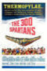 | The 300 Spartans | 1962 | EN | mp4 | 720p | Richard Egan, Ralph Richardson, Diane Baker, Barry Coe, David Farrar, Donald Houston, Anna Synodinou | |
| 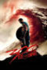 | 300: Rise of an Empire | 2014 | EN | mp4 | 1080p | Sullivan Stapleton, Eva Green, Lena Headey, Callan Mulvey, David Wenham, Rodrigo Santoro, Jack O'Connell, Andrew Tiernan, Ashraf Barhom, Andrew Pleavin, Hans Matheson, Peter Mensah, Ben Turner, Christopher Boyer, Fred Ochs, Price Carson, John Michael Herndon, David Pevsner, Peter Ferdinando, Igal Naor, Luke Roberts, George Georgiou, Farshad Farahat, Christopher Sciueref, Steven Cree, Caitlin Carmichael, Jade Chynoweth, Kevin Fry, David Sterne, Gregor Truter, Vincent Walsh, Nick Court, Mark Killeen, Daniel Rashev, Dimiter Martinov, Stefan Ivanov, Atanas Srebrev, Mark Aaron Wagner, Nancy McCrumb, Bo Roberts, Gregory Shelby, Velizar Peev | |
| 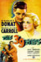 | The 39 Steps | 1935 | EN | mp4 | 720p | Robert Donat, Madeleine Carroll, Lucie Mannheim, Godfrey Tearle, Peggy Ashcroft, John Laurie, Helen Haye, Frank Cellier, Wylie Watson, Gus McNaughton, Jerry Verno, Peggy Simpson, Pat Hagate, Alfred Hitchcock, Elizabeth Inglis, Frederick Piper, Hilda Trevelyan | |
| 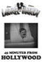 | 45 Minutes From Hollywood | 1926 | EN | mp4 | 576p | Glenn Tryon, Charlotte Mineau, Theda Bara, Oliver Hardy, Stan Laurel, Jack Rube Clifford, Sally O'Neil, Edna Murphy, Jerry Mandy, Joe Cobb, Ed Brandenburg, Monte Collins, Jackie Condon, Mickey Daniels, Janet Gaynor, Claude Gillingwater, The Hal Roach Bathing Beauties, Allen 'Farina' Hoskins, Ham Kinsey, Vivien Oakland, Tiny Sandford, Johnny Downs | |
| 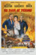 | 55 Days at Peking | 1963 | EN | mp4 | 1080p | Charlton Heston, Ava Gardner, David Niven, Burt Kwouk, Flora Robson, John Ireland, Harry Andrews, Leo Genn, Robert Helpmann, Kurt Kasznar, Philippe Leroy, Paul Lukas, Elizabeth Sellars, Massimo Serato, Jacques Sernas, Jerome Thor, Lynne Sue Moon, Mike Steen, Walter Gotell | |
| 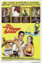 | The 7th Voyage of Sinbad | 1958 | EN | mp4 | 720p | Kerwin Mathews, Kathryn Grant, Torin Thatcher, Richard Eyer, Alec Mango, Danny Green, Harold Kasket, Alfred Brown, Nana DeHerrera, Nino Falanga, Luis Guedes, Virgílio Teixeira | |
| 9 to 5 | 1980 | EN | mp4 | 720p | Jane Fonda, Lily Tomlin, Dolly Parton, Dabney Coleman, Sterling Hayden, Elizabeth Wilson, Henry Jones, Lawrence Pressman, Marian Mercer, Renn Woods, Norma Donaldson, Roxanna Bonilla-Giannini, Peggy Pope, Richard Stahl, Ray Vitte, Edward Marshall, Alan Haufrect, Earl Boen, Jeffrey Douglas Thomas, Tom Tarpey, Michael Delano, Barbara Chase | ||
| 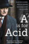 | A Is for Acid | 2002 | EN | mp4 | SD | Martin Clunes, Keeley Hawes, Richard Hope, Celia Imrie | |
| 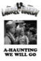 | A-Haunting We Will Go | 1942 | EN | mp4 | 576p | Stan Laurel, Oliver Hardy, Dante, Sheila Ryan, John Shelton, Don Costello, Elisha Cook Jr., Edward Gargan, Addison Richards, George Lynn, James Bush, Lou Lubin, Robert Emmett Keane, Richard Lane, Willie Best, Frank Faylen, Terry Moore, Mantan Moreland | |
| 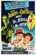 | Abbott and Costello Meet Dr. Jekyll and Mr. Hyde | 1953 | EN | mp4 | 720p | Bud Abbott, Lou Costello, Boris Karloff, Craig Stevens, Helen Westcott, Reginald Denny, John Dierkes, Eddie Parker, Patti McKaye, Betty Tyler, Lucille Lamarr, Dante De Paolo, Carmen De Lavallade, Maisay Kawasuma, Henry Coden, Marjorie Bennett, Isabelle Dwan, James Fairfax, Harry Wilson | |
| 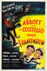 | Abbott and Costello Meet Frankenstein | 1948 | EN | mp4 | 720p | Bud Abbott, Lou Costello, Lon Chaney Jr., Bela Lugosi, Glenn Strange, Jane Randolph, Frank Ferguson, Charles Bradstreet, George Barton, Lenore Aubert, Vincent Price, Bobby Barber, Joe Kirk, Harry Brown, Howard Negley, Carl Sklover, Helen Spring, Paul Stader, Clarence Straight, Joe Walls | |
| 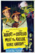 | Abbott and Costello Meet the Killer, Boris Karloff | 1949 | EN | mp4 | 720p | Bud Abbott, Lou Costello, Boris Karloff, Lenore Aubert, Gar Moore, Donna Martell, Alan Mowbray, James Flavin, Roland Winters, Nicholas Joy, Mikel Conrad, Morgan Farley, Victoria Horne, Percy Helton, Claire Du Brey, Harry Hayden, Vincent Renno | |
| 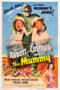 | Abbott and Costello Meet the Mummy | 1955 | EN | mp4 | 720p | Bud Abbott, Lou Costello, Marie Windsor, Michael Ansara, Dan Seymour, Richard Deacon, Kurt Katch, Richard Karlan, Peggy King | |
| 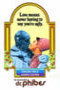 | The Abominable Dr. Phibes | 1971 | EN | mp4 | 720p | Vincent Price, Joseph Cotten, Virginia North, Terry-Thomas, Sean Bury, Susan Travers, David Hutcheson, Edward Burnham, Alex Scott, Peter Gilmore, Maurice Kaufmann, Peter Jeffrey, Derek Godfrey, Norman Jones, John Cater, Alan Zipson, Dallas Adams, James Grout, Alister Williamson, Thomas Heathcote, Ian Marter, Julian Grant, Hugh Griffith, Aubrey Woods, John Laurie, Barbara Keogh, Charles Farrell, John Franklyn, Walter Horsbrugh, Caroline Munro | |
| 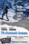 | The Abominable Snowman | 1957 | EN | mp4 | 1080p | Forrest Tucker, Peter Cushing, Maureen Connell, Richard Wattis, Robert Brown, Michael Brill, Wolfe Morris, Arnold Marlé, Anthony Chinn, Fred Johnson, Jack Easton, Joe Powell | |
| El abrazo de la serpiente | 2015 | ES | mp4 | 1080p | Nilbio Torres, Antonio Bolivar, Brionne Davis, Jan Bijvoet, Luigi Sciamanna, Nicolás Cancino, Yauenkü Miguee | ||
| Absolutely Fabulous: The Movie | 2016 | EN | mp4 | 1080p | Jennifer Saunders, Joanna Lumley, Julia Sawalha, June Whitfield, Jane Horrocks, Christopher Ryan, Mo Gaffney, Celia Imrie, Mark Gatiss, Helen Lederer, Kathy Burke, Janette Tough, Cara Delevingne, Gwendoline Christie, Rebel Wilson, Kate Moss, Emma Bunton, Kim Kardashian, Joan Collins, Dawn French, Jerry Hall, Lulu, Lily Cole, Chris Colfer, Kelly Hoppen, Rylan Clark, Jean Paul Gaultier, Alexa Chung, Suki Waterhouse, Jourdan Dunn, Stella McCartney, Daisy Lowe, Lara Stone, Jon Hamm, Graham Norton, Nick Mohammed, Robert Webb, Harriet Thorpe | ||
| 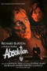 | Absolution | 1978 | EN | mp4 | 720p | Richard Burton, Dominic Guard, David Bradley, Billy Connolly, Andrew Keir, Willoughby Gray, Preston Lockwood, James Ottaway, Brook Williams, Robin Soans, Trevor Martin, Sharon Duce, Brian Glover, Dan Meaden, Hilary Mason, Hilda Fenemore, Robert Addie, Kevin Hart, Philip Leake, Jon Plowman, Michael Crompton, Andrew Boxer, Richard Willis, Michael Parkhouse, Richard Kates, Martyn Hesford, Clive Gehle, Charles Rigby, Michael Bell, Martin Stringer, Francis Fry, Julian Firth, Tim Short, Michael Munn | |
| 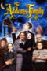 | The Addams Family | 1991 | EN | mp4 | 1080p | Raúl Juliá, Anjelica Huston, Christopher Lloyd, Christina Ricci, Carel Struycken, Dan Hedaya, Jimmy Workman, Elizabeth Wilson, Dana Ivey, Judith Malina, Paul Benedict, Christopher Hart, John Franklin, Tony Azito, Mercedes McNab, Douglas Brian Martin | |
| 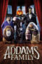 | The Addams Family | 2019 | EN | mp4 | 1080p | Oscar Isaac, Charlize Theron, Chloë Grace Moretz, Finn Wolfhard, Nick Kroll, Snoop Dogg, Bette Midler, Allison Janney, Martin Short, Catherine O'Hara, Tituss Burgess, Jenifer Lewis, Elsie Fisher, Conrad Vernon, Aimee Garcia, Scott Underwood, Mikey Madison, Chelsea Frei, Pom Klementieff, Deven Green, Maggie Wheeler, Harland Williams | |
| The Addams Family 2 | 2021 | EN | mp4 | 1080p | Oscar Isaac, Charlize Theron, Javon 'Wanna' Walton, Chloë Grace Moretz, Nick Kroll, Snoop Dogg, Bette Midler, Conrad Vernon, Bill Hader, Wallace Shawn, Brian Sommer, Courtenay Taylor, Cherami Leigh, Mary Faber, Kyla Pratt, Charlet Chung, Kyle Chapple, Griffin Burns, Ted Evans, Ava Luna Floisand, Peter James King, Keina 'Bryce' Boone | ||
| 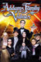 | Addams Family Values | 1993 | EN | mp4 | 720p | Raúl Juliá, Anjelica Huston, Christopher Lloyd, Christina Ricci, Joan Cusack, Carel Struycken, Harriet Sansom Harris, Julie Halston, Carol Kane, Barry Sonnenfeld, Jimmy Workman, Peter MacNicol, Christine Baranski, Mercedes McNab, Sam McMurray, Nathan Lane, David Hyde Pierce, Tony Shalhoub, Peter Graves, Cynthia Nixon, John Franklin, David Krumholtz | |
| 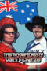 | The Adventures of Barry McKenzie | 1972 | EN | mp4 | 1080p | Barry Crocker, Barry Humphries, Peter Cook, Paul Bertram, Spike Milligan, Dennis Price, Avice Landone, Mary Ann Severne, Jenny Tomasin, Dick Bentley, Julie Covington, Judith Furse, Christopher Malcolm, Maria O'Brien, Margo Lloyd, Joan Bakewell, John Clarke | |
| 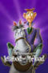 | The Adventures of Ichabod and Mr. Toad | 1949 | EN | mp4 | 1080p | Bing Crosby, Basil Rathbone, Eric Blore, J. Pat O'Malley, John McLeish, Colin Campbell, Campbell Grant, Claud Allister, The Rhythmaires, Oliver Wallace, Pinto Colvig, Leslie Denison, Alec Harford, Edmond Stevens | |
| 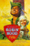 | The Adventures of Robin Hood | 1938 | EN | mp4 | 720p | Errol Flynn, Olivia de Havilland, Basil Rathbone, Claude Rains, Patric Knowles, Eugene Pallette, Alan Hale, Melville Cooper, Ian Hunter, Una O'Connor, Herbert Mundin, Montagu Love, Leonard Willey, Robert Noble, Kenneth Hunter, Robert Warwick, Colin Kenny, Lester Matthews, Harry Cording, Howard Hill, Ivan F. Simpson | |
| 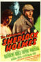 | The Adventures of Sherlock Holmes | 1939 | EN | mp4 | 720p | Basil Rathbone, Nigel Bruce, Ida Lupino, Alan Marshal, Terry Kilburn, George Zucco, Henry Stephenson, E.E. Clive, Arthur Hohl, May Beatty, Peter Willes, Mary Gordon, Holmes Herbert, George Regas, Mary Forbes, Frank Dawson, William Austin, Anthony Kemble-Cooper, Frank Baker, Frank Benson, Ted Billings, Harry Cording, Robert Cory, Neil Fitzgerald, Denis Greene, Gordon Hart, Ivo Henderson, Keith Hitchcock, Leyland Hodgson, Boyd Irwin, Charles Irwin, Leonard Mudie, Robert Nobel, Ivan F. Simpson, Robert R. Stephenson, Eric Wilton | |
 |
The Adventures Of Tintin | 2011 | EN | mp4 | 1080p | Daniel Craig, Simon Pegg, Cary Elwes, Jamie Bell, Andy Serkis, Nick Frost, Mackenzie Crook, Tony Curran, Toby Jones, Daniel Mays, Sebastian Roché, Phillip Rhys, Mark Ivanir, Gad Elmaleh, Jacquie Barnbrook, Joe Starr | |
| 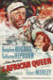 | The African Queen | 1951 | EN | mp4 | 720p | Humphrey Bogart, Katharine Hepburn, Robert Morley, Peter Bull, Theodore Bikel, Walter Gotell, Peter Swanwick, Richard Marner | |
| Agnes Browne | 1999 | EN | mp4 | SD | Anjelica Huston, Marion O'Dwyer, Niall O'Shea, Ciaran Owens, Roxanna Williams, Carl Power, Mark Power, Gareth O'Connor, James Lappin, Ray Winstone, Arno Chevrier, Gerard McSorley, Tom Jones, June Rodgers, Jennifer Gibney | ||
| 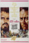 | The Agony and the Ecstasy | 1965 | EN | mp4 | 1080p | Charlton Heston, Rex Harrison, Diane Cilento, Harry Andrews, Alberto Lupo, Adolfo Celi, Venantino Venantini, Tomás Milián, John Stacy, Fausto Tozzi, Maxine Audley | |
| 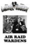 | Air Raid Wardens | 1943 | EN | mp4 | 576p | Stan Laurel, Oliver Hardy, Edgar Kennedy, Jacqueline White, Stephen McNally, Nella Walker, Donald Meek, Henry O'Neill, Howard Freeman, Paul Stanton, Robert Emmett O'Connor, William Tannen, Russell Hicks, Philip Van Zandt, Frederick Worlock, Don Costello | |
| Airplane Ii: The Sequel | 1982 | EN | mp4 | 720p | Robert Hays, Julie Hagerty, Lloyd Bridges, Chad Everett, Peter Graves, Chuck Connors, William Shatner, Raymond Burr, John Vernon, Kent McCord, James A. Watson, Jr, Kitten Natividad, John Dehner, Rip Torn, Sonny Bono, Leslie Nielsen | ||
| Airplane! | 1980 | EN | mp4 | 1080p | Robert Hays, Julie Hagerty, Kareem Abdul-Jabbar, Lloyd Bridges, Peter Graves, Leslie Nielsen, Lorna Patterson, Robert Stack, Stephen Stucker, Jim Abrahams, Frank Ashmore, Jonathan Banks, Craig Berenson, Barbara Billingsley, Lee Bryant, Joyce Bulifant, Mae E. Campbell, Ethel Merman, Jimmie Walker, Jill Whelan, Kitten Natividad, Nora Meerbaum, Kenneth Tobey | ||
| Aladdin | 1992 | EN | mp4 | 1080p | Scott Weinger, Robin Williams, Linda Larkin, Jonathan Freeman, Frank Welker, Gilbert Gottfried, Douglas Seale, Charlie Adler, Corey Burton, Jim Cummings, Jack Angel, Philip L. Clarke, Jennifer Darling, Jerry Houser, Sherry Lynn, Mickie McGowan, Patrick Pinney, Phil Proctor, Debi Derryberry, Vera Lockwood, Bruce Adler, Brad Kane, Lea Salonga, Hal Smith | ||
| 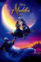 | Aladdin | 2019 | EN | mp4 | 1080p | Mena Massoud, Naomi Scott, Will Smith, Marwan Kenzari, Navid Negahban, Nasim Pedrad, Billy Magnussen, Numan Acar, Alan Tudyk, Frank Welker, Robby Haynes, Nina Wadia, Jordan A. Nash, Taliyah Blair, Aubrey Lin, Amir Boutrous, Buckso Dhillon-Woolley, Omar Abidi, Stefan Kalipha, Omari Bernard, Sebastien Torkia, Marisha Wallace, Maya Saroya, Amer Chadha-Patel, Firas Waleed Al-Taybeh, Nathaniel Ellul, Elif Knight, Saikat Ahamed, Amed Hashimi, Stefan Capper, Jamal Sims, Ceara Batson, Vinani Mwazanzale, Demii Lee Walker, Elena Zacharia, Nazerene Williams, Bessy Naidu | |
| 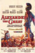 | Alexander the Great | 1956 | EN | mp4 | 720p | Richard Burton, Fredric March, Claire Bloom, Danielle Darrieux, Barry Jones, Harry Andrews, Stanley Baker, Niall MacGinnis, Peter Cushing, Michael Hordern, Peter Wyngarde, William Squire, Carlos Baena, Christopher Lee | |
| 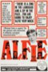 | Alfie | 1966 | EN | mp4 | 720p | Michael Caine, Shelley Winters, Millicent Martin, Julia Foster, Jane Asher, Shirley Anne Field, Vivien Merchant, Eleanor Bron, Denholm Elliott, Alfie Bass, Graham Stark, Murray Melvin, Sydney Tafler, Queenie Watts | |
| Alice In Wonderland | 1951 | EN | mp4 | 720p | Kathryn Beaumont, Verna Felton, Ed Wynn, Richard Haydn, Sterling Holloway, Jerry Colonna, J. Pat O'Malley, Bill Thompson, Heather Angel, Joseph Kearns, Larry Grey, Queenie Leonard, Dink Trout, Doris Lloyd, James MacDonald | ||
| 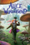 | Alice in Wonderland | 2010 | EN | mp4 | 1080p | Johnny Depp, Anne Hathaway, Helena Bonham Carter, Crispin Glover, Mia Wasikowska, Marton Csokas, Lindsay Duncan, Matt Lucas, Geraldine James, Tim Pigott-Smith, Leo Bill, Frances de la Tour, Michael Sheen, Alan Rickman, Christopher Lee, Stephen Fry, Timothy Spall, Paul Whitehouse, Barbara Windsor, Michael Gough, Imelda Staunton, Eleanor Tomlinson, Jemma Powell, Eleanor Gecks, Rebecca Crookshank, Holly Hawkins, Lucy Davenport, Joel Swetow, Jessica Oyelowo, Ethan Cohn, Chris Grabher, Bonnie Parker, Simone Sault, Dale Mercer | |
| 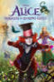 | Alice Through the Looking Glass | 2016 | EN | mp4 | 1080p | Johnny Depp, Mia Wasikowska, Anne Hathaway, Helena Bonham Carter, Alan Rickman, Michael Sheen, Sacha Baron Cohen, Andrew Scott, Toby Jones, Rhys Ifans, Timothy Spall, Ed Speleers, Stephen Fry, Lindsay Duncan, Matt Lucas, Tom Godwin, Richard Armitage, Amelia Crouch, Leilah de Meza | |
| 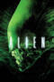 | Alien | 1979 | EN, ES | mp4 | 1080p | Tom Skerritt, Sigourney Weaver, Veronica Cartwright, Harry Dean Stanton, John Hurt, Ian Holm, Yaphet Kotto, Bolaji Badejo, Helen Horton, Eddie Powell | |
| Alien Resurrection | 1997 | EN, ES | mp4 | 1080p | Sigourney Weaver, Winona Ryder, Brad Dourif, Ron Perlman, Michael Wincott, Gary Dourdan, Dan Hedaya, Dominique Pinon, Leland Orser, Raymond Cruz, J.E. Freeman, David St. James, Marlene Bush, Carolyn Campbell, Kim Flowers, Nicole Fellows, Tom Woodruff Jr., Rod Damer, Daniel Raymont, Cris D'Annunzio, Robert Faltisco, Rico Bueno, Alex Lorre, Nito Larioza, Steven Gilborn | ||
| 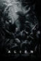 | Alien: Covenant | 2017 | ES, EN | mp4 | 1080p | Michael Fassbender, Katherine Waterston, Billy Crudup, Danny McBride, Demián Bichir, Carmen Ejogo, Jussie Smollett, Callie Hernandez, Amy Seimetz, Nathaniel Dean, Alexander England, Benjamin Rigby, Uli Latukefu, Tess Haubrich, Lorelei King, Goran D. Kleut, Andrew Crawford, Guy Pearce, James Franco, Noomi Rapace, Javier Botet, Benjamin Taylor | |
| 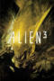 | Alien³ | 1992 | EN, ES | mp4 | 1080p | Sigourney Weaver, Charles S. Dutton, Charles Dance, Pete Postlethwaite, Ralph Brown, Paul McGann, Danny Webb, Lance Henriksen, Brian Glover, Deobia Oparei, Niall Buggy, Christopher John Fields, Peter Guinness, Vincenzo Nicoli, Christopher Fairbank, Phil Davis, Paul Brennen, Clive Mantle, Carl Chase, Hi Ching, Leon Herbert, Danielle Edmond, Holt McCallany, Tom Woodruff Jr. | |
| 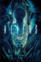 | Aliens | 1986 | EN, ES | mp4 | 1080p | Sigourney Weaver, Michael Biehn, Paul Reiser, Lance Henriksen, Carrie Henn, Bill Paxton, William Hope, Jenette Goldstein, Al Matthews, Mark Rolston, Ricco Ross, Colette Hiller, Daniel Kash, Cynthia Dale Scott, Tip Tipping, Trevor Steedman, Paul Maxwell, Carl Toop, Valerie Colgan, Alan Polonsky, Alibe Parsons, Blain Fairman, Barbara Coles, Eddie Powell, James Remar, Jay Benedict | |
| 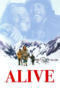 | Alive | 1993 | EN | mp4 | 1080p | Ethan Hawke, Vincent Spano, Josh Hamilton, Bruce Ramsay, John Newton, David Kriegel, Kevin Breznahan, Sam Behrens, Illeana Douglas, Jack Noseworthy, Christian J. Meoli, Jake Carpenter, Michael DeLorenzo, José Zúñiga, Danny Nucci, David Cubitt, Gian DiDonna, John Cassini, Michael Woolson, Chad Willett, Richard Ian Cox, Gordon Currie, Ele Keats, Josh Lucas, Nuno Antunes, Michael Tayles, Steven Shayler, Jason Gaffney, Jerry Wasserman, Michael Sicoly, Diana Barrington, Jan D'Arcy, Frank Pellegrino, Seth Arnett, Aurelio Dinunzio, Fiona Roeske, Tony Morelli, Pat Romano, John Malkovich, Silvio Pollio | |
| 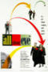 | All About Eve | 1950 | EN | mp4 | 720p | Bette Davis, Anne Baxter, George Sanders, Celeste Holm, Gary Merrill, Hugh Marlowe, Gregory Ratoff, Barbara Bates, Marilyn Monroe, Thelma Ritter, Walter Hampden, Randy Stuart, Craig Hill, Leland Harris, Barbara White, Bess Flowers, William Pullen, Claude Stroud, Eugene Borden, Helen Mowery, Steven Geray, Gertrude Astor, Ralph Brooks, Jack Chefe, James Conaty, Jack Deery, Franklyn Farnum, Colin Kenny, Ethelreda Leopold, Carl M. Leviness, Harold Miller, Stanley Orr, 'Snub' Pollard, Larry Steers, Frank Baker, Thomas Martin, Mathew McCue, Cosmo Sardo, Robert Whitney | |
| 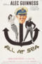 | All At Sea | 1957 | EN | mp4 | 1080p | Alec Guinness, Irene Browne, Maurice Denham, Percy Herbert, Victor Maddern, Allan Cuthbertson, Harold Goodwin, Richard Wattis, Lionel Jeffries, George Rose, Lloyd Lamble, Harry Locke, Mike Morgan, Max Butterfield, Donald Churchill | |
 |
All Night Long | 1981 | EN | mp4 | 1080p | Gene Hackman, Barbra Streisand, Diane Ladd, Dennis Quaid, Kevin Dobson, William Daniels, Ann Doran, James Nolan, Judy Kerr, Robin Reed, Annie Girardot, Chris Mulkey | |
| 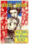 | All This, and Heaven Too | 1940 | EN | mp4 | 480p | Bette Davis, Charles Boyer, Jeffrey Lynn, Barbara O'Neil, Virginia Weidler, Helen Westley, Walter Hampden, Henry Daniell, Harry Davenport, George Coulouris, Montagu Love, Janet Beecher, June Lockhart, Ann Todd, Richard Nichols, Fritz Leiber, Ian Keith, Sibyl Harris, Edward Fielding, Mary Anderson, Ann Gillis, Peggy Stewart, Victor Kilian, Madge Crane, Maurice Costello, Marilyn Knowlden, Natalie Moorhead, Frank Reicher, Egon Brecher, Doris Brent, Carmen Bretta, Virginia Brissac, Georgia Caine, Glen Cavender, Cora Sue Collins, Claire Du Brey, Gloria Fisher, Mary Forbes, Brenda Fowler, Betty Jane Graham, Betty Jean Hainey, Creighton Hale, Leyland Hodgson, Anne Howard, Vera Lewis, Eric Mayne, Susanne Ransom, Christian Rub, Ellinor Vanderveer, Jeanne Wells, Lottie Williams | |
| 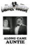 | Along Came Auntie | 1926 | EN | mp4 | 576p | Glenn Tryon, Vivien Oakland, Oliver Hardy, Tyler Brooke, Martha Sleeper, Lucy Beaumont | |
| 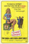 | The Alphabet Murders | 1965 | EN | mp4 | SD | Tony Randall, Anita Ekberg, Robert Morley, Maurice Denham, Sheila Allen, Drewe Henley, Clive Morton, Austin Trevor, Guy Rolfe, James Villiers, Julian Glover, Margaret Rutherford, Grazina Frame, Sally Douglas, Sheila Reid, Stringer Davis | |
| Amadeus | 1984 | EN | mp4 | 720p | F. Murray Abraham, Tom Hulce, Elizabeth Berridge, Roy Dotrice, Simon Callow, Christine Ebersole, Jeffrey Jones, Barbara Bryne, Cynthia Nixon, Douglas Seale, Charles Kay, Kenny Baker, Martin Cavina, Roderick Cook, Milan Demjanenko, Peter DiGesu, Patrick Hines, Nicholas Kepros, Philip Lenkowsky, Lisbeth Bartlett, Richard Frank, Herman Meckler, Jonathan Moore, Brian Pettifer, Vincent Schiavelli, John Strauss, Karl-Heinz Teuber, Miro Grisa, Karel Gult, Ladislav Krečmer | ||
| Amazing Grace | 2006 | EN | mp4 | 1080p | Ioan Gruffudd, Romola Garai, Albert Finney, Benedict Cumberbatch, Michael Gambon, Youssou N'Dour, Ciarán Hinds, Toby Jones, Nicholas Farrell, Sylvestra Le Touzel, Jeremy Swift, Stephen Campbell Moore, Nicholas Day, Rufus Sewell, Bill Paterson, Tom Knight, Richard Ridings | ||
| American Graffiti | 1973 | EN | mp4 | 720p | Richard Dreyfuss, Ron Howard, Paul Le Mat, Charles Martin Smith, Cindy Williams, Candy Clark, Mackenzie Phillips, Wolfman Jack, Bo Hopkins, Manuel Padilla Jr., Beau Gentry, Harrison Ford, Kathleen Quinlan, Suzanne Somers, John Brent, Kay Lenz, Debralee Scott, Terence McGovern, Lynne Marie Stewart, Jana Bellan, Jim Bohan, Susan Richardson, Scott Beach, Jody Carlson, Joe Miksak, Al Nalbandian | ||
| An American Tail | 1986 | EN | mp4 | 720p | Phillip Glasser, Dom DeLuise, Nehemiah Persoff, Erica Yohn, Amy Green, John P. Finnegan, Pat Musick, Madeline Kahn, Will Ryan, Christopher Plummer, Neil Ross | ||
| An American Tail: Fievel Goes West | 1991 | EN | mp4 | 720p | Phillip Glasser, James Stewart, Erica Yohn, Catherine Cavadini, Nehemiah Persoff, Amy Irving, John Cleese, Dom DeLuise | ||
| An American Werewolf in London | 1981 | EN | mp4 | 1080p | David Naughton, Jenny Agutter, Griffin Dunne, John Woodvine, Lila Kaye, Joe Belcher, David Schofield, Sean Baker, Brian Glover, Rik Mayall, Paddy Ryan, Anne-Marie Davies, Frank Oz, Albert Moses, Don McKillop, Paul Kember, Colin Fernandes, Jim Henson, Michele Brisigotti, Mark Fisher, Gordon Sterne, Paula Jacobs, Claudine Bowyer, Johanna Crayden, Nina Carter, Geoffrey Burridge, Brenda Cavendish, Christopher Scoular, Mary Tempest, Cynthia Powell, Sydney Bromley, Frank Singuineau, Will Leighton, Bob Babenia, Michael Carter, Elizabeth Bradley, Rufus Deakin, Lesley Ward, George Hilsdon, Alan Ford, Lucien Morgan, Linzi Drew, John Altman, John Owens | ||
| Anastasia | 1956 | EN | mp4 | 720p | Ingrid Bergman, Yul Brynner, Helen Hayes, Akim Tamiroff, Martita Hunt, Felix Aylmer, Sacha Pitoëff, Ivan Desny, Natalie Schafer, Grégoire Gromoff, Karel Stepanek, Ina De La Haye | ||
| Anastasia | 1997 | EN | mp4 | 720p | Meg Ryan, John Cusack, Christopher Lloyd, Angela Lansbury, Hank Azaria, Kelsey Grammer, Bernadette Peters, Kirsten Dunst, Andrea Martin, Glenn Walker Harris Jr., Lacey Chabert, J.K. Simmons | ||
| And Now for Something Completely Different | 1971 | EN | mp4 | 1080p | Graham Chapman, John Cleese, Terry Gilliam, Eric Idle, Terry Jones, Michael Palin, Carol Cleveland, Connie Booth, Lesley Judd | ||
| And Now the Screaming Starts! | 1973 | EN | mp4 | 1080p | Stephanie Beacham, Peter Cushing, Patrick Magee, Herbert Lom, Ian Ogilvy, Geoffrey Whitehead, Guy Rolfe, Rosalie Crutchley, Gillian Lind, Janet Key, Sally Harrison | ||
| And Then There Were None | 1945 | EN | mp4 | 720p | Barry Fitzgerald, Walter Huston, Louis Hayward, Roland Young, June Duprez, Mischa Auer, C. Aubrey Smith, Judith Anderson, Richard Haydn, Queenie Leonard, Harry Thurston | ||
| And Then There Were None | 1974 | EN | mp4 | 1080p | Oliver Reed, Elke Sommer, Richard Attenborough, Charles Aznavour, Herbert Lom, Stéphane Audran, Gert Fröbe, Adolfo Celi, Alberto de Mendoza, Maria Rohm, Orson Welles, Naser Malek Motiee, Rik Battaglia, Teresa Gimpera | ||
| Angel | 1937 | EN | mp4 | 480p | Marlene Dietrich, Herbert Marshall, Melvyn Douglas, Edward Everett Horton, Ernest Cossart, Laura Hope Crews, Herbert Mundin, Dennie Moore, Gino Corrado | ||
 |
Angela's Ashes | 1999 | EN | mp4 | 1080p | Emily Watson, Robert Carlyle, Joe Breen, Michael Legge, Ciaran Owens, J.J. Murphy | |
| Angels & Demons | 2009 | EN | mp4 | 1080p | Tom Hanks, Ewan McGregor, Ayelet Zurer, Stellan Skarsgård, Pierfrancesco Favino, Nikolaj Lie Kaas, Armin Mueller-Stahl, Thure Lindhardt, David Pasquesi, Cosimo Fusco, Victor Alfieri, Franklin Amobi, Curt Lowens, Bob Yerkes, Marc Fiorini, Carmen Argenziano, Howard Mungo, Rance Howard, Steve Franken, Gino Conforti, Elya Baskin, Richard Rosetti, Silvano Marchetto, Thomas Morris, Jonas Fisch, August Wittgenstein, Ben Bela Böhm, Paul Schmitz, Jeffrey Boehm, Xavier J. Nathan, Steve Kehela, Ursula Brooks, Rashmi, Yan Cui, Fritz Michel, Maria Cristina Heller, Pascal Petardi, Yesenia Adame, Kristof Konrad, Masasa Moyo, Ed Francis Martin, Cheryl Howard, Endre Hules, Norbert Weisser, Shelby Zemanek, Justin Giddings, Anna Katarina | ||
 |
Angora Love | 1929 | EN | mp4 | 576p | Stan Laurel, Oliver Hardy, Harry Bernard, Charlie Hall, Edgar Kennedy, Charley Young | |
| The Anniversary | 1968 | EN | mp4 | SD | Bette Davis, Sheila Hancock, Jack Hedley, James Cossins, Christian Roberts, Elaine Taylor, Timothy Bateson, Sally-Jane Spencer, Arnold Diamond | ||
| Another Fine Mess | 1930 | EN | mp4 | 576p | Stan Laurel, Oliver Hardy, Thelma Todd, James Finlayson, Charles K. Gerrard | ||
| Another Man's Poison | 1951 | EN | mp4 | 720p | Bette Davis, Gary Merrill, Emlyn Williams, Anthony Steel, Barbara Murray, Reginald Beckwith, Edna Morris | ||
| Any Old Port! | 1932 | EN | mp4 | 576p | Stan Laurel, Oliver Hardy, Julie Bishop, Walter Long, Eddie Baker, Harry Bernard, Ed Brandenburg, Bobby Burns, Baldwin Cooke, Dick Gilbert, Charlie Hall, Jack Hill, Sam Lufkin, Will Stanton, Frank Terry | ||
| Any Which Way You Can | 1980 | EN | mp4 | 720p | Clint Eastwood, Sondra Locke, Geoffrey Lewis, Harry Guardino, Ruth Gordon, William Smith, Michael Cavanaugh, Barry Corbin, Roy Jenson, Al Ruscio, Anne Ramsey, Fats Domino, John Quade, Ann Nelson, Jack Murdock, George Murdock, Logan Ramsey, James Gammon, Walter Robles | ||
| The Ape | 1940 | EN | mp4 | 1080p | Boris Karloff, Maris Wrixon, Gene O'Donnell, Dorothy Vaughan, Henry Hall, Selmer Jackson, Gertrude Hoffmann, Jessie Arnold, Billy Bletcher, Harry C. Bradley, George Cleveland, Ray Corrigan, Pauline Drake, Mary Field, Gibson Gowland, Julia Griffith, I. Stanford Jolley, Stan Jolley, Jack Kennedy, Donald Kerr, Philo McCullough, Buddy Swan, Minerva Urecal | ||
| The Ape Man | 1943 | EN | mp4 | 720p | Bela Lugosi, Louise Currie, Wallace Ford, Henry Hall, Minerva Urecal, Emil Van Horn, J. Farrell MacDonald, Wheeler Oakman, Ralph Littlefield, Jack Mulhall, Charles Jordan | ||
| Apocalypto | 2006 | MY | mp4 | 1080p | Rudy Youngblood, Dalia Hernández, Jonathan Brewer, Morris Birdyellowhead, Raoul Max Trujillo, Carlos Emilio Báez, Amilcar Ramírez, Israel Contreras, Israel Ríos, Espiridion Acosta Cache, Mayra Serbulo, Gerardo Taracena, Rodolfo Palacios, Iazua Larios, Lorena Heranandez, Itandehui Gutierrez, Sayuri Gutierrez, Hiram Soto, José Suárez, Ariel Galvan, Bernardo Ruiz, Ricardo Diaz Mendoza, Richard Can, Carlos Ramos, Ammel Rodrigo Mendoza, Marco Antonio Argueta, Javier Escobar, Fernando Hernandez, María Isabel Díaz, Maria Isidra Hoil, Aquetzali García, Abel Woolrich, Antonio Monroi, Nicolás Jasso, Ronaldo Eknal, Miriam Tun, Rafael Velez, Diana Botello, Joaquin Rendon | ||
| Appointment with Death | 1988 | EN | mp4 | 480p | Peter Ustinov, Lauren Bacall, Carrie Fisher, John Gielgud, Piper Laurie, Hayley Mills, Jenny Seagrove, David Soul, Nicholas Guest, Valerie Richards | ||
| Arabian Adventure | 1979 | EN | mp4 | 720p | Christopher Lee, Peter Cushing, Mickey Rooney, Oliver Tobias, John Ratzenberger, Milo O'Shea, Emma Samms, Puneet Sira, Capucine, John Wyman, Roy Stewart | ||
| Are You Being Served? | 1977 | EN | mp4 | SD | John Inman, Mollie Sugden, Frank Thornton, Trevor Bannister, Wendy Richard, Arthur Brough, Nicholas Smith, Harold Bennett, Arthur English, Penny Irving, Andrew Sachs, Derek Griffiths, Glyn Houston, Karan David, Monica Grey | ||
| The Aristocats | 1970 | EN | mp4 | 720p | Phil Harris, Sterling Holloway, Scatman Crothers, Eva Gabor, Paul Winchell, Lord Tim Hudson, Vito Scotti, Thurl Ravenscroft, Dean Clark, Liz English, Gary Dubin, Nancy Kulp, Pat Buttram, George Lindsey, Monica Evans | ||
| Around the World in 80 Days | 2004 | EN | mp4 | 720p | Jackie Chan, Steve Coogan, Cécile De France, Robert Fyfe, Jim Broadbent, Ian McNeice, David Ryall, Roger Hammond, Adam Godley, Will Forte, Mark Addy, Kathy Bates, Daniel Wu, Arnold Schwarzenegger, Maggie Q, Sammo Hung, Karen Mok, Richard Branson, John Cleese, Natalie Denise Sperl, Wolfram Teufel, Ewen Bremner, Perry Andelin Blake, Rob Schneider, Owen Wilson, Luke Wilson | ||
| Around the World in Eighty Days | 1956 | EN | mp4 | 720p | David Niven, Cantinflas, Finlay Currie, Robert Morley, Charles Boyer, Robert Newton, Gilbert Roland, Marlene Dietrich, Frank Sinatra, Buster Keaton, John Carradine, Peter Lorre, George Raft, Tim McCoy, Joe E. Brown, Shirley MacLaine, Melville Cooper, Reginald Denny, Ronald Colman, Trevor Howard, Harcourt Williams, Martine Carol, Cedric Hardwicke, Noël Coward, John Gielgud, Fernandel, Evelyn Keyes, José Greco, Cesar Romero, Alan Mowbray, Charles Coburn, Red Skelton, Andy Devine, Edmund Lowe, Victor McLaglen, John Mills, Glynis Johns, Hermione Gingold, Edward R. Murrow, Mike Mazurki, Ronald Squire, Basil Sydney, Luis Miguel Dominguín | ||
| Arsenic and Old Lace | 1944 | EN | mp4 | 480p | Cary Grant, Priscilla Lane, Raymond Massey, Jack Carson, Edward Everett Horton, Peter Lorre, James Gleason, Josephine Hull, Jean Adair, John Alexander, Grant Mitchell, Edward McNamara, Garry Owen, John Ridgely, Vaughan Glaser, Chester Clute, Charles Lane, Edward McWade, Hank Mann, Spencer Charters, Sol Gorss, Lee Phelps, Raymond Walburn, Spec O'Donnell, Leo White | ||
| Arthur | 1981 | EN | mp4 | 1080p | Dudley Moore, Liza Minnelli, John Gielgud, Geraldine Fitzgerald, Jill Eikenberry, Stephen Elliott, Ted Ross, Barney Martin, Thomas Barbour, Anne De Salvo, Marjorie Barnes, Dillon Evans, Maurice Copeland, Justine Johnson, Paul Vincent, Mary Alan Hokanson, Paul Gleason, Phyllis Somerville, Irving Metzman, Joe Doolan, John Doolan, Melissa Ballan, Florence Tarlow, Lou Jacobi, Gordon Press, Bob Maroff, Marcella Lowery, Jerome Collamore, Mark Fleischman, Helen Hanft, John Bentley, Raymond Serra, Peter Evans, Dominic Guastaferro, Phil Oxnam, Richard Hamilton, George Riddle, Lawrence Tierney, Bobo Lewis, B. Constance Barry, Kurt Schlesinger, Steve James, Mark Margolis | ||
| Arthur 2: On the Rocks | 1988 | EN | mp4 | 720p | Dudley Moore, Liza Minnelli, John Gielgud, Geraldine Fitzgerald, Stephen Elliott, Paul Benedict, Cynthia Sikes, Kathy Bates, Jack Gilford, Ted Ross, Thomas Barbour, Daniel Greene, Barney Martin | ||
| Ask A Policeman | 1939 | EN | mp4 | 720p | Will Hay, Graham Moffatt, Moore Marriott, Glennis Lorimer, Peter Gawthorne, Charles Oliver, Herbert Lomas, Patrick Aherne, Cyril Chamberlain, Noel Dainton, Desmond Llewelyn, Dave O'Toole, Brian Worth | ||
| Asylum | 1972 | EN | mp4 | 1080p | Peter Cushing, Patrick Magee, Herbert Lom, Britt Ekland, Barry Morse, Charlotte Rampling, Barbara Parkins, Robert Powell, Sylvia Syms, Richard Todd, James Villiers, Geoffrey Bayldon, Ann Firbank, Megs Jenkins, John Franklyn-Robbins | ||
| At the Earth's Core | 1976 | EN | mp4 | 1080p | Doug McClure, Peter Cushing, Caroline Munro, Cy Grant, Godfrey James, Sean Lynch, Keith Barron, Helen Gill, Anthony Verner, Robert Gillespie, Michael Crane, Bobby Parr, Andee Cromarty | ||
| Austin Powers in Goldmember | 2002 | EN | mp4 | 1080p | Mike Myers, Beyoncé Knowles, Seth Green, Michael York, Mindy Sterling, Verne Troyer, Michael Caine, Fred Savage, Diane Mizota, Carrie Ann Inaba, Nobu Matsuhisa, Robert Wagner, Anna Marie Goddard, Aaron Himelstein, Josh Zuckerman, Evan Farmer, Tommy 'Tiny' Lister, Nichole Hiltz, Gwyneth Paltrow, Angela Meryl, Scott Aukerman | ||
| Austin Powers: International Man of Mystery | 1997 | EN | mp4 | 1080p | Mike Myers, Elizabeth Hurley, Michael York, Mimi Rogers, Seth Green, Fabiana Udenio, Mindy Sterling, Paul Dillon, Robert Wagner, Charles Napier, Will Ferrell, Joann Richter, Anastasia Sakelaris, Afifi Alaouie, Monet Mazur, Clint Howard, Elya Baskin, Cynthia Lamontagne, Joe Grisaffi, Joe Son, Larry Thomas, Cindy Margolis, Donna W. Scott, Tom Arnold, Carrie Fisher, Christian Slater | ||
| Austin Powers: The Spy Who Shagged Me | 1999 | EN | mp4 | 1080p | Mike Myers, Heather Graham, Michael York, Robert Wagner, Rob Lowe, Seth Green, Mindy Sterling, Verne Troyer, Elizabeth Hurley, Gia Carides, Oliver Muirhead, Muse Watson, Scott Cooper, Kevin Cooney, Will Ferrell, Faune A. Chambers, Douglas Fisher | ||
| Avatar | 2009 | EN | mp4 | 1080p | Sam Worthington, Zoe Saldana, Sigourney Weaver, Stephen Lang, Michelle Rodriguez, Giovanni Ribisi, Joel David Moore, CCH Pounder, Wes Studi, Laz Alonso, Dileep Rao, Matt Gerald, Sean Anthony Moran, Jason Whyte, Scott Lawrence, Kelly Kilgour, James Patrick Pitt, Sean Patrick Murphy, Peter Dillon, Kevin Dorman, Kelson Henderson, David Van Horn, Jacob Tomuri, Michael Blain-Rozgay, Jon Curry, Luke Hawker, Woody Schultz, Peter Mensah, Sonia Yee, Jahnel Curfman, Ilram Choi, Kyla Warren, Lisa Roumain | ||
| The Awakening | 1980 | EN | mp4 | 1080p | Charlton Heston, Susannah York, Jill Townsend, Stephanie Zimbalist, Patrick Drury, Bruce Myers, Nadim Sawalha, Ian McDiarmid, Ahmed Osman, Miriam Margolyes, Michael Mellinger, Leonard Maguire, Ishia Bennison, Madhav Sharma, Michael Halphie, Roger Kemp, Christopher Fairbank | ||
| Babes in Toyland | 1934 | EN | mp4 | 480p | Stan Laurel, Oliver Hardy, Charlotte Henry, Felix Knight, Henry Brandon, Florence Roberts, Virginia Karns, Marie Wilson, Johnny Downs, Scotty Beckett, Billy Bletcher, Ellen Corby, Jean Darling, Charlie Hall, Dickie Jones, Ham Kinsey, Alice Lake, Joy Lane, Jack 'Tiny' Lipson, Tiny Sandford | ||
| Bacon Grabbers | 1929 | EN | mp4 | 576p | Stan Laurel, Oliver Hardy, Edgar Kennedy, Jean Harlow, Harry Bernard, Eddie Baker, Bobby Dunn, Charlie Hall, Sam Lufkin | ||
| Bambi | 1942 | EN | mp4 | 720p | Hardie Albright, Stan Alexander, Peter Behn, Donnie Dunagan, Sam Edwards, Thelma Boardman, Tim Davis, Marion Darlington, Ann Gillis, Otis Harlan, Eddie Holden, Sterling Holloway, Will Wright | ||
| Barbarella | 1968 | EN | mp4 | 1080p | Jane Fonda, John Phillip Law, Anita Pallenberg, Marcel Marceau, Claude Dauphin, Milo O'Shea, Véronique Vendell, Serge Marquand, Catherine Chevallier, Marie Therese Chevallier, David Hemmings, Ugo Tognazzi, Giancarlo Cobelli, Fabienne Fabre, Corinne Fontaine, Nino Musco, Umberto Di Grazia, Franco Gulà, Jean Saudray, Romolo Valli, Robert Rietty, Kitty Swan, Fabio Testi, Talitha Pol, Antonio Sabàto, Honey Autumn, Diane Bond, Silvana Venturelli, Carla Cassola, Joan Greenwood, María Teresa Orsini | ||
| The Bargee | 1964 | EN | mp4 | 720p | Harry H. Corbett, Hugh Griffith, Eric Sykes, Ronnie Barker, Julia Foster, Miriam Karlin, Eric Barker, Derek Nimmo | ||
| Barry McKenzie Holds His Own | 1974 | EN | mp4 | 576p | Barry Crocker, Barry Humphries, Donald Pleasence, Fiona Richmond, Ed Devereaux, Dick Bentley, Louis Negin, Clive James, Roy Kinnear | ||
| The Bat | 1959 | EN | mp4 | 720p | Vincent Price, Agnes Moorehead, Gavin Gordon, John Sutton, Lenita Lane, Darla Hood, Elaine Edwards, John Bryant, Harvey Stephens, Mike Steele, Riza Royce, Robert Williams | ||
| Batteries Not Included | 1987 | EN | mp4 | 720p | Hume Cronyn, Jessica Tandy, Frank McRae, Elizabeth Peña, Michael Carmine, Dennis Boutsikaris, Tom Aldredge, Jane Hoffman, John DiSanti, John Pankow, MacIntyre Dixon, Michael Greene, Doris Belack, Wendy Schaal | ||
| Battle for the Planet of the Apes | 1973 | EN | mp4 | 1080p | Roddy McDowall, Lew Ayres, Bobby Porter, Richard Eastham, Claude Akins, Natalie Trundy, Paul Williams, Austin Stoker, Noah Keen, France Nuyen, Severn Darden, Paul Stevens, Heather Lowe, Michael Stearns, Cal Wilson, Colleen Camp, John Huston | ||
| The Battle Of The Century | 1927 | EN | mp4 | 576p | Stan Laurel, Oliver Hardy, Dorothy Coburn, Lou Costello, Anita Garvin, Dick Gilbert, Charlie Hall, Al Hallett, Jack Hill, Ham Kinsey, Sam Lufkin, Eugene Pallette, Lyle Tayo, Ellinor Vanderveer, Dorothea Wolbert, Charley Young, Noah Young | ||
| The Battle of the River Plate | 1956 | EN | mp4 | 720p | John Gregson, Anthony Quayle, Peter Finch, Ian Hunter, Jack Gwillim, Bernard Lee, Lionel Murton, Anthony Bushell, Peter Illing, Michael Goodliffe, Patrick Macnee, John Chandos, Douglas Wilmer, William Squire, Roger Delgado, Andrew Cruickshank, Christopher Lee, David Farrar, Jeremy Kemp, John Le Mesurier, Cyril Luckham, Donald Moffat, George Murcell, Anthony Newley, Nigel Stock | ||
| The Battle of the Sexes | 1960 | EN | mp4 | 1080p | Peter Sellers, Robert Morley, Constance Cummings, Jameson Clark, Donald Pleasence, Michael Goodliffe, Alex Mackenzie, Ernest Thesiger, Moultrie Kelsall, Roddy McMillan, James Gibson, Noel Howlett, Abe Barker, Gordon Phillott, Sam Wanamaker, William Mervyn, Norman Macowan, MacDonald Parke, Patricia Hayes, Eric Woodburn, Donald Bisset, Aletha Orr, Sydney Keith, Meadows White, Fred Griffiths, Glyn Houston, Robert Crewdson, Anne Sharp | ||
| Be Big! | 1931 | EN | mp4 | 576p | Stan Laurel, Oliver Hardy, Anita Garvin | ||
| The Beast Must Die | 1974 | EN | mp4 | 720p | Calvin Lockhart, Peter Cushing, Marlene Clark, Anton Diffring, Ciaran Madden, Michael Gambon, Charles Gray, Tom Chadbon, Sam Mansary, Andrew Lodge, Carl Bohen, Eric Carte | ||
| Beau Hunks | 1931 | EN | mp4 | 576p | Stan Laurel, Oliver Hardy, James W. Horne, Charles Middleton, Broderick O'Farrell, Harry Schultz | ||
| Beauty And The Beast | 1991 | EN | mp4 | 1080p | Paige O'Hara, Robby Benson, Richard White, Jerry Orbach, David Ogden Stiers, Angela Lansbury, Bradley Pierce, Rex Everhart, Jesse Corti, Hal Smith, Jo Anne Worley, Mary Kay Bergman, Brian Cummings, Alvin Epstein, Tony Jay, Alex Murphy, Kimmy Robertson, Kath Soucie, Frank Welker | ||
| Beauty and the Beast | 2017 | EN | mp4 | 1080p | Emma Watson, Dan Stevens, Luke Evans, Kevin Kline, Josh Gad, Ewan McGregor, Stanley Tucci, Audra McDonald, Gugu Mbatha-Raw, Ian McKellen, Emma Thompson, Nathan Mack, Hattie Morahan, Adrian Schiller, Gerard Horan, Haydn Gwynne, Ray Fearon, Clive Rowe, Thomas Padden, Alexis Loizon, Jimmy Johnston, Dean Street, Michael Jibson, Zoe Rainey, Jolyon Coy, Rudi Goodman, Henry Garrett, Harriet Jones, Sophie Reid, Rafaëlle Cohen, Carla Nella, Tom Oakley, Beth Willetts, Simone Sault, Mandy Montanez, Leo Andrew, Steven Butler, Daniel Ioannou, Dale Branston, Lynne Wilmot, Jane Fowler, D.J. Bailey, Rita Davies, Sharon Gomez | ||
| Becket | 1964 | EN | mp4 | 1080p | Richard Burton, Peter O'Toole, John Gielgud, Gino Cervi, Paolo Stoppa, Donald Wolfit, Martita Hunt, Pamela Brown, Siân Phillips, Felix Aylmer, Niall MacGinnis, Christopher Rhodes, John Phillips, Magda Konopka, David Weston | ||
| Bedknobs And Broomsticks | 1971 | EN | mp4 | 720p | Angela Lansbury, David Tomlinson, Roddy McDowall, Sam Jaffe, John Ericson, Bruce Forsyth, Cindy O'Callaghan, Roy Snart, Ian Weighill, Tessie O'Shea, Arthur Gould-Porter, Ben Wrigley, Reginald Owen, Cyril Delevanti, Rick Traeger | ||
| Bedknobs and Broomsticks [Restored] | 1971 | EN | mp4 | 720p | Angela Lansbury, David Tomlinson, Roddy McDowall, Sam Jaffe, John Ericson, Bruce Forsyth, Cindy O'Callaghan, Roy Snart, Ian Weighill, Tessie O'Shea, Arthur Gould-Porter, Ben Wrigley, Reginald Owen, Cyril Delevanti, Rick Traeger | ||
| Bedlam | 1946 | EN | mp4 | 1080p | Boris Karloff, Anna Lee, Billy House, Richard Fraser, Glen Vernon, Ian Wolfe, Jason Robards Sr., Leyland Hodgson, Joan Newton, Elizabeth Russell, Larry Wheat, Skelton Knaggs, Robert Clarke, Vic Holbrook | ||
| Before I Hang | 1940 | EN | mp4 | 1080p | Boris Karloff, Evelyn Keyes, Bruce Bennett, Don Beddoe, Edward Van Sloan, Ben Taggart, Pedro de Cordoba, Wright Kramer, Bertram Marburgh, Robert Fiske, Frank Richards, Kenneth MacDonald, Ernie Adams, Frederick Burton, Edward Earle, Richard Fiske, George McKay, John Tyrrell, Jack Cheatham, Charles Trowbridge, Bert Moorhouse, Sam Harris, Edmund Mortimer, Stanley Brown, Eddie Laughton, James T. Mack, Gohr Van Vleck | ||
| Behind That Curtain | 1929 | EN | mp4 | 480p | Warner Baxter, Lois Moran, E.L. Park, Boris Karloff, Gilbert Emery, Claude King, Phillip Strange, Jamiel Hasson, Peter Gawthrone, John Rogers, Mercedes De Valasco | ||
| Belle of the Nineties | 1934 | EN | mp4 | 1080p | Mae West, Roger Pryor, Johnny Mack Brown, John Miljan, Duke Ellington, Katherine DeMille, James Donlan, Stuart Holmes, Harry Woods, Edward Gargan, Libby Taylor, Benny Baker, Morrie Cohan, Tyler Brooke, Warren Hymer, Sam McDaniel | ||
| The Belles of St. Trinian's | 1954 | EN | mp4 | 720p | Alastair Sim, George Cole | ||
| Below Zero | 1930 | EN | mp4 | 576p | Stan Laurel, Oliver Hardy, Frank Holliday, Blanche Payson | ||
| Ben-Hur | 1959 | EN | mp4 | 1080p | Charlton Heston, Haya Harareet, Stephen Boyd, Martha Scott, Cathy O'Donnell, Jack Hawkins, Sam Jaffe, Hugh Griffith, Finlay Currie, Frank Thring, George Relph, André Morell, Terence Longdon, Ady Berber, Lando Buzzanca, Giuliano Gemma, Marina Berti, Robert Brown, Liana Del Balzo, Enzo Fiermonte, Richard Hale, Duncan Lamont, John Le Mesurier, Ferdy Mayne, May McAvoy, Aldo Silvani, Ralph Truman, Claude Heater, Joe Canutt, Richard Coleman, Antonio Corevi, David Davies, Mino Doro, Michael Dugan | ||
| Ben-Hur | 2016 | EN | mp4 | 1080p | Jack Huston, Toby Kebbell, Rodrigo Santoro, Nazanin Boniadi, Ayelet Zurer, Morgan Freeman, Haluk Bilginer, Sofia Black-D'Elia, Moisés Arias, Pilou Asbæk, Marwan Kenzari, James Cosmo, Stefano Scherini | ||
| Ben-Hur: A Tale Of The Christ | 1925 | EN | mp4 | 480p | Ramon Novarro, Francis X. Bushman, May McAvoy, Betty Bronson, Claire McDowell, Kathleen Key, Carmel Myers, Nigel De Brulier, Mitchell Lewis, Leo White, Frank Currier, Charles Belcher, Dale Fuller, Winter Hall | ||
| Beneath the Planet of the Apes | 1970 | EN | mp4 | 1080p | James Franciscus, Kim Hunter, Maurice Evans, Linda Harrison, Paul Richards, Charlton Heston, David Watson, Thomas Gomez, Victor Buono, James Gregory, Jeff Corey, Natalie Trundy, Don Pedro Colley, Tod Andrews, Gregory Sierra, Eldon Burke | ||
| Berth Marks | 1929 | EN | mp4 | 576p | Stan Laurel, Oliver Hardy, Paulette Goddard, Charlie Hall | ||
| The Best Exotic Marigold Hotel | 2011 | EN | mp4 | 720p | Bill Nighy, Maggie Smith, Tom Wilkinson, Judi Dench, Dev Patel, Penelope Wilton, Ramona Marquez, Celia Imrie, Ronald Pickup, Hugh Dickson, Patrick Pearson, Liza Tarbuck, Tina Desai, Lillete Dubey, Lucy Robinson | ||
| Beyond the Forest | 1949 | EN | mp4 | 720p | Bette Davis, Joseph Cotten, David Brian, Ruth Roman, Minor Watson, Dona Drake, Regis Toomey, Sarah Selby, Ann Doran, Bess Flowers, Creighton Hale, Dorothy Vernon, Judith Wood | ||
| The BFG | 2016 | EN | mp4 | 1080p | Ruby Barnhill, Mark Rylance, Rebecca Hall, Jemaine Clement, Bill Hader, Penelope Wilton, Marilyn Norry, Chris Shields, Matt Frewer, Geoffrey Wade, Rafe Spall, Haig Sutherland, John Emmet Tracy, Adam Godley, Daniel Bacon, Paul Moniz de Sa, Alejandro Cuello, Ólafur Darri Ólafsson, Michael Adamthwaite, Gabrielle Rose, Lucia Ryan, Julia Torrance, Graham Curry | ||
| Big Business | 1929 | EN | mp4 | 576p | Stan Laurel, Oliver Hardy, James Finlayson, Tiny Sandford | ||
| The Big Job | 1965 | EN | mp4 | 1080p | Sid James, Sylvia Syms, Dick Emery, Joan Sims, Lance Percival, Jim Dale, Edina Ronay, Deryck Guyler, Reginald Beckwith, Brian Rawlinson, David Horne, Frank Forsyth, Frank Thornton, Wanda Ventham, Michael Ward, Peter Jesson, Michael Graham, Penelope Lee, Fred Griffiths, Gertan Klauber, Patrick Allen, Billy Cornelius, George Hilsdon, Reg Thomason, Joe Wadham | ||
| The Big Noise | 1944 | EN | mp4 | 576p | Stan Laurel, Oliver Hardy, Doris Merrick, Arthur Space, Veda Ann Borg, Robert Blake, Frank Fenton, James Bush, Harry Hayden | ||
| Bill & Ted's Bogus Journey | 1991 | EN | mp4 | 1080p | Keanu Reeves, Alex Winter, George Carlin, William Sadler, Joss Ackland, Pam Grier, Amy Stock-Poynton, Jim Martin, Hal Landon Jr., Annette Azcuy, Sarah Trigger, Chelcie Ross, Taj Mahal, Eleni Kelakos, Roy Brocksmith, J. Patrick McNamara, Dana Stevens, Carol Rosenthal, Chris Matheson, Brendan Ryan, William Thorne, Ed Gale, Arturo Gil, Tom Allard, Terry Finn, John Ehrin, Don Forney, Michael Chambers, Bruno Falcon, Ed Cambridge, Tad Horino, William Shatner, Robert Noble | ||
| Bill & Ted's Excellent Adventure | 1989 | EN | mp4 | 1080p | Keanu Reeves, Alex Winter, George Carlin, Dan Shor, Hal Landon Jr., Amy Stock-Poynton, Terry Camilleri, Tony Steedman, Rod Loomis, Bernie Casey, Al Leong, Jane Wiedlin, Robert V. Barron, Clifford David, J. Patrick McNamara, Frazier Bain, Diane Franklin, Kimberley Kates, William Robbins, Steve Shepherd, Anne Machette, Traci Dawn Davis | ||
| Billy Elliot | 2000 | EN | mp4 | 720p | Jamie Bell, Julie Walters, Jean Heywood, Jamie Draven, Gary Lewis, Stuart Wells, Nicola Blackwell, Janine Birkett, Joe Renton, Colin MacLachlan, Trevor Fox, Charlie Hardwick | ||
| Birdman of Alcatraz | 1962 | EN | mp4 | 1080p | Burt Lancaster, Karl Malden, Thelma Ritter, Neville Brand, Betty Field, Telly Savalas, Edmond O'Brien, Hugh Marlowe, Whit Bissell, Crahan Denton, James Westerfield, Robert Bailey, Nicky Blair, Mushy Callahan, James J. Casino, Noble Chissell, John Indrisano, Pete Kellett, David McMahon, Pat Moran, Ben Roseman, Frankie Van, Robert Burton, Lewis Charles, Nick Dennis, Mike Mahoney, Raymond Greenleaf, William Hansen, Wayne Heffley, Michael Masters, Joe McGuinn, Victor Romito, Anton von Stralen, Robert B. Williams, William Hoehne Jr., Dale van Sickel, Kermit Maynard, Harry Holcombe, Fred Libby, Len Lesser, Edward Mallory, Adrienne Marden, George Mitchell, Leo Penn, Chris Robinson, Michael Ross, Phil Schumacher, Ray Spiker, Harry Jackson | ||
| The Birds | 1963 | EN | mp4 | 1080p | Tippi Hedren, Rod Taylor, Suzanne Pleshette, Veronica Cartwright, Ethel Griffies, Charles McGraw, Jessica Tandy, Doreen Lang, Ruth McDevitt, Joe Mantell, Karl Swenson, Elizabeth Wilson, Richard Deacon, Malcolm Atterbury, Lonny Chapman, Doodles Weaver | ||
| The Black Camel | 1931 | EN | mp4 | 480p | Warner Oland, Sally Eilers, Dorothy Revier, Victor Varconi, Murray Kinnell, William Post Jr., Robert Young, Violet Dunn, J. M. Kerrigan, Mary Gordon, Rita Rozelle, Otto Yamaoka, Bela Lugosi | ||
 |
The Black Castle | 1952 | EN | mp4 | 720p | Richard Greene, Boris Karloff, Stephen McNally, Rita Corday, Lon Chaney Jr., John Hoyt, Michael Pate, Nancy Valentine, Tudor Owen, Henry Corden, Otto Waldis, Roy Engel | |
| The Black Cat | 1934 | EN | mp4 | 1080p | Boris Karloff, Bela Lugosi, David Manners, Julie Bishop, Egon Brecher, Harry Cording, Lucille Lund, Henry Armetta, Albert Conti, John Carradine, John George, Albert Pollet | ||
| The Black Cat | 1941 | EN | mp4 | 720p | Basil Rathbone, Hugh Herbert, Broderick Crawford, Bela Lugosi, Anne Gwynne, Gale Sondergaard, Gladys Cooper, Alan Ladd, Cecilia Loftus, Claire Dodd, John Eldredge, Erville Alderson, Harry C. Bradley, Jack Cheatham, Edgar Sherrod | ||
| The Black Cauldron | 1985 | EN | mp4 | 720p | Grant Bardsley, Susan Sheridan, John Byner, Nigel Hawthorne, John Hurt, Freddie Jones, Phil Fondacaro, Arthur Malet, Lindsay Rich, Brandon Call, Gregory Levinson, Eda Reiss Merin, Adele Malis-Morey, Billie Hayes, Peter Renaday, James Almanzar, John Huston | ||
| Black Friday | 1940 | EN | mp4 | 720p | Stanley Ridges, Boris Karloff, Bela Lugosi, Anne Nagel, Anne Gwynne, Virginia Brissac, Edmund MacDonald, Paul Fix, Murray Alper, Jack Mulhall, Raymond Bailey, Joe King, John Kelly, Jessie Arnold, Elfriede Borodin, Tommy Conlon, Franco Corsaro, James Craig, Kernan Cripps, Eddie Dunn, Edward Earle, Harry Hayden, Frank Jaquet, Ellen Lowe, Jerry Marlowe, Wallace Reid Jr., William Ruhl, Frank Sheridan, Edwin Stanley, Harry Tenbrook, Emmett Vogan, Russell Wade, Dave Willock, Victor Zimmerman, Robert Morgan | ||
| Black Magic | 1944 | EN | mp4 | 480p | Sidney Toler, Mantan Moreland, Frances Chan, Joseph Crehan, Helen Beverly, Jacqueline deWit, Geraldine Wall, Ralph Peters, Frank Jaquet, Edward Earle, Claudia Dell, Harry Depp, Charles Jordan, Dick Gordon | ||
| Black Narcissus | 1947 | EN | mp4 | 720p | Deborah Kerr, David Farrar, Flora Robson, Kathleen Byron, Sabu, Jean Simmons, Jenny Laird, Judith Furse, Esmond Knight, May Hallatt, Eddie Whaley Jr., Shaun Noble, Nancy Roberts, Ley On | ||
 |
The Black Room | 1935 | EN | mp4 | 1080p | Boris Karloff, Marian Marsh, Robert 'Tex' Allen, Thurston Hall, Katherine DeMille, John Buckler, Henry Kolker, Colin Tapley, Torben Meyer, John George, John Bleifer, Marion Lessing, George MacQuarrie, Robert Middlemass, Edward Van Sloan | |
| Black Sabbath | 1963 | EN | mp4 | 720p | Boris Karloff, Michèle Mercier, Jacqueline Pierreux, Susy Andersen, Lidia Alfonsi, Massimo Righi, Rika Dialina, Glauco Onorato, Milly, Harriet Medin, Gustavo De Nardo, Milo Quesada, Mark Damon | ||
| Black Sheep | 2006 | EN | mp4 | 1080p | Nathan Meister, Peter Feeney, Danielle Mason, James Ashcroft, Mick Rose, Tammy Davis, Glenis Levestam, Tandi Wright, Matthew Chamberlain, Oliver Driver, Nick Fenton, Min Windle, Ian Harcourt | ||
| The Black Sheep Of Whitehall | 1942 | EN | mp4 | 720p | Will Hay, John Mills, Basil Sydney, Felix Aylmer, Thora Hird | ||
| The Black Sleep | 1956 | EN | mp4 | 1080p | Basil Rathbone, Herbert Rudley, Patricia Blair, Akim Tamiroff, Phyllis Stanley, Lon Chaney Jr., Bela Lugosi, John Carradine, George Sawaya, Tor Johnson, Sally Yarnell, Peter Gordon, Claire Carleton, Clive Morgan, Louanna Gardner, Aubrey Schenck, John Sheffield | ||
| Blackbeard's Ghost | 1968 | EN | mp4 | 720p | Peter Ustinov, Dean Jones, Suzanne Pleshette, Elsa Lanchester, Richard Deacon, Stefanie Powers, Terry-Thomas | ||
| Der blaue Engel | 1930 | DE | mp4 | 720p | Emil Jannings, Marlene Dietrich, Kurt Gerron, Rosa Valetti, Hans Albers, Reinhold Bernt, Károly Huszár, Eduard von Winterstein, Hans Roth, Rolf Müller, Roland Varno, Carl Ballhaus, Robert Klein-Lörk, Wilhelm Diegelmann, Gerhard Bienert, Ilse Fürstenberg, Friedrich Hollaender, Wolfgang Staudte | ||
| Blazing Saddles | 1974 | EN | mp4 | 1080p | Cleavon Little, Gene Wilder, Harvey Korman, Slim Pickens, Madeline Kahn, Mel Brooks, Dom DeLuise, Liam Dunn, George Furth, Burton Gilliam, John Hillerman, Alex Karras, David Huddleston, Carol Arthur, Richard Collier, Charles McGregor, Don Megowan, Count Basie, Karl Lukas, Robyn Hilton, Jack Starrett, Rodney Allen Rippy, Robert Ridgely, Anne Bancroft, Ralph Manza | ||
| Bless This House | 1972 | EN | mp4 | 480p | Sid James, Diana Coupland, Terry Scott, June Whitfield, Peter Butterworth, Sally Geeson, Robin Askwith, Patsy Rowlands, Carol Hawkins, Bill Maynard | ||
| Blithe Spirit | 1945 | EN | mp4 | 720p | Rex Harrison, Constance Cummings, Kay Hammond, Margaret Rutherford, Hugh Wakefield, Joyce Carey, Jacqueline Clarke | ||
| Blithe Spirit | 2021 | EN | mp4 | 1080p | Dan Stevens, Leslie Mann, Isla Fisher, Judi Dench, Julian Rhind-Tutt, Emilia Fox, Dave Johns, James Fleet, Adil Ray, Aimee-Ffion Edwards, Michele Dotrice, Simon Kunz, Delroy Atkinson, Colin Stinton, Georgina Rich | ||
| Block Heads | 1938 | EN | mp4 | 576p | Stan Laurel, Oliver Hardy, Patricia Ellis, Minna Gombell, Billy Gilbert, James Finlayson | ||
| Blonde Venus | 1932 | EN | mp4 | 720p | Herbert Marshall, Dickie Moore, Marlene Dietrich, Cary Grant, Rita La Roy, Gene Morgan, Robert Emmett O'Connor, Sidney Toler, Morgan Wallace, Clarence Muse, Al Bridge, Marcelle Corday, Cecil Cunningham, Sterling Holloway, Hattie McDaniel, Dennis O'Keefe, Dewey Robinson, Francis Sayles, Mildred Washington | ||
| The Blood Beast Terror | 1968 | EN | mp4 | 720p | Peter Cushing, Robert Flemyng, Wanda Ventham, David Griffin, Glynn Edwards, William Wilde, Kevin Stoney, John Paul, Russell Napier, Roy Hudd, Simon Cain, Robert Cawdron, Kenneth Colley, Vanessa Howard | ||
 |
Blood from the Mummy's Tomb | 1971 | EN | mp4 | 1080p | Valerie Leon, Andrew Keir, James Villiers, Hugh Burden, George Coulouris, Mark Edwards, Rosalie Crutchley, Aubrey Morris, David Markham, Joan Young, James Cossins, David Jackson, Jonathan Burn, Graham James, Tamara Ustinov | |
 |
The Blood of Fu Manchu | 1968 | EN | mp4 | 1080p | Christopher Lee, Richard Greene, Howard Marion-Crawford, Götz George, Maria Rohm, Ricardo Palacios, Loni von Friedl, Frances Khan, Tsai Chin | |
| Blood of the Vampire | 1958 | EN | mp4 | 1080p | Donald Wolfit, Vincent Ball, Barbara Shelley, Victor Maddern, William Devlin, Andrew Faulds, John Le Mesurier, Bryan Coleman, Cameron Hall, George Murcell, Julian Strange, Bruce Wightman, Barbara Burke, Bernard Bresslaw, Hal Osmond, Milton Reid, Patricia Phoenix | ||
| The Blood on Satan's Claw | 1971 | EN | mp4 | 720p | Patrick Wymark, Linda Hayden, Barry Andrews, James Hayter, Michele Dotrice, Anthony Ainley, Howard Goorney, Charlotte Mitchell, Avice Landone, Wendy Padbury, Yvonne Paul | ||
| The Bloody Judge | 1970 | EN | mp4 | 1080p | Christopher Lee, Maria Schell, Leo Genn, Hans Hass Jr., Maria Rohm, Margaret Lee, Pietro Martellanza, Howard Vernon, Milo Quesada, Werner Abrolat, Diana Lorys, José Martínez Blanco, José María Prada, Vicente Roca | ||
| Blotto | 1930 | EN | mp4 | 576p | Stan Laurel, Oliver Hardy, Anita Garvin, Baldwin Cooke, Jean De Briac, Dick Gilbert, Vladimir Gueteron, Charlie Hall, Jack Hill, Frank Holliday, Tiny Sandford | ||
| The Blue Angel | 1930 | EN | mp4 | 720p | Emil Jannings, Marlene Dietrich, Kurt Gerron, Rosa Valetti, Hans Albers, Reinhold Bernt, Eduard von Winterstein, Hans Roth, Rolf Müller, Roland Varno, Carl Ballhaus, Robert Klein Lörk, Charles Puffy, Wilhelm Diegelmann, Gerhard Bienert, Ilse Fürstenberg | ||
| The Blue Lamp | 1950 | EN | mp4 | 720p | Jack Warner, Jimmy Hanley, Dirk Bogarde, Robert Flemyng, Bernard Lee, Peggy Evans, Patric Doonan, Bruce Seton, Meredith Edwards, Frederick Piper, Dora Bryan, Tessie O'Shea, Clive Morton, Gladys Henson | ||
| Blue Murder at St. Trinian's | 1957 | EN | mp4 | 720p | Terry-Thomas, George Cole, Joyce Grenfell, Alastair Sim, Sabrina, Lionel Jeffries, Ferdy Mayne, Thorley Walters, Michael Ripper | ||
| The Boat That Rocked | 2009 | EN | mp4 | 720p | Tom Sturridge, Philip Seymour Hoffman, Rhys Ifans, Bill Nighy, Emma Thompson, Nick Frost, Kenneth Branagh, January Jones, Gemma Arterton, Jack Davenport, Rhys Darby, Chris O'Dowd, Katherine Parkinson, Katie Lyons, Tom Wisdom, Will Adamsdale, Tom Brooke, Ralph Brown, Ike Hamilton, Sinead Matthews, Talulah Riley, Michael Hadley, Charlie Rowe, Lucy Fleming, Ian Mercer, Francesca Longrigg, Poppy Delevingne, David Sterne, Olivia Llewellyn, William Ilkley | ||
| The Body Snatcher | 1945 | EN | mp4 | 720p | Boris Karloff, Bela Lugosi, Henry Daniell, Edith Atwater, Russell Wade, Rita Corday, Sharyn Moffett, Mary Gordon, Robert Clarke, Ted Billings | ||
| The Bohemian Girl | 1936 | EN | mp4 | 576p | Stan Laurel, Oliver Hardy, Thelma Todd, Antonio Moreno, Darla Hood, Julie Bishop, James Finlayson, Eddie Borden, Paulette Goddard, Leo Willis, Mitchell Lewis, Mae Busch | ||
 |
Bohemian Rhapsody | 2018 | EN | mp4 | 1080p | Rami Malek, Gwilym Lee, Ben Hardy, Joseph Mazzello, Lucy Boynton, Aidan Gillen, Allen Leech, Tom Hollander, Mike Myers, Aaron McCusker, Meneka Das, Ace Bhatti, Priya Blackburn, Max Bennett, Dermot Murphy, Dickie Beau, Jack Roth, Neil Fox-Roberts, Jess Radomska, Michelle Duncan, Ross Green, Bruce Mackinnon, Joshua Higgott, Pat Lally, William Owen, Adam Lambert | |
| Bonnie and Clyde | 1967 | EN | mp4 | 720p | Warren Beatty, Faye Dunaway, Michael J. Pollard, Gene Wilder, Gene Hackman, Estelle Parsons, Denver Pyle, Dub Taylor, Evans Evans, Mabel Cavitt, Patrick Cranshaw, Owen Bush, Clyde Howdy, Russ Marker, Ann Palmer, Ken Mayer | ||
| Bonnie Scotland | 1935 | EN | mp4 | 480p | Stan Laurel, Oliver Hardy, June Lang, William Janney, Vernon Steele, Anne Grey, James Finlayson, David Torrence, Maurice Black, Daphne Pollard, Lionel Belmore, Olaf Hytten, Charlie Hall, Mary Gordon | ||
| The Boogie Man Will Get You | 1942 | EN | mp4 | 1080p | Boris Karloff, Peter Lorre, Maxie Rosenbloom, Jeff Donnell, Larry Parks, Maude Eburne, Don Beddoe, George McKay | ||
| Boogie Nights | 1997 | EN | mp4 | 1080p | Mark Wahlberg, Burt Reynolds, John C. Reilly, Julianne Moore, Thomas Jane, Heather Graham, Philip Seymour Hoffman, William H. Macy, Don Cheadle, Luis Guzmán, Alfred Molina, Robert Ridgely, Philip Baker Hall, Robert Downey Sr., Nicole Ari Parker, Ricky Jay, Rico Bueno, Veronica Hart, Samson Barkhordarian, Nina Hartley, Brad Braeden, Joanna Gleason, Lawrence Hudd, Michael Stein, Stanley DeSantis, Patricia Forte, Kai Lennox, Laurel Holloman, Jason Andrews, Lil' Cinderella, Greg Lauren, Tom Dorfmeister, Jason "Jake" Cross, Jack Wallace, Selwyn Emerson Miller, Jamielyn Lippman, Missy Spell Tanner | ||
| Das Boot | 1981 | DE | mp4 | 1080p | Jürgen Prochnow, Herbert Grönemeyer, Klaus Wennemann, Hubertus Bengsch, Martin Semmelrogge, Bernd Tauber, Erwin Leder, Martin May, Heinz Hoenig, Uwe Ochsenknecht, Claude-Oliver Rudolph, Jan Fedder, Ralf Richter, Otto Sander, Sky du Mont, Joachim Bernhard, Oliver Stritzel, Konrad Becker, Lutz Schnell, Rita Cadillac, Günter Lamprecht, Jean-Claude Hoffmann, Arno Kral, Helmut Neumeier, Wilhelm Pietsch, Dirk Salomon, Ulrich Günther, Maryline Moulard, Edwige Pierre | ||
| Born Free | 1966 | EN | mp4 | 720p | Virginia McKenna, Bill Travers, Geoffrey Keen, Peter Lukoye, Omar Chambati, Bill Godden, Robert S. Young, Bryan Epsom, Geoffrey Best, Robert Cheetham, Surya Patel | ||
| Bottoms Up! | 1960 | EN | mp4 | 720p | Jimmy Edwards, Arthur Howard, Martita Hunt, Sydney Tafler, Raymond Huntley, Reginald Beckwith, Richard Briers, Vanda Hudson, Melvyn Hayes, Mitch Mitchell, Donald Hewlett, Neil Wilson, Gordon Phillott, John Wilder, Graham Tonbridge, Paul Castaldini, George Pastell, George Selway, Richard Shaw, John Stuart | ||
| The Bounty | 1984 | EN | mp4 | 720p | Mel Gibson, Anthony Hopkins, Laurence Olivier, Edward Fox, Daniel Day-Lewis, Bernard Hill, Philip Davis, Liam Neeson, Wi Kuki Kaa, Tevaite Vernette, Philip Martin Brown, Simon Chandler, Malcolm Terris, Simon Adams, John Sessions, Andrew Wilde, Neil Morrissey, Richard Graham, Dexter Fletcher, Pete Lee-Wilson, Jon Gadsby, Brendan Conroy, Barry Dransfield, Steve Fletcher, Jack May, Mary Kauila, Sharon Bower, Tavana | ||
 |
The Boy In The Striped Pajamas | 2008 | EN | mp4 | 1080p | David Thewlis, Asa Butterfield, Zac Mattoon O'Brien, Vera Farmiga, Jack Scanlon, Henry Kingsmill, Cara Horgan, Amber Beattie, Zsuzsa Holl, László Áron, Richard Johnson, Sheila Hancock, Charlie Baker, Iván Verebély, Béla Fesztbaum, Rupert Friend | |
| Boy on a Dolphin | 1957 | EN | mp4 | 720p | Alan Ladd, Sophia Loren, Clifton Webb, Alex Minotis, Jorge Mistral, Laurence Naismith, Piero Giagnoni, Gertrude Flynn | ||
| The Boys From Brazil | 1978 | EN | mp4 | 720p | Gregory Peck, Laurence Olivier, James Mason, Lilli Palmer, Uta Hagen, Steve Guttenberg, Denholm Elliott, Rosemary Harris, John Dehner, John Rubinstein, Bruno Ganz, Anne Meara, Walter Gotell, Wolfgang Preiss, Michael Gough, Linda Hayden | ||
| Boys Will Be Boys | 1935 | EN | mp4 | 720p | Will Hay, Gordon Harker, Jimmy Hanley, Davy Burnaby, Norma Varden, Claude Dampier, Charles Farrell, Clive Dunn | ||
| Braking for Whales | 2019 | EN | mp4 | 720p | Tammin Sursok, Tom Felton, Wendi McLendon-Covey, David Koechner, Austin Swift, Carrie Clifford, Tony Skinner, Jay Dee, Brandon Delmer Doyle, Brian H. Hooper, Brent Mendenhall | ||
| Brassed Off | 1996 | EN | mp4 | 720p | Pete Postlethwaite, Tara Fitzgerald, Ewan McGregor, Stephen Tompkinson, Jim Carter, Philip Jackson, Peter Martin, Sue Johnston, Melanie Hill, Lill Roughley, Peter Gunn, Kenneth Colley, Olga Grahame, Bernard Wrigley, Ken Kitson, Mary Healey | ||
| Brats | 1930 | EN | mp4 | 576p | Stan Laurel, Oliver Hardy | ||
| Brats [1937 Re-release] | 1930 | EN | mp4 | 576p | Stan Laurel, Oliver Hardy | ||
| Braveheart | 1995 | EN | mp4 | 1080p | Mel Gibson, Catherine McCormack, Sophie Marceau, Patrick McGoohan, Angus Macfadyen, Brendan Gleeson, James Robinson, James Cosmo, Sean McGinley, Gerda Stevenson, Mhairi Calvey, Jeanne Marine, Sean Lawlor, Sandy Nelson, Alan Tall, Andrew Weir, Brian Cox, Peter Hanly, Stephen Billington, Tommy Flanagan, Rupert Vansittart, Tam White, Ian Bannen, David O'Hara, Peter Mullan, David Gant, Malcolm Tierney, Martin Murphy, Gerard McSorley, Bernard Horsfall, Richard Leaf, Liam Carney, Ralph Riach, Barry McGovern | ||
| Breakfast at Tiffany's | 1961 | EN | mp4 | 1080p | Audrey Hepburn, George Peppard, Patricia Neal, Buddy Ebsen, Martin Balsam, Mickey Rooney, José Luis de Villalonga, John McGiver, Alan Reed, Dorothy Whitney, Beverly Powers, Stanley Adams, Claude Stroud, Elvia Allman, Orangey | ||
| Bride Of Frankenstein | 1935 | EN | mp4 | 720p | Boris Karloff, Colin Clive, Valerie Hobson, Ernest Thesiger, Elsa Lanchester, Gavin Gordon, Douglas Walton, Una O'Connor, E.E. Clive, Lucien Prival, O.P. Heggie, Dwight Frye, Reginald Barlow, Mary Gordon, Anne Darling, Ted Billings, Peter Shaw, Josephine McKim, Michael Mark, Billy Barty, John Carradine, Bess Flowers, Robert Adair, Norman Ainsley, Frank Benson | ||
| Bride of the Monster | 1955 | EN | mp4 | 480p | Bela Lugosi, Loretta King, Tony McCoy, Tor Johnson, Harvey B. Dunn, George Becwar, Paul Marco, Dolores Fuller, Ann Wilner, Don Nagel, Bud Osborne, John Warren, William Benedict, Ben Frommer | ||
| The Brides of Dracula | 1960 | EN | mp4 | 720p | Peter Cushing, Martita Hunt, Yvonne Monlaur, Freda Jackson, David Peel, Miles Malleson, Henry Oscar, Mona Washbourne, Andree Melly, Victor Brooks, Fred Johnson, Michael Ripper, Norman Pierce, Vera Cook, Marie Devereux | ||
| The Brides of Fu Manchu | 1966 | EN | mp4 | 1080p | Christopher Lee, Douglas Wilmer, Heinz Drache, Marie Versini, Howard Marion-Crawford, Tsai Chin, Rupert Davies, Kenneth Fortescue, Joseph Fürst, Roger Hanin, Carole Gray, Burt Kwouk, Salmaan Peerzada, Eric Young, Harald Leipnitz, Sally Sheridan, Francesca Tu, Nicholas Courtney | ||
| The Bridge on the River Kwai | 1957 | EN | mp4 | 1080p | William Holden, Alec Guinness, Jack Hawkins, Sessue Hayakawa, James Donald, Geoffrey Horne, André Morell, Peter Williams, John Boxer, Percy Herbert, Harold Goodwin, Ann Sears, Heihachirô Ôkawa, Keiichirô Katsumoto | ||
 |
Brief Encounter | 1945 | EN | mp4 | 720p | Celia Johnson, Trevor Howard, Stanley Holloway, Joyce Carey, Cyril Raymond, Everley Gregg, Marjorie Mars, Margaret Barton, Alfie Bass, Wallace Bosco, Sydney Bromley, Valentine Dyall, Irene Handl, Dennis Harkin, Avis Scott | |
 |
Brighton Rock | 1948 | EN | mp4 | 720p | Richard Attenborough, Hermione Baddeley, William Hartnell, Nigel Stock, Wylie Watson, Carol Marsh, Harcourt Williams, Virginia Winter, Reginald Purdell, George Carney, Charles Goldner, Alan Wheatley, Lina Barrie, Joan Sterndale-Bennett, Harry Ross, Campbell Copelin, Marianne Stone, Norman Watson, Constance Smith, Pamela Cundell | |
| Brighton Rock | 2010 | EN | mp4 | 1080p | Andy Serkis, Helen Mirren, John Hurt, Sam Riley, Andrea Riseborough, Sean Harris, Phil Davis, Nonso Anozie, Craig Parkinson, Geoff Bell, Steven Robertson, Maurice Roëves, Steve Evets, Francis Magee, Adrian Schiller, Pauline Melville, Mona Goodwin, Kerrie Hayes, Lexy Howe, Dennis Banks, Tom Austen | ||
| Brother Bear | 2003 | EN | mp4 | 720p | Joaquin Phoenix, Jeremy Suarez, Jason Raize, Rick Moranis, Dave Thomas, D. B. Sweeney, Joan Copeland, Michael Clarke Duncan, Harold Gould, Paul Christie, Danny Mastrogiorgio, Estelle Harris, Greg Proops, Pauley Perrette, Bumper Robinson, Darko Cesar, Angayuqaq Oscar Kawagley, Sherry Lynn, Mickie McGowan, Debi Derryberry, Patrick Pinney | ||
| The Brute Man | 1946 | EN | mp4 | 480p | Rondo Hatton, Tom Neal, Jan Wiley, Jane Adams, Donald MacBride, Peter Whitney, Fred Coby, Janelle Johnson Dolenz | ||
| The Bullfighters | 1945 | EN | mp4 | 576p | Stan Laurel, Oliver Hardy, Margo Woode, Richard Lane, Carol Andrews, Diosa Costello, Rory Calhoun | ||
| Burke & Hare | 1972 | EN | mp4 | 720p | Harry Andrews, Glynn Edwards, Yootha Joyce, Françoise Pascal, Yutte Stensgaard, Robin Hawdon, Alan Tucker, Dee Shenderey, Joan Carol, Paul Greaves, David Pugh, James Hayter, Thomas Heathcote, Duncan Lamont, Derren Nesbitt, Caron Gardner | ||
| Burke & Hare | 2010 | EN | mp4 | 720p | Simon Pegg, Andy Serkis, Isla Fisher, Tom Wilkinson, Tim Curry, Christopher Lee, Jessica Hynes, Bill Bailey, Stephen Merchant, Hugh Bonneville, Georgia King, David Schofield, Allan Corduner, Pollyanna McIntosh, Ronnie Corbett, Michael Smiley, David Hayman, Reece Shearsmith, Steve Speirs, John Woodvine, Duncan Duff | ||
| Bus Stop | 1956 | EN | mp4 | 1080p | Marilyn Monroe, Don Murray, Arthur O'Connell, Betty Field, Eileen Heckart, Robert Bray, Hope Lange, Hans Conried, Max Showalter | ||
| Buster | 1988 | EN | mp4 | 720p | Phil Collins, Julie Walters, Larry Lamb, Ralph Brown, Christopher Ellison, Sheila Hancock, Martin Jarvis, Anthony Quayle, Michael Byrne, Ellie Beaven, Rupert Vansittart, Steve McFadden, Frank Ellis, John Barrard, John Benfield, Clive Wood, Stephanie Lawrence, Harold Innocent, Evangelina Sosa | ||
 |
Busy Bodies | 1933 | EN | mp4 | 576p | Stan Laurel, Oliver Hardy, Charlie Hall, Dick Gilbert, Jack Hill, Tiny Sandford, Charley Young | |
| La cabalgata del circo | 1945 | ES | mp4 | 720p | Libertad Lamarque, Hugo del Carril, Eva Perón, José Olarra, Orestes Caviglia, Juan José Miguez, Armando Bó, Ilde Pirovano, Tino Tori, Elvira Quiroga, Ricardo Castro Ríos, Ana Nieves, Carlos Rivas | ||
| Das Cabinet des Dr. Caligari | 1922 | DE | mp4 | 1080p | Werner Krauß, Conrad Veidt, Friedrich Fehér, Lil Dagover, Hans Heinrich von Twardowski, Rudolf Lettinger, Henri Peters-Arnolds, Rudolf Klein-Rogge, Hans Lanser-Rudolf, Ludwig Rex, Elsa Wagner | ||
| The Caine Mutiny | 1954 | EN | mp4 | 720p | Humphrey Bogart, José Ferrer, Van Johnson, Fred MacMurray, Robert Francis, May Wynn, Tom Tully, E.G. Marshall, Arthur Franz, Lee Marvin, Warner Anderson, Claude Akins, Katherine Warren, Jerry Paris, Steve Brodie, Sam Harris, Bert Stevens, Don Anderson, Herbert Anderson, Joe Haworth, James Best, Whit Bissell, Robert Bray, Kenneth MacDonald, Paul McGuire, Tyler McVey, Steve Pendleton, Don Keefer, James Conaty, Ted Cooper, Don Dillaway, Don Dubbins, Johnny Duncan, Roy Jenson, Frank Losee Jr., James Edwards, Todd Karns, Dayton Lummis, Patrick Miller, Barry Norton, James Todd | ||
| Los Calaveras | 1931 | ES | mp4 | 576p | Stan Laurel, Oliver Hardy, Anita Garvin, Linda Loredo, Charlie Hall | ||
| Calendar Girls | 2003 | EN | mp4 | 720p | Helen Mirren, Julie Walters, John Alderton, Linda Bassett, Annette Crosbie, Philip Glenister, Ciarán Hinds, Celia Imrie, Geraldine James, Penelope Wilton, George Costigan, Graham Crowden, John Fortune, Georgie Glen, Angela Curran, Rosalind March, John-Paul Macleod, Marc Pickering, John Sharian, Belinda Everett, Harriet Thorpe, Gillian Wright, Ian Embleton, Janet Howd, Lesley Staples, Richard Braine, Maggie McCarthy, Diana Marchment, Celia Henebury, Ted Robbins | ||
| California Suite | 1978 | EN | mp4 | 1080p | Jane Fonda, Alan Alda, Maggie Smith, Michael Caine, Walter Matthau, Elaine May, Herb Edelman, Denise Galik, Richard Pryor, Bill Cosby, Gloria Gifford, Sheila Frazier, David Sheehan, Len Lawson, Jerrold Ziman, Dana Plato, James Coburn | ||
| Call Of The Cuckoo | 1927 | EN | mp4 | 576p | Max Davidson, Lillian Elliott, Spec O'Donnell, Stan Laurel, Oliver Hardy, James Finlayson, Charley Chase, Frank Brownlee, Leo Willis, Edgar Dearing, Fay Holderness, Lyle Tayo, Charles Meakin, Otto Fries, Charlie Hall | ||
| Callas Forever | 2002 | EN | mp4 | 480p | Fanny Ardant, Jeremy Irons, Joan Plowright, Jay Rodan, Gabriel Garko, Justino Díaz, Manuel de Blas, Jean Dalric, Stephen Billington, Anna Lelio, Alessandro Bertolucci, Olivier Galfione, Roberto Sanchez, Achille Brugnini, Eugene Kohn, Maria del Mar Rivas, Concha Lopez, Bryan Jardine, Bill Avery, Sorin Popa, Onochi Seietsu, Ann McElhinney, Tara Marie Anderson, Tomi Cristin, Razvan Popa, Barry Mulligan, Florin Piersic Jr., The Ballets Espagnols, Lucía Real, Ángel Muñoz, Monalisa Basarab, Maria Andrei, Ignacio Paurici, Gabriela Romanov, Gabriel Spahiu | ||
| Calvary | 2014 | EN | mp4 | 1080p | Brendan Gleeson, Chris O'Dowd, Kelly Reilly, Aidan Gillen, Dylan Moran, Isaach De Bankolé, M. Emmet Walsh, Marie-Josée Croze, Domhnall Gleeson, David Wilmot, Gary Lydon, Killian Scott, Orla O'Rourke, Owen Sharpe, David McSavage, Michael Og Lane, Mark O'Halloran, Anabel Sweeney, Declan Conlon, Pat Shortt | ||
| Capote | 2005 | EN | mp4 | 720p | Philip Seymour Hoffman, Allie Mickelson, Craig Archibald, Bronwen Coleman, Kate Shindle, David Wilson Barnes, Michael J. Burg, Catherine Keener, Kwesi Ameyaw, Andrew Farago, Kelci Stephenson, Chris Cooper, Clifton Collins Jr, Mark Pellegrino, Amy Ryan, Bruce Greenwood, C. Ernst Harth | ||
| Captain Clegg | 1962 | EN | mp4 | 720p | Peter Cushing, Yvonne Romain, Patrick Allen, Oliver Reed, Michael Ripper, Martin Benson, David Lodge, Derek Francis, Daphne Anderson, Milton Reid, Jack MacGowran, Terry Scully, Sydney Bromley, Peter Halliday, Rupert Osborne | ||
| Captain Kronos: Vampire Hunter | 1974 | EN | mp4 | 720p | Horst Janson, John Cater, Caroline Munro, John Carson, Shane Briant, Lois Daine, Ian Hendry, Wanda Ventham, William Hobbs, Brian Tully, Lisa Collings, Olga Anthony | ||
| The Captain's Paradise | 1953 | EN | mp4 | 1080p | Alec Guinness, Yvonne De Carlo, Celia Johnson, Charles Goldner, Miles Malleson, Walter Crisham, Nicholas Phipps, Bill Fraser, Ferdy Mayne, Sebastian Cabot, Peter Bull, Roger Delgado | ||
| The Card | 1952 | EN | mp4 | 480p | Alec Guinness, Glynis Johns, Valerie Hobson, Petula Clark, Edward Chapman, Veronica Turleigh, George Devine, Joan Hickson, Frank Pettingell, Gibb McLaughlin, Peter Copley, Mark Daly, Deidre Doyle, Henry Edwards, Lyn Evans | ||
| A Caribbean Mystery | 1983 | EN | mp4 | 480p | Helen Hayes, Jameson Parker, Season Hubley, Cassie Yates, Zakes Mokae, Stephen Macht, Beth Howland, Lynne Moody, George Innes, Brock Peters, Michael Preston, Bernard McDonald, Santos Morales, Sam Scarber, Cecil Smith, Maurice Evans, Swoosie Kurtz, Barnard Hughes | ||
| Carlton-Browne Of The F.O. | 1959 | EN | mp4 | 480p | Terry-Thomas, Peter Sellers, Luciana Paluzzi, Ian Bannen, Thorley Walters, Raymond Huntley, Miles Malleson, John Le Mesurier, Marie Lohr, Kynaston Reeves, Ronald Adam, John Van Eyssen, Nicholas Parsons, Irene Handl, Harry Locke, Basil Dignam, Sam Kydd, Robert Bruce, John Glyn-Jones, Marianne Stone, Kathryn Keeton, Margaret Lacey, Robert S. Young | ||
| Les Carottiers | 1931 | FR | mp4 | 576p | Stan Laurel, Oliver Hardy, Anita Garvin, Germaine De Neel, Charlie Hall | ||
| Carrie | 1977 | EN | mp4 | 1080p | Sissy Spacek, Piper Laurie, Amy Irving, William Katt, John Travolta, Nancy Allen, Betty Buckley, P.J. Soles, Priscilla Pointer, Sydney Lassick, Stefan Gierasch, Michael Talbott, Doug Cox, Harry Gold, Noelle North, Cindy Daly, Deirdre Berthrong, Anson Downes, Rory Stevens, Edie McClurg, Cameron De Palma, Sharon Benson, Terry Bolo, Jean Glaudé, Katie Irving, Cynthia Schuler Larsen, Dan Protheroe, James Saad, Janie Squire, Mike Towers, Glen Vance | ||
| Carry On Abroad | 1972 | EN | mp4 | 720p | Sid James, Kenneth Williams, Charles Hawtrey, Joan Sims, Bernard Bresslaw, Barbara Windsor, Kenneth Connor, Peter Butterworth, Jimmy Logan, June Whitfield, Hattie Jacques, Derek Francis, Sally Geeson, Ray Brooks, Carol Hawkins | ||
| Carry On Again Doctor | 1969 | EN | mp4 | 720p | Sid James, Kenneth Williams, Charles Hawtrey, Jim Dale, Joan Sims, Barbara Windsor, Hattie Jacques, Patsy Rowlands, Peter Butterworth, Elizabeth Knight, Alexandra Dane, Peter Gilmore, Pat Coombs, Patricia Hayes, William Mervyn | ||
| Carry On at Your Convenience | 1971 | EN | mp4 | 720p | Sid James, Kenneth Williams, Charles Hawtrey, Joan Sims, Hattie Jacques, Bernard Bresslaw, Kenneth Cope, Patsy Rowlands, Jacki Piper, Richard O'Callaghan, Bill Maynard, Davy Kaye, Renée Houston, Marianne Stone, Margaret Nolan | ||
| Carry On Behind | 1975 | EN | mp4 | 720p | Elke Sommer, Kenneth Williams, Bernard Bresslaw, Kenneth Connor, Jack Douglas, Joan Sims, Windsor Davies, Peter Butterworth, Liz Fraser, Patsy Rowlands, Ian Lavender, Adrienne Posta, Patricia Franklin, Donald Hewlett, Carol Hawkins, Marianne Stone | ||
| Carry On Cabby | 1963 | EN | mp4 | 720p | Sid James, Hattie Jacques, Kenneth Connor, Charles Hawtrey, Esma Cannon, Liz Fraser, Bill Owen, Milo O'Shea, Judith Furse, Ambrosine Phillpotts, Renée Houston, Jim Dale, Carole Shelley, Amanda Barrie, Valerie Van Ost, Penelope Lee | ||
| Carry On Camping | 1969 | EN | mp4 | 720p | Sid James, Charles Hawtrey, Joan Sims, Kenneth Williams, Terry Scott, Barbara Windsor, Hattie Jacques, Bernard Bresslaw, Julian Holloway, Dilys Laye, Peter Butterworth, Betty Marsden, Trisha Noble, Brian Oulton, Derek Francis, Valerie Leon, Anna Karen | ||
| Carry On Cleo | 1964 | EN | mp4 | 720p | Sid James, Kenneth Williams, Jim Dale, Amanda Barrie, Joan Sims, Kenneth Connor, Charles Hawtrey, Julie Stevens, Brian Oulton, Michael Ward, Francis de Wolff, Victor Maddern, Sheila Hancock, Jon Pertwee, Wanda Ventham | ||
| Carry On Columbus | 1992 | EN | mp4 | 720p | Jim Dale, Bernard Cribbins, Maureen Lipman, Peter Richardson, Alexei Sayle, Rik Mayall, Charles Fleischer, Larry Miller, Nigel Planer, Leslie Phillips, June Whitfield, Julian Clary, Sara Crowe, Holly Aird, Keith Allen, Daniel Peacock, Chris Langham | ||
| Carry On Constable | 1960 | EN | mp4 | 720p | Kenneth Connor, Charles Hawtrey, Sid James, Kenneth Williams, Leslie Phillips, Joan Sims, Hattie Jacques, Eric Barker, Joan Hickson, Shirley Eaton, Irene Handl | ||
| Carry On Cowboy | 1966 | EN | mp4 | 1080p | Sid James, Jim Dale, Angela Douglas, Kenneth Williams, Charles Hawtrey, Joan Sims, Bernard Bresslaw, Peter Butterworth, Percy Herbert, Jon Pertwee | ||
| Carry On Cruising | 1962 | EN | mp4 | 720p | Sid James, Kenneth Williams, Kenneth Connor, Liz Fraser, Dilys Laye, Esma Cannon, Lance Percival, Jimmy Thompson, Ronnie Stevens, Vincent Ball, Ed Devereaux, Brian Rawlinson, Anton Rodgers | ||
| Carry On Dick | 1974 | EN | mp4 | 720p | Sid James, Barbara Windsor, Kenneth Williams, Hattie Jacques, Bernard Bresslaw, Joan Sims, Kenneth Connor, Peter Butterworth, Jack Douglas, Patsy Rowlands, Bill Maynard, Margaret Nolan, John Clive, David Lodge, Marianne Stone, Penny Irving | ||
| Carry On Doctor | 1967 | EN | mp4 | 720p | Jim Dale, Kenneth Williams, Sid James, Barbara Windsor, Joan Sims, Charles Hawtrey, Frankie Howerd, Bernard Bresslaw, Hattie Jacques, Peter Butterworth, June Jago, Derek Francis, Dandy Nichols, Peter Jones, Marianne Stone | ||
| Carry On Don't Lose Your Head | 1966 | EN | mp4 | 720p | Sid James, Jim Dale, Dany Robin, Kenneth Williams, Charles Hawtrey, Joan Sims, Peter Gilmore, Marianne Stone, Michael Ward, Leon Greene, David Davenport, Richard Shaw, Valerie Van Ost, Jennifer Clulow, Peter Butterworth | ||
| Carry On Emmannuelle | 1978 | EN | mp4 | 720p | Kenneth Williams, Kenneth Connor, Joan Sims, Jack Douglas, Peter Butterworth, Larry Dann, Suzanne Danielle, Beryl Reid, Henry McGee, Victor Maddern, Merlyn Ward, Dino Shafeek, Eric Barker, Joan Benham, James Fagan | ||
| Carry On England | 1976 | EN | mp4 | 720p | Kenneth Connor, Windsor Davies, Judy Geeson, Patrick Mower, Jack Douglas, Joan Sims, Melvyn Hayes, Peter Butterworth, Peter Jones, Diane Langton, Julian Holloway, David Lodge, Larry Dann, Brian Osborne, Johnny Briggs | ||
| Carry On England | 1976 | EN | mp4 | 576p | Kenneth Connor, Windsor Davies, Judy Geeson, Patrick Mower, Jack Douglas, Joan Sims, Melvyn Hayes, Peter Butterworth, Peter Jones, Diane Langton, Julian Holloway, David Lodge, Larry Dann, Brian Osborne, Johnny Briggs | ||
| Carry On Follow That Camel | 1967 | EN | mp4 | 720p | Phil Silvers, Kenneth Williams, Jim Dale, Charles Hawtrey, Joan Sims, Angela Douglas, Peter Butterworth, Bernard Bresslaw, Anita Harris, John Bluthal, William Mervyn, Peter Gilmore, Julian Holloway, Larry Taylor, William Hurndell | ||
| Carry On Girls | 1973 | EN | mp4 | 720p | Sid James, Barbara Windsor, Joan Sims, Kenneth Connor, Bernard Bresslaw, June Whitfield, Peter Butterworth, Jack Douglas, Patsy Rowlands, Joan Hickson, David Lodge, Valerie Leon, Margaret Nolan, Sally Geeson, Angela Grant, Wendy Richard, Arnold Ridley, Marianne Stone | ||
| Carry On Henry | 1971 | EN | mp4 | 720p | Sid James, Kenneth Williams, Charles Hawtrey, Joan Sims, Terry Scott, Barbara Windsor, Kenneth Connor, Julian Holloway, Peter Gilmore, Julian Orchard, Gertan Klauber, David Davenport, Margaret Nolan, William Mervyn, Norman Chappell | ||
| Carry On Jack | 1963 | EN | mp4 | 1080p | Kenneth Williams, Bernard Cribbins, Charles Hawtrey, Donald Houston, Percy Herbert, Jim Dale, Patrick Cargill, Cecil Parker, Ed Devereaux, Peter Gilmore, George Woodbridge, Ian Wilson, Jimmy Thompson, Anton Rodgers, Juliet Mills | ||
| Carry On Loving | 1970 | EN | mp4 | 720p | Sid James, Kenneth Williams, Charles Hawtrey, Joan Sims, Hattie Jacques, Terry Scott, Richard O'Callaghan, Bernard Bresslaw, Jacki Piper, Imogen Hassall, Julian Holloway, Janet Mahoney, Amelia Bayntun, Anna Karen, Mike Grady, Patsy Rowlands, Patricia Franklin, Bart Allison, Joan Hickson, Bill Maynard, Derek Francis, Hilda Barry, Kenny Lynch | ||
| Carry On Matron | 1972 | EN | mp4 | 720p | Sid James, Kenneth Williams, Charles Hawtrey, Joan Sims, Hattie Jacques, Bernard Bresslaw, Kenneth Cope, Terry Scott, Barbara Windsor, Kenneth Connor, Jacki Piper, Bill Maynard, Patsy Rowlands, Derek Francis, Amelia Bayntun | ||
| Carry On Nurse | 1959 | EN | mp4 | 720p | Kenneth Connor, Shirley Eaton, Charles Hawtrey, Hattie Jacques, Bill Owen, Terence Longdon, Joan Sims, Kenneth Williams, Joan Hickson, Jill Ireland, Leslie Phillips, Susan Stephen, Rosalind Knight, Harry Locke, Michael Medwin, Wilfrid Hyde-White, Susan Beaumont, Ann Firbank, Cyril Chamberlain, Norman Rossington, Brian Oulton, Irene Handl, Susan Shaw, Marianne Stone, June Whitfield, Hilda Fenemore, Fred Griffiths, Anthony Sagar, Shane Cordell | ||
| Carry On Regardless | 1961 | EN | mp4 | 720p | Sid James, Kenneth Connor, Charles Hawtrey, Joan Sims, Kenneth Williams, Bill Owen, Liz Fraser, Terence Longdon, Hattie Jacques, Esma Cannon, Sydney Tafler, Julia Arnall, Terence Alexander, Stanley Unwin, Joan Hickson | ||
| Carry On Screaming | 1966 | EN | mp4 | 720p | Harry H. Corbett, Kenneth Williams, Jim Dale, Charles Hawtrey, Fenella Fielding, Joan Sims, Angela Douglas, Bernard Bresslaw, Peter Butterworth, Jon Pertwee, Michael Ward, Tom Clegg, Billy Cornelius, Norman Mitchell, Frank Thornton, Frank Forsyth, Marianne Stone | ||
| Carry On Sergeant | 1958 | EN | mp4 | 720p | William Hartnell, Bob Monkhouse, Shirley Eaton, Eric Barker, Dora Bryan, Bill Owen, Charles Hawtrey, Kenneth Connor, Kenneth Williams, Terence Longdon, Norman Rossington, Gerald Campion, Hattie Jacques, Cyril Chamberlain, Arnold Diamond, Gordon Tanner, Terry Scott, Edward Judd, Bernard Kay, Jack Smethurst, Ed Devereaux | ||
| Carry On Spying | 1964 | EN | mp4 | 720p | Kenneth Williams, Barbara Windsor, Bernard Cribbins, Charles Hawtrey, Eric Barker, Dilys Laye, Jim Dale, Richard Wattis, Eric Pohlmann, Victor Maddern, Judith Furse, John Bluthal, Renée Houston, Jack Taylor | ||
| Carry On Teacher | 1959 | EN | mp4 | 720p | Kenneth Connor, Charles Hawtrey, Leslie Phillips, Joan Sims, Kenneth Williams, Hattie Jacques, Rosalind Knight, Cyril Chamberlain, Ted Ray, George Howell, Diana Beevers, Jacqueline Lewis, Roy Hines, Carol White, Richard O'Sullivan | ||
| Carry On Up the Jungle | 1970 | EN | mp4 | 720p | Frankie Howerd, Sid James, Charles Hawtrey, Joan Sims, Terry Scott, Kenneth Connor, Bernard Bresslaw, Jacki Piper, Valerie Leon, Reuben Martin, Edwina Carroll, Valerie Moore, Cathi March, Danny Daniels, Yemi Ajibadi | ||
| Carry On... Up the Khyber | 1968 | EN | mp4 | 720p | Sid James, Charles Hawtrey, Bernard Bresslaw, Kenneth Williams, Roy Castle, Joan Sims, Peter Butterworth, Terry Scott, Angela Douglas, Cardew Robinson, Julian Holloway, Peter Gilmore, Leon Thau, Wanda Ventham, Alexandra Dane | ||
| Casablanca | 1942 | EN | mp4 | 720p | Humphrey Bogart, Ingrid Bergman, Paul Henreid, Claude Rains, Conrad Veidt, Sydney Greenstreet, Peter Lorre, S.Z. Sakall, Madeleine Lebeau, Dooley Wilson, Joy Page, John Qualen, Leonid Kinskey, Curt Bois, Enrique Acosta, Ed Agresti, Louis V. Arco, Frank Arnold, Leon Belasco, Nino Bellini, Oliver Blake, Monte Blue, Eugene Borden, Dick Botiller, Maurice Brierre, Sebastian Cabot, Anita Camargo, George M. Carleton, Spencer Chan, Melie Chang, Tex Cooper, Gino Corrado, Franco Corsaro, Adrienne D'Ambricourt, Marcel Dalio, Helmut Dantine, Jean De Briac, George Dee, Jean Del Val, Carl Deloro, Joseph DeVillard, Arthur Dulac, William Edmunds | ||
| Cash on Demand | 1963 | EN | mp4 | 720p | Peter Cushing, André Morell, Richard Vernon, Norman Bird, Barry Lowe, Kevin Stoney, Edith Sharpe, Lois Daine, Alan Haywood, Charles Morgan, Vera Cook, Gareth Tandy | ||
| Casino Royale | 1954 | EN | mp4 | 480p | Barry Nelson, Peter Lorre, Linda Christian, Michael Pate, Eugene Borden, Jean Del Val, Kurt Katch | ||
| Casino Royale | 1967 | EN | mp4 | 1080p | David Niven, Peter Sellers, Ursula Andress, Orson Welles, Joanna Pettet, Daliah Lavi, Deborah Kerr, William Holden, Charles Boyer, John Huston, Kurt Kasznar, George Raft, Jean-Paul Belmondo, Terence Cooper, Barbara Bouchet, Angela Scoular, Gabriella Licudi, Tracey Crisp, Elaine Taylor, Jacqueline Bisset, Alexandra Bastedo, Anna Quayle, Derek Nimmo, Ronnie Corbett, Colin Gordon, Bernard Cribbins, Tracy Reed, John Bluthal, Woody Allen, Burt Kwouk, Geoffrey Bayldon, John Wells, Duncan Macrae, Chic Murray, Jonathan Routh, Percy Herbert, Jeanne Roland, Graham Stark, Vladek Sheybal, Richard Wattis, Penny Riley, Geraldine Chaplin, Caroline Munro, Anjelica Huston, Peter O'Toole | ||
| Casino Royale | 2006 | EN | mp4 | 1080p | Daniel Craig, Eva Green, Mads Mikkelsen, Judi Dench, Jeffrey Wright, Giancarlo Giannini, Caterina Murino, Simon Abkarian, Isaach De Bankolé, Jesper Christensen, Ivana Miličević, Tobias Menzies, Claudio Santamaria, Sebastien Foucan, Malcolm Sinclair, Richard Sammel, Ludger Pistor, Joseph Millson, Darwin Shaw, Clemens Schick, Emmanuel Avena, Tom Chadbon, Ade, Urbano Barberini, Tsai Chin, Lazar Ristovski, Veruschka von Lehndorff, Charlie Levi Leroy, Tom So, Andreas Daniel, Carlos Leal, Christina Cole, Jürgen Tarrach, John Gold, Jerry Inzerillo, Diane Hartford, Jessica Miller, Leo Stransky, Paul Bhattacharjee, Crispin Bonham-Carter | ||
 |
Castle in the Desert | 1942 | EN | mp4 | 480p | Sidney Toler, Arleen Whelan, Richard Derr, Douglass Dumbrille, Henry Daniell, Edmund MacDonald, Victor Sen Yung, Lenita Lane, Ethel Griffies, Milton Parsons, Steven Geray, Lucien Littlefield | |
| The Castle of Fu Manchu | 1970 | EN | mp4 | 1080p | Christopher Lee, Richard Greene, Howard Marion-Crawford, Günther Stoll, Rosalba Neri, Maria Perschy, José Manuel Martín, Werner Abrolat, Tsai Chin, Jesús Franco, Herbert Fux, Burt Kwouk | ||
| The Cat And The Canary | 1927 | EN | mp4 | 480p | Laura La Plante, Creighton Hale, Tully Marshall, Forrest Stanley, Gertrude Astor, Flora Finch, Arthur Edmund Carewe, Martha Mattox, George Siegmann, Lucien Littlefield | ||
| The Cat and the Canary | 1939 | EN | mp4 | 1080p | Bob Hope, Paulette Goddard, John Beal, Douglass Montgomery, Gale Sondergaard, Elizabeth Patterson, George Zucco, Nydia Westman, John Wray, George Regas, William Abbey, Milton Kibbee, Charles Lane, Frank Melton, Nick Thompson, Chief Thundercloud | ||
| Cat Ballou | 1965 | EN | mp4 | 1080p | Jane Fonda, Lee Marvin, Nat 'King' Cole, Stubby Kaye, Michael Callan, Dwayne Hickman, John Marley, Reginald Denny, Jay C. Flippen, Bruce Cabot, Burt Mustin, Paul Gilbert | ||
| Cat on a Hot Tin Roof | 1958 | EN | mp4 | 720p | Elizabeth Taylor, Paul Newman, Burl Ives, Judith Anderson, Jack Carson, Madeleine Sherwood, Vaughn Taylor, Larry Gates, Zelda Cleaver, Brian Corcoran, Robert 'Rusty' Stevens, Hugh Corcoran | ||
| Catch Me If You Can | 2002 | EN | mp4 | 1080p | Leonardo DiCaprio, Tom Hanks, Martin Sheen, Nathalie Baye, Amy Adams, James Brolin, Jennifer Garner, Brian Howe, Frank John Hughes, Steve Eastin, Chris Ellis, John Finn, Nancy Lenehan, Ellen Pompeo, Elizabeth Banks, Thomas Kopache, Benita Krista Nall, Jane Edith Wilson, Robert Peters, Jessica Collins, Guy-Daniel Tremblay, Christopher Walken, Guy Thauvette, Candice Azzara, Max Kerstein, Frank Abagnale Jr. | ||
| The Catered Affair | 1956 | EN | mp4 | 1080p | Bette Davis, Ernest Borgnine, Debbie Reynolds, Barry Fitzgerald, Rod Taylor, Robert F. Simon, Madge Kennedy, Dorothy Stickney, Carol Veazie, Joan Camden, Ray Stricklyn, Jay Adler, Dan Tobin, Paul Denton, Augusta Merighi, Mae Clarke, Don Devlin | ||
| Champagne Charlie | 1944 | EN | mp4 | 720p | Stanley Holloway, Betty Warren, Tommy Trinder, Jean Kent, Austin Trevor | ||
| Charlie and the Chocolate Factory | 2005 | EN | mp4 | 1080p | Johnny Depp, Freddie Highmore, AnnaSophia Robb, Julia Winter, Helena Bonham Carter, Missi Pyle, David Kelly, Noah Taylor, Jordan Fry, Philip Wiegratz, Franziska Troegner, Christopher Lee, Deep Roy, Todd Boyce, James Fox, Liz Smith, Oscar James | ||
| Charlie Chan and the Curse of the Dragon Queen | 1981 | EN | mp4 | 1080p | Peter Ustinov, Lee Grant, Angie Dickinson, Michelle Pfeiffer, Brian Keith, Roddy McDowall, Rachel Roberts, Paul Ryan, Michael Fairman, Richard Hatch, Johnny Sekka | ||
| Charlie Chan at Monte Carlo | 1937 | EN | mp4 | 480p | Warner Oland, Keye Luke, Virginia Field, Sidney Blackmer, Harold Huber, Kay Linaker, Robert Kent, Edward Raquello, George Lynn, Louis Mercier, George Davis, John Bleifer, Georges Renavent, George Sorel | ||
| Charlie Chan at the Circus | 1936 | EN | mp4 | 480p | Warner Oland, Keye Luke, George Brasno, Olive Brasno, Francis Ford, Maxine Reiner, John McGuire, Shirley Deane, Paul Stanton, J. Carrol Naish, Boothe Howard, Drue Leyton, Wade Boteler, Shia Jung | ||
| Charlie Chan at the Olympics | 1937 | EN | mp4 | 480p | Warner Oland, Katherine DeMille, Keye Luke, C. Henry Gordon, Pauline Moore, Allan Lane, John Eldredge, Layne Tom Jr., Jonathan Hale, Morgan Wallace, Frederick Vogeding, Andrew Tombes, Arno Frey, Howard C. Hickman, David Horsley, Theresa Harris, George Chandler | ||
 |
Charlie Chan at the Opera | 1936 | EN | mp4 | 480p | Warner Oland, Boris Karloff, Keye Luke, William Demarest, Guy Usher, Margaret Irving, Gregory Gaye, Nedda Harrigan, Frank Conroy, Charlotte Henry, Thomas Beck, Maurice Cass, Tom McGuire, Marc Lawrence, Karl Malden, Joan Woodbury | |
| Charlie Chan at the Race Track | 1936 | EN | mp4 | 480p | Warner Oland, Keye Luke, Helen Wood, Thomas Beck, Alan Dinehart, Gavin Muir, Gloria Roy, Jonathan Hale, G.P. Huntley, George Irving, Frank Coghlan Jr., Frankie Darro, John Rogers, John Henry Allen, Harry Jans, Sam Flint, Paul Fix, Sidney Bracey, James Flavin, Selmer Jackson | ||
| Charlie Chan at the Wax Museum | 1940 | EN | mp4 | 480p | Sidney Toler, Victor Sen Yung, C. Henry Gordon, Marc Lawrence, Joan Valerie, Marguerite Chapman, Ted Osborne, Michael Visaroff, Hilda Vaughn, Charles Wagenheim, Archie Twitchell, Eddie Marr, Joe King, Harold Goodwin, Walter Bacon, Stanley Blystone, Jimmy Conlin, David Newell, Brick Sullivan, Charles Trowbridge, Emmett Vogan | ||
| Charlie Chan at Treasure Island | 1939 | EN | mp4 | 480p | Sidney Toler, Victor Sen Yung, Cesar Romero, Douglas Fowley, Pauline Moore, Donald MacBride, Wally Vernon, Douglass Dumbrille, Sally Blane, Charles Halton, Billie Seward, June Gale, Trevor Bardette, Louis Jean Heydt, Jack Chefe, Heinie Conklin, Sayre Dearing, Bud Geary, Harold Goodwin, Edith Hallor, Fred Kelsey, Al Kikume, Kay Linaker, Hank Mann, Margaret Mann, Frank Meredith, Harold Miller, Bruce Mitchell, Hans Moebus, Gerald Mohr, Bert Moorhouse, David Newell, Imboden Parrish, Tom Quinn, Arthur Rankin, Fred Rapport, Gloria Roy, Jeffrey Sayre, Harry Strang, Charles Tannen, Edwin Tuttle, John Elliotte | ||
| Charlie Chan in City in Darkness | 1939 | EN | mp4 | 480p | Sidney Toler, Lynn Bari, Richard Clarke, Harold Huber, Pedro de Cordoba, Dorothy Tree, C. Henry Gordon, Douglass Dumbrille, Noel Madison, Leo G. Carroll, Lon Chaney Jr., Louis Mercier, George Davis, Barbara Leonard, Adrienne D'Ambricourt, Frederick Vogeding, Eugene Borden, André Cheron, Ann Codee, Albert Conti, Gino Corrado, Jean De Briac, Jean Del Val, Fred Farrell, Harry Fleischmann, Constant Franke, Arno Frey, John George, Helen Giere, Paul Irving, Jeanne Lafayette, Michael Mark, Alphonse Martell, Alberto Morin, Nita Pike, Albert Pollet, Frank Puglia, Joseph Romantini, Rolfe Sedan, Tom Seidel, Lester Sharpe, George Sorel, Larry Steers, Jacques Vanaire, Veola Vonn, Poppy Wilde, Marek Windheim | ||
| Charlie Chan in Dangerous Money | 1946 | EN | mp4 | 480p | Sidney Toler, Gloria Warren, Victor Sen Yung, Rick Vallin, Joseph Crehan, Willie Best, John Harmon, Bruce Edwards, Dick Elliott, Joseph Allen, Amira Moustafa, Tris Coffin, Alan Douglas, Selmer Jackson, Dudley Dickerson | ||
| Charlie Chan in Egypt | 1935 | EN | mp4 | 480p | Warner Oland, Pat Paterson, Rita Hayworth, Stepin Fetchit, Jameson Thomas, Frank Conroy, Nigel De Brulier, Paul Porcasi, Arthur Stone, James Eagles, Frank Reicher, George Irving, Anita Brown, John Davidson, Thomas Beck | ||
| Charlie Chan in Honolulu | 1938 | EN | mp4 | 480p | Sidney Toler, Phyllis Brooks, Victor Sen Yung, Eddie Collins, John 'Dusty' King, Claire Dodd, George Zucco, Robert Barrat, Marc Lawrence, Richard Lane, Layne Tom Jr., Philip Ahn, Paul Harvey | ||
| Charlie Chan in London | 1934 | EN | mp4 | 480p | Warner Oland, Drue Leyton, Ray Milland, Mona Barrie, Douglas Walton, Alan Mowbray, George Barraud, Paul England, Madge Bellamy, Walter Johnson, Murray Kinnell, E.E. Clive, Elsa Buchanan, Reginald Sheffield, Perry Ivins | ||
| Charlie Chan in Panama | 1940 | EN | mp4 | 480p | Sidney Toler, Jean Rogers, Lionel Atwill, Mary Nash, Victor Sen Yung, Kane Richmond, Chris-Pin Martin, Lionel Royce, Helen Ericson, Jack La Rue, Edwin Stanley, Donald Douglas, Frank Puglia, Addison Richards, Edward Keane, Eddie Acuff, Jimmy Aubrey, Brooks Benedict, Lane Chandler, Russell Custer, Alan Davis, Franklyn Farnum, Edward Gargan, Harold Goodwin, Sol Gorss, Chuck Hamilton, Alberto Morin, Philip Morris, Gloria Roy, Charles Sherlock, Charles Stevens, Sid Troy, Max Wagner | ||
| Charlie Chan in Paris | 1935 | EN | mp4 | 480p | Warner Oland, Mary Brian, Thomas Beck, John Miljan, Erik Rhodes, Murray Kinnell, Minor Watson, John Qualen, Keye Luke, Henry Kolker, Ruth Peterson, Perry Ivins, Eddie Vitch, Dorothy Appleby | ||
| Charlie Chan in Reno | 1939 | EN | mp4 | 480p | Sidney Toler, Ricardo Cortez, Phyllis Brooks, Slim Summerville, Kane Richmond, Victor Sen Yung, Pauline Moore, Eddie Collins, Kay Linaker, Louise Henry, Robert Lowery, Charles D. Brown, Iris Wong, Morgan Conway, Hamilton MacFadden, Jimmy Aubrey, Brooks Benedict, Stanley Blystone, Heinie Conklin, Jerry Frank, Bobby Hale, Chuck Hamilton, Harry Hayden, Dick Hogan, Fred Kelsey, Al Kikume, Hank Mann, Barbara McLean, Imboden Parrish, Jack Perry, Arthur Rankin, Virginia Sale, Edwin Stanley, Blue Washington, Robert Shaw | ||
| Charlie Chan in Rio | 1941 | EN | mp4 | 480p | Sidney Toler, Mary Beth Hughes, Cobina Wright, Ted North, Victor Jory, Harold Huber, Victor Sen Yung, Richard Derr, Jacqueline Dalya, Kay Linaker, Truman Bradley, Hamilton MacFadden, Leslie Denison, Iris Wong, Eugene Borden | ||
| Charlie Chan in Shanghai | 1935 | EN | mp4 | 480p | Warner Oland, Irene Hervey, Jon Hall, Russell Hicks, Keye Luke, Halliwell Hobbes, Frederick Vogeding, Neil Fitzgerald, Max Wagner, Joan Woodbury | ||
| Charlie Chan in the Secret Service | 1944 | EN | mp4 | 480p | Sidney Toler, Mantan Moreland, Arthur Loft, Gwen Kenyon, Sarah Edwards, George J. Lewis, Marianne Quon, Benson Fong, Muni Seroff, Barry Bernard, Gene Roth, Eddy Chandler, Lelah Tyler | ||
| Charlie Chan on Broadway | 1937 | EN | mp4 | 480p | Keye Luke, Joan Marsh, J. Edward Bromberg, Douglas Fowley, Harold Huber, Donald Woods, Louise Henry, Joan Woodbury, Leon Ames, Marc Lawrence, Toshia Mori, Charles Williams, Eugene Borden, Warner Oland | ||
| Charlie Chan's Courage | 1934 | EN | mp4 | 480p | Warner Oland, Drue Leyton, Donald Woods, Paul Harvey, Murray Kinnell, Reginald Mason | ||
| Charlie Chan's Murder Cruise | 1940 | EN | mp4 | 480p | Sidney Toler, Marjorie Weaver, Lionel Atwill, Victor Sen Yung, Don Beddoe, Leo G. Carroll, Robert Lowery, Harlan Briggs, Cora Witherspoon, Kay Linaker, Charles Middleton, Claire Du Brey, Leonard Mudie, James Burke, Richard Keene, Layne Tom Jr., C. Montague Shaw, Wade Boteler, Cliff Clark, John Dilson, Sherry Hall, J. Anthony Hughes, Paul McVey, Walter Miller, Harry Strang, Emmett Vogan | ||
| Charlie Chan's Secret | 1936 | EN | mp4 | 480p | Warner Oland, Henrietta Crosman, Arthur Edmund Carewe, Astrid Allwyn, Rosina Lawrence, Charles Quigley, Herbert Mundin, Gloria Roy, Egon Brecher, Jonathan Hale, Ivan Miller, Edward Trevor, William Bailey, Francis Ford, Bud Geary, Chuck Hamilton, Brick Sullivan, James T. Mack, Jerry Miley, Landers Stevens | ||
| Che: Part One | 2008 | ES | mp4 | 720p | Benicio del Toro, Demián Bichir, Rodrigo Santoro, Santiago Cabrera, Julia Ormond, Ramon Fernandez, Oscar Isaac, María Isabel Díaz, Yul Vazquez, José Caro, Pedro Adorno, Jsu Garcia, Marisé Álvarez, Elvira Mínguez, Unax Ugalde, Andres Munar, Miguel Ángel Suárez, Alfredo de Quesada, Roberto Urbina, Monique Gabriela Curnen, Sam Robards, Euriamis Losada, Catalina Sandino Moreno, Xavier Morales, José Cotté, José Brocco, Eyra Agüero Joubert, Leonardo Castro Sitiriche, Yamil Collazo, Ramiro 'Ramir' Delgado Ruiz, Éktor Rivera, Aris Mejias | ||
| Che: Part Two | 2009 | ES | mp4 | 720p | Benicio del Toro, Catalina Sandino Moreno, Franka Potente, Demián Bichir, Óscar Jaenada, Rodrigo Santoro, María D. Sosa, Othello Rensoli, Norman Santiago, Joaquim de Almeida, Pablo Durán, Ezequiel Díaz, Rubén Ochandiano, Cristian Mercado, Carlos Acosta-Milian, Armando Riesco, Lou Diamond Phillips, Matt Damon, Carlos Bardem, Néstor Rodulfo, Marisé Álvarez | ||
| Che! | 1969 | EN | mp4 | 1080p | Omar Sharif, Jack Palance, Woody Strode, Cesare Danova, Rodolfo Acosta, BarBara Luna, Frank Silvera, Robert Loggia, Albert Paulsen, Linda Marsh, Tom Troupe, Rudy Diaz, Perry Lopez, Abraham Sofaer, Richard Angarola, Sarita Vara, Paul Bertoya, Sid Haig, Adolph Caesar, Paul Picerni, Ray Martel | ||
| Chicken Run | 2000 | EN | mp4 | 720p | Mel Gibson, Miranda Richardson, Timothy Spall, Imelda Staunton, Jane Horrocks, Phil Daniels, Lynn Ferguson, Tony Haygarth, Julia Sawalha, Benjamin Whitrow, John Sharian, Jo Allen, Lisa Kay, Laura Strachan | ||
| Chickens Come Home | 1931 | EN | mp4 | 576p | Stan Laurel, Oliver Hardy, Thelma Todd, James Finlayson, Mae Busch, Baldwin Cooke, Gordon Douglas, Norma Drew, Elizabeth Forrester, Charles K. French, Clara Guiol, Frank Holliday, Ham Kinsey, Dorothy Layton, Venice Lloyd, Patsy O'Byrne, Gertrude Pedlar, Frank Rice | ||
 |
A Child Is Waiting | 1963 | EN | mp4 | 720p | Burt Lancaster, Judy Garland, Gena Rowlands, Steven Hill, Paul Stewart, Gloria McGehee, Lawrence Tierney, Bruce Ritchey, John Marley, Bill Mumy, Elizabeth Wilson, Barbara Pepper, Juanita Moore, Mario Gallo, Fred Draper, Jim Backus, Brian Corcoran, Butch Patrick, June Walker, James Rawley, Noam Pitlik, Marilyn Clark | |
| The Chimp | 1932 | EN | mp4 | 576p | Stan Laurel, Oliver Hardy, James Finlayson, Billy Gilbert, Dorothy Layton | ||
| The Chinese Cat | 1944 | EN | mp4 | 480p | Sidney Toler, Joan Woodbury, Mantan Moreland, Benson Fong, Ian Keith, Sam Flint, Cy Kendall, Weldon Heyburn, Anthony Warde, John Davidson, Dewey Robinson, I. Stanford Jolley, Betty Blythe, Jack Norton, Luke Chan | ||
| The Chinese Ring | 1947 | EN | mp4 | 480p | Roland Winters, Warren Douglas, Mantan Moreland, Louise Currie, Victor Sen Yung, Philip Ahn, Byron Foulger, Thayer Roberts, Barbara Jean Wong, Chabing, George Spaulding | ||
| Chitty Chitty Bang Bang | 1968 | EN | mp4 | 720p | Dick Van Dyke, Sally Ann Howes, Lionel Jeffries, Gert Fröbe, Anna Quayle, Benny Hill, Robert Helpmann, Heather Ripley, Adrian Hall, Desmond Llewelyn, James Robertson Justice, Barbara Windsor, Davy Kaye, Alexander Doré, Bernard Spear, Stanley Unwin, Peter Arne, Victor Maddern, Arthur Mullard, Ross Parker, Gerald Campion, Felix Felton, Monti DeLyle, Totti Truman Taylor, Larry Taylor, Max Bacon, Max Wall, John Heawood, Michael Darbyshire, Kenneth Waller, Gerald Taylor, Eddie Davis | ||
| The Chronicles of Narnia: Prince Caspian | 2008 | EN | mp4 | 1080p | Ben Barnes, William Moseley, Anna Popplewell, Skandar Keynes, Georgie Henley, Sergio Castellitto, Alicia Borrachero, Peter Dinklage, Warwick Davis, Vincent Grass, Pierfrancesco Favino, Damián Alcázar, Simón Andreu, Predrag Bjelac, Shane Rangi, Cornell John, Liam Neeson, Ken Stott, Tilda Swinton, Eddie Izzard, Klára Issová | ||
| The Chronicles of Narnia: The Lion, the Witch and the Wardrobe | 2005 | EN | mp4 | 1080p | William Moseley, Anna Popplewell, Skandar Keynes, Georgie Henley, Liam Neeson, Tilda Swinton, James McAvoy, Jim Broadbent, Kiran Shah, James Cosmo, Judy McIntosh, Elizabeth Hawthorne, Patrick Kake, Rachael Henley, Mark Wells, Noah Huntley, Sophie Winkleman, Ray Winstone, Dawn French, Rupert Everett, Cameron Rhodes, Philip Steuer, Sim Evan-Jones, Michael Madsen | ||
| The Chronicles of Narnia: The Voyage of the Dawn Treader | 2010 | EN | mp4 | 1080p | Skandar Keynes, Georgie Henley, Simon Pegg, Gary Sweet, Arthur Angel, Tilda Swinton, Tony Nixon, Shane Rangi, Colin Moody, Ben Barnes, Will Poulter, Terry Norris, Bruce Spence, Bille Brown, Laura Brent, Anna Popplewell, William Moseley, Liam Neeson, Arabella Morton | ||
| A Chump at Oxford | 1940 | EN | mp4 | 576p | Stan Laurel, Oliver Hardy, Forrester Harvey, Wilfred Lucas, Forbes Murray, Peter Cushing, James Finlayson, Anita Garvin, Frank Baker, Eddie Borden, Gerald Rogers, Victor Kendall, Gerald Fielding, Charlie Hall, Evelyn Barlow, Louise Bates, Harry Bernard, Stanley Blystone, Tom Costello, Richard Cramer, Jean De Briac, Marjorie Deanne, Herbert Evans, Mack Germaine, Alec Harford, Jack Heasley, Jewel Jordan, Robert Kent, Rex Lease, Ethelreda Leopold, Lois Lindsay, Sam Lufkin, George Magrill, Stan McKay, James Millican, Edmund Mortimer, Doris Morton, Edgar Norton, William H. O'Brien, Vivien Oakland, Jack Richardson, Ronald R. Rondell, Elmer Serrano, Al Thompson, Bobby Tracy | ||
| El Cid | 1961 | EN | mp4 | 1080p | Charlton Heston, Sophia Loren, Raf Vallone, Geneviève Page, John Fraser, Gary Raymond, Ralph Truman, Andrew Cruickshank, Douglas Wilmer | ||
| Cinderella | 1950 | EN | mp4 | 720p | Ilene Woods, Eleanor Audley, Verna Felton, Rhoda Williams, James MacDonald, Luis van Rooten, Don Barclay, Lucille Bliss, Marion Darlington, Mike Douglas, June Foray, Betty Lou Gerson, Earl Keen, Clint McCauley, Marni Nixon, William Phipps, Thurl Ravenscroft, Helen Seibert, Jeffrey Stone, June Sullivan, Lucille Williams, John Woodbury | ||
| Circus of Horrors | 1960 | EN | mp4 | 1080p | Anton Diffring, Erika Remberg, Yvonne Monlaur, Donald Pleasence, Jane Hylton, Kenneth Griffith, Conrad Phillips, Jack Gwillim, Vanda Hudson, Yvonne Romain, Colette Wilde, William Mervyn, Peter Swanwick, Carla Challoner, Kenny Baker, Walter Gotell, Kenneth J. Warren, Jack Carson | ||
| Citizen Kane | 1941 | EN | mp4 | 720p | Orson Welles, Joseph Cotten, Dorothy Comingore, Ray Collins, George Coulouris, Agnes Moorehead, Paul Stewart, Ruth Warrick, Erskine Sanford, William Alland, Everett Sloane, Fortunio Bonanova, Gus Schilling, Philip Van Zandt, Georgia Backus, Harry Shannon, Sonny Bupp, Buddy Swan, Charles Bennett, Gregg Toland, Don Ackerman, Danny Borzage, Nat 'King' Cole, Gino Corrado, Maurice Costello, Alan Ladd, Herman J. Mankiewicz | ||
| The City of the Dead | 1960 | EN | mp4 | 1080p | Dennis Lotis, Christopher Lee, Patricia Jessel, Tom Naylor, Betta St. John, Venetia Stevenson, Valentine Dyall, Ann Beach, Norman Macowan, James Dyrenforth, Fred Johnson, William Abney | ||
| Clash Of The Titans | 1981 | EN | mp4 | 720p | Laurence Olivier, Claire Bloom, Maggie Smith, Jack Gwillim, Harry Hamlin, Ursula Andress, Burgess Meredith, Susan Fleetwood, Pat Roach, Judi Bowker, Siân Phillips, Flora Robson, Anna Manahan, Freda Jackson, Tim Pigott-Smith, Neil McCarthy, Donald Houston, Vida Taylor, Harry Jones | ||
| Clash Of The Titans | 2010 | EN | mp4 | 1080p | Sam Worthington, Ralph Fiennes, Gemma Arterton, Jason Flemyng, Alexa Davalos, Tine Stapelfeldt, Mads Mikkelsen, Luke Evans, Izabella Miko, Liam Neeson, Agyness Deyn, Kaya Scodelario, Nathalie Cox, Pete Postlethwaite, Polly Walker, Ashraf Barhom, Elizabeth McGovern, Nicholas Hoult, Liam Cunningham, Hans Matheson, Vincent Regan, Alexander Siddig, Luke Treadaway, Mouloud Achour, Ian Whyte, Katherine Loeppky, Danny Huston, Phil McKee, Laura Kachergus, David Kennedy, Nina Young, Jane March, Natalia Vodianova, Charlotte Comer, Rory McCann | ||
| Cleopatra | 1934 | EN | mp4 | 720p | Claudette Colbert, Warren William, Henry Wilcoxon, Joseph Schildkraut, Ian Keith, Gertrude Michael | ||
| Cleopatra | 1963 | EN | mp4 | 720p | Elizabeth Taylor, Richard Burton, Rex Harrison, Roddy McDowall, Martin Landau, Hume Cronyn, Andrew Keir, Kenneth Haigh, George Cole, Pamela Brown, Francesca Annis, Grégoire Aslan, John Doucette, Michael Hordern, John Hoyt, Carroll O'Connor, Andrew Faulds, Michael Gwynn, Peter Grant, Marne Maitland, Richard O'Sullivan, Gwen Watford, Douglas Wilmer | ||
| The Climax | 1944 | EN | mp4 | 1080p | Boris Karloff, Susanna Foster, Turhan Bey, Gale Sondergaard, Thomas Gomez, June Vincent, George Dolenz, Ludwig Stössel, Jane Farrar, Ernö Verebes, Lotte Stein, Scotty Beckett, William Edmunds, Maxwell Hayes, Dorothy Lawrence, Bella Lewitzky, Jack Richardson, Polly Bailey, Stuart Holmes, Eddie Polo, Paul Power, Ernie Adams, Gertrude Astor, Grace Cunard, William Desmond, Francis Ford, Louis Payne, Anne Cornwall, Rudy Bowman, William H. O'Brien, Helen Gibson, Maurice Costello, Harry Mayo, Richard Neill, Eric Mayne, Barry Regan | ||
| The Clinic | 1983 | EN | mp4 | 480p | Chris Haywood, Simon Burke, Gerda Nicholson, Rona McLeod | ||
| Clockwise | 1986 | EN | mp4 | 720p | John Cleese, Alison Steadman, Penelope Wilton, Geoffrey Palmer, Benjamin Whitrow, Jonathan Bowater, Tony Haygarth, Philip Voss, Joan Hickson, Nicholas Le Prevost, Patrick Godfrey, John Rowe, Sharon Maiden, Penny Leatherbarrow, Howard Lloyd-Lewis, Nadia Sawalha, Michael Aldridge, Stephen Moore | ||
| A Clockwork Orange | 1971 | EN | mp4 | 720p | Malcolm McDowell, Patrick Magee, Adrienne Corri, Michael Bates, Warren Clarke, James Marcus, Michael Tarn, Carl Duering, Paul Farrell, Miriam Karlin, Sheila Raynor, Aubrey Morris, Godfrey Quigley, Clive Francis, Richard Connaught, Pauline Taylor, Philip Stone, David Prowse | ||
| Close Encounters of the Third Kind | 1977 | EN | mp4 | 1080p | Richard Dreyfuss, François Truffaut, Teri Garr, Melinda Dillon, Bob Balaban, J. Patrick McNamara, Warren J. Kemmerling, Roberts Blossom, Philip Dodds, Cary Guffey, Shawn Bishop, Adrienne Campbell, Justin Dreyfuss, Lance Henriksen, Merrill Connally, George DiCenzo, Amy Douglass, Alexander Lockwood, Gene Dynarski, Mary Gafrey, Josef Sommer, Carl Weathers, Bill Thurman, Norman Bartold, Michael J. Dyer, Roger Ernest, F.J. O'Neil, Randy Hermann, Hal Barwood, Phil Dodds, Matthew Robbins | ||
| A Close Shave | 1995 | EN | mp4 | 1080p | Peter Sallis, Anne Reid | ||
| Clue: The Movie | 1985 | EN | mp4 | 1080p | Eileen Brennan, Tim Curry, Madeline Kahn, Christopher Lloyd, Michael McKean, Martin Mull, Lesley Ann Warren, Colleen Camp, Lee Ving, Bill Henderson, Jane Wiedlin, Jeffrey Kramer, Kellye Nakahara, Will Nye, Rick Goldman, Don Camp, Howard Hesseman | ||
| Coco | 2018 | ES, EN | mp4 | 1080p | Anthony Gonzalez, Gael García Bernal, Benjamin Bratt, Alanna Ubach, Renée Victor, Jaime Camil, Alfonso Aráu, Herbert Siguenza, Lombardo Boyar, Ana Ofelia Murguía, Sofía Espinosa, Dyana Ortelli, Gabriel Iglesias, Selene Luna, Natalia Córdova-Buckley, Edward James Olmos, Carla Medina, Luis Valdez, Blanca Araceli, Polo Rojas, Montse Hernandez, Octavio Solis, Cheech Marin, Salvador Reyes, John Ratzenberger, Antonio Sol, Liliana Barba Meinecke, Emmanuel Bernal, David Berón | ||
| Cocoon | 1985 | EN | mp4 | 1080p | Steve Guttenberg, Tahnee Welch, Brian Dennehy, Don Ameche, Wilford Brimley, Hume Cronyn, Maureen Stapleton, Jack Gilford, Jessica Tandy, Clint Howard, Linda Harrison, Gwen Verdon, Herta Ware, Barret Oliver, Tyrone Power Jr., Charles Lampkin, Mike Nomad, Jorge Gil, James Ritz, Charles Rainsbury, Wendy J. Cooke, Pamela Prescott, Dinah Sue Rowley, Gabriella Sinclair, Cyndi Vicino, Russ Wheeler, Harold Bergman, Ivy Thayer, Fred Broderson, Mark Cheresnick, Bette Shoor, Mark Simpson, Robert Slacum Jr., Rance Howard, Jean Speegle Howard, Charles Voelker, Irving Krone, Clarence Thomas, Ted Science, Jim Fitzpatrick, Tracy Roberts | ||
| Cocoon: The Return | 1988 | EN | mp4 | 1080p | Don Ameche, Wilford Brimley, Courteney Cox, Hume Cronyn, Jack Gilford, Steve Guttenberg, Barret Oliver, Maureen Stapleton, Elaine Stritch, Jessica Tandy, Gwen Verdon | ||
| The Color Purple | 1985 | EN | mp4 | 720p | Whoopi Goldberg, Margaret Avery, Danny Glover, Akosua Busia, Oprah Winfrey, Willard E. Pugh, Desreta Jackson, Rae Dawn Chong, Adolph Caesar, Dana Ivey, Leonard Jackson, Bennet Guillory, John Patton Jr., Carl Anderson, Susan Beaubian, James Tillis, Phillip Strong, Laurence Fishburne, Peto Kinsaka, Lelo Masamba, Jeris Poindexter | ||
| Come Clean | 1931 | EN | mp4 | 576p | Stan Laurel, Oliver Hardy, Mae Busch, Gertrude Astor, Linda Loredo, Eddie Baker, Gordon Douglas, Charlie Hall, Tiny Sandford | ||
| The Comedy Of Terrors | 1963 | EN | mp4 | 720p | Vincent Price, Peter Lorre, Boris Karloff, Joyce Jameson, Joe E. Brown, Beverly Powers, Basil Rathbone | ||
| The Commitments | 1991 | EN | mp4 | 720p | Robert Arkins, Michael Aherne, Angeline Ball, Maria Doyle Kennedy, Dave Finnegan, Bronagh Gallagher, Glen Hansard, Félim Gormley, Johnny Murphy, Dick Massey, Colm Meaney, Ken McCluskey, Anne Kent | ||
| Compulsion | 1959 | EN | mp4 | 720p | Orson Welles, Diane Varsi, Dean Stockwell, Bradford Dillman, E.G. Marshall, Martin Milner, Richard Anderson, Robert F. Simon, Robert Burton, Wilton Graff, Louise Lorimer, Gavin MacLeod, Edward Binns | ||
| Conan the Barbarian | 1982 | EN | mp4 | 1080p | Arnold Schwarzenegger, James Earl Jones, Max von Sydow, Sandahl Bergman, Cassandra Gava, Ben Davidson, Gerry Lopez, Mako, Valérie Quennessen, William Smith, Luis Barboo, Franco Columbu, Nadiuska, Jack Taylor, Sven-Ole Thorsen, Pilar Alcón, Jorge Sanz | ||
| Connie and Carla | 2004 | EN | mp4 | 1080p | Nia Vardalos, Toni Collette, David Duchovny, Stephen Spinella, Alec Mapa, Ian Gomez, Nick Sandow, Dash Mihok, Robert John Burke, Boris McGiver, Debbie Reynolds, Veena Sood, Fred Keating, Charles Payne | ||
| Conquest Of The Planet Of The Apes | 1972 | EN | mp4 | 1080p | Roddy McDowall, Don Murray, Joyce Haber, Ricardo Montalban, Natalie Trundy, Hari Rhodes, Severn Darden, Lou Wagner, John Randolph, Asa Maynor, H.M. Wynant, David Chow, Buck Kartalian, John Dennis | ||
| Convict 99 | 1938 | EN | mp4 | 720p | Will Hay, Moore Marriott, Graham Moffatt, Googie Withers, Peter Gawthorne, Basil Radford, Wilfred Walter, Dennis Wyndham | ||
| Cool Runnings | 1993 | EN | mp4 | 720p | Leon Robinson, Doug E. Doug, Rawle D. Lewis, Malik Yoba, John Candy, Raymond J. Barry, Peter Outerbridge, Paul Coeur, Larry Gilman, Kristoffer Cooper, Charles Hyatt, Winston Stona, Bertina Macauley, Pauline Stone Myrie, Bill Dow | ||
| Cor, Blimey! | 2000 | EN | mp4 | SD | Samantha Spiro, Adam Godley, Geoffrey Hutchings, David McAlister, Steve Speirs, Hugh Walters | ||
| The Corn Is Green | 1945 | EN | mp4 | SD | Bette Davis, Nigel Bruce, Rhys Williams, Rosalind Ivan, Mildred Dunnock, Arthur Shields, Gwyneth Hughes, Thomas Louden, John Dall, Joan Lorring | ||
| The Corn Is Green | 1979 | EN | mp4 | 480p | Katharine Hepburn, Anna Massey, Ian Saynor, Bill Fraser, Patricia Hayes, Toyah Willcox | ||
| The Corpse Vanishes | 1942 | EN | mp4 | 720p | Bela Lugosi, Luana Walters, Tris Coffin, Elizabeth Russell, Minerva Urecal, Angelo Rossitto, Frank Moran, Kenneth Harlan, Joan Barclay, Gwen Kenyon, Vince Barnett | ||
| Corridors of Blood | 1958 | EN | mp4 | 720p | Boris Karloff, Betta St. John, Christopher Lee, Finlay Currie, Adrienne Corri, Francis de Wolff, Francis Matthews, Frank Pettingell, Basil Dignam, Nigel Green, Yvonne Romain, Charles Lloyd Pack, Bernard Archard, Marianne Stone, Desmond Llewelyn, Skip Martin | ||
| Corruption | 1968 | EN | mp4 | 720p | Peter Cushing, Sue Lloyd, Noel Trevarthen, Kate O'Mara, David Lodge, Tony Booth, Wendy Varnals, Billy Murray, Vanessa Howard, Phillip Manikum, Alexandra Dane, Valerie Van Ost, Shirley Stelfox, Marianne Morris | ||
| Count Dracula | 1970 | EN | mp4 | 1080p | Christopher Lee, Klaus Kinski, Herbert Lom, Maria Rohm, Soledad Miranda, Fred Williams, Paul Müller, Jack Taylor, Jesús Puente, José Martínez Blanco, Emma Cohen, Jeannine Mestre, Teresa Gimpera, Colette Giacobine, Jesús Franco, Franco Castellani, Moisés Augusto Rocha | ||
| Count Dracula | 1977 | EN | mp4 | 480p | Louis Jourdan, Frank Finlay, Susan Penhaligon, Judi Bowker, Jack Shepherd, Mark Burns, Bosco Hogan, Richard Barnes, Ann Queensberry, Susie Hickford, Belinda Meuldijk, Sue Vanner, George Raistrick, George Malpas, Michael Macowan, Bruce Wightman, Isabella Telezynska, Orla Pederson | ||
 |
Countess Dracula | 1971 | EN | mp4 | 1080p | Ingrid Pitt, Nigel Green, Sandor Elès, Maurice Denham, Patience Collier, Peter Jeffrey, Lesley-Anne Down, Andrea Lawrence, Susan Brodrick | |
| County Hospital | 1932 | EN | mp4 | 576p | Stan Laurel, Oliver Hardy, Billy Gilbert, May Wallace, Estelle Etterre, William Austin | ||
| Creature from the Black Lagoon | 1954 | EN | mp4 | 1080p | Richard Carlson, Julie Adams, Richard Denning, Antonio Moreno, Nestor Paiva, Whit Bissell, Bernie Gozier, Henry A. Escalante, Sydney Mason, Perry Lopez, Rodd Redwing, Ricou Browning, Ben Chapman | ||
| The Creature Walks Among Us | 1956 | EN | mp4 | 1080p | Rex Reason, Jeff Morrow, Leigh Snowden, Gregg Palmer, Maurice Manson, James Rawley, David McMahon, Paul Fierro, Lillian Molieri, Frank Chase, Ricou Browning, Don Megowan, Larry Hudson | ||
| Creatures the World Forgot | 1971 | EN | mp4 | 1080p | Julie Ege, Brian O'Shaughnessy, Tony Bonner, Marcia Fox, Rosalie Crutchley, Don Leonard, Beverly Blake, Sue Wilson, Frank Hayden | ||
| The Creeping Flesh | 1973 | EN | mp4 | 720p | Peter Cushing, Lorna Heilbron, Christopher Lee, George Benson, Catherine Finn, Hedger Wallace, Duncan Lamont, Kenneth J. Warren, Larry Taylor, Harry Locke, Robert Swann, Jenny Runacre, David Bailie, Michael Ripper, Martin Carroll, Alexandra Dane, Marianne Stone, Tony Wright, Dan Meaden, Maurice Bush | ||
| Crescendo | 1970 | EN | mp4 | SD | Stefanie Powers, James Olson, Joss Ackland, Margaretta Scott, Jane Lapotaire, Kirsten Lindholm | ||
| Crocodile Dundee | 1986 | EN | mp4 | 1080p | Paul Hogan, Linda Kozlowski, Mark Blum, David Gulpilil, Michael Lombard, John Meillon, Ritchie Singer, Reginald VelJohnson, Rik Colitti, John Snyder, Steve Rackman, Caitlin Clarke, Anne Francine, Irving Metzman, Paul Greco | ||
 |
Crocodile Dundee II | 1988 | EN | mp4 | 1080p | Paul Hogan, Linda Kozlowski, John Meillon, Ernie Dingo, Charles S. Dutton, Hechter Ubarry, Juan Fernández, Luis Guzmán, Stephen Root, Dennis Boutsikaris, Steve Rackman, Gerry Skilton, Gus Mercurio, Jim Holt, Alec Wilson, Maggie Blinco, Bill Sandy, Mark Saunders, Betty Bobbitt, Jim Cooper, Sam Cooper, Kenneth Welsh, Carlos Carrasco, Marilyn Sokol, Gregory Jbara, Doug Skinner, Anthony Crivello, Susie Essman, Ronald Yamamoto, Doug Yasuda, Tom Batten, Rhett Creighton | |
| Cromwell | 1970 | EN | mp4 | 1080p | Richard Harris, Alec Guinness, Robert Morley, Dorothy Tutin, Frank Finlay, Timothy Dalton, Patrick Wymark, Patrick Magee, Nigel Stock, Patrick Holt, Charles Gray, Michael Jayston, Michael Goodliffe, Jack Gwillim, Richard Cornish, Anna Cropper, George Merritt, Basil Henson, Stratford Johns, Geoffrey Keen, Anthony May, Ian McCulloch, Robin Stewart, Zena Walker, Douglas Wilmer, John Welsh, Anthony Kemp, Stacy Dorning, Mel Churcher | ||
| Crooked House | 2017 | EN | mp4 | 1080p | Glenn Close, Max Irons, Stefanie Martini, Christina Hendricks, Terence Stamp, Honor Kneafsey, Julian Sands, Gillian Anderson, Christian McKay, Amanda Abbington, Preston Nyman, John Heffernan, Jenny Galloway, David Kirkbride, Tina Gray, Roger Ashton-Griffiths, Andreas Karras, Gino Picciano, Madeleine Hyland, Jacob Fortune-Lloyd, David Seddon, David Cann, Ani Nelson, Trevor Cooper, Reuben Greeph, A.J. Jenks, Alex Bellamy, James Pattison, Timothy Mylechreest, Rudy Valentino Grant, Petros L. Ioannou, Ricky Gabbriellini, Lauren Poveda | ||
| Crooks In Cloisters | 1964 | EN | mp4 | 1080p | Barbara Windsor, Ronald Fraser, Melvyn Hayes, Francesca Annis, Bernard Cribbins, Davy Kaye, Wilfrid Brambell, Grégoire Aslan, Alister Williamson, Norman Chappell, Corin Redgrave, Joseph O'Conor, Arnold Ridley, Patricia Laffan, Russell Waters | ||
 |
Cry Of The Banshee | 1970 | EN | mp4 | 1080p | Vincent Price, Elisabeth Bergner, Essy Persson, Hugh Griffith, Sally Geeson, Robert Hutton, Patrick Mower, Quinn O'Hara, Carl Rigg, Stephan Chase, Marshall Jones, Andrew McCulloch, Michael Elphick, Pamela Moiseiwitsch | |
| The Curse Of Frankenstein | 1957 | EN | mp4 | 720p | Peter Cushing, Hazel Court, Robert Urquhart, Christopher Lee, Melvyn Hayes, Valerie Gaunt, Paul Hardtmuth, Noel Hood, Fred Johnson, Claude Kingston, Alex Gallier, Michael Mulcaster, Andrew Leigh, Ann Blake, Sally Walsh, Middleton Woods, Raymond Ray | ||
 |
Curse of the Crimson Altar | 1968 | EN | mp4 | 1080p | Boris Karloff, Christopher Lee, Barbara Steele, Michael Gough, Mark Eden, Virginia Wetherell, Rosemarie Reede, Michael Warren, Denys Peck, Derek Tansley, Ron Pember, Nicholas Head, Nita Lorraine, Carol Anne, Jenny Shaw, Vivienne Carlton, Roger Avon, Rupert Davies | |
| The Curse of the Mummy's Tomb | 1964 | EN | mp4 | 720p | Terence Morgan, Ronald Howard, Fred Clark, Jeanne Roland, George Pastell, Jack Gwillim, John Paul, Dickie Owen, Jill Mai Meredith, Michael Ripper, Harold Goodwin, Jimmy Gardner, Marianne Stone | ||
| The Curse Of The Were-Rabbit | 2005 | EN | mp4 | 1080p | Peter Sallis, Helena Bonham Carter, Ralph Fiennes, Nicholas Smith, Liz Smith, John Thomson, Vincent Ebrahim, Geraldine McEwan, Edward Kelsey, Dicken Ashworth, Robert Horvath, Pete Atkin, Noni Lewis, Ben Whitehead, Christopher Fairbank, James Mather, William Vanderpuye, Mark Gatiss, Peter Kay, Nigel Pilkington | ||
| The Curse of the Werewolf | 1961 | EN | mp4 | 720p | Oliver Reed, Clifford Evans, Catherine Feller, Yvonne Romain, Anthony Dawson, Josephine Llewellyn, Richard Wordsworth, Hira Talfrey, Justin Walters, John Gabriel, Warren Mitchell, Anne Blake, George Woodbridge, Michael Ripper, Ewen Solon, Peter Sallis | ||
 |
Cyrano | 2022 | EN | mp4 | 1080p | Peter Dinklage, Haley Bennett, Kelvin Harrison Jr., Ben Mendelsohn, Bashir Salahuddin, Monica Dolan, Joshua James, Anjana Vasan, Ruth Sheen, Glen Hansard, Sam Amidon, Scott Folan, Mark Benton, Richard McCabe, Peter Wight, Tim McMullan, Mark Bagnall, Mike Shepherd, Paul Biddiss, Katy Owen, Paul Hunter, Celeste Dodwell, Celeste Dring, Bettrys Jones, Nandi Bhebhe, Colin Mace, Lucas Peters, Leo Rait, Kyla Goodey, Beverly Rudd, Giles King, Carl Grose, Sarah Wright, John Locke | |
| The Da Vinci Code | 2006 | EN | mp4 | 1080p | Tom Hanks, Audrey Tautou, Ian McKellen, Paul Bettany, Jean Reno, Alfred Molina, Jean-Yves Berteloot, Jean-Pierre Marielle, Jürgen Prochnow, Marie-Françoise Audollent, Agathe Natanson, Tina Maskell, Peter Pedrero, Seth Gabel, Etienne Chicot, Mark Roper, Dhaffer L'Abidine | ||
| Dad's Army | 2016 | EN | mp4 | 1080p | Catherine Zeta-Jones, Bill Nighy, Michael Gambon, Toby Jones, Mark Gatiss, Sarah Lancashire, Tom Courtenay, Blake Harrison, Alison Steadman, Daniel Mays, Bill Paterson, Emily Atack, Annette Crosbie, Holli Dempsey, Felicity Montagu, Ian Lavender, Martin Savage, Frank Williams, Oliver Tobias, Julia Foster, Mark Tandy, Jacqueline Tong, Russell Balogh, Michael Heath, Neil Broome, Philip Gascoyne, Stuart Adams, Andrew Havill, Mark Warner, Ellen Capron, Pat Carney, Charlotte Nichol, Patricia Winker | ||
| Dad's Army | 1971 | EN | mp4 | 720p | Arthur Lowe, John Le Mesurier, Clive Dunn, John Laurie, James Beck, Arnold Ridley, Ian Lavender, Liz Fraser, Bernard Archard, Derek Newark, Bill Pertwee, Frank Williams, Edward Sinclair, Anthony Sagar, Pat Coombs, Roger Maxwell, Paul Dawkins, Sam Kydd, Michael Knowles, Fred Griffiths, John Baskcomb, George Roubicek, Scott Fredericks, Ingo Mogendorf, Franz Van Norde, John Henderson, Harriet Rhys, Dervis Ward, Robert Raglan, John D. Collins, Alan Haines, Colin Bean | ||
| Daleks' Invasion Earth: 2150 A.D. | 1966 | EN | mp4 | 1080p | Peter Cushing, Bernard Cribbins, Ray Brooks, Andrew Keir, Roberta Tovey, Jill Curzon, Roger Avon, Geoffrey Cheshire, Keith Marsh, Philip Madoc, Steve Peters, Eddie Powell | ||
| The Dam Busters | 1955 | EN | mp4 | 720p | Richard Todd, Michael Redgrave, Robert Shaw, Nigel Stock, Derek Farr, Colin Tapley, Basil Sydney, Ursula Jeans, Charles Carson, George Baker, Stanley Van Beers, Ernest Clark, Frank Phillips, Brewster Mason, Tony Doonan, Brian Nissen, Richard Thorp, William Henry Kerr, Harold Siddons, Frederick Leister, Eric Messiter, Laidman Browne, Patrick Barr, Richard Leech | ||
| Damien: Omen II | 1978 | EN | mp4 | 720p | William Holden, Lee Grant, Jonathan Scott-Taylor, Robert Foxworth, Lance Henriksen, Elizabeth Shepherd, Nicholas Pryor, Lew Ayres, Sylvia Sidney, Lucas Donat, Leo McKern, Ian Hendry, Allan Arbus, Meshach Taylor, Fritz Ford | ||
| The Damned | 1963 | EN | mp4 | 1080p | Macdonald Carey, Shirley Anne Field, Viveca Lindfors, Alexander Knox, Oliver Reed, Walter Gotell, James Villiers, Tom Kempinski, Kenneth Cope, Brian Oulton, Barbara Everest, Allan McClelland, James Maxwell, Rachel Clay, Caroline Sheldon, Rebecca Dignam, Siobhan Taylor, Nicholas Clay, Kit Williams, Christopher Witty, David Palmer, John Thompson, Fiona Duncan, León García, Victor Gorf | ||
 |
Dance of the Vampires | 1967 | EN | mp4 | 1080p | Jack MacGowran, Roman Polanski, Alfie Bass, Jessie Robins, Sharon Tate, Ferdy Mayne, Iain Quarrier, Terry Downes, Fiona Lewis, Ronald Lacey, Sydney Bromley | |
| Dance with a Stranger | 1985 | EN | mp4 | 1080p | Miranda Richardson, Rupert Everett, Ian Holm, Stratford Johns, Joanne Whalley, Tom Chadbon, Jane Bertish, David Troughton, Matthew Carroll, David Beale, Charon Bourke, Lesley Manville, Paul Mooney, Susan Kyd, Sallie Anne Field, Tracy-Louise Ward, Michael Jenn, Alan Thompson, Nicholas McArdle, Miki Iveria, Lizzie McKenzie, Ian Hurley, Charles Cork, Patrick Field, Colin Rix, Tony Mathews, Elizabeth Newell | ||
| The Dancing Masters | 1943 | EN | mp4 | 576p | Stan Laurel, Oliver Hardy, Trudy Marshall, Robert Bailey, Matt Briggs, Margaret Dumont, Allan Lane, Brooks Benedict, Robert Mitchum, Nestor Paiva, Charley Rogers | ||
| Dandy Dick | 1935 | EN | mp4 | 720p | Will Hay, Nancy Burne, Esmond Knight, Mignon O'Doherty | ||
| Dangerous | 1935 | EN | mp4 | 1080p | Bette Davis, Franchot Tone, Margaret Lindsay, Alison Skipworth, John Eldredge, Dick Foran, Walter Walker, Richard Carle, George Irving, Pierre Watkin, Douglas Wood, William B. Davidson, Edward Keane | ||
| The Danish Girl | 2015 | EN | mp4 | 1080p | Alicia Vikander, Eddie Redmayne, Matthias Schoenaerts, Amber Heard, Ben Whishaw, Sebastian Koch, Pip Torrens, Nicholas Woodeson, Emerald Fennell, Adrian Schiller, Henry Pettigrew, Sophie Kennedy Clark, Miltos Yerolemou, Jake Graf, Tusse Silberg, Claus Bue, Peter Krag, Angela Curran, Pixie, Richard Dixon, Paul Bigley, Nancy Crane, Nicola Sloane, Sonya Cullingford, Clare Fettarappa, Victoria Emslie, Raphael Acloque, Alexander Devrient, Cosima Shaw, Rebecca Root, Issy van Randwyck, Aisha Fabienne Ross, Holly Weston, Eleanor Hafner, Maya Lindh, Rebecca Clay, Erich Redman, Philip Arditti | ||
| Dark Alibi | 1946 | EN | mp4 | 480p | Sidney Toler, Mantan Moreland, Ben Carter, Benson Fong, Teala Loring, George Holmes, Joyce Compton, John Eldredge, Russell Hicks, Tim Ryan, Janet Shaw, Edward Earle, Ray Walker, Milton Parsons, Edna Holland | ||
| The Dark Eyes of London | 1939 | EN | mp4 | 720p | Bela Lugosi, Hugh Williams, Greta Gynt, Edmon Ryan, Wilfred Walter, Arthur E. Owen, Alexander Field, Gerald Pring, O.B. Clarence, May Hallatt, Bryan Herbert, Charles Penrose, Julie Suedo | ||
| Dark Victory | 1939 | EN | mp4 | 720p | Bette Davis, George Brent, Humphrey Bogart, Geraldine Fitzgerald, Ronald Reagan, Henry Travers, Cora Witherspoon, Dorothy Peterson, Virginia Brissac, Charles Richman, Herbert Rawlinson, Leonard Mudie, Fay Helm, Lottie Williams, Black Ace, Marian Alden, Wilda Bennett, Diane Bernard, Richard Bond, Sidney Bracey, Nat Carr, Glen Cavender, Mary Currier, Frank Darien, Edgar Edwards, Paulette Evans, Jack A. Goodrich, Eddie Graham, John Harron, Leyland Hodgson, Stuart Holmes, Alexander Leftwich, Frank Mayo, Will Morgan, Jack Mower, David Newell, Wedgwood Nowell, Ila Rhodes, John Ridgely, Speirs Ruskell, Cliff Saum, Jeffrey Sayre, Amzie Strickland, Rosella Towne, William Worthington, Maris Wrixon | ||
| Darkest Hour | 2018 | EN | mp4 | 1080p | Gary Oldman, Kristin Scott Thomas, Lily James, Stephen Dillane, Ronald Pickup, Ben Mendelsohn, Nicholas Jones, Samuel West, David Schofield, Richard Lumsden, Malcolm Storry, Hilton McRae, Benjamin Whitrow, Joe Armstrong, Adrian Rawlins, David Bamber, David Strathairn, Jeremy Child, Brian Pettifer, Michael Gould, John Atterbury, Charley Palmer Rothwell, Hannah Steele, Philip Martin Brown, Nia Gwynne, Faye Marsay, Jordan Waller, Mary Antony, Bethany Muir, Anna Burnett, James Eeles, Roisin O'Neill, Joanna Neary, Flora Nicholson, Richard Glover, Paul Leonard, Eric MacLennan, Tom Ashley, Pip Torrens | ||
| Daughter of the Dragon | 1931 | EN | mp4 | 1080p | Anna May Wong, Warner Oland, Sessue Hayakawa, Bramwell Fletcher, Frances Dade, Holmes Herbert, Lawrence Grant, Harold Minjir, Nicholas Soussanin, E. Alyn Warren, Oie Chan, Wong Chung, Olaf Hytten, Tetsu Komai, George Kuwa, Harrington Reynolds, Nella Walker | ||
| Dawn of the Planet of the Apes | 2014 | EN | mkv | 4K | Andy Serkis, Jason Clarke, Gary Oldman, Keri Russell, Toby Kebbell, Kodi Smit-McPhee, Kirk Acevedo, Nick Thurston, Terry Notary, Karin Konoval, Judy Greer, Jon Eyez, Enrique Murciano, Doc Shaw, Lee Ross, Keir O'Donnell, Kevin Rankin, Jocko Sims, Al Vicente, Matthew James, Richard King, Scott Lang, Deneen Tyler, Mustafa Harris, Lombardo Boyar, Mike Seal, J.D. Evermore, Chase Boltin, Michael Papajohn, Thomas Rosales Jr., Carol Sutton, Christopher Berry | ||
| The Day After Tomorrow | 2004 | EN | mp4 | 1080p | Dennis Quaid, Jake Gyllenhaal, Emmy Rossum, Dash Mihok, Jay O. Sanders, Sela Ward, Austin Nichols, Arjay Smith, Tamlyn Tomita, Sasha Roiz, Ian Holm, Nassim Sharara, Carl Alacchi, Kenneth Welsh, Michel 'Gish' Abou-Samah, Kenneth Moskow, Glenn Plummer, Adrian Lester, Nestor Serrano, John Maclaren, Richard Zeman, Perry King, Mimi Kuzyk, Vitali Makarov, Russell Yuen, Christopher Britton, Christian Tessier | ||
| The Day Of The Triffids | 1963 | EN | mp4 | SD | Howard Keel, Nicole Maurey, Janette Scott, Kieron Moore, Mervyn Johns, Ewan Roberts, Alison Leggatt, Geoffrey Matthews, Janina Faye, Gilgi Hauser, John Tate, Carole Ann Ford, Arthur Gross | ||
| The Day the Earth Caught Fire | 1961 | EN | mp4 | 720p | Janet Munro, Leo McKern, Edward Judd, Michael Goodliffe, Bernard Braden, Reginald Beckwith, Gene Anderson, Renée Asherson, Arthur Christiansen, Austin Trevor, Edward Underdown, Ian Ellis, Michael Caine | ||
| The Day the Earth Stood Still | 1951 | EN | mp4 | 1080p | Michael Rennie, Patricia Neal, Hugh Marlowe, Sam Jaffe, Billy Gray, Frances Bavier, Lock Martin, Elmer Davis, H.V. Kaltenborn, Drew Pearson, Bess Flowers, Richard Carlson, Tyler McVey, James Seay, Stuart Whitman | ||
| Dead Man's Folly | 1986 | EN | mp4 | 576p | Peter Ustinov, Jean Stapleton, Constance Cummings, Tim Pigott-Smith, Jonathan Cecil, Kenneth Cranham, Susan Wooldridge, Christopher Guard, Jeff Yagher, Nicollette Sheridan, Ralph Arliss, Caroline Langrishe | ||
| Dead Men Tell | 1941 | EN | mp4 | 480p | Sidney Toler, Sheila Ryan, Robert Weldon, Victor Sen Yung, Donald Douglas, Kay Aldridge, Paul McGrath, George Reeves, Truman Bradley, Ethel Griffies, Lenita Lane, Milton Parsons | ||
| Dead of Night | 1945 | EN | mp4 | 720p | Mervyn Johns, Roland Culver, Mary Merrall, Googie Withers, Frederick Valk, Anthony Baird, Sally Ann Howes, Robert Wyndham, Judy Kelly, Miles Malleson, Michael Allan, Barbara Leake, Ralph Michael, Esme Percy, Basil Radford, Naunton Wayne, Peggy Bryan, Allan Jeayes, Michael Redgrave, Elisabeth Welch, Hartley Power, Magda Kun, Garry Marsh, Renee Gadd, John McGuire | ||
| Dead Ringer | 1964 | EN | mp4 | 1080p | Bette Davis, Karl Malden, Peter Lawford, Philip Carey, Jean Hagen, George Macready, Estelle Winwood, George Chandler, Mario Alcalde, Cyril Delevanti, Monika Henreid, Bert Remsen, Charles Watts, Ken Lynch, Jon Lormer, Perry Blackwell, Charles Meredith, Bryan O'Byrne, Leoda Richards | ||
| The Deal | 2003 | EN | mp4 | SD | David Morrissey, Matt Blair, Michael Sheen, Dexter Fletcher, Frank Kelly, Stuart McQuarrie, Ian Hanmore, Paul Rhys, Jon Snow, Stuart Bowman, Gordon Kennedy, Elizabeth Berrington, David Nicholls, Joanna Scanlan | ||
| Death on the Nile | 1978 | EN | mp4 | 1080p | Peter Ustinov, Mia Farrow, Simon MacCorkindale, Lois Chiles, Angela Lansbury, Bette Davis, Jane Birkin, David Niven, Jon Finch, Olivia Hussey, Maggie Smith, George Kennedy, Jack Warden, I.S. Johar, Harry Andrews, Sam Wanamaker, Celia Imrie, Saeed Jaffrey, Barbara Hicks | ||
| Death on the Nile | 2022 | EN | mp4 | 1080p | Kenneth Branagh, Annette Bening, Russell Brand, Ali Fazal, Dawn French, Gal Gadot, Armie Hammer, Rose Leslie, Emma Mackey, Sophie Okonedo, Jennifer Saunders, Letitia Wright | ||
| Deception | 1946 | EN | mp4 | 720p | Bette Davis, Paul Henreid, Claude Rains, John Abbott, Benson Fong, Russell Arms, Patricia Barry, Gino Corrado, Richard Erdman, Franklyn Farnum, Marcelle Corday | ||
| The Deer Hunter | 1978 | EN | mp4 | 720p | Robert De Niro, John Cazale, John Savage, Christopher Walken, Meryl Streep, George Dzundza, Rutanya Alda, Pierre Segui, Amy Wright, Richard Kuss, Joe Grifasi, Dennis Watlington, Shirley Stoler, Chuck Aspegren, Mary Ann Haenel, Mady Kaplan, Paul D'Amato, Christopher Colombi Jr., Victoria Karnafel, Jack Scardino, Joe Strnad, Helen Tomko, Charlene Darrow, Jane-Colette Disko, Michael Wollet, Robert Beard, Joe Dzizmba, Stephen Kopestonsky, John F. Buchmelter III, Frank Devore, Tom Becker, Lynn Kongkham, Nongnuj Timruang, Po Pao Pee, Dale Burroughs, Parris Hicks, Samui Muang-Intata, Sapox Colisium, Vitoon Winwitoon, Somsak Sengvilai | ||
| Demons of the Mind | 1972 | EN | mp4 | 1080p | Robert Hardy, Shane Briant, Gillian Hills, Yvonne Mitchell, Paul Jones, Patrick Magee, Kenneth J. Warren, Michael Hordern, Robert Brown, Virginia Wetherell, Deirdre Costello, Barry Stanton, Sidonie Bond, Thomas Heathcote, John Atkinson, George Cormack, Mary Hignett, Sheila Raynor, Jan Adair, Jane Cardew, Glenda Allen, Richard Beaumont, Fred Wood | ||
| Dennis the Menace | 1993 | EN | mp4 | 1080p | Walter Matthau, Mason Gamble, Joan Plowright, Christopher Lloyd, Lea Thompson, Robert Stanton, Amy Sakasitz, Kellen Hathaway, Paul Winfield, Natasha Lyonne, Devin Ratray, Hank Johnston, Melinda Mullins, Billie Bird, Bill Erwin, Arnold Stang, Ben Stein, Ethel Gerstein, Rebecca Hogan, Leona Toppel, Peggy Goldberg, Jack McGuigan, Corey Vane, Casey Gamble, Daiana Campeanu, Robert A. Saunders, Beverly J. O'Donnell, Betty, Suzy Brack, Thomas F. Evans, Kirk Kelly, Jeannie Russell | ||
| Dentist on the Job | 1961 | EN | mp4 | 1080p | Bob Monkhouse, Kenneth Connor, Shirley Eaton, Ronnie Stevens, Eric Barker, Reginald Beckwith, Richard Wattis, Charles Hawtrey, Richard Caldicot, Cyril Chamberlain, David Horne, Graham Stark, Arthur Mullard, Marie Devereux | ||
| Desire | 1936 | EN | mp4 | 1080p | Marlene Dietrich, Gary Cooper, John Halliday, William Frawley, Ernest Cossart, Akim Tamiroff, Alan Mowbray, Zeffie Tilbury, George MacQuarrie, Robert Emmett O'Connor, George Davis, Enrique Acosta, Stanley Andrews | ||
| Desperado | 1996 | EN | mp4 | 1080p | Antonio Banderas, Salma Hayek, Joaquim de Almeida, Cheech Marin, Steve Buscemi, Carlos Gómez, Quentin Tarantino, Tito Larriva, Angel Aviles, Danny Trejo, Abraham Verduzco, Carlos Gallardo, Albert Michel Jr., David Alvarado, Angela Lanza, Mike Moroff, Robert Arevalo, Gerardo Moscoso, Peter Marquardt, Consuelo Gómez, Jaime de Hoyos, Cristos, Richie Gaona, Tommy Nix, Patricia Vonne, Elizabeth Rodriguez, Mark Dalton, Julio Oscar Mechoso | ||
| Despicable Me | 2010 | EN | mp4 | 1080p | Steve Carell, Jason Segel, Russell Brand, Julie Andrews, Will Arnett, Kristen Wiig, Miranda Cosgrove, Dana Gaier, Elsie Kate Fisher, Pierre Coffin, Chris Renaud, Jemaine Clement, Jack McBrayer, Danny McBride, Mindy Kaling, Rob Huebel, Ken Jeong, Ken Daurio, Charles Bright, Katie Leigh, Ranjani Brow, Scott Menville, Holly Dorff, Edie Mirman, Jackie Gonneau, Al Rodrigo, Wendy Hoffman, Jakob Roston, John Hans Tester, Tony Lee, Debi Mae West, James Kyson | ||
| Despicable Me 2 | 2013 | EN | mp4 | 1080p | Steve Carell, Kristen Wiig, Benjamin Bratt, Miranda Cosgrove, Russell Brand, Ken Jeong, Steve Coogan, Elsie Kate Fisher, Dana Gaier, Moisés Arias, Nasim Pedrad, Kristen Schaal, Pierre Coffin, Chris Renaud, Nickolai Stoilov, Vanessa Bayer, Ava Acres, Lori Alan, Jack Angel, Eva Bella, Georgia Cook, John Cygan, Debi Derryberry, Jess Harnell, Danny Mann, Mona Marshall, Mickie McGowan, Mason McNulty, Alec Medlock, Laraine Newman, Jan Rabson, Andre Robinson, Katie Silverman, Casey Simpson, Claira Nicole Titman, Jim Ward, April Winchell, Bailey Gambertoglio, Sherry Lynn | ||
| Destry Rides Again | 1939 | EN | mp4 | 720p | James Stewart, Marlene Dietrich, Mischa Auer, Charles Winninger, Brian Donlevy, Allen Jenkins, Warren Hymer, Irene Hervey, Una Merkel, Billy Gilbert, Samuel S. Hinds, Jack Carson, Tom Fadden, Virginia Brissac, Edmund MacDonald, Lillian Yarbo, Joe King, Dickie Jones, Ann Todd, Richard Alexander, Silver Tip Baker, Chief John Big Tree, Billy Bletcher, Loren Brown, Ralph Bucko, Roy Bucko, George Chesebro, Dora Clement, Bill Cody Jr., Spade Cooley, Harry Cording, Carmen D'Antonio, Harold DeGarro, Tex Driscoll | ||
| The Devil Bat | 1940 | EN | mp4 | 480p | Bela Lugosi, Suzanne Kaaren, Dave O'Brien, Guy Usher, Yolande Donlan, Donald Kerr, Edmund Mortimer, Gene O'Donnell, Alan Baldwin, John Ellis, Arthur Q. Bryan, Hal Price, John Davidson, Billy Griffith, Wally Rairden | ||
| The Devil Commands | 1941 | EN | mp4 | 1080p | Boris Karloff, Richard Fiske, Amanda Duff, Anne Revere, Dorothy Adams, Walter Baldwin, Kenneth MacDonald, Shirley Warde, Cy Schindell | ||
| The Devil Is a Woman | 1935 | EN | mp4 | 1080p | Marlene Dietrich, Lionel Atwill, Edward Everett Horton, Alison Skipworth, Cesar Romero, Don Alvarado, Tempe Pigott, Francisco Moreno, Max Barwyn, John George, Eumenio Blanco, Eddie Borden, Jill Dennett, Luisa Espinel, Lawrence Grant, Hank Mann, Edwin Maxwell, Kewpie Morgan, Stanley Price, Donald Reed, Constantine Romanoff, Henry Roquemore, Charles Sellon, Morgan Wallace | ||
| The Devil Rides Out | 1968 | EN | mp4 | 1080p | Christopher Lee, Charles Gray, Nike Arrighi, Leon Greene, Patrick Mower, Gwen Ffrangcon Davies, Sarah Lawson, Paul Eddington, Rosalyn Landor, Russell Waters | ||
| The Devil-Ship Pirates | 1964 | EN | mp4 | 1080p | Christopher Lee, Andrew Keir, John Cairney, Duncan Lamont, Suzan Farmer, Joseph O'Conor, Barry Warren, Michael Ripper, Natasha Pyne, Philip Latham, Harry Locke, Ernest Clark | ||
| The Devil's Men | 1976 | EN | mp4 | 720p | Donald Pleasence, Peter Cushing, Luan Peters, Nikos Verlekis, Kostas Karagiorgis, Dimitris Bislanis, Anna Matzourani, Robert Behling, Anestis Vlahos, Jane Lyle, Jessica Dublin | ||
| Dial M for Murder | 1954 | EN | mp4 | 1080p | Ray Milland, Grace Kelly, Robert Cummings, John Williams, Anthony Dawson, Leo Britt, Patrick Allen, George Leigh, Bess Flowers, Robin Hughes, Guy Doleman, Sam Harris, Alfred Hitchcock, Harold Miller, Martin Milner, Forbes Murray, Thayer Roberts, Jack Cunningham | ||
| Diamonds Are Forever | 1971 | EN | mp4 | 1080p | Sean Connery, Jill St. John, Charles Gray, Lana Wood, Jimmy Dean, Bruce Cabot, Putter Smith, Bruce Glover, Norman Burton, Joseph Furst, Bernard Lee, Desmond Llewelyn, Lois Maxwell, Marc Lawrence, Laurence Naismith, Leonard Barr, Margaret Lacey, David de Keyser, David Bauer, Sid Haig, Lola Larson, Trina Parks, Valerie Perrine | ||
| Diarios de motocicleta | 2004 | EN | mp4 | 720p | Gael García Bernal, Rodrigo de la Serna, Mercedes Morán, Mía Maestro, Jean Pierre Noher, Lucas Oro, Marina Glezer, Sofia Bertolotto, Franco Solazzi, Ricardo Díaz Mourelle, Gustavo Bueno, Antonella Costa, Natalia Lobo | ||
| Diary Of A Madman | 1963 | EN | mp4 | 1080p | Vincent Price, Nancy Kovack, Chris Warfield, Elaine Devry, Ian Wolfe, Stephen Roberts, Nelson Olmsted, Don Brodie, Harvey Stephens | ||
| Die Another Day | 2002 | EN | mp4 | 1080p | Pierce Brosnan, Halle Berry, Rosamund Pike, Rick Yune, Toby Stephens, John Cleese, Lawrence Makoare, Michael Madsen, Will Yun Lee, Judi Dench, Kenneth Tsang, Emilio Echevarría, Mikhail Gorevoy, Colin Salmon, Samantha Bond, Madonna, Rachel Grant, Simón Andreu, Mark Dymond, Vincent Wong, Deborah Moore | ||
| Die, Monster, Die! | 1965 | EN | mp4 | 1080p | Boris Karloff, Nick Adams, Freda Jackson, Suzan Farmer, Terence De Marney, Patrick Magee, Paul Farrell, Leslie Dwyer, Sydney Bromley, Billy Milton, Harold Goodwin, Sheila Raynor | ||
| Dirty Work | 1933 | EN | mp4 | 576p | Stan Laurel, Oliver Hardy, Lucien Littlefield | ||
| Dishonored | 1931 | EN | mp4 | 720p | Marlene Dietrich, Victor McLaglen, Gustav von Seyffertitz, Warner Oland, Lew Cody, Barry Norton, F. Blinn | ||
| Do Detectives Think? | 1927 | EN | mp4 | 576p | Stan Laurel, Oliver Hardy, James Finlayson, Viola Richard, Noah Young, Frank Brownlee, Chester A. Bachman, Wilson Benge, Will Stanton, Charley Young | ||
| Docks of New Orleans | 1948 | EN | mp4 | 480p | Roland Winters, Virginia Dale, Mantan Moreland, John Gallaudet, Victor Sen Yung, Carol Forman, Douglas Fowley | ||
| The Doctor and the Devils | 1985 | EN | mp4 | 1080p | Timothy Dalton, Jonathan Pryce, Twiggy, Julian Sands, Stephen Rea, Phyllis Logan, Patrick Stewart, Phil Davis, Philip Jackson, Beryl Reid, Siân Phillips, Nichola McAuliffe, Paul Curran | ||
| Doctor Syn | 1937 | EN | mp4 | 480p | George Arliss, Margaret Lockwood, John Loder, Roy Emerton, Graham Moffatt, Frederick Burtwell, George Merritt, Athole Stewart, Wilson Coleman, Wally Patch, Meinhart Maur, Muriel George | ||
| Doctor X | 1932 | EN | mp4 | 720p | Lionel Atwill, Fay Wray, Lee Tracy, Preston Foster, John Wray, Harry Beresford, Arthur Edmund Carewe, Leila Bennett, Robert Warwick, George Rosener, Willard Robertson, Thomas E. Jackson, Harry Holman, Mae Busch, Tom Dugan, Raoul Freeman, Selmer Jackson, Charles McMurphy, Ky Robinson | ||
| Doctor Zhivago | 1965 | EN | mp4 | 1080p | Omar Sharif, Julie Christie, Geraldine Chaplin, Rod Steiger, Alec Guinness, Siobhán McKenna, Ralph Richardson, Gérard Tichy, Noel Willman, Jack MacGowran, Mark Eden, Erik Chitty, Klaus Kinski, Rita Tushingham, Tom Courtenay, Bernard Kay, Geoffrey Keen, Adrienne Corri, Roger Maxwell, Wolf Frees, Gwen Nelson, Lilí Murati, Peter Madden, Luana Alcañiz, Emilio Carrer, José María Caffarel, Catherine Ellison, Víctor Israel, Inigo Jackson, Leo Lähteenmäki, María Martín, José Nieto, Ricardo Palacios, Ingrid Pitt, Robert Rietty, Virgílio Teixeira, María Vico, Pilar Gómez Ferrer, Aldo Sambrell | ||
 |
Dolittle | 2020 | EN | mkv | 4K | Robert Downey Jr., Antonio Banderas, Michael Sheen, Jim Broadbent, Jessie Buckley, Harry Collett, Emma Thompson, Rami Malek, John Cena, Kumail Nanjiani, Octavia Spencer, Tom Holland, Craig Robinson, Ralph Fiennes, Selena Gomez, Marion Cotillard, Kasia Smutniak, Carmel Laniado, Frances de la Tour, Jason Mantzoukas, Ralph Ineson, Joanna Page, Sonny Ashbourne Serkis, Oliver Chris, Clive Francis, Paul Holowaty, Elliot Barnes-Worrell, Mark Umbers, David Sheinkopf, Sid Sagar, Martin Pemberton, Tim Treloar | |
| Don Juan DeMarco | 1994 | EN | mp4 | 1080p | Johnny Depp, Marlon Brando, Faye Dunaway, Géraldine Pailhas, Bob Dishy, Rachel Ticotin, Talisa Soto, Stephen Singer, Jo Champa, Marita Geraghty, Richard C. Sarafian, Tresa Hughes, Carmen Argenziano | ||
| Don't Bother to Knock | 1952 | EN | mp4 | 720p | Richard Widmark, Marilyn Monroe, Anne Bancroft, Donna Corcoran, Jeanne Cagney, Lurene Tuttle, Elisha Cook Jr., Jim Backus, Verna Felton, Willis Bouchey, Don Beddoe, Emmett Vogan, Gloria Blondell, Harry Bartell, John Call, Dick Cogan, Charles J. Conrad, Tom Daly, Elizabeth Flournoy, Charles Flynn, Robert Foulk, Grace Hayle, Marjorie Holliday, David McMahon, Eda Reiss Merin, Harold Miller, Vic Perrin, Olan Soule | ||
| Dorian Gray | 2009 | EN | mp4 | 1080p | Ben Barnes, Colin Firth, Rebecca Hall, Emilia Fox, Ben Chaplin, Fiona Shaw, Caroline Goodall, Maryam d'Abo, Douglas Henshall, Rachel Hurd-Wood, Max Irons, John Hollingworth, Pip Torrens, Michael Culkin, Nathan Rosen, Jeffrey Lipman Snr, Jo Woodcock, Louise Rose, Aewia Huillet, Hugh Ross | ||
| Double Whoopee | 1929 | EN | mp4 | 576p | Stan Laurel, Oliver Hardy, Jean Harlow, Ed Brandenburg, William Gillespie, Charlie Hall, Ham Kinsey, Sam Lufkin, John S. Peters, Charley Rogers, Tiny Sandford, Rolfe Sedan | ||
| Dr Jekyll & Sister Hyde | 1971 | EN | mp4 | 720p | Ralph Bates, Martine Beswick, Gerald Sim, Lewis Fiander, Susan Brodrick, Dorothy Alison, Ivor Dean, Philip Madoc, Irene Bradshaw, Neil Wilson, Paul Whitsun-Jones, Tony Calvin, Dan Meaden, Virginia Wetherell, Geoffrey Kenion | ||
| Dr. Crippen | 1964 | EN | mp4 | SD | Donald Pleasence, Coral Browne, Samantha Eggar, Donald Wolfit, James Robertson Justice, John Arnatt, Geoffrey Toone, Douglas Bradley-Smith, Olga Lindo, Elspeth March, Paul Carpenter | ||
| Dr. Jekyll and Mr. Hyde | 1931 | EN | mp4 | 480p | Fredric March, Miriam Hopkins, Rose Hobart, Holmes Herbert, Halliwell Hobbes, Edgar Norton, Tempe Pigott | ||
| Dr. Jekyll and Mr. Hyde | 1941 | EN | mp4 | 480p | Spencer Tracy, Ingrid Bergman, Lana Turner, Donald Crisp, Ian Hunter, Barton MacLane, C. Aubrey Smith, Peter Godfrey, Sara Allgood, Frederick Worlock, William Tannen, Frances Robinson, Denis Greene, Billy Bevan, Forrester Harvey, Lumsden Hare, Lawrence Grant, John Barclay | ||
| Dr. No | 1962 | EN | mp4 | 1080p | Sean Connery, Ursula Andress, Joseph Wiseman, Jack Lord, Bernard Lee, Anthony Dawson, Zena Marshall, John Kitzmiller, Eunice Gayson, Lois Maxwell, Peter Burton | ||
| Dr. Phibes Rises Again | 1972 | EN | mp4 | 1080p | Vincent Price, Robert Quarry, Peter Cushing, Beryl Reid, Valli Kemp, Terry-Thomas, Peter Jeffrey, Fiona Lewis, Hugh Griffith, John Cater, Gerald Sim, Lewis Fiander, John Thaw, Keith Buckley, Milton Reid | ||
| Dr. Strangelove Or: How I Learned To Stop Worrying And Love The Bomb | 1964 | EN | mp4 | 720p | Peter Sellers, George C. Scott, Sterling Hayden, Keenan Wynn, Slim Pickens, Peter Bull, James Earl Jones, Tracy Reed, Jack Creley, Frank Berry, Robert O'Neill, Glenn Beck, Roy Stephens, Shane Rimmer, Hal Galili, Paul Tamarin, Laurence Herder, John McCarthy, Gordon Tanner, Burnell Tucker, Victor Harrington | ||
| Dr. Syn, Alias the Scarecrow | 1963 | EN | mp4 | SD | Patrick McGoohan, George Cole, Tony Britton, Michael Hordern, Geoffrey Keen, Kay Walsh, Eric Pohlmann, Patrick Wymark, Alan Dobie, Sean Scully, Eric Flynn, David Buck, Percy Herbert, Robert Brown, Jill Curzon | ||
| Dr. Terror's House of Horrors | 1965 | EN | mp4 | 720p | Christopher Lee, Peter Cushing, Donald Sutherland, Bernard Lee, Max Adrian, Ann Bell, Michael Gough, Jennifer Jayne, Roy Castle, Neil McCallum, Alan Freeman, Peter Madden, Kenny Lynch, Jeremy Kemp, Harold Lang, Ursula Howells, Christopher Carlos, Katy Wild, Edward Underdown, Phoebe Nicholls, Isla Blair | ||
| Dr. Who and the Daleks | 1965 | EN | mp4 | 1080p | Peter Cushing, Roy Castle, Jennie Linden, Roberta Tovey, Barrie Ingham, Michael Coles, Geoffrey Toone | ||
| Dracula | 1931 | EN | mp4 | 720p | Bela Lugosi, Helen Chandler, David Manners, Dwight Frye, Edward Van Sloan, Herbert Bunston, Frances Dade, Joan Standing, Charles K. Gerrard, Nicholas Bela, Daisy Belmore, Carla Laemmle, Donald Murphy, Michael Visaroff, Barbara Bozoky, Anna Bakacs, Geraldine Dvorak, Cornelia Thaw, Dorothy Tree, Tod Browning, Anita Harder, Florence Wix, Moon Carroll, John George, Wyndham Standing, Josephine Velez | ||
| Dracula | 1979 | EN | mp4 | 1080p | Frank Langella, Laurence Olivier, Donald Pleasence, Kate Nelligan, Trevor Eve, Jan Francis, Janine Duvitski, Tony Haygarth, Teddy Turner, Sylvester McCoy, Kristine Howarth, Joe Belcher, Ted Carroll, Gabor Vernon, Frank Birch, Frank Henson, Peter Wallis | ||
| Dracula | 1992 | EN | mp4 | 1080p | Gary Oldman, Winona Ryder, Anthony Hopkins, Keanu Reeves, Richard E. Grant, Sadie Frost, Cary Elwes, Billy Campbell, Tom Waits, Jay Robinson, Monica Bellucci, Michaela Bercu, Florina Kendrick, I.M. Hobson, Laurie Franks, Maud Winchester, Octavian Cadia, Robert Getz, Dagmar Stanec, Eniko Öss, Nancy Linehan Charles, Tatiana von Furstenberg, Jules Sylvester, Hubert Wells, Honey Lauren, Judi Diamond, Robert Buckingham, Cully Fredricksen, Daniel Newman | ||
| Dracula | 1958 | EN | mp4 | SD | Peter Cushing, Christopher Lee, Michael Gough, Melissa Stribling, Carol Marsh, Olga Dickie, John Van Eyssen, Valerie Gaunt, Janina Faye, Barbara Archer, Charles Lloyd Pack, George Merritt, George Woodbridge | ||
| Dracula | 1974 | EN | mp4 | 1080p | Jack Palance, Simon Ward, Nigel Davenport, Fiona Lewis, Murray Brown, Penelope Horner, Pamela Brown, Sarah Douglas, Virginia Wetherell, Barbara Lindley, George Pravda, Hana Maria Pravda, Reg Lye, Fredrick Stone, Roy Spencer, Eddie Powell | ||
| Dracula | 1958 | EN | mp4 | 1080p | Peter Cushing, Christopher Lee, Michael Gough, Melissa Stribling, Carol Marsh, Olga Dickie, John Van Eyssen, Valerie Gaunt, Janina Faye, Barbara Archer, Charles Lloyd Pack, George Merritt, George Woodbridge | Restored Version | |
| Drácula | 1931 | ES | mp4 | 1080p | Carlos Villarías, Lupita Tovar, Barry Norton, Pablo Álvarez Rubio, Eduardo Arozamena, José Soriano Viosca, Carmen Guerrero, Amelia Senisterra, Manuel Arbó, Geraldine Dvorak, Dwight Frye, Bela Lugosi, Cornelia Thaw, Dorothy Tree | ||
| Dracula A.D. 1972 | 1972 | EN | mp4 | 720p | Christopher Lee, Peter Cushing, Stephanie Beacham, Christopher Neame, Michael Coles, Marsha A. Hunt, Caroline Munro, Janet Key, William Ellis, Philip Miller, Michael Kitchen, David Andrews, Lally Bowers, Constance Luttrell, Michael Daly, Artro Morris, Jo Richardson, Penny Brahms, Brian John Smith | ||
| Dracula Has Risen from the Grave | 1968 | EN | mp4 | 1080p | Christopher Lee, Rupert Davies, Veronica Carlson, Barry Andrews, Barbara Ewing, Ewan Hooper, Marion Mathie, Michael Ripper, John D. Collins, George A. Cooper, Christopher Cunningham, Norman Bacon | ||
| Dracula Untold | 2014 | EN | mp4 | 4K | Luke Evans, Dominic Cooper, Sarah Gadon, Charles Dance, Art Parkinson, Diarmaid Murtagh, Ronan Vibert, William Houston, Ferdinand Kingsley, Zach McGowan, Paul Kaye, Thor Kristjansson, Arkie Reece, Noah Huntley, Joseph Long, Jakub Gierszał, Joe Benjamin, Paul Bullion, Mish Boyko, Dilan Gwyn, Phil Zimmerman, Dominic Borrelli, Tom Benedict Knight, Paul Casar, Stavros Demetraki, J.J. Murphy, Ruth Baxter, Rachel Kennedy, Louise Parker, Glen Barry, Shane McCaffrey, Gary Whelan, Guillaume Meliot, Jason Coalter | ||
| Dracula: Dead And Loving It | 1995 | EN | mp4 | 720p | Leslie Nielsen, Mel Brooks, Amy Yasbeck, Peter MacNicol, Lysette Anthony, Harvey Korman, Steven Weber, Mark Blankfield, Megan Cavanagh, Gregg Binkley, Anne Bancroft | ||
| Dracula: Prince of Darkness | 1966 | EN | mp4 | 720p | Christopher Lee, Barbara Shelley, Andrew Keir, Francis Matthews, Suzan Farmer, Thorley Walters, Philip Latham, Charles Tingwell, Walter Brown, George Woodbridge, Philip Ray, Joyce Hemson, John Maxim, Jack Lambert | ||
| Dracula's Daughter | 1936 | EN | mp4 | 480p | Otto Kruger, Gloria Holden, Edward Van Sloan, Gilbert Emery, Irving Pichel, Halliwell Hobbes, Nan Grey, Billy Bevan, Hedda Hopper, Edgar Norton, E.E. Clive, Marguerite Churchill, Claud Allister, Agnes Anderson, David Dunbar, John Blood, Douglas Gordon, Owen Gorin, Gordon Hart, Elsa Janssen, Guy Kingsford, George Kirby, Edna Lyall, Eily Malyon, Paul Mitchell, Clive Morgan, Vesey O'Davoren, John Power, Hodwiga Reicher, Christian Rub, William Schramm, George Sorel, Pietro Sosso, Bert Sprotte, Vernon Steele, Joseph R. Tozer, Silvia Vaughan, Wilhelm von Brincken, Paul Weigel, Fred Walton, Eric Wilton, Douglas Wood | ||
| Dressed to Kill | 1946 | EN | mp4 | 720p | Basil Rathbone, Nigel Bruce, Patricia Morison, Edmund Breon, Frederick Worlock, Carl Harbord, Patricia Cameron, Holmes Herbert, Harry Cording, Leyland Hodgson, Mary Gordon, Ian Wolfe | ||
| Driving Miss Daisy | 1989 | EN | mp4 | 720p | Morgan Freeman, Jessica Tandy, Dan Aykroyd, Patti LuPone, Esther Rolle, Joann Havrilla, William Hall Jr., Clarice F. Geigerman, Muriel Moore, Sylvia Kaler, Alvin M. Sugarman, Carolyn Gold, Crystal R. Fox, Bob Hannah, Ray McKinnon, D. Taylor Loeb | ||
| Duck Soup | 1927 | EN | mp4 | 576p | Stan Laurel, Oliver Hardy, Madeline Hurlock, Bob Kortman, William Courtright, Charlie Hall, James A. Marcus, William Austin | ||
| Dumbo | 1941 | EN | mp4 | 720p | Sterling Holloway, Herman Bing, John McLeish, Edward Brophy, James Baskett, Billy Bletcher, Jim Carmichael, Cliff Edwards, Verna Felton, Noreen Gammill, Eddie Holden, Malcolm Hutton, The King's Men, Harold Manley | ||
| Dunkirk | 1958 | EN | mp4 | 720p | John Mills, Richard Attenborough, Bernard Lee, Robert Urquhart, Ray Jackson, Meredith Edwards, Sean Barrett, Victor Maddern, Maxine Audley, Kenneth Cope, Denys Graham, Barry Foster, Cyril Raymond, Nicholas Hannen, Roland Curram, Lionel Jeffries, Michael Bates | ||
| Dunkirk | 2017 | EN | mp4 | 4K | Fionn Whitehead, Tom Glynn-Carney, Jack Lowden, Harry Styles, Aneurin Barnard, James D'Arcy, Barry Keoghan, Kenneth Branagh, Cillian Murphy, Mark Rylance, Tom Hardy, Michael Caine, Billy Howle, Bobby Lockwood, Miranda Nolan, Kevin Guthrie, Brian Vernel, Elliott Tittensor, Matthew Marsh, Jochum ten Haaf, Damien Bonnard, Adam Long, Michael Fox, Will Attenborough, James Bloor, Paul Riley Fox, Richard Sanderson, Valiant Michael, Piers Stubbs, Johnny Otto, Jan-Michael Rosner, Brandon Duracher, Samgar Jacobs, Robby Prinsen | ||
| E.T. The Extra-Terrestrial | 1982 | EN | mp4 | 720p | Henry Thomas, Drew Barrymore, Robert MacNaughton, Dee Wallace, Peter Coyote, Erika Eleniak, Sean Frye, C. Thomas Howell, K. C. Martel, David M. O'Dell, Richard Swingler, Frank Toth, Pat Welsh | ||
| Early To Bed | 1928 | EN | mp4 | 576p | Stan Laurel, Oliver Hardy | ||
| Earth vs. the Flying Saucers | 1956 | EN | mp4 | 720p | Hugh Marlowe, Joan Taylor, Donald Curtis, Morris Ankrum, John Zaremba, Thomas Browne Henry, Grandon Rhodes, Larry J. Blake | ||
| East Is East | 1999 | EN | mp4 | 720p | Om Puri, Linda Bassett, Ian Aspinall, Jimi Mistry, Archie Panjabi, Jordan Routledge, Chris Bisson, Lesley Nicol, Emil Marwa, Raji James, Ruth Jones, Emma Rydal, John Bardon, Jimmi Harkishin, Kriss Dosanjh, Ben Keaton, Gary Lewis, Roger Morlidge, Albert Moses, Gary Damer, Preeya Kalidas | ||
| East of Eden | 1955 | EN | mp4 | 1080p | James Dean, Julie Harris, Raymond Massey, Richard Davalos, Jo Van Fleet, Burl Ives, Albert Dekker, Lois Smith, Harold Gordon, Nick Dennis, Timothy Carey, Abdullah Abbas, Frank Baker, Scott Seaton, Barbara Baxley, John Beradino, Joe Brooks, Jack Carr, Wheaton Chambers, Roger Creed, Joe Dougherty, Franklyn Farnum, Al Ferguson, Robert Gardett, Chief Leonard George, John George, Effie Laird, Billy Mahan, Rose Plumer, Lillian West, Chalky Williams, Lonny Chapman, Edward Clark | ||
| Ed Wood | 1994 | EN | mp4 | 720p | Johnny Depp, Martin Landau, Sarah Jessica Parker, Patricia Arquette, Jeffrey Jones, G. D. Spradlin, Vincent D'Onofrio, Bill Murray, Mike Starr, Max Casella, Brent Hinkley, William James Myers, Juliet Landau, Clive Rosengren, Norman Alden, Leonard Termo, Ned Bellamy, Danny Dayton, John Ross, Bill Cusack, Lisa Marie, Stanley DeSantis, Ross Manarchy, Biff Yeager, Joseph R. Gannascoli, Carmen Filpi, Lisa Malkiewicz, Melora Walters, Conrad Brooks, Don Amendolia, Tommy Bertelsen, Reid Cruickshanks, Edmund L. Shaff | ||
| Eddie the Eagle | 2016 | EN | mp4 | 4K | Taron Egerton, Hugh Jackman, Christopher Walken, Ania Sowinski, Mads Sjøgård Pettersen, Iris Berben, Jim Broadbent, Jo Hartley, Keith Allen, Dickon Tolson, Mark Benton, Tim McInnerny, Edvin Endre, Marc Benjamin, Rune Temte, Carlton Bunce, Graham Fletcher-Cook, Daniel Ings, Matt Rippy, Joachim Raaf, Tom Dab, Matthew Brandon, Jozef Aoki, Lasco Atkins, Anthony Chisholm, Aria DeMaris, Jessica Williams | ||
| Édith et Marcel | 1983 | FR | mp4 | 576p | Évelyne Bouix, Jacques Villeret, Francis Huster, Jean-Claude Brialy, Jean Bouise, Marcel Cerdan Jr, Charles Gérard, Charlotte de Turckheim, Micky Sébastian, Maurice Garrel, Ginette Garcin, Philippe Khorsand, Jany Castaldi, Candice Patou, Tanya Lopert, Charles Aznavour | ||
| Educating Rita | 1983 | EN | mp4 | 720p | Michael Caine, Julie Walters, Michael Williams, Maureen Lipman, Jeananne Crowley, Malcolm Douglas, Godfrey Quigley, Dearbhla Molloy, Kim Fortune, Philip Hurd-Wood, Christopher Casson, Hilary Reynolds | ||
 |
El Mariachi | 1993 | ES, EN | mp4 | 720p | Carlos Gallardo, Consuelo Gómez, Jaime de Hoyos, Peter Marquardt, Reinol Martinez, Ramiro Gomez, Juan García, Jesuso López, Luis Baro, Oscar Fabila, Poncho Ramon | |
| The Elephant Man | 1980 | EN | mp4 | 1080p | Anthony Hopkins, John Hurt, Anne Bancroft, John Gielgud, Wendy Hiller, Freddie Jones, Michael Elphick, Phoebe Nicholls, Kenny Baker, Helen Ryan, John Standing, Dexter Fletcher, Lesley Dunlop, Pat Gorman, Claire Davenport, Orla Pederson, Patsy Smart, Kathleen Byron, William Morgan Sheppard, Hannah Gordon, Frederick Treves, Richard Hunter, Robert Lewis Bush, Roy Evans, Joan Rhodes, Nula Conwell, Tony London, Alfie Curtis, Bernadette Milnes, Carol Harrison, Hugh Manning, Dennis Burgess, Fanny Carby, Gerald Case, David Ryall, Deirdre Costello, Pauline Quirke, Marcus Powell, Lesley Scoble, Eiji Kusuhara, Patricia Hodge, Tommy Wright, Peter Davidson, John Rapley, Janie Kells, Lydia Lisle, Eric Bergren, Christopher De Vore, Harry Fielder, David Lynch, Ralph Morse, Fred Wood | ||
| The Emperor's New Groove | 2000 | EN | mp4 | 1080p | David Spade, John Goodman, Eartha Kitt, Patrick Warburton, Wendie Malick, Kellyann Kelso, Eli Russell Linnetz, Tom Jones, Stephen J. Anderson, Bob Bergen, Patti Deutsch, John Fiedler, كريم بشاي | ||
| Empire Of The Sun | 1987 | EN | mp4 | 720p | Christian Bale, John Malkovich, Miranda Richardson, Nigel Havers, Ben Stiller, Joe Pantoliano, Leslie Phillips, Masatō Ibu, Emily Richard, Rupert Frazer, Peter Galea, Takatarô Kataoka, David Neidorf, Ralph Seymour, Robert Stephens, Zhai Nai She, Guts Ishimatsu, Emma Piper, James Walker, Jack Dearlove, Anna Turner, Ann Castle, Yvonne Gilan, Ralph Michael, Sybil Maas, Barrie Houghton | ||
| The Empire Strikes Back | 1980 | EN | mp4 | 720p | Mark Hamill, Harrison Ford, Carrie Fisher, Billy Dee Williams, Anthony Daniels, David Prowse, Kenny Baker, Peter Mayhew, Frank Oz, James Earl Jones, Kathryn Mullen, Wendy Froud, Jeremy Bulloch, Jason Wingreen, Temuera Morrison, Clive Revill, Marjorie Eaton, Ian McDiarmid, Alec Guinness, John Hollis, Jack Purvis, Des Webb, Julian Glover, Kenneth Colley, John Ratzenberger, Michael Sheard, Michael Culver, John Dicks, Milton Johns, Mark Jones, Oliver Maguire, Robin Scobey, Bruce Boa, Christopher Malcolm, Denis Lawson | ||
| The Empire Strikes Back | 1980 | EN | mp4 | 720p | Mark Hamill, Harrison Ford, Carrie Fisher, Billy Dee Williams, Anthony Daniels, David Prowse, Kenny Baker, Peter Mayhew, Frank Oz, James Earl Jones, Kathryn Mullen, Wendy Froud, Jeremy Bulloch, Jason Wingreen, Temuera Morrison, Clive Revill, Marjorie Eaton, Ian McDiarmid, Alec Guinness, John Hollis, Jack Purvis, Des Webb, Julian Glover, Kenneth Colley, John Ratzenberger, Michael Sheard, Michael Culver, John Dicks, Milton Johns, Mark Jones, Oliver Maguire, Robin Scobey, Bruce Boa, Christopher Malcolm, Denis Lawson | ||
| Encanto | 2021 | EN | mp4 | 1080p | Stephanie Beatriz, María Cecilia Botero, John Leguizamo, Mauro Castillo, Jessica Darrow, Angie Cepeda, Carolina Gaitán, Diane Guerrero, Wilmer Valderrama, Rhenzy Feliz, Ravi Cabot-Conyers, Adassa, Maluma, Rose Portillo, Juan Castano, Sarah-Nicole Robles, Hector Elias, Alan Tudyk, Olga Merediz | ||
| The Englishman Who Went Up a Hill But Came Down a Mountain | 1995 | EN | mp4 | 1080p | Hugh Grant, Tara Fitzgerald, Colm Meaney, Ian McNeice, Ian Hart, Kenneth Griffith, Tudor Vaughan, Hugh Vaughan, Robert Pugh, Robert Blythe, Garfield Morgan, Lisa Palfrey, Dafydd Wyn Roberts, Ieuan Rhys, Anwen Williams, David Lloyd Meredith, Fraser Cains | ||
| Entertaining Mr. Sloane | 1970 | EN | mp4 | 720p | Beryl Reid, Harry Andrews, Peter McEnery, Alan Webb, Charles Sinnickson | ||
| Equus | 1977 | EN | mp4 | 720p | Richard Burton, Peter Firth, Joan Plowright, Harry Andrews, Colin Blakely, Eileen Atkins, Jenny Agutter, Kate Reid, John Wyman, Elva Mai Hoover, Patrick Brymer | ||
| Eran Trece | 1931 | ES | mp4 | 480p | Juan Torena, Ana María Custodio, Rafael Calvo, Raul Roulien, Blanca de Castejón, Miguel Ligero, Manuel Arbó | ||
| Escape from the Planet of the Apes | 1971 | EN | mp4 | 1080p | Roddy McDowall, Kim Hunter, Bradford Dillman, Natalie Trundy, Eric Braeden, William Windom, Sal Mineo, Albert Salmi, Jason Evers, John Randolph, M. Emmet Walsh, Ricardo Montalban, Arthur Tovey | ||
| Étoile sans lumière | 1946 | FR | mp4 | 576p | Édith Piaf, Serge Reggiani, Mila Parély, Marcel Herrand, Jules Berry, Yves Montand, Colette Brosset, Paul Frankeur | ||
| Europa Europa | 1990 | EN | mp4 | 720p | Marco Hofschneider, Julie Delpy, René Hofschneider, Piotr Kozlowski, André Wilms, Andrzej Mastalerz, Hanns Zischler, Solomon Perel, Ashley Wanninger, Klaus Abramowsky, Michèle Gleizer, Delphine Forest, Martin Maria Blau, Bernhard Howe, Klaus Kowatsch, Holger Kunkel, Halina Łabonarska, Nathalie Schmidt, Włodzimierz Press, Anna Seniuk, Ryszard Pietruski, Wolfgang Bathke, Marta Sandrowicz, Jorg Schnass, Norbert Schwarz, Erich Schwarz, Aleksiej Awdiejew, Artur Barciś, Aleksander Bednarz | ||
| Eva de la argentina | 2011 | es | mp4 | 480p | Francisco Solano López, Carlos Portaluppi, Carlos Russo | ||
| Eva Perón | 1996 | ES | mp4 | 480p | Esther Goris, Víctor Laplace, Cristina Banegas, Pepe Novoa, Irma Córdoba, Lorenzo Quinteros, Tony Vilas, Jorge Petraglia, Enrique Liporace, Tony Lestingi | ||
| An Evening With Edgar Allan Poe | 1970 | EN | mp4 | 480p | Vincent Price | ||
| Every Day's a Holiday | 1937 | EN | mp4 | 1080p | Mae West, Edmund Lowe, Charles Butterworth, Charles Winninger, Walter Catlett, John "Skins" Miller, Lloyd Nolan, Louis Armstrong, Chester Conklin, Adrian Morris | ||
| Every Which Way But Loose | 1978 | EN | mp4 | 720p | Clint Eastwood, Sondra Locke, Geoffrey Lewis, Beverly D'Angelo, Walter Barnes, George Chandler, Roy Jenson, James McEachin, Bill McKinney, William O'Connell, John Quade, Dan Vadis, Gregory Walcott, Hank Worden, Ruth Gordon, Jerry Brutsche, Cary Michael Cheifer, Janet Cole Notey, Sam Gilman, Chuck Hicks, Timothy P. Irvin, Tim Irwin, Billy Jackson, Joyce Jameson, Richard Jamison, Jackson D. Kane, Jeremy Joe Kronsberg, Fritz Manes, Michael Mann, Lloyd Nelson, George Orrison, Thelma Pelish | ||
 |
The Evil of Frankenstein | 1964 | EN | mp4 | 720p | Peter Cushing, Peter Woodthorpe, Duncan Lamont, Sandor Elès, Katy Wild, David Hutcheson, James Maxwell, Howard Goorney, Kiwi Kingston, Caron Gardner | |
| Evil Under the Sun | 1982 | EN | mp4 | 1080p | Peter Ustinov, Jane Birkin, Nicholas Clay, Maggie Smith, Diana Rigg, Denis Quilley, Roddy McDowall, James Mason, Sylvia Miles, Colin Blakely, Emily Hone, Paul Antrim, Cyril Conway, John Alderson, Richard Vernon, Dimitri Andreas, Robert Dorning, Barbara Hicks | ||
| Evita Perón | 1981 | EN | mp4 | 576p | Faye Dunaway, James Farentino, Pedro Armendáriz Jr., Michael Constantine, Signe Hasso, Katy Jurado, Jeremy Kemp, John van Dreelen, Robert Viharo, Rita Moreno, José Ferrer, Ferdy Mayne, Peter Bromilow, Severn Darden, Jon Cypher | ||
| Excalibur | 1981 | EN | mp4 | 720p | Nigel Terry, Helen Mirren, Nicholas Clay, Cherie Lunghi, Paul Geoffrey, Nicol Williamson, Corin Redgrave, Patrick Stewart, Keith Buckley, Clive Swift, Liam Neeson, Gabriel Byrne, Robert Addie, Katrine Boorman, Ciarán Hinds, Niall O'Brien | ||
| Exodus | 1960 | EN | mp4 | 1080p | Paul Newman, Eva Marie Saint, Jill Haworth, Ralph Richardson, Peter Lawford, Lee J. Cobb, Sal Mineo, John Derek, Hugh Griffith, Gregory Ratoff, Felix Aylmer, David Opatoshu, Marius Goring, Alexandra Stewart, Michael Wager, Martin Benson, George Maharis, Martin Miller, Paul Stevens, Betty Walker, Victor Maddern, John Crawford, Shmuel Segal, Dahn Ben Amotz, Ralph Truman, Peter Madden, Joseph Fürst, Paul Stassino, Michael Wynne, Mark Burns, Esther Ofarim, Zipora Peled, Philo Hauser | ||
| Exodus: Gods and Kings | 2014 | EN | mkv | 4K | Christian Bale, Joel Edgerton, John Turturro, Aaron Paul, Ben Mendelsohn, María Valverde, Sigourney Weaver, Ben Kingsley, Hiam Abbass, Isaac Andrews, Ewen Bremner, Indira Varma, Golshifteh Farahani, Ghassan Massoud, Tara Fitzgerald, Dar Salim, Andrew Tarbet, Ken Bones, Hal Hewetson, Christopher Sciueref, Emun Elliott, Kevork Malikyan, Alejandro Naranjo, Philip Arditti, Giannina Facio, Anton Alexander, Jon Rod, Maykol Hernández, Aaron Neil, Nicholas Khan, Phil Perez, Jorge Suquet, Abhin Galeya, Anthony Rotsa, Ayoub El Hilali, Miquel García Borda | ||
| The Exorcist | 1974 | EN | mp4 | 1080p | Ellen Burstyn, Max von Sydow, Lee J. Cobb, Kitty Winn, Jack MacGowran, Jason Miller, Linda Blair, William O'Malley, Barton Heyman, Peter Masterson, Rudolf Schündler, Gina Petrushka, Robert Symonds, Arthur Storch, Thomas Bermingham, Vasiliki Maliaros, Titos Vandis, John Mahon, Wallace Rooney, Ron Faber, Donna Mitchell, Roy Cooper, Robert Gerringer, Mercedes McCambridge, Paul Bateson, Elinore Blair, William Peter Blatty, Mary Boylan, Dick Callinan, Mason Curry, Toni Darnay, Eileen Dietz, Joanne Dusseau, Bernard Eismann, Beatrice Hunter, Yvonne Jones, Don LaBonte, Barton Lane, Ann Miles, John Nicola, Vincent Russell, Gerard F. Yates | ||
| The Face of Fu Manchu | 1965 | EN | mp4 | 1080p | Christopher Lee, Karin Dor, Joachim Fuchsberger, James Robertson Justice, Nigel Green, Howard Marion-Crawford, Tsai Chin, Walter Rilla, Harry Brogan, Francesca Tu, Archie O'Sullivan, Edwin Richfield, Joe Lynch, Peter Mosbacher, Ric Young, Deborah DeLacey, Jim Norton | ||
| Fall Of The House Of Usher | 1960 | EN | mp4 | 720p | Vincent Price, Mark Damon, Myrna Fahey, Harry Ellerbe, David Andar, Bill Borzage | ||
| Fanatic | 1965 | EN | mp4 | 1080p | Tallulah Bankhead, Stefanie Powers, Peter Vaughan, Donald Sutherland, Maurice Kaufmann, Yootha Joyce, Gwendolyn Watts, Robert Dorning, Philip Gilbert | ||
| Fantasia | 1940 | EN | mp4 | 720p | Leopold Stokowski, Deems Taylor, Walt Disney, James MacDonald, Julietta Novis, Paul J. Smith, Corey Burton | ||
| Fantasia 2000 | 1999 | EN | mp4 | 720p | Steve Martin, Quincy Jones, Bette Midler, James Earl Jones, Penn Jillette, Leopold Stokowski, Ralph Grierson, Kathleen Battle, Itzhak Perlman, Angela Lansbury, Wayne Allwine, Tony Anselmo, Russi Taylor, James Levine | ||
| Fantastic Beasts and Where to Find Them | 2016 | EN | mkv | 4K | Eddie Redmayne, Katherine Waterston, Dan Fogler, Alison Sudol, Colin Farrell, Jon Voight, Ron Perlman, Johnny Depp, Zoë Kravitz, Ezra Miller, Samantha Morton, Carmen Ejogo, Josh Cowdery, Ronan Raftery, Faith Wood-Blagrove, Jenn Murray, Gemma Chan, Peter Breitmayer, Kevin Guthrie, Sean Cronin, Sam Redford, Akin Gazi, Todd Boyce, Anne Wittman, Andreea Păduraru, Matthew Sim, Elizabeth Moynihan, Adam Lazarus, Lucie Pohl, Tim Bentinck, Bart Edwards, Brian F. Mulvey, Tristan Tait, Tom Clarke Hill, Cory Peterson, Jake Samuels, Max Cazier, Dan Hedaya, Christy Meyer, Guy Paul, Walles Hamonde, Dominique Tipper, Leo Heller | ||
| Fantastic Beasts: The Crimes of Grindelwald | 2018 | EN | mkv | 4K | Eddie Redmayne, Katherine Waterston, Dan Fogler, Alison Sudol, Johnny Depp, Jude Law, Ezra Miller, Zoë Kravitz, Callum Turner, Claudia Kim, Carmen Ejogo, Jessica Williams, William Nadylam, Ingvar E. Sigurðsson, Ólafur Darri Ólafsson, Kevin Guthrie, Brontis Jodorowsky, Derek Riddell, David Sakurai, Fiona Glascott, Wolf Roth, Victoria Yeates, Poppy Corby-Tuech, Cornell John, Sabine Crossen, Claudius Peters, Bart Soroczynski, Danielle Hugues, Alfie Simmons, Isaac Cortinovis Johnson, Olivia Popica, Alfie Mailley, Simon Wan, Morrison Thomas, Andrew Turner, Linda Santiago, Alfrun Rose, Maja Bloom, Olwen Fouéré, Simon Meacock, David Wilmot | ||
| Fantastic Beasts: The Secrets of Dumbledore | 2022 | EN | mkv | 4K | Eddie Redmayne, Jude Law, Mads Mikkelsen, Ezra Miller, Dan Fogler, Alison Sudol, Callum Turner, Jessica Williams, Katherine Waterston, Oliver Masucci, Richard Coyle, William Nadylam, Maria Fernanda Cândido, Poppy Corby-Tuech, Victoria Yeates, Aleksandr Kuznetsov, Dave Wong, Fiona Glascott, Cara Mahoney, Maja Bloom, Paul Low-Hang, Wilf Scolding, Kazeem Tosin Amore, Noor Dillan-Night, Manuel Klein, Valerie Pachner, Ramona Kunze-Libnow, Lucas Englander, Jan Pohl, Matthias Brenner, Peter Simonischek, Jacqueline Boatswain, David Bertrand, Stefan Race, Jessica Cartledge, Rahda Sthanakiya, Isabelle Coverdale, Dónal Finn, Hebe Beardsall, Jeremy Azis, Nick Davison, Emilia Karlsson, Sean Talo | ||
 |
Fantastic Mr. Fox | 2009 | EN | mp4 | 1080p | George Clooney, Meryl Streep, Jason Schwartzman, Bill Murray, Wallace Wolodarsky, Eric Chase Anderson, Michael Gambon, Willem Dafoe, Owen Wilson, Jarvis Cocker, Wes Anderson, Karen Duffy, Robin Hurlstone, Hugo Guinness, Helen McCrory, Roman Coppola, Juman Malouf, Jeremy Dawson, Garth Jennings, Brian Cox, Tristan Oliver, James Hamilton, Steven M. Rales, Rob Hersov, Jennifer Furches, Allison Abbate, Molly Cooper, Adrien Brody, Mario Batali, Martin Ballard | |
| Fantastic Voyage | 1966 | EN | mp4 | 720p | Stephen Boyd, Raquel Welch, Edmond O'Brien, Donald Pleasence, Arthur O'Connell, William Redfield, Arthur Kennedy, Jean Del Val, Barry Coe, Ken Scott, Shelby Grant, James Brolin, Brendan Fitzgerald | ||
| Farinelli | 1994 | EN | mp4 | 720p | Stefano Dionisi, Enrico Lo Verso, Elsa Zylberstein, Jeroen Krabbé, Caroline Cellier | ||
| The Father | 2021 | EN | mp4 | 1080p | Anthony Hopkins, Olivia Colman, Mark Gatiss, Olivia Williams, Imogen Poots, Rufus Sewell, Ayesha Dharker, Roman Zeller, Scott Mullins, Evie Wray | ||
| Father Brown | 1954 | EN | mp4 | 480p | Alec Guinness, Joan Greenwood, Peter Finch, Cecil Parker, Bernard Lee, Sid James, Gérard Oury, Ernest Clark , Aubrey Woods, John Salew, Sam Kydd, John Horsley, Jack McNaughton | ||
| Father Came Too! | 1964 | EN | mp4 | 720p | Leslie Phillips, Stanley Baxter, Sally Smith, Eric Barker, Kenneth Cope, Terry Scott, Ronnie Barker, James Robertson Justice, Hugh Lloyd, Fred Emney, Peter Jones, Philip Locke, Timothy Bateson, Cardew Robinson, Peter Woodthorpe, James Villiers, John Bluthal, Joseph Brady, Raymond Huntley, Vanda Hudson, Patrick Newell, Geoffrey Dunn, Arthur Mullard | ||
| The Favourite | 2018 | EN | mkv | 4K | Olivia Colman, Emma Stone, Rachel Weisz, Nicholas Hoult, Joe Alwyn, Mark Gatiss, James Smith, Jenny Rainsford, Emma Delves, Faye Daveney, Paul Swaine, Jennifer White, Lilly-Rose Stevens, Denise Mack, Willem Dalby, Edward Aczel, Carolyn Saint-Pé, John Locke, Everal Walsh, Timothy Innes, Basil Eidenbenz, James Melville, Declan Wyer, Anthony Dougall, Ben English, Peter Brookes, Wilson Radjou-Pujalte, Gavin Henderson, Callum Lewin, Liam Fleming, Angela Hicks, Martin Pemberton | ||
| Fear In The Night | 1972 | EN | mp4 | 720p | Joan Collins, Peter Cushing, Judy Geeson, Ralph Bates, James Cossins, Gillian Lind, Brian Grellis, John Bown | ||
| The Feathered Serpent | 1948 | EN | mp4 | 480p | Roland Winters, Keye Luke, Mantan Moreland, Victor Sen Yung, Carol Forman, Robert Livingston, Nils Asther | ||
| The Field | 1991 | EN | mp4 | 1080p | Richard Harris, John Hurt, Sean Bean, Frances Tomelty, Brenda Fricker, Ruth McCabe, Brendan Gleeson, Tom Berenger, Sean McGinley, Jer O'Leary, Noel O'Donovan, John Cowley, Ronan Wilmot, Jenny Conroy, Joan Sheehy, Malachy McCourt, Frank McDonald, Eamon Keane, Sara Jane Scaife, David Wilmot, Rachael Dowling, Sarah Cronin-Stanley, Peadar Lamb, Aine Ni Mhuiri, Máirtín Jaimsie, Tom Jordan, Johnny Choil Mhaidhc, Bina McLoughlin, Spencer Chandler | ||
 |
Fiend Without a Face | 1958 | EN | mp4 | 1080p | Marshall Thompson, Kynaston Reeves, Kim Parker, Stanley Maxted, Terry Kilburn, James Dyrenforth, Robert MacKenzie, Peter Madden, Gil Winfield, Michael Balfour, Launce Maraschal, Meadows White, E. Kerrigan Prescott, Lala Lloyd, Shane Cordell | |
| The Fiendish Plot of Dr. Fu Manchu | 1980 | EN | mp4 | SD | Peter Sellers, Helen Mirren, David Tomlinson, Sid Caesar, Simon Williams, Steve Franken, Stratford Johns, John Le Mesurier, John Sharp, Clément Harari, Kwan-Young Lee, Burt Kwouk | ||
| Fierce Creatures | 1997 | EN | mp4 | 1080p | John Cleese, Jamie Lee Curtis, Kevin Kline, Michael Palin, Robert Lindsay, Ronnie Corbett, Carey Lowell, Bille Brown, Derek Griffiths, Cynthia Cleese, Richard Ridings, Maria Aitken, Georgia Reece | ||
| The Fifth Element | 1997 | EN | mkv | 4K | Bruce Willis, Milla Jovovich, Gary Oldman, Ian Holm, Chris Tucker, Luke Perry, Brion James, Tom 'Tiny' Lister Jr., Lee Evans, Charlie Creed-Miles, Tricky, John Neville, John Bluthal, Mathieu Kassovitz, Christopher Fairbank, Kim Chan, Richard Leaf, Julie T. Wallace, Al Matthews, Maïwenn, John Bennett, Ivan Heng, Sonita Henry, Tim McMullan, Hon Ping Tang, George Khan, John Hughes, Roberto Bryce, Said Talidi, Clifton Lloyd Bryan, Justin Lee Burrows, Richard Ashton, Jerome St. John Blake, Kevin Molloy, Bill Reimbold, Colin Brooks, Anthony Chinn, Sam Douglas, Derek Ezenagu, David Kennedy, David Barrass, Roger Monk, Mac McDonald | ||
| Finding Dory | 2016 | EN | mp4 | 1080p | Ellen DeGeneres, Albert Brooks, Hayden Rolence, Ed O'Neill, Diane Keaton, Eugene Levy, Kaitlin Olson, Ty Burrell, Idris Elba, Dominic West, Kate McKinnon, Bill Hader, Andrew Stanton, Torbin Xan Bullock, Bennett Dammann, Bob Peterson, Sigourney Weaver, Alexander Gould, Katherine Ringgold, John Ratzenberger, Angus MacLane, Willem Dafoe, Brad Garrett, Allison Janney, Austin Pendleton, Stephen Root, Vicki Lewis, Jerome Ranft, Sloane Murray, Lucia Geddes, Gabriel C. Brown | ||
| Finding Nemo | 2003 | EN | mp4 | 1080p | Albert Brooks, Ellen DeGeneres, Alexander Gould, Willem Dafoe, Brad Garrett, Allison Janney, Austin Pendleton, Stephen Root, Vicki Lewis, Joe Ranft, Geoffrey Rush, John Ratzenberger, Andrew Stanton, Bob Peterson, Barry Humphries, Eric Bana, Elizabeth Perkins, Nicholas Bird, Bill Hunter, Bruce Spence, LuLu Ebeling, Jordan Ranft, Erica Beck, Erik Per Sullivan, Rove McManus, Carlos Alazraqui, Phil Proctor, Jim Ward, Laura Marano, Vanessa Marano, Daryl Sabara, Evan Sabara, Jess Harnell, Jan Rabson | ||
| Finishing Touch, The | 1928 | EN | mp4 | 576p | Stan Laurel, Oliver Hardy, Dorothy Coburn, Edgar Kennedy, Sam Lufkin | ||
| First Men In The Moon | 1964 | EN | mp4 | 720p | Edward Judd, Martha Hyer, Lionel Jeffries, Miles Malleson, Norman Bird, Gladys Henson, Hugh McDermott, Betty McDowall, Erik Chitty, Douglas Ives, Peter Finch | ||
| The First Men In The Moon | 2010 | EN | mp4 | SD | Rory Kinnear, Mark Gatiss, Alex Riddell, Reece Shearsmith, Lee Ingleby, Peter Forbes, Steve Pemberton, Philip Jackson, Julia Deakin, Katherine Jakeways, Ian Hallard | ||
| A Fish Called Wanda | 1988 | EN | mp4 | 1080p | John Cleese, Jamie Lee Curtis, Kevin Kline, Michael Palin, Maria Aitken, Tom Georgeson, Cynthia Cleese, Patricia Hayes, Geoffrey Palmer, Mark Elwes, Neville Phillips, Peter Jonfield, Jeremy Child, Stephen Fry | ||
| The Fixer-Uppers | 1935 | EN | mp4 | 576p | Stan Laurel, Oliver Hardy, Mae Busch, Charles Middleton, Arthur Housman | ||
| The Flame Of New Orleans | 1941 | EN | mp4 | 480p | Marlene Dietrich, Bruce Cabot, Roland Young, Theresa Harris, Mischa Auer, Andy Devine, Frank Jenks, Eddie Quillan, Laura Hope Crews, Franklin Pangborn, Clarence Muse, Melville Cooper, Anne Revere, Bob Evans, Emily Fitzroy, Virginia Sale, Dorothy Adams, Gitta Alpar, Anthony Marlowe, Barbara Brewster, Gloria Brewster, Lois Lindsay, Virginia Engels | ||
| Flash Gordon | 1980 | EN | mp4 | 720p | Sam J. Jones, Melody Anderson, Max von Sydow, Chaim Topol, Ornella Muti, Timothy Dalton, Brian Blessed, Peter Wyngarde, Mariangela Melato, John Osborne, Richard O'Brien, John Hallam, Philip Stone, Suzanne Danielle, William Hootkins, Robbie Coltrane, Peter Duncan, Tony Scannell, George Harris | ||
| The Flesh and the Fiends | 1960 | EN | mp4 | 720p | Peter Cushing, Donald Pleasence, George Rose, June Laverick, Renée Houston, Dermot Walsh, Billie Whitelaw, John Cairney, Melvyn Hayes, June Powell, Andrew Faulds, Philip Leaver, George Woodbridge, Garard Green, Esma Cannon, George Bishop, Beckett Bould, George Street, Michael Balfour, Steven Scott, Raf De La Torre | ||
| Flesh Gordon | 1974 | EN | mp4 | 1080p | Jason Williams, Suzanne Fields, Joseph Hudgins, William Dennis Hunt, Candy Samples, Mycle Brandy, Steve Grumette, Nora Wieternik, Lance Larsen, Judy Ziehm, Leonard Goodman, Donald Lee Harris, Howard Alexander, John Rowe, Alan Sinclair, Ron Darby, Annette Michael, Maria Arnold, Shannon West, Ric Lutze, Tricia Opal, Rene Bond, Nancy Martin, Howard Ziehm, Dalana Bissonnette, Jill Sweete, Terri Johnson, Pat Hudson, Linda Marie, Duane Paulsen, Dee Dee Dailes, John Hoyt, Terran Benveniste, Sandy Carey, Damon Charles, Con Covert, Norman Fields, Robert V. Greene, Billy Lane, William Margold, Craig T. Nelson, Neil Perlman, George Peters, 'Reb' Sawitz, John Vincent, Jason Yukon | ||
| Florence Foster Jenkins | 2016 | EN | mp4 | 1080p | Meryl Streep, Hugh Grant, Rebecca Ferguson, Simon Helberg, Nina Arianda, Josh O'Connor, David Haig, Neve Gachev, John Sessions, Christian McKay, Elliot Levey, Allan Corduner, John Kavanagh, Stanley Townsend, Mark Arnold, Paola Dionisotti, Maggie Steed, David Mills | ||
| Flushed Away | 2006 | EN | mp4 | 720p | Hugh Jackman, Kate Winslet, Ian McKellen, Jean Reno, Bill Nighy, Andy Serkis, Shane Richie, Kathy Burke, David Suchet, Miriam Margolyes, Rachel Rawlinson, Susan Duerden, Miles Richardson, John Motson, Douglas Weston | ||
| Fluttering Hearts | 1927 | EN | mp4 | 576p | Charley Chase, Martha Sleeper, Oliver Hardy, William Burress, Eugene Pallette, Kay Deslys, May Wallace, Charlie Hall | ||
| The Fly | 1958 | EN | mp4 | 1080p | David Hedison, Patricia Owens, Vincent Price, Herbert Marshall, Kathleen Freeman, Betty Lou Gerson, Charles Herbert, Bess Flowers, Torben Meyer | ||
| The Flying Deuces | 1939 | EN | mp4 | 720p | Stan Laurel, Oliver Hardy, Jean Parker, Reginald Gardiner, Charles Middleton, Jean Del Val, Crane Whitley, James Finlayson, Monica Bannister, Bonnie Bannon, Eddie Borden, Christine Cabanne, Mary Jane Carey, Jack Chefe, Frank Clarke, Richard Cramer, Billy Engle, Kit Guard, Arthur Housman, Sam Lufkin, Michael Visaroff | ||
| Flying Elephants | 1928 | EN | mp4 | 576p | Stan Laurel, Oliver Hardy, James Finlayson, Edna Marion, Dorothy Coburn, Viola Richard, Fay Lanphier, Budd Fine, Tiny Sandford, Leo Willis, Arthur Stanley | ||
 |
Folly to Be Wise | 1952 | EN | mp4 | 1080p | Alastair Sim, Elizabeth Allan, Roland Culver, George Cole, Colin Gordon, Martita Hunt, Janet Brown, Peter Martyn, Miles Malleson, Edward Chapman, Cyril Chamberlain, Michael Ripper, Robin Bailey, Michael Kelly | |
| For Pete's Sake | 1974 | EN | mp4 | 1080p | Barbra Streisand, Michael Sarrazin, Estelle Parsons, Molly Picon, William Redfield, Louis Zorich, Heywood Hale Broun, Richard Ward, Ed Bakey, Peter Mamakos, Vivian Bonnell, Joseph Maher, Anne Ramsey, Jack Hollander, Gary Pagett, Wil Albert, Herb Armstrong, Fred Stuthman, Bella Bruck, Stuart Wagstaff, Joseph Hardy, Vincent Schiavelli, Sidney Miller, Norman Marshall, Martin Erlichman | ||
| For the Love of Spock | 2016 | EN | mp4 | 720p | Leonard Nimoy, William Shatner, George Takei, J.J. Abrams, Simon Pegg, Chris Pine, Adam Nimoy, Nichelle Nichols, Zachary Quinto, Zoe Saldana, Neil deGrasse Tyson, Jim Parsons, Jason Alexander, Mayim Bialik, Walter Koenig, Nicholas Meyer, Bill Prady, Catherine Hicks, Scott Mantz, Bobak Ferdowsi | ||
| For Your Eyes Only | 1981 | EN | mp4 | 1080p | Roger Moore, Carole Bouquet, Chaim Topol, Lynn-Holly Johnson, Julian Glover, Cassandra Harris, Jill Bennett, Michael Gothard, John Wyman, Jack Hedley, Lois Maxwell, Desmond Llewelyn, Geoffrey Keen, Walter Gotell, James Villiers, John Moreno, Charles Dance, Paul Angelis, Toby Robins, Jack Klaff, Alkis Kritikos, Stag Theodore, Stefan Kalipha, Graham Crowden, Noel Johnson, William Hoyland, Paul Brooke, Fred Bryant, Robbin Young, Graham Hawkes, John Wells, Janet Brown, Maureen Bennett, Andy Bradford, Jeremy Bulloch, Clive Curtis, Lalla Dean, Evelyn Drogue, Sheena Easton, Eva Rueber-Staier | ||
| Forbidden Planet | 1956 | EN | mp4 | 720p | Walter Pidgeon, Leslie Nielsen, Anne Francis, Jack Kelly, Earl Holliman | ||
| A Foreign Affair | 1948 | EN | mp4 | 720p | Jean Arthur, Marlene Dietrich, John Lund, Millard Mitchell, Charles Meredith, William Murphy, Peter von Zerneck, Stanley Prager, Raymond Bond, Boyd Davis, Robert Malcolm | ||
| Forrest Gump | 1994 | EN | mp4 | 720p | Tom Hanks, Robin Wright, Gary Sinise, Mykelti Williamson, Sally Field, Michael Conner Humphreys, Hanna Hall, Haley Joel Osment, Siobhan Fallon, Afemo Omilami, Peter Dobson, Sonny Shroyer, George Kelly, Sam Anderson, Margo Moorer, Christopher Jones, Kevin Mangan, Brett Rice, Daniel C. Striepeke, David Brisbin, Kirk Ward, Mark Matheisen, Al Harrington, Jed Gillin, Don Fischer, Matt Wallace, Mike Jolly, Michael Kemmerling, John Voldstad, Daniel J. Gillooly, Michael Burgess, Steven Griffith, Michael McFall, Byron Minns, Stephen Bridgewater, John William Galt, Isabel Rose, Richard D'Alessandro, Michael Jace, Geoffrey Blake, Vanessa Roth, Dick Cavett | ||
| The Four Musketeers | 1974 | EN | mp4 | 720p | Oliver Reed, Raquel Welch, Richard Chamberlain, Michael York, Christopher Lee, Geraldine Chaplin, Faye Dunaway, Roy Kinnear, Michael Gothard, Nicole Calfan, Ángel del Pozo, Eduardo Fajardo, Simon Ward, Jean-Pierre Cassel, Charlton Heston, Sybil Danning, Frank Finlay | ||
| Four Weddings and a Funeral | 1994 | EN | mp4 | 720p | Hugh Grant, Andie MacDowell, James Fleet, Simon Callow, John Hannah, Kristin Scott Thomas, David Bower, Charlotte Coleman, Rowan Atkinson, Anna Chancellor, Timothy Walker, Sara Crowe, Ronald Herdman, Elspet Gray, Philip Voss, Rupert Vansittart, Nicola Walker, Struan Rodger, David Haig, Sophie Thompson, Corin Redgrave, Amanda Mealing, Bernice Stegers, Robert Lang, Jeremy Kemp, Ken Drury, Polly Kemp | ||
| The Fox and the Hound | 1981 | EN | mp4 | 720p | Mickey Rooney, Kurt Russell, Pearl Bailey, Jack Albertson, Sandy Duncan, Jeanette Nolan, Pat Buttram, John Fiedler, John McIntire, Richard Bakalyan, Paul Winchell, Keith Coogan, Corey Feldman, Clarence Nash, James MacDonald | ||
| Frankenstein | 1910 | EN | mp4 | 1080p | Mary Fuller, Charles Ogle, Augustus Phillips | ||
| Frankenstein | 1931 | EN | mp4 | 1080p | Colin Clive, Mae Clarke, John Boles, Boris Karloff, Edward Van Sloan, Frederick Kerr, Dwight Frye, Lionel Belmore, Marilyn Harris, Michael Mark, Ted Billings, Mae Bruce, Jack Curtis, Arletta Duncan, William Dyer, Francis Ford, Soledad Jiménez, Carmencita Johnson, Sessel Anne Johnson, Margaret Mann, Pauline Moore, Inez Palange, Paul Panzer, Cecilia Parker, Rose Plumer, Cecil Reynolds, Ellinor Vanderveer | ||
| Frankenstein | 1994 | EN | mp4 | 720p | Robert De Niro, Kenneth Branagh, Tom Hulce, Helena Bonham Carter, Aidan Quinn, Ian Holm, Richard Briers, John Cleese, Robert Hardy, Cherie Lunghi, Celia Imrie, Trevyn McDowell, Jimmy Yuill | ||
| Frankenstein And The Monster From Hell | 1973 | EN | mp4 | 720p | Peter Cushing, Shane Briant, Madeline Smith, David Prowse, John Stratton, Michael Ward, Norman Mitchell, Elsie Wagstaff, Christopher Cunningham | ||
| Frankenstein Created Woman | 1967 | EN | mp4 | 720p | Peter Cushing, Susan Denberg, Thorley Walters, Robert Morris, Duncan Lamont, Peter Blythe, Barry Warren, Derek Fowlds | ||
| Frankenstein Meets the Wolf Man | 1943 | EN | mp4 | 720p | Lon Chaney Jr., Bela Lugosi, Patric Knowles, Ilona Massey, Maria Ouspenskaya, Lionel Atwill, Rex Evans, Dennis Hoey, Cyril Delevanti, Tom Stevenson, Harry Stubbs, Dwight Frye, Don Barclay, Adia Kuznetzoff, Doris Lloyd, Charles Irwin, David Clyde, Torben Meyer, Jeff Corey, Martha Vickers, Beatrice Roberts, Anne G. Sterling, Sonia Darrin, Lance Fuller | ||
| Frankenstein Must Be Destroyed | 1969 | EN | mp4 | 720p | Peter Cushing, Veronica Carlson, Freddie Jones, Simon Ward, Thorley Walters, Maxine Audley, George Pravda, Caron Gardner | ||
| French Cancan | 1954 | FR | mp4 | 720p | Jean Gabin, Françoise Arnoul, María Félix, Anna Amendola, Jean-Roger Caussimon, Dora Doll, Giani Esposito, Michel Piccoli, Édith Piaf | ||
| Frenzy | 1972 | EN | mp4 | 720p | Jon Finch, Alec McCowen, Barry Foster, Billie Whitelaw, Anna Massey, Barbara Leigh-Hunt, Bernard Cribbins, Jean Marsh, Vivien Merchant, Clive Swift, Elsie Randolph, Gerald Sim, John Boxer | ||
| Frida | 2002 | EN | mp4 | 720p | Salma Hayek, Alfred Molina, Mía Maestro, Patricia Reyes Spíndola, Diego Luna, Roger Rees, Ashley Judd, Antonio Banderas, Edward Norton, Saffron Burrows, Geoffrey Rush, Margarita Sanz, Omar Rodríguez, Lila Downs | ||
| Fried Green Tomatoes | 1991 | EN | mp4 | 720p | Kathy Bates, Mary-Louise Parker, Jessica Tandy, Cicely Tyson, Mary Stuart Masterson, Chris O'Donnell, Stan Shaw, Gailard Sartain, Timothy Scott, Gary Basaraba, Lois Smith, Jo Harvey Allen, Fannie Flagg, Suzi Bass, Tom Even, Afton Smith, Haynes Brooke, Wallace Merck | ||
| From a Whisper to a Scream | 1987 | EN | mp4 | 720p | Vincent Price, Clu Gulager, Terry Kiser, Harry Caesar, Rosalind Cash, Cameron Mitchell, Susan Tyrrell, Martine Beswick, Ron Brooks, Miriam Byrd-Nethery, Didi Lanier, Thomas Nowell, Ashli Bare, Terence Knox, Megan McFarland, Angelo Rossitto, Lawrence Tierney, Gordon Paddison, C. Jay Cox, Leon Edwards, Tim Wingard, Richard W. Cox, Nicos Argentiogorgis, Bob Hannah, Frank Shaheen, Paul Barberi, Katherine Kaden, Gene Witham, Tommy Burcher, Whit Davies, Nancy Shaheen, Barney Burman, Tony Wright, Mark Hannah, George Davies, Sergio Aguirre, Jahary Bennett, David Styncromb, Justin Nowell, Christopher Cobb, Chastity Waters, David Ford | ||
| From Beyond the Grave | 1974 | EN | mp4 | 1080p | Peter Cushing, David Warner, Donald Pleasence, Ian Ogilvy, Ian Carmichael, Lesley-Anne Down, Ian Bannen, Diana Dors, Margaret Leighton, Nyree Dawn Porter, Angela Pleasence, Jack Watson, Tommy Godfrey, Marcel Steiner, Joan Collins, Wendy Allnutt, Rosalind Ayres, Ben Howard, John O'Farrell, Dallas Adams, Michael Crane, Shaun Curry, Helen Fraser, Scott Fredericks, Brian Hall | ||
| From Hell | 2001 | EN | mp4 | 1080p | Johnny Depp, Heather Graham, Ian Holm, Robbie Coltrane, Ian Richardson, Jason Flemyng, Katrin Cartlidge, Terence Harvey, Susan Lynch, Paul Rhys, Lesley Sharp, Estelle Skornik, Nicholas McGaughey, Annabelle Apsion, Joanna Page, Samantha Spiro, Sophia Myles, Ralph Ineson, John Owens, Mark Dexter, Danny Midwinter, David Schofield, Peter Eyre, Rupert Farley, Ian McNeice, Cliff Parisi, Dominic Cooper, James Greene | ||
| From Here to Eternity | 1953 | EN | mp4 | 1080p | Burt Lancaster, Montgomery Clift, Deborah Kerr, Donna Reed, Frank Sinatra, Ernest Borgnine, Philip Ober, Mickey Shaughnessy, Harry Bellaver, Jack Warden, John Dennis, Merle Travis, Tim Ryan, Claude Akins, George Reeves | ||
| From Russia With Love | 1963 | EN | mp4 | 1080p | Sean Connery, Daniela Bianchi, Lotte Lenya, Robert Shaw, Bernard Lee, Eunice Gayson, Walter Gotell, Francis de Wolff, Nadja Regin, Lois Maxwell, Aliza Gur, Desmond Llewelyn, Pedro Armendáriz, Vladek Sheybal, George Pastell, Martine Beswick, Jan Williams, Peter Madden, Julie Mendez | ||
| From Soup To Nuts | 1928 | EN | mp4 | 576p | Stan Laurel, Oliver Hardy, Anita Garvin, Tiny Sandford, Dorothy Coburn, Ellinor Vanderveer | ||
| Frozen | 2013 | EN | mp4 | 1080p | Kristen Bell, Idina Menzel, Jonathan Groff, Josh Gad, Santino Fontana, Alan Tudyk, Ciarán Hinds, Chris Williams, Stephen J. Anderson, Maia Wilson, Edie McClurg, Robert Pine, Maurice LaMarche, Livvy Stubenrauch, Eva Bella, Spencer Ganus, Jesse Corti, Jeffrey Marcus, Tucker Gilmore, Ava Acres, Stephen Apostolina, Krik Baily, David Boat, Paul Briggs, Woody Buck, June Christopher, Lewis Cleale, Wendy Cutler, Terri Douglas, Eddie Frierson, Jean Gilpin, Jackie Gonneau, Nicholas Guest, Bridget Hoffman, Nick Jameson, Daniel Kaz, John Lavelle, Jennifer Lee, Patricia Lentz, Annie Lopez, Katie Lowes | ||
| The Full Monty | 1997 | EN | mp4 | 720p | Robert Carlyle, Mark Addy, William Snape, Steve Huison, Tom Wilkinson, Paul Barber, Hugo Speer, Lesley Sharp, Emily Woof, Deirdre Costello, Paul Butterworth, Dave Hill, Bruce Jones, Andrew Livingston, Vinny Dhillon, Kate Layden, Joanna Swain, Kate Rutter, June Broughton, Glenn Cunningham, Chris Brailsford, Steve Garti, Malcolm Pitt, Dennis Blanch, Daryl Fishwick, David Lonsdale, Muriel Hunt, Fiona Watts, Theresa Maduemezia, Fiona Nelson | ||
| Further Up the Creek | 1958 | EN | mp4 | 576p | David Tomlinson, Frankie Howerd, Shirley Eaton, Thora Hird, Lionel Jeffries, Lionel Murton, David Lodge, John Warren, Sam Kydd, Edwin Richfield, Howard Williams, Peter Collingwood, Harry Landis, Ian Whittaker, Tom Gill, Amy Dalby, Esma Cannon, Mary Wilson, Katherine Byrne, Michael Goodliffe, Michael Ripper | ||
| Fury At Smuggler's Bay | 1961 | EN | mp4 | SD | Peter Cushing, Bernard Lee, Michele Mercier, John Fraser, William Franklyn, George Coulouris, Liz Fraser | ||
| Gallipoli | 1981 | EN | mp4 | 1080p | Mel Gibson, Mark Lee, Bill Kerr, Harold Hopkins, Charles Lathalu Yunipingu, Heath Harris, Ron Graham, Gerda Nicolson, Robert Grubb, Tim McKenzie, David Argue, Brian Anderson, Reg Evans, Jack Giddings, Dane Peterson, Paul Linkson, Jenny Lovell, Steve Dodd, Harold Baigent, Robyn Galwey, Don Quin, Phyllis Burford, Marjorie Irving, John Murphy, Bill Hunter, Diane Chamberlain, Peter Ford, Ian Govett, Geoff Parry, Clive Bennington, Giles Holland-Martin, Moshe Kedem, John Morris, Don Barker, Kiwi White, Paul Sonkkila, Peter Lawless, Saltbush Baldock, Les Dayman, Stan Green, Max Wearing, Graham Dow, Peter R. House | ||
| Gandhi | 1982 | EN | mp4 | 720p | Ben Kingsley, Rohini Hattangadi, Candice Bergen, Roshan Seth, Om Puri, Saeed Jaffrey, Alyque Padamsee, Martin Sheen, Amrish Puri, Ian Charleson, Edward Fox, Geraldine James, Daniel Day-Lewis, John Gielgud, Trevor Howard, John Mills, Athol Fugard, Dalip Tahil, Günther Maria Halmer, Shreeram Lagoo, Terrence Hardiman, Ian Bannen, Michael Bryant, John Clements, Richard Griffiths, Nigel Hawthorne, Bernard Hepton, Michael Hordern, Richard Vernon, Shane Rimmer, Peter Harlowe, Anang Desai, Winston Ntshona, Peter Cartwright, Marius Weyers, Richard Mayes, Alok Nath, Ken Hutchison, Norman Chancer, Charu Bala Chokshi, Ray Burdis, Daniel Peacock, Avis Bunnage | ||
| The Garden of Allah | 1936 | EN | mp4 | 720p | Marlene Dietrich, Charles Boyer, Basil Rathbone, C. Aubrey Smith, Joseph Schildkraut, John Carradine, Alan Marshal, Lucile Watson, Henry Brandon, Tilly Losch, Nigel De Brulier, John George, Betty Jane Graham, Bonita Granville, Maria Riva, Charles Waldron, David Scott | ||
 |
Genevive | 1953 | EN | mp4 | 720p | Dinah Sheridan, John Gregson, Kay Kendall, Kenneth More, Geoffrey Keen, Reginald Beckwith, Arthur Wontner, Joyce Grenfell, Leslie Mitchell, Michael Balfour, Stanley Escane, Fred Griffiths, Charles Lamb, Arthur Lovegrove, Edie Martin, Edward Malin, Michael Medwin, Harold Siddons, Fred Nicholas, Joey Carr, Patrick Westwood, Lesley Dudley, Christopher Warbey, Richard Duke, Ernest Blyth, Aileen Lewis, Martin Lyder, Frank Schock, Jim Tyson, Daniel Brown, Billy Wilmot | |
| George & Mildred | 1980 | EN | mp4 | 480p | Yootha Joyce, Brian Murphy, Stratford Johns, Norman Eshley, Sheila Fearn, Kenneth Cope, David Barry, Sue Bond, Nicholas Bond-Owen, Neil McCarthy, Caron Gardner | ||
| The Ghost of Frankenstein | 1942 | EN | mp4 | 720p | Cedric Hardwicke, Lon Chaney Jr., Bela Lugosi, Lionel Atwill, Ralph Bellamy, Evelyn Ankers, Janet Ann Gallow, Olaf Hytten, Barton Yarborough, Doris Lloyd, Lawrence Grant, Holmes Herbert, Lionel Belmore, Michael Mark, Brandon Hurst, Dwight Frye, Harry Cording, Leyland Hodgson, Janet Warren, Jimmy Phillips, Teddy Infuhr, William Smith, Richard Alexander, Chet Brandenburg, Otto Hoffman, Harry Tenbrook, George Eldredge, Ernie Stanton, Julius Tannen, Glen Walters, Colin Clive | ||
| The Ghost Of St. Michael's | 1941 | EN | mp4 | 720p | Will Hay, Claude Hulbert, Felix Aylmer, Raymond Huntley, Charles Mortimer, Charles Hawtrey, John Laurie | ||
| The Ghost Train | 1941 | EN | mp4 | 480p | Arthur Askey, Richard Murdoch, Kathleen Harrison, Peter Murray-Hill | ||
| The Ghoul | 1933 | EN | mp4 | 720p | Boris Karloff, Cedric Hardwicke, Ernest Thesiger, Ralph Richardson, Dorothy Hyson, Anthony Bushell, Kathleen Harrison | ||
| The Ghoul | 1975 | EN | mp4 | 720p | Peter Cushing, John Hurt, Alexandra Bastedo, Gwen Watford, Veronica Carlson, Don Henderson, Ian McCulloch, Stewart Bevan, John D. Collins, Dan Meaden | ||
| Giant | 1956 | EN | mp4 | 720p | Elizabeth Taylor, Rock Hudson, James Dean, Carroll Baker, Jane Withers, Chill Wills, Mercedes McCambridge, Dennis Hopper, Sal Mineo, Rod Taylor, Judith Evelyn, Earl Holliman, Robert Nichols, Paul Fix, Alexander Scourby, Charles Watts, Elsa Cárdenas, Carolyn Craig, Monte Hale, Sheb Wooley, Mary Ann Edwards, Victor Millan, Mickey Simpson, Pilar Del Rey, Maurice Jara, Noreen Nash, Ray Whitley, Napoleon Whiting, Fran Bennett | ||
| Gladiator | 2000 | EN | mp4 | 1080p | Russell Crowe, Joaquin Phoenix, Connie Nielsen, Oliver Reed, Richard Harris, Derek Jacobi, Djimon Hounsou, David Schofield, John Shrapnel, Tomas Arana, Ralf Moeller, Tommy Flanagan, Spencer Treat Clark, David Hemmings, Sven-Ole Thorsen, Giannina Facio, Alun Raglan, Giorgio Cantarini, David Bailie, Omid Djalili, Nicholas McGaughey, Tony Curran, Mark Lewis, John Quinn, Al Ashton, Allan Corduner, Michael Mellinger, Said Amel, Adam Levy, Gilly Gilchrist, Malcolm Ellul, Ray Mangion, James Fiddy, João Costa Menezes, Mike Mitchell, Norman Campbell Rees, Steve Saunders, Brian Smyj | ||
| Glen or Glenda | 1953 | EN | mp4 | 480p | Bela Lugosi, Lyle Talbot, Timothy Farrell, Dolores Fuller, 'Tommy' Haynes, Edward D. Wood Jr., Charlie Crafts, Conrad Brooks, Henry Bederski, Carol Daugherty, 'Captain' DeZita, Helen Miles, Shirley Speril, Amzie Strickland, Harry Thomas, William C. Thompson, 'Mr. Walter' Hadjwiecyz, George Weiss, Evelyn Wood | ||
| Go West Young Man | 2012 | EN | mp4 | 1080p | Mae West, Warren William, Randolph Scott, Alice Brady, Elizabeth Patterson, Lyle Talbot, Isabel Jewell, Margaret Perry, Etienne Girardot, Maynard Holmes, John Indrisano, Alyce Ardell, Nick Stewart, Charles Irwin, Walter Walker, Raquel Torres, Xavier Cugat, Si Jenks, Dick Elliott, Lester Dorr, Cyril Ring | ||
| The Godfather | 1972 | EN | mp4 | 1080p | Marlon Brando, Al Pacino, James Caan, Richard S. Castellano, Robert Duvall, Sterling Hayden, John Marley, Richard Conte, Al Lettieri, Diane Keaton, Abe Vigoda, Talia Shire, Gianni Russo, John Cazale, Rudy Bond, Al Martino, Morgana King, Lenny Montana, John Martino, Salvatore Corsitto, Alex Rocco, Tony Giorgio, Victor Rendina, Simonetta Stefanelli, Saro Urzì, Sofia Coppola, Louis Guss, Gabriele Torrei, Tony King, Richard Bright, Vito Scotti, Tere Livrano, Julie Gregg, Angelo Infanti, Corrado Gaipa, Franco Citti, Max Brandt, Carmine Coppola, Roman Coppola, Don Costello, Robert Dahdah, Gray Frederickson, Ron Gilbert | ||
| Gods and Monsters | 1998 | EN | mp4 | 720p | Ian McKellen, Brendan Fraser, Lynn Redgrave, Lolita Davidovich, David Dukes, Mark Kiely, Jack Plotnick, Rosalind Ayres, Jack Betts, Matt McKenzie, Kevin J. O'Connor | ||
| Goin' to Town | 1935 | EN | mp4 | 1080p | Mae West, Paul Cavanagh, Gilbert Emery, Marjorie Gateson, Tito Coral, Ivan Lebedeff, Fred Kohler, Monroe Owsley, Grant Withers, Lucio Villegas, Mona Rico, Wade Boteler, Paul Harvey, Joe Frye, Luis Alberni, Mirra Rayo, Irving Bacon, Stanley Andrews, Gino Corrado, Bess Flowers, Francis Ford, Bert Moorhouse, Edmund Mortimer, Cyril Ring, Larry Steers | ||
| Going Bye-Bye! | 1934 | EN | mp4 | 576p | Stan Laurel, Oliver Hardy, Mae Busch, Walter Long, Baldwin Cooke, Charles Dorety, Lester Dorr, Harry Dunkinson, Fred Holmes, Sam Lufkin, Murdock MacQuarrie, Tiny Sandford, Ellinor Vanderveer | ||
| The Golden Eye | 1948 | EN | mp4 | 480p | Roland Winters, Wanda McKay, Mantan Moreland, Victor Sen Yung, Bruce Kellogg, Tim Ryan, Evelyn Brent, Ralph Dunn, Lois Austin, Forrest Taylor, Lee 'Lasses' White | ||
| The Golden Voyage Of Sinbad | 1973 | EN | mp4 | 720p | John Phillip Law, Caroline Munro, Tom Baker, Douglas Wilmer, Martin Shaw, Grégoire Aslan, Kurt Christian, Takis Emmanuel, David Garfield, Ferdinando Poggi, Aldo Sambrell | ||
 |
GoldenEye | 1995 | EN | mp4 | 1080p | Pierce Brosnan, Sean Bean, Izabella Scorupco, Famke Janssen, Joe Don Baker, Judi Dench, Gottfried John, Robbie Coltrane, Alan Cumming, Tchéky Karyo, Desmond Llewelyn, Samantha Bond, Michael Kitchen, Serena Gordon, Simon Kunz, Billy J. Mitchell, Constantine Gregory, Minnie Driver, Michelle Arthur, Ravil Isyanov | |
| Goldfinger | 1964 | EN | mp4 | 1080p | Sean Connery, Honor Blackman, Gert Fröbe, Shirley Eaton, Tania Mallet, Harold Sakata, Bernard Lee, Martin Benson, Cec Linder, Austin Willis, Lois Maxwell, Desmond Llewelyn, Burt Kwouk, Nadja Regin, Margaret Nolan, Bill Nagy, Michael Mellinger, Peter Cranwell, Richard Vernon, Mai Ling, Varley Thomas, John McLaren, Robert MacLeod, Victor Brooks, Alf Joint, Gerry Duggan, Caron Gardner | ||
| Gone with the Wind | 1939 | EN | mp4 | 1080p | Vivien Leigh, Clark Gable, Olivia de Havilland, Thomas Mitchell, Leslie Howard, Barbara O'Neil, Evelyn Keyes, Ann Rutherford, George Reeves, Fred Crane, Hattie McDaniel, Oscar Polk, Butterfly McQueen, Marcella Martin, Harry Davenport, Leona Roberts, Cammie King, J. M. Kerrigan, Ward Bond, Jackie Moran, Mickey Kuhn, Mary Anderson, Ona Munson, Jane Darwell, Isabel Jewell, Eddie 'Rochester' Anderson, Laura Hope Crews, Rand Brooks, Olin Howland, Alicia Rhett, Carroll Nye, Howard C. Hickman, Victor Jory, Alberto Morin, Irving Bacon, William Bakewell, Yakima Canutt, Eric Linden, Cliff Edwards, Louis Jean Heydt, Paul Hurst, John Arledge, Roscoe Ates | ||
| The Good Dinosaur | 2015 | EN | mp4 | 1080p | Raymond Ochoa, Jack Bright, Jeffrey Wright, Frances McDormand, Maleah Nipay-Padilla, Ryan Teeple, Jack McGraw, Marcus Scribner, Peter Sohn, Steve Zahn, Mandy Freund, Steven Clay Hunter, A.J. Buckley, Anna Paquin, Sam Elliott, David Boat, Carrie Paff, Calum Grant, John Ratzenberger | ||
| Good Morning, Boys! | 1937 | EN | mp4 | 720p | Will Hay, Martita Hunt, Fewlass Llewellyn, Mark Daly, C. Denier Warren, Will Hay Jr., Basil McGrail, Jacques Brown, Lewis Broughton, Richard Todd, Clive Dunn, Lilli Palmer, Graham Moffatt, Peter Gawthorne, Charles Hawtrey | ||
| The Goose Steps Out | 1942 | EN | mp4 | 720p | Will Hay, Frank Pettingell, Julien Mitchell, Charles Hawtrey, Barry Morse, Peter Ustinov, Peter Croft | ||
| The Gorgon | 1964 | EN | mp4 | 720p | Christopher Lee, Peter Cushing, Barbara Shelley, Michael Goodliffe, Patrick Troughton, Joseph O'Conor, Prudence Hyman, Toni Gilpin, Jack Watson, Alister Williamson, Jeremy Longhurst, Joyce Hemson | ||
| Gorillas in the Mist | 1989 | EN | mp4 | 1080p | Sigourney Weaver, Bryan Brown, Julie Harris, John Omirah Miluwi, Iain Cuthbertson, Constantin Alexandrov, Waigwa Wachira, Iain Glen, David Lansbury, Maggie O'Neill, Konga Mbandu, Michael J. Reynolds, Gordon Masten | ||
| The Grand Budapest Hotel | 2014 | EN | mp4 | 1080p | Ralph Fiennes, Tony Revolori, F. Murray Abraham, Mathieu Amalric, Adrien Brody, Willem Dafoe, Jeff Goldblum, Harvey Keitel, Jude Law, Bill Murray, Edward Norton, Saoirse Ronan, Jason Schwartzman, Léa Seydoux, Tilda Swinton, Tom Wilkinson, Owen Wilson, Florian Lukas, Bob Balaban, Fisher Stevens, Wallace Wolodarsky, Waris Ahluwalia, Larry Pine, Karl Markovics, Volker Michalowski, Daniel Steiner, Hendrik von Bültzingslöwen, Lisa Kreuzer, Rainer Reiners, Sabine Urig, Claudia Jung, Matthias Matschke, Philipp Sonntag, Hans Martin Stier, Giselda Volodi, Neal Huff, Steffen Scheumann, Milton Welsh, Piet Paes, Michaela Caspar, Heike Hanold-Lynch | ||
 |
A Grand Day Out | 1990 | EN | mp4 | 720p | Peter Sallis | |
| Grand Slam | 1978 | EN | mp4 | 480p | Windsor Davies, Hugh Griffith, Dewi Morris, Sion Probert, Sharon Morgan, Marika Rivera, Dillwyn Owen | ||
| The Great Escape | 1963 | EN | mp4 | 1080p | Steve McQueen, James Garner, Richard Attenborough, James Donald, Charles Bronson, Donald Pleasence, James Coburn, Hannes Messemer, David McCallum, Gordon Jackson, John Leyton, Angus Lennie, Nigel Stock, Robert Graf, Jud Taylor, Hans Reiser, Harry Riebauer, William Russell, Robert Freitag, Ulrich Beiger, George Mikell, Lawrence Montaigne, Robert Desmond, Til Kiwe, Heinz Weiss, Tom Adams, Karl-Otto Alberty | ||
 |
Great Guns | 1941 | EN | mp4 | 480p | Stan Laurel, Oliver Hardy, Sheila Ryan, Dick Nelson, Edmund MacDonald, Charles Trowbridge, Ludwig Stössel, Kane Richmond, Mae Marsh, Ethel Griffies, Paul Harvey, Charles Arnt, Pierre Watkin, Russell Hicks, Irving Bacon, Alan Ladd | |
| The Great Lie | 1941 | EN | mp4 | SD | Bette Davis, George Brent, Mary Astor, Lucile Watson, Hattie McDaniel, Grant Mitchell, Jerome Cowan, Charles Trowbridge, Thurston Hall, Russell Hicks, Virginia Brissac, J. Farrell MacDonald, Addison Richards, Sam McDaniel, Doris Lloyd, George Reed, Ernestine Wade | ||
| The Great Mouse Detective | 1986 | EN | mp4 | 720p | Barrie Ingham, Val Bettin, Vincent Price, Susanne Pollatschek, Candy Candido, Diana Chesney, Eve Brenner, Alan Young, Basil Rathbone, Ellen Fitzhugh, Walker Edmiston, Wayne Allwine, Tony Anselmo | ||
| The Great St. Trinian's Train Robbery | 1966 | EN | mp4 | 720p | Frankie Howerd, Dora Bryan, George Cole, Reg Varney, Raymond Huntley, Richard Wattis, Portland Mason, Terry Scott, Eric Barker, Godfrey Winn, Colin Gordon, Desmond Walter-Ellis, Arthur Mullard, Norman Mitchell, Cyril Chamberlain, Larry Martyn, Leon Thau | ||
| The Greatest Show on Earth | 1952 | EN | mp4 | 1080p | Betty Hutton, Cornel Wilde, Charlton Heston, Dorothy Lamour, Gloria Grahame, James Stewart, Henry Wilcoxon, Lyle Bettger, Lawrence Tierney, Emmett Kelly, Cucciola, Robert Carson, John Kellogg, Julia Faye, Cecil B. DeMille, John Ringling North, Lou Jacobs, Brad Jackson, Frank Wilcox, Lillian Albertson, Milton Kibbee, Davison Clark, Dorothy Adams, Arthur Q. Bryan, Bess Flowers, Bing Crosby, Bob Hope, Mona Freeman, Kathleen Freeman, William Boyd, Beverly Washburn, Lee Aaker, Erville Alderson, Oliver Blake, Franklyn Farnum, Nancy Gates, Bob Crosby, John Ridgely, Lane Chandler, Edmond O'Brien, Eric Alden, Noel Neill, Syd Saylor, Chuck Hamilton, Daisy Earles, Luce Potter, Angelo Rossitto, Antoinette Concello, Tuffy Genders | ||
| The Greatest Story Ever Told | 1965 | EN | mp4 | 720p | Max von Sydow, Michael Anderson Jr., Carroll Baker, Ina Balin, Victor Buono, Richard Conte, Joanna Dunham, José Ferrer, Van Heflin, Charlton Heston, Martin Landau, Angela Lansbury, Pat Boone, Janet Margolin, David McCallum, Roddy McDowall, Dorothy McGuire, Sal Mineo, Nehemiah Persoff, Donald Pleasence, Sidney Poitier, Claude Rains, Gary Raymond, Telly Savalas, Joseph Schildkraut, Paul Stewart, John Wayne, Shelley Winters, Ed Wynn, John Abbott, Rodolfo Acosta, Michael Ansara, Robert Blake, Burt Brinckerhoff, Robert Busch, John Considine, Philip Coolidge, John Crawford, Frank De Kova, Jamie Farr, David Hedison, Russell Johnson, Mark Lenard | ||
| The Green Man | 1956 | EN | mp4 | 1080p | Alastair Sim, George Cole, Terry-Thomas, Jill Adams, Raymond Huntley, Colin Gordon, Avril Angers, Eileen Moore, Dora Bryan, John Chandos, Cyril Chamberlain, Richard Wattis, Vivien Wood, Marie Burke, Lucy Griffiths, Arthur Brough, Arthur Lowe, Alexander Gauge, Peter Bull, Willoughby Goddard, Michael Ripper, Leslie Weston, Doris Yorke | ||
| The Guard | 2011 | EN | mp4 | 720p | Brendan Gleeson, Don Cheadle, Liam Cunningham, Mark Strong, Katarina Cas, David Wilmot, Rory Keenan, Laurence Kinlan, Dominique McElligott, Sarah Greene, Fionnula Flanagan, Gary Lydon, Mark O'Halloran, David Pearse | ||
 |
Habeas Corpus | 1928 | EN | mp4 | 576p | Stan Laurel, Oliver Hardy, Richard Carle, Charley Rogers, Chester A. Bachman, Leo Sulky | |
 |
Hairspray | 1988 | EN | mp4 | 720p | Sonny Bono, Ruth Brown, Divine, Deborah Harry, Ricki Lake, Jerry Stiller, Vitamin C, Michael St. Gerard, Clayton Prince, Mink Stole, Shawn Alex Thompson, Ric Ocasek, Pia Zadora, Joann Havrilla | |
| Hands of the Ripper | 1971 | EN | mp4 | 1080p | Eric Porter, Angharad Rees, Jane Merrow, Keith Bell, Derek Godfrey, Dora Bryan, Marjorie Rhodes, Barry Lowe | ||
| Hannibal | 2001 | EN | mp4 | 1080p | Anthony Hopkins, Julianne Moore, Gary Oldman, Ray Liotta, David Andrews, Frankie Faison, Giancarlo Giannini, Francesca Neri, Zeljko Ivanek, Hazelle Goodman, Francis Guinan, James Opher, Enrico Lo Verso, Ivano Marescotti, Fabrizio Gifuni, Giannina Facio | ||
| Hannibal Rising | 2007 | EN | mp4 | 720p | Gaspard Ulliel, Aaran Thomas, Gong Li, Dominic West, Rhys Ifans, Richard Brake, Kevin McKidd, Stephen Walters, Ivan Marevich, Helena-Lia Tachovská, Richard Leaf, Ingeborga Dapkunaite, Michele Wade, Martin Hub, Joerg Stadler, Hugh Ross | ||
| The Happiest Days of Your Life | 1950 | EN | mp4 | 720p | Alastair Sim, Margaret Rutherford, Guy Middleton, Joyce Grenfell, Edward Rigby, Muriel Aked, John Bentley, Bernadette O'Farrell, Richard Wattis, Gladys Henson, John Turnbull, Percy Walsh, Arthur Howard, Myrette Morven, Russell Waters, Laurence Naismith, Patricia Owens, Kenneth Downey, Stringer Davis, Angela Glynne, Harold Goodwin, Margaret Anderson, Patience Rentoul, Lilian Stanley, Stanley Lemin, Olwen Brookes, Alan Broadhurst, Vivien Wood, Nan Munro, George Benson, Betty Blackler, Fred Marshall, John Rhodes, Jim Davis, Keith Faulkner, William Simonds | ||
| Harry Potter and the Chamber of Secrets | 2002 | EN | mkv | 4K | Daniel Radcliffe, Rupert Grint, Emma Watson, Richard Harris, Alan Rickman, Tom Felton, Kenneth Branagh, Robbie Coltrane, Maggie Smith, David Bradley, Bonnie Wright, Matthew Lewis, Jason Isaacs, Shirley Henderson, Toby Jones, James Phelps, Oliver Phelps, Richard Griffiths, Fiona Shaw, Harry Melling, John Cleese, Julie Walters, Mark Williams, Jamie Waylett, Josh Herdman, Alfie Enoch, Devon Murray, Sean Biggerstaff, Hugh Mitchell, Chris Rankin, Warwick Davis, Robert Hardy, Miriam Margolyes, Gemma Jones, Christian Coulson, Leslie Phillips, Julian Glover, Nina Young, Adrian Rawlins, Geraldine Somerville, Jim Norton | ||
| Harry Potter and the Chamber of Secrets | 2002 | EN | mp4 | 1080p | Daniel Radcliffe, Rupert Grint, Emma Watson, Richard Harris, Alan Rickman, Tom Felton, Kenneth Branagh, Robbie Coltrane, Maggie Smith, David Bradley, Bonnie Wright, Matthew Lewis, Jason Isaacs, Shirley Henderson, Toby Jones, James Phelps, Oliver Phelps, Richard Griffiths, Fiona Shaw, Harry Melling, John Cleese, Julie Walters, Mark Williams, Jamie Waylett, Josh Herdman, Alfie Enoch, Devon Murray, Sean Biggerstaff, Hugh Mitchell, Chris Rankin, Warwick Davis, Robert Hardy, Miriam Margolyes, Gemma Jones, Christian Coulson, Leslie Phillips, Julian Glover, Nina Young, Adrian Rawlins, Geraldine Somerville, Jim Norton | ||
| Harry Potter and the Deathly Hallows: Part 1 | 2010 | EN | mkv | 4K | Daniel Radcliffe, Rupert Grint, Emma Watson, Ralph Fiennes, Alan Rickman, Helena Bonham Carter, Richard Griffiths, Jason Isaacs, Harry Melling, Julie Walters, Bill Nighy, Bonnie Wright, Ian Kelly, Michelle Fairley, Fiona Shaw, Carolyn Pickles, Helen McCrory, Tom Felton, Timothy Spall, Graham Duff, Peter Mullan, Guy Henry, Michael Gambon, David Ryall, Robbie Coltrane, Brendan Gleeson, James Phelps, Oliver Phelps, Mark Williams, George Harris, Domhnall Gleeson, Clémence Poésy, Natalia Tena, David Thewlis, John Hurt, Frances de la Tour, Evanna Lynch, Rhys Ifans, Simon McBurney, Matthew Lewis, Jon Campling, Devon Murray | ||
| Harry Potter and the Deathly Hallows: Part 2 | 2011 | EN | mkv | 4K | Daniel Radcliffe, Rupert Grint, Emma Watson, Alan Rickman, Ralph Fiennes, Helena Bonham Carter, David Ryall, Maggie Smith, Bonnie Wright, Evanna Lynch, Matthew Lewis, Tom Felton, Devon Murray, David Thewlis, Oliver Phelps, James Phelps, Jason Isaacs, Robbie Coltrane, Warwick Davis, Ciarán Hinds, Helen McCrory, Natalia Tena, George Harris, Jim Broadbent, Domhnall Gleeson, Clémence Poésy, Emma Thompson, Gemma Jones, Julie Walters, Mark Williams, Michael Gambon, David Bradley, Miriam Margolyes, Timothy Spall, Dave Legeno, Guy Henry, Anna Shaffer, Alfred Enoch, Jessie Cave, Josh Herdman, Scarlett Hefner, Katie Leung, John Hurt, Gary Oldman | ||
| Harry Potter and the Goblet of Fire | 2005 | EN | mkv | 4K | Daniel Radcliffe, Rupert Grint, Emma Watson, Ralph Fiennes, Alan Rickman, Michael Gambon, Robbie Coltrane, Brendan Gleeson, Gary Oldman, Robert Pattinson, Clémence Poésy, Stanislav Yanevski, Miranda Richardson, Josh Herdman, Maggie Smith, Matthew Lewis, Frances de la Tour, Tom Felton, Roger Lloyd Pack, Jason Isaacs, Eric Sykes, Timothy Spall, David Tennant, Mark Williams, James Phelps, Oliver Phelps, Bonnie Wright, Jeff Rawle, Robert Hardy, Katie Leung, William Melling, David Bradley, Devon Murray, Alfred Enoch, Jamie Waylett, Charlotte Skeoch,Robert Wilfort, Tiana Benjamin, Henry Lloyd-Hughes, Jarvis Cocker | ||
| Harry Potter and the Half-Blood Prince | 2009 | EN | mkv | 4K | Daniel Radcliffe, Rupert Grint, Emma Watson, Tom Felton, Michael Gambon, Jim Broadbent, Alan Rickman, Helena Bonham Carter, Robbie Coltrane, Maggie Smith, Timothy Spall, David Thewlis, Julie Walters, Matthew Lewis, Evanna Lynch, Bonnie Wright, Oliver Phelps, James Phelps, Mark Williams, Warwick Davis, Natalia Tena, Katie Leung, Dave Legeno, Geraldine Somerville, Helen McCrory, Freddie Stroma, David Bradley, Gemma Jones, Afshan Azad, Shefali Chowdhury, Devon Murray, Anna Shaffer, Josh Herdman, Jamie Waylett, Louis Cordice, Alfred Enoch, Robert Knox, William Melling, Paul Ritter, Isabella Laughland, Ralph Ineson, Suzanne Toase, Rod Hunt, Elarica Johnson, Ralph Fiennes | ||
| Harry Potter and the Order of the Phoenix | 2007 | EN | mkv | 4K | Daniel Radcliffe, Rupert Grint, Emma Watson, Michael Gambon, Ralph Fiennes, Tom Felton, Alan Rickman, Robbie Coltrane, Maggie Smith, Helena Bonham Carter, Brendan Gleeson, Gary Oldman, Jason Isaacs, Imelda Staunton, Matthew Lewis, Bonnie Wright, James Phelps, Oliver Phelps, Evanna Lynch, Richard Griffiths, Fiona Shaw, Robert Hardy, Emma Thompson, Julie Walters, David Thewlis, Natalia Tena, Harry Melling, David Bradley, Mark Williams, Katie Leung, Chris Rankin, Devon Murray, Alfred Enoch, Warwick Davis, Jamie Waylett, Josh Herdman, Shefali Chowdhury, Afshan Azad, Geraldine Somerville, Adrian Rawlins, Kathryn Hunter, George Harris, Timothy Spall | ||
| Harry Potter and the Philosopher's Stone | 2001 | EN | mkv | 4K | Daniel Radcliffe, Rupert Grint, Emma Watson, Richard Harris, Tom Felton, Robbie Coltrane, Alan Rickman, Maggie Smith, Richard Griffiths, Ian Hart, Fiona Shaw, John Hurt, David Bradley, Matthew Lewis, Sean Biggerstaff, Warwick Davis, Harry Melling, James Phelps, Oliver Phelps, John Cleese, Chris Rankin, Alfie Enoch, Devon Murray, Jamie Waylett, Josh Herdman, Zoë Wanamaker, Julie Walters, Bonnie Wright, Luke Youngblood, Verne Troyer, Adrian Rawlins, Geraldine Somerville, Elizabeth Spriggs, Nina Young, Terence Bayler, Leslie Phillips, Simon Fisher-Becker, Derek Deadman, Ray Fearon | ||
| Harry Potter and the Philosopher's Stone | 2001 | EN | mp4 | 1080p | Daniel Radcliffe, Rupert Grint, Emma Watson, Richard Harris, Tom Felton, Robbie Coltrane, Alan Rickman, Maggie Smith, Richard Griffiths, Ian Hart, Fiona Shaw, John Hurt, David Bradley, Matthew Lewis, Sean Biggerstaff, Warwick Davis, Harry Melling, James Phelps, Oliver Phelps, John Cleese, Chris Rankin, Alfie Enoch, Devon Murray, Jamie Waylett, Josh Herdman, Zoë Wanamaker, Julie Walters, Bonnie Wright, Luke Youngblood, Verne Troyer, Adrian Rawlins, Geraldine Somerville, Elizabeth Spriggs, Nina Young, Terence Bayler, Leslie Phillips, Simon Fisher-Becker, Derek Deadman, Ray Fearon | ||
| Harry Potter and the Prisoner of Azkaban | 2004 | EN | mkv | 4K | Daniel Radcliffe, Rupert Grint, Emma Watson, Gary Oldman, Alan Rickman, David Thewlis, Tom Felton, Michael Gambon, Robbie Coltrane, Emma Thompson, Maggie Smith, Bonnie Wright, James Phelps, Oliver Phelps, Timothy Spall, Matthew Lewis, David Bradley, Julie Walters, Mark Williams, Richard Griffiths, Fiona Shaw, Harry Melling, Alfred Enoch, Devon Murray, Jamie Waylett, Josh Herdman, Chris Rankin, Robert Hardy, Pam Ferris, Warwick Davis, Dawn French, Lee Ingleby, Lenny Henry, Genevieve Gaunt, Sitara Shah, Danielle Tabor, Bronson Webb, Jim Tavaré, Ekow Quartey, Jimmy Gardner, Julie Christie, Paul Whitehouse | ||
| Hattie | 2011 | EN | mp4 | SD | Ruth Jones, Robert Bathurst, Aidan Turner, Jeany Spark, Graham Fellows, Marcia Warren, Stephen Critchlow, Lewis Macleod, John Bell, John Reader, Jay Simpson, Brian Pettifer, Susy Kane | ||
| The Haunted Palace | 1963 | EN | mp4 | 1080p | Vincent Price, Debra Paget, Lon Chaney Jr., Frank Maxwell, Leo Gordon, Elisha Cook Jr., John Dierkes, Milton Parsons, Cathie Merchant, Guy Wilkerson | ||
| Heavens Above! | 1963 | EN | mp4 | SD | Peter Sellers, Cecil Parker, Isabel Jeans, Ian Carmichael, Bernard Miles, Brock Peters, Eric Sykes, Irene Handl, Miriam Karlin, Joan Miller, William Hartnell, Roy Kinnear, John Harvey, Joan Hickson, Eric Barker, John Comer, Kenneth Griffith, Mark Eden, Basil Dignam, Colin Gordon, Geoffrey Hibbert, Ludovic Kennedy, Malcolm Muggeridge, Harry Locke, Derek Nimmo, Conrad Phillips, Miles Malleson, Nicholas Phipps, Thorley Walters, Gerald Sim, Cardew Robinson, Anna Wing, John Louis Mansi, John Junkin, Rodney Bewes, Steve Marriott | ||
| Helpmates | 1932 | EN | mp4 | 576p | Stan Laurel, Oliver Hardy, Blanche Payson, Bobby Burns, Bob Callahan | ||
| Hercules | 1997 | EN | mp4 | 720p | Tate Donovan, Josh Keaton, Roger Bart, Danny DeVito, James Woods, Susan Egan, Bobcat Goldthwait, Matt Frewer, Rip Torn, Samantha Eggar, Barbara Barrie, Hal Holbrook, Paul Shaffer, Amanda Plummer, Carole Shelley, Paddi Edwards, Charlton Heston, LaChanze, Jim Cummings, Keith David, Wayne Knight | ||
| Hey! Hey! USA | 1938 | EN | mp4 | 720p | Will Hay, Edgar Kennedy, David Burns, Edmon Ryan, Fred Duprez, Paddy Reynolds, Tommy Bupp, Arthur Goullet, Gibb McLaughlin, Charlie Hall, Eddie Pola | ||
| High Anxiety | 1977 | EN | mp4 | 1080p | Mel Brooks, Madeline Kahn, Cloris Leachman, Harvey Korman, Ron Carey, Howard Morris, Dick Van Patten, Jack Riley, Charlie Callas, Ron Clark, Rudy De Luca, Barry Levinson | ||
| High Sierra | 1941 | EN | mp4 | 720p | Ida Lupino, Humphrey Bogart, Alan Curtis, Arthur Kennedy, Joan Leslie, Henry Hull, Henry Travers, Jerome Cowan, Minna Gombell, Barton MacLane, Elisabeth Risdon, Cornel Wilde, Donald MacBride, Paul Harvey, Isabel Jewell, Willie Best, Spencer Charters, George Meeker, Robert Strange, John Eldredge, Dorothy Appleby | ||
| Hinter Schloss und Riegel | 1931 | EN | mp4 | 576p | Oliver Hardy, Stan Laurel | ||
| His Majesty, the Scarecrow of Oz | 1914 | EN | mp4 | 576p | Violet MacMillan, Frank Moore, Pierre Couderc, Fred Woodward, Raymond Russell, Arthur Smollet, J. Charles Haydon, Todd Wright, Vivian Reed, Mai Wells, Mildred Harris | ||
| The History Boys | 2006 | EN | mp4 | 1080p | Samuel Anderson, James Corden, Stephen Campbell Moore, Richard Griffiths, Frances de la Tour, Andrew Knott, Russell Tovey, Jamie Parker, Dominic Cooper, Samuel Barnett, Sacha Dhawan, Clive Merrison, Penelope Wilton, Adrian Scarborough, Georgia Taylor | ||
| History Of The World: Part I | 1981 | EN | mp4 | 720p | Mel Brooks, Dom DeLuise, Madeline Kahn, Harvey Korman, Cloris Leachman, Ron Carey, Gregory Hines, Pamela Stephenson, Shecky Greene, Sid Caesar, Mary-Margaret Humes, Orson Welles, Rudy De Luca, Leigh French, Richard Karron, Susette Carroll, Sammy Shore, J.J. Barry, Earl Finn, Suzanne Kent, Michael Champion, Howard Morris, Charlie Callas, Dena Dietrich, Paul Mazursky, Ron Clark, Jack Riley, Art Metrano, Diane Day, Henny Youngman, Hunter von Leer, Fritz Feld, Hugh M. Hefner, Pat McCormick, Barry Levinson, Johnny Silver, John Hurt, Fiona Richmond, Nigel Hawthorne, Bea Arthur | ||
| The Hobbit | 1977 | EN | mp4 | 720p | Orson Bean, Richard Boone, Hans Conried, John Huston, Otto Preminger, Cyril Ritchard, Brother Theodore, Paul Frees, Don Messick, John Stephenson | ||
| The Hobbit: An Unexpected Journey | 2012 | EN | mkv | 4K | Ian McKellen, Martin Freeman, Richard Armitage, James Nesbitt, Ken Stott, Sylvester McCoy, Barry Humphries, Cate Blanchett, Ian Holm, Christopher Lee, Hugo Weaving, Elijah Wood, Andy Serkis, Aidan Turner, Dean O'Gorman, Graham McTavish, Adam Brown, Peter Hambleton, John Callen, Mark Hadlow, Jed Brophy, William Kircher, Stephen Hunter, Lee Pace, Benedict Cumberbatch, Manu Bennett, Conan Stevens, Jeffrey Thomas, Michael Mizrahi, John Rawls, Stephen Ure, Luke Evans, Dan Hennah, Stephen Gledhill, Tim Gordon | ||
| The Hobbit: The Battle of the Five Armies | 2014 | EN | mkv | 4K | Ian McKellen, Martin Freeman, Richard Armitage, Orlando Bloom, Evangeline Lilly, Luke Evans, Lee Pace, Benedict Cumberbatch, Ken Stott, Aidan Turner, Dean O'Gorman, Billy Connolly, Graham McTavish, James Nesbitt, Stephen Fry, Ryan Gage, Cate Blanchett, Ian Holm, Christopher Lee, Hugo Weaving, Mikael Persbrandt, Sylvester McCoy, Peter Hambleton, John Callen, Mark Hadlow, Jed Brophy, William Kircher, Stephen Hunter, Adam Brown, John Bell, Manu Bennett, John Tui | ||
 |
The Hobbit: The Desolation of Smaug | 2013 | EN | mkv | 4K | Ian McKellen, Martin Freeman, Richard Armitage, Benedict Cumberbatch, Orlando Bloom, Evangeline Lilly, Lee Pace, Luke Evans, Stephen Fry, Ken Stott, James Nesbitt, Antony Sher, Mikael Persbrandt, Sylvester McCoy, Aidan Turner, Dean O'Gorman, Graham McTavish, Adam Brown, Peter Hambleton, John Callen, Mark Hadlow, Jed Brophy, William Kircher, Stephen Hunter, Ryan Gage, John Bell, Manu Bennett, Lawrence Makoare, Cate Blanchett, Peggy Nesbitt, Mary Nesbitt, Ben Mitchell, Stephen Ure, Craig Hall | |
| Hobson's Choice | 1954 | EN | mp4 | 1080p | Charles Laughton, John Mills, Brenda De Banzie, Daphne Anderson, Prunella Scales, Richard Wattis, Derek Blomfield, Helen Haye, Joseph Tomelty, Julien Mitchell, Gibb McLaughlin, Philip Stainton, Dorothy Gordon, Madge Brindley, John Laurie, Raymond Huntley, Jack Howarth | ||
| Hocus Pocus | 1993 | EN | mp4 | 720p | Bette Midler, Sarah Jessica Parker, Kathy Najimy, Omri Katz, Thora Birch, Vinessa Shaw, Jodie Rivera, Jason Marsden, Larry Bagby, Tobias Jelinek, Stephanie Faracy, Charles Rocket, Doug Jones, Karyn Malchus, Sean Murray, Steve Voboril, Norbert Weisser, Kathleen Freeman, D.A. Pauley, Ezra Sutton, Don Yesso, Michael McGrady, Leigh Hamilton, Devon Reeves, Joseph Malone, Jordan Redmond, Frank Del Boccio, Jeff Neubauer, Teda Bracci, Peggy Holmes, Garry Marshall, Penny Marshall | Hocus Pocus | 2022 | EN | mp4 | 1080p | Bette Midler, Sarah Jessica Parker, Kathy Najimy, Whitney Peak, Belissa Escobedo, Lilia Buckingham, Froy Gutierrez, Sam Richardson, Doug Jones, Tony Hale, Hannah Waddingham, Taylor Henderson, Nina Kitchen, Juju Journey Brener, David Torres Jr., Ginger Minj, Kornbread Jeté, Kahmora Hall, Skyla Sousa, Aiden Torres, Emma Kaufman, Ryan Rosenthal |
| Hog Wild | 1930 | EN | mp4 | 576p | Stan Laurel, Oliver Hardy, Dorothy Granger, Fay Holderness, Charles McMurphy | ||
| Holiday on the Buses | 1973 | EN | mp4 | 1080p | Reg Varney, Stephen Lewis, Doris Hare, Anna Karen, Bob Grant, Michael Robbins, Wilfrid Brambell, Kate Williams, Arthur Mullard, Queenie Watts, Henry McGee, Adam Rhodes, Michael Sheard, Hal Dyer, Maureen Sweeney | ||
| L'homme qui rit | 2012 | FR | mp4 | 720p | Gérard Depardieu, Marc-André Grondin, Emmanuelle Seigner, Christa Théret, Arben Bajraktaraj, Serge Merlin, Christèle Tual, Swann Arlaud, Fanie Zanini, Romain Morelli, Josef Bradna, Pierre Peyrichout, Markéta Hrubešová, Vladimír Javorský, Miroslav Táborský, Brice Fournier, Zuzana Bydžovská, Vincent De Bouard | ||
| The Hoose-Gow | 1929 | EN | mp4 | 576p | Stan Laurel, Oliver Hardy, Tiny Sandford, James Finlayson, Charlie Hall | ||
| Horror Express | 1972 | EN | mp4 | 1080p | Christopher Lee, Peter Cushing, Telly Savalas, Alberto de Mendoza, Silvia Tortosa, Julio Peña, Ángel del Pozo, Helga Liné, Alice Reinheart, José Jaspe, George Rigaud, Víctor Israel, Faith Clift, Juan Olaguivel, Allen Russell, José Marco, José Canalejas, Vicente Roca, Hiroshi Kitatawa | ||
| Horror Hospital | 1973 | EN | mp4 | 720p | Michael Gough, Robin Askwith, Vanessa Shaw, Dennis Price, Ellen Pollock, Skip Martin, Kurt Christian, Barbara Wendy, Kenneth Benda, Martin Grace, Colin Skeaping, George Herbert | ||
| The Horror of Frankenstein | 1970 | EN | mp4 | 720p | Ralph Bates, Kate O'Mara, Veronica Carlson, Jon Finch, Dennis Price, Graham James, Bernard Archard, James Hayter, Joan Rice, Stephen Turner, David Prowse | ||
| Hot Fuzz | 2007 | EN | mp4 | 1080p | Simon Pegg, Nick Frost, Timothy Dalton, Jim Broadbent, Paddy Considine, Rafe Spall, Adam Buxton, Kevin Eldon, Olivia Colman, Edward Woodward, Bill Nighy, Paul Freeman, Stuart Wilson, Lucy Punch, Rory McCann, David Threlfall, Billie Whitelaw, Anne Reid, Bill Bailey, Karl Johnson, David Bradley, Stephen Merchant, Martin Freeman, Peter Wight, Alice Lowe, Julia Deakin, Lorraine Hilton, Robert Popper, Joe Cornish, Chris Waitt, Trevor Nichols, Elizabeth Elvin, Patricia Franklin, Kenneth Cranham, Tim Barlow, Ben McKay, Ron Cook, Colin Michael Carmichael, Maria Charles, Cate Blanchett, Steve Coogan, Peter Jackson, Garth Jennings, Edgar Wright, Eric Mason | ||
| The Hound Of The Baskervilles | 1959 | EN | mp4 | 720p | Peter Cushing, André Morell, Christopher Lee, Marla Landi, David Oxley, Francis de Wolff, Miles Malleson, Ewen Solon, John Le Mesurier, Helen Goss, Sam Kydd, Michael Hawkins, Judi Moyens, Michael Mulcaster, David Birks | ||
| The Hound of the Baskervilles | 1939 | EN | mp4 | 720p | Richard Greene, Basil Rathbone, Wendy Barrie, Nigel Bruce, Lionel Atwill, John Carradine, Barlowe Borland, Beryl Mercer, Morton Lowry, Ralph Forbes, E.E. Clive, Eily Malyon, Lionel Pape, Nigel De Brulier, Mary Gordon, Ian Maclaren, Ruth Terry, Leonard Carey, Jack Egger, Kenneth Hunter, Vesey O'Davoren, Rita Page, John Graham Spacey, David Thursby, Peter Willes, Mary Young | ||
| The Hound of the Baskervilles | 1978 | EN | mp4 | 576p | Dudley Moore, Peter Cook, Spike Milligan | ||
| The Hound of the Baskervilles | 1983 | EN | mp4 | 720p | Ian Richardson, Donald Churchill, Denholm Elliott | ||
| The House in Nightmare Park | 1973 | EN | mp4 | 720p | Frankie Howerd, Ray Milland, Hugh Burden, Kenneth Griffith, John Bennett, Rosalie Crutchley, Ruth Dunning, Elizabeth MacLennan, Aimée Delamain, Peter Munt | ||
| House of Dracula | 1945 | EN | mp4 | 720p | Lon Chaney Jr., John Carradine, Glenn Strange, Martha O'Driscoll, Lionel Atwill, Onslow Stevens, Jane Adams, Ludwig Stössel, Skelton Knaggs, Joseph E. Bernard, Fred Cordova, Dick Dickinson, Harry Lamont, Gregory Marshall, Robert Robinson, Anne G. Sterling | ||
| The House of Fear | 1945 | EN | mp4 | 720p | Basil Rathbone, Nigel Bruce, Aubrey Mather, Paul Cavanagh, Dennis Hoey, Harry Cording, Holmes Herbert, Sally Shepherd, Gavin Muir, Florette Hillier, David Clyde, Doris Lloyd, Cyril Delevanti, Alec Craig, Richard Alexander | ||
| House of Frankenstein | 1944 | EN | mp4 | 720p | Boris Karloff, Lon Chaney Jr., John Carradine, Anne Gwynne, Peter Coe, Lionel Atwill, George Zucco, Elena Verdugo, Sig Ruman, Glenn Strange, J. Carrol Naish, William Edmunds, Charles Miller, Philip Van Zandt, Julius Tannen, Hans Herbert, Dick Dickinson, George Lynn, Michael Mark, Olaf Hytten, Frank Reicher, Brandon Hurst, Edmund Cobb, Gino Corrado, Joe Kirk, Belle Mitchell, Anne G. Sterling, Charles Wagenheim | ||
| House Of The Long Shadows | 1983 | EN | mp4 | 1080p | Vincent Price, Christopher Lee, Peter Cushing, Desi Arnaz Jr., John Carradine, Sheila Keith, Julie Peasgood, Richard Todd, Louise English, Norman Rossington, Richard Hunter | ||
| House Of Wax | 1953 | EN | mp4 | 720p | Vincent Price, Frank Lovejoy, Phyllis Kirk, Carolyn Jones, Paul Picerni, Charles Bronson, Roy Roberts, Dabbs Greer, Angela Clarke, Paul Cavanagh, Oliver Blake | ||
| House On Haunted Hill | 1959 | EN | mp4 | 720p | Vincent Price, Carolyn Craig, Richard Long, Elisha Cook Jr., Carol Ohmart, Alan Marshal, Julie Mitchum, Leona Anderson, Howard Hoffman | ||
| The House That Dripped Blood | 1971 | EN | mp4 | 720p | Christopher Lee, Peter Cushing, Nyree Dawn Porter, Denholm Elliott, Jon Pertwee, Joanna Dunham, Joss Ackland, John Bennett, Chloe Franks, Tom Adams, Ingrid Pitt, John Bryans, Wolfe Morris, Geoffrey Bayldon, Robert Lang | ||
| Housewife | 1934 | EN | mp4 | 1080p | George Brent, Ann Dvorak, Bette Davis, John Halliday, Ruth Donnelly, Hobart Cavanaugh, Robert Barrat, Joseph Cawthorn, Phil Regan, Willard Robertson, Ronnie Cosby, Leila Bennett, Harry Tyler, Charles Coleman, William B. Davidson, Edward Keane, Jonathan Hale | ||
| Housewife 49 | 2007 | EN | mp4 | 720p | Victoria Wood, David Threlfall, Ben Crompton, Christopher Harper, Stephanie Cole, Marcia Warren, Sylvestra Le Touzel, Lorraine Ashbourne, Jason Watkins, Daisy Haggard, Wendy Nottingham, Dorothy Atkinson, Sally Bankes | ||
| How Green Was My Valley | 1941 | EN | mp4 | 720p | Walter Pidgeon, Maureen O'Hara, Anna Lee, Donald Crisp, Roddy McDowall, John Loder, Sara Allgood, Barry Fitzgerald, Patric Knowles, Morton Lowry, Arthur Shields, Ann Todd, Frederick Worlock, Richard Fraser, Evan S. Evans, James Monks, Rhys Williams, Lionel Pape, Ethel Griffies, Marten Lamont | ||
| How to Marry a Millionaire | 1953 | EN | mp4 | 720p | Betty Grable, Marilyn Monroe, Lauren Bacall, David Wayne, Rory Calhoun, Cameron Mitchell, Alexander D'Arcy, Fred Clark, William Powell | ||
| How To Murder Your Wife | 1965 | EN | mp4 | 720p | Jack Lemmon, Virna Lisi, Terry-Thomas, Eddie Mayehoff, Claire Trevor, Sidney Blackmer, Max Showalter, Jack Albertson, Mary Wickes, Khigh Dhiegh, Barry Kelley, William Bryant, Edward Faulkner, Lauren Gilbert, Howard Wendell, K.C. Townsend, Charles Bateman | ||
| How To Steal A Million | 1966 | EN | mp4 | 720p | JAudrey Hepburn, Peter O'Toole, Eli Wallach, Hugh Griffith, Charles Boyer, Fernand Gravey, Marcel Dalio, Jacques Marin, Moustache, Roger Tréville, Edward Malin, Bert Bertram, Leoda Richards, Georg Stanford Brown, Louise Chevalier, Rémy Longa | ||
| Hue and Cry | 1947 | EN | mp4 | 720p | Alastair Sim, Harry Fowler, Jack Warner, Jack Lambert, Valerie White, Joan Dowling, Douglas Barr | ||
| The Hunchback Of Notre Dame | 1996 | EN | mp4 | 720p | Tom Hulce, Demi Moore, Heidi Mollenhauer, Tony Jay, Kevin Kline, Paul Kandel, Charles Kimbrough, Jason Alexander, Mary Wickes, David Ogden Stiers, Mary Kay Bergman, Corey Burton, Jim Cummings, Bill Fagerbakke, Patrick Pinney, Gary Trousdale, Frank Welker | ||
| The Hunchback of Notre Dame | 1923 | EN | mp4 | 720p | Lon Chaney, Patsy Ruth Miller, Norman Kerry, Kate Lester, Winifred Bryson, Nigel De Brulier, Brandon Hurst, Ernest Torrence, Tully Marshall, Harry von Meter, Raymond Hatton, Nick De Ruiz, Eulalie Jensen, Roy Laidlaw, Ray Myers, William Parke, Gladys Brockwell, John Cossar, Edwin Wallock | ||
| The Hunchback of Notre Dame | 1939 | EN | mp4 | 720p | Charles Laughton, Cedric Hardwicke, Thomas Mitchell, Maureen O'Hara, Edmond O'Brien, Alan Marshal, Walter Hampden, Harry Davenport, Katharine Alexander, George Zucco, Fritz Leiber, Etienne Girardot, Helene Reynolds, Minna Gombell, Arthur Hohl, Curt Bois, George Tobias, Rod La Rocque, Spencer Charters, Kathryn Adams, Diane Hunter, Sig Arno, Eddie Abdo, Louis Adlon, George Barrows, Vangie Beilby, Lionel Belmore, Barlowe Borland, Earl Clyde, Edmund Cobb, Alan Copeland, Harry Cording, Charles Drake, Arthur Dulac, Ralph Dunn, Gretl Dupont, Thom Fox, Alexander Granach, Charlie Hall, Charles Halton, Kenner G. Kemp, Joseph P. Mack, Frank Mazzola, Arthur Millett, Frank Mills, Angela Mulinos, Ferdinand Munier, Paul Newlan, Lillian Nicholson, Nestor Paiva, Russ Powell, Ward Shattuck, Alan Spear, Louis Zamperini | ||
| Hush...Hush, Sweet Charlotte | 1989 | EN | mp4 | 720p | Bette Davis, Olivia de Havilland, Joseph Cotten, Agnes Moorehead, Cecil Kellaway, Victor Buono, Mary Astor, Wesley Addy, William Campbell, Bruce Dern, Frank Ferguson, George Kennedy, Dave Willock, John Megna, Percy Helton, Kelly Flynn, Michel Petit, Alida Aldrich, Kelly Aldrich, William Aldrich, Ellen Corby, Carol Delay, Helen Kleeb, Marianne Stewart, Mary Henderson, Lillian Randolph, Geraldine West, Bill Walker, Idell James, Teddy Buckner | ||
| Hysteria | 1965 | EN | mp4 | SD | Robert Webber, Anthony Newlands, Jennifer Jayne, Maurice Denham, Lelia Goldoni, Peter Woodthorpe, Sandra Boize, Sue Lloyd, John Arnatt | ||
| I Confess | 1953 | EN | mp4 | 720p | Montgomery Clift, Anne Baxter, Karl Malden, Brian Aherne, O.E. Hasse, Roger Dann, Dolly Haas, Charles Andre, Nan Boardman, Henry Corden, Alfred Hitchcock, Gilles Pelletier, Judson Pratt | ||
| I Could Go on Singing | 1963 | EN | mp4 | 1080p | Judy Garland, Dirk Bogarde, Jack Klugman, Aline MacMahon, Gregory Phillips, Pauline Jameson, Russell Waters, Lorna Luft, Joey Luft | ||
| I Walked with a Zombie | 1943 | EN | mp4 | 720p | James Ellison, Frances Dee, Tom Conway, Edith Barrett, James Bell, Christine Gordon, Theresa Harris, Sir Lancelot, Darby Jones, Jeni Le Gon | ||
| I, Monster | 1971 | EN | mp4 | 1080p | Christopher Lee, Peter Cushing, Mike Raven, Richard Hurndall, George Merritt, Kenneth J. Warren, Susan Jameson, Marjie Lawrence, Aimée Delamain, Michael Des Barres | ||
| I'm All Right Jack | 1959 | EN | mp4 | 720p | Peter Sellers, Ian Carmichael, Terry-Thomas, Richard Attenborough, Dennis Price, Margaret Rutherford, Irene Handl, Liz Fraser, Miles Malleson, Marne Maitland, John Le Mesurier, Raymond Huntley, Victor Maddern, Kenneth Griffith, Fred Griffiths, Sam Kydd, Marianne Stone, Terry Scott | ||
| I'm No Angel | 1933 | EN | mp4 | 1080p | Mae West, Cary Grant, Gregory Ratoff, Edward Arnold, Ralf Harolde, Kent Taylor, Gertrude Michael, Russell Hopton, Dorothy Peterson, William B. Davidson, Gertrude Howard, Libby Taylor, Walter Walker, Irving Pichel, Nat Pendleton, Hattie McDaniel, Nigel De Brulier, Ray Cooke, Larry Steers | ||
| An Ideal Husband | 1969 | EN | mp4 | 576p | Keith Michell, Margaret Leighton, Jeremy Brett | ||
| An Ideal Husband | 1999 | EN | mp4 | 1080p | Cate Blanchett, Minnie Driver, Rupert Everett, Julianne Moore, Jeremy Northam, Peter Vaughan | ||
| If.... | 1968 | EN | mp4 | 720p | Malcolm McDowell, Richard Warwick, David Wood, Christine Noonan, Rupert Webster, Robert Swann, Hugh Thomas, Michael Cadman, Peter Sproule, Peter Jeffrey, Anthony Nicholls, Arthur Lowe, Mona Washbourne, Mary MacLeod, Sean Bury, Guy Ross, Robin Askwith, Philip Bagenal, Brian Pettifer, Michael Newport, Graham Crowden, Charles Lloyd Pack | ||
| The Imitation Game | 2014 | EN | mp4 | 1080p | Benedict Cumberbatch, Keira Knightley, Matthew Goode, Rory Kinnear, Allen Leech, Matthew Beard, Charles Dance, Mark Strong, James Northcote, Tom Goodman-Hill, Steven Waddington, Ilan Goodman, Jack Tarlton, Alex Lawther, Jack Bannon, Tuppence Middleton, Victoria Wicks, Viv Weatherall, Bartosz Wandrykow, Tim van Eyken, Lese Asquith-Coe, Luke Hope, Joseph Oliveira, Vincent Idearson, Alexander Cooper, Guna Gultniece, Lauren Beacham, Nicola-Jayne Wells, Alex Corbet Burcher, Stuart Matthews, Lisa Colquhoun, David G. Robinson, David Charkham, Denis Koroshko, Richard Campbell, Laurence Kennedy, John Redmann, Josh Wichard | ||
| The Importance Of Being Earnest | 2002 | EN | mp4 | 720p | Rupert Everett, Colin Firth, Reese Witherspoon, Judi Dench, Tom Wilkinson, Frances O'Connor, Anna Massey, Edward Fox, Patrick Godfrey, Charles Kay, Marsha Fitzalan | ||
| The Importance of Being Earnest | 1952 | EN | mp4 | 720p | Michael Redgrave, Michael Denison, Edith Evans, Joan Greenwood, Dorothy Tutin, Margaret Rutherford, Miles Malleson, Richard Wattis, Walter Hudd, Aubrey Mather | ||
| In Like Flint | 1967 | EN | mp4 | 1080p | James Coburn, Lee J. Cobb, Jean Hale, Andrew Duggan, Anna Lee, Hanna Landy, Totty Ames, Steve Ihnat, Thomas Hasson, Mary Michael, Diane Bond, Jacki Ray, Herb Edelman, Yvonne Craig, Robert 'Buzz' Henry, Henry Wills, John Lodge, Mary Meade French, Erin O'Brien, Jennifer Gan, Eve Bruce, Inge Jaklyn, Kay Farrington, Thordis Brandt, Inga Neilsen, Marilyn Hanold, Pat Becker, Lyzanne La Due, Nancy Stone, W.P. Lear Sr., Rand Brooks, Richard Bull, Jeff Burton, John Daheim, Dick Dial, Peter Hale, Ivan Markota, Nelson Olmsted, Marianne Osborne, Lyn Peters, Pat Renella, James Sikking, Ray Weaver, Lou Whitehill | ||
 |
In the Heart of the Sea | 2015 | EN | mkv | 4K | Chris Hemsworth, Benjamin Walker, Cillian Murphy, Brendan Gleeson, Ben Whishaw, Michelle Fairley, Tom Holland, Paul Anderson, Frank Dillane, Joseph Mawle, Edward Ashley, Sam Keeley, Osy Ikhile, Gary Beadle, Jamie Sives, Morgan Chetcuti, Charlotte Riley, Nicholas Jones, Donald Sumpter, Richard Bremmer, Jordi Mollà, Hayley Joanne Bacon, Andrew Crayford, Claudia Newman, Daniel Westwood, Andy Wareham, Stephanie Jacob, Robert J. Fraser, Saffron Mcintyre | |
| In the Name of the Father | 1993 | EN | mp4 | 1080p | Daniel Day-Lewis, Emma Thompson, Pete Postlethwaite, John Lynch, Beatie Edney, Mark Sheppard, Martin Murphy, Alison Crosbie, Philip King, Nye Heron, Anthony Brophy, Frankie McCafferty, Paul Warriner, Julian Walsh, Stuart Wolfenden, Jo Connor, Karen Carlisle, Fiona Daly, Marie Jones, Saffron Burrows, Jamie Harris, Britta Smith, Don Baker, Stanley Townsend, Corin Redgrave, Gerard McSorley, Tim Perrin, Tony Denham, Rob Spendlove, Philip Davis, Richard Graham, Oliver Maguire, Rachael Dowling, Tina Kellegher, Ronan Wilmot, Alistair Findlay, Peter Howitt, Sean Lawlor, Brian de Salvo, Luke Hayden, Aiden Grennell, Daniel Massey, Bosco Hogan, John Benfield, Dave Duffy, Mal Whyte, Marcus Lynch, Frank Harper, Jer O'Leary, Paul O'Grady, Terry O'Neill, Paterson Joseph, Malcolm Tierney, Peter Sheridan, Alan Barry, Jonathan Ryan, Denys Hawthorne, Tom Wilkinson | ||
| In This Our Life | 1942 | EN | mp4 | 720p | Bette Davis, Olivia de Havilland, George Brent, Dennis Morgan, Charles Coburn, Frank Craven, Billie Burke, Hattie McDaniel, Lee Patrick, Mary Servoss, Ernest Anderson, William B. Davidson, Edward Fielding, John Hamilton, William Forrest, Eddie Acuff, Walter Baldwin, Al Bridge, Walter Brooke, Eddy Chandler, Dudley Dickerson, Frank Fanning, Ruth Ford, Eddie Graham, Jester Hairston, Herbert Heywood, Walter Huston, Freddie Jackson, Fred Kelsey, Reid Kilpatrick, Frank Mayo, Sam McDaniel, Patrick McVey, Billy Mitchell, Sunshine Sammy Morrison, Jack Mower, Lee Phelps, George Reed, Napoleon Simpson, Elliott Sullivan, Billy Wayne, Buck Woods | ||
| Independence Day | 1996 | EN | mkv | 4K | Will Smith, Jeff Goldblum, Bill Pullman, Margaret Colin, Vivica A. Fox, Judd Hirsch, Mary McDonnell, Robert Loggia, Randy Quaid, James Rebhorn, Harvey Fierstein, Adam Baldwin, Brent Spiner, James Duval, Lisa Jakub, Ross Bagley, Mae Whitman, Bill Smitrovich, Kiersten Warren, Harry Connick Jr., Giuseppe Andrews, John Storey, Frank Novak, Devon Gummersall, Leland Orser, Mirron E. Willis, Ross Lacy, David Pressman, Vivian Palermo, Raphael Sbarge, Bobby Hosea, Dan Lauria, Steve Giannelli, Eric Paskel, Carlos Lacámara, John Bennett Perry, Troy Willis, Tim Kelleher, Wayne Wilderson, Jay Acovone, James Wong, Thom Barry | ||
| Independence Day: Resurgence | 2016 | EN | mkv | 4K | Liam Hemsworth, Jeff Goldblum, Jessie T. Usher, Bill Pullman, Maika Monroe, Sela Ward, Judd Hirsch, William Fichtner, Brent Spiner, Patrick St. Esprit, Vivica A. Fox, AngelaBaby, Charlotte Gainsbourg, Deobia Oparei, Nicolas Wright, Travis Tope, Ng Chin Han, Gbenga Akinnagbe, Robert Loggia, John Storey, Joey King, Jenna Purdy, Garrett Wareing, Hays Wellford, Mckenna Grace, James A. Woods, Robert Neary, Joshua Mikel, Joel Virgel, Arturo del Puerto, Matthew Munroe, Jacob Browne, Ryan Cartwright, Travis Hammer, Lance Lim, Zeb Sanders, Donovan Tyee Smith, Stafford Douglas, Jade Scott Lewis, Beth Bailey, Mona Malec, Omar Diop, Ron Yuan, Grace Huang | ||
| Indiana Jones and the Kingdom of the Crystal Skull | 2008 | EN | mkv | 4K | Harrison Ford, Cate Blanchett, Karen Allen, Shia LaBeouf, Ray Winstone, John Hurt, Jim Broadbent, Igor Jijikine, Dimitri Diatchenko, Ilia Volok, Emmanuel Todorov, Pasha D. Lychnikoff, Andrew Divoff, Venya Manzyuk, Alan Dale, Joel Stoffer, Neil Flynn, V.J. Foster, Chet Hanks, Brian Knutson, Dean Grimes, Sasha Spielberg, Nicole Luther, Sophia Stewart, Chris Todd, Dennis Nusbaum, T. Ryan Mooney, Audi Resendez, Helena Barrett, Carlos Linares, Gustavo Hernandez, Maria Luisa Minelli, Nito Larioza, Ernie Reyes, Jr., Jon Valera, Kevin Collins, Robert Baker, Andre Alexsen, Fileena Bahris, Jon Braver, Amanda Bromberg, Noelle Bruno, Chris Bryant | ||
 |
Indiana Jones and the Last Crusade | 1989 | EN | mkv | 4K | Harrison Ford, Sean Connery, Denholm Elliott, Alison Doody, John Rhys-Davies, Julian Glover, River Phoenix, Michael Byrne, Kevork Malikyan, Robert Eddison, Richard Young, Alexei Sayle, Alex Hyde-White, Paul Maxwell, Isla Blair, Vernon Dobtcheff, J. J. Hardy, Bradley Gregg, Jeff O'Haco, Vince Deadrick Sr., Marc Miles, Ted Grossman, Tim Hiser, Larry Sanders, Will Miles, David Murray, Frederick Jaeger, Jerry Harte, Billy J. Mitchell, Martin Gordon, Paul Humpoletz, Tom Branch, Graeme Crowther, Luke Hanson, Chris Jenkinson, Nicola Scott, Louis Sheldon, Stefan Kalipha, Peter Pacey, Pat Roach, Suzanne Roquette, Eugene Lipinski, George Malpas, Julie Eccles, Nina Armstrong, Roy Beck, Hugh Elton, Albert Evansky, Nick Gillard, Ronald Lacey, Derek Lyons, Paul Markham, Lee Richards, Michael Sheard, Tip Tipping | |
| Indiana Jones and the Temple of Doom | 1984 | EN | mkv | 4K | Harrison Ford, Kate Capshaw, Jonathan Ke Quan, Amrish Puri, Roshan Seth, Philip Stone, Roy Chiao, David Yip, Ric Young, Chua Kah Joo, Rex Ngui, Philip Tan, Dan Aykroyd, Akio Mitamura, Michael Yama, D.R. Nanayakkara, Dharmadasa Kuruppu, Stany De Silva, Ruby de Mel, Denavaka Hamine, Iranganie Serasinghe, Dharshana Panangala, Raj Singh, Frank Olegario, Ahmed El Shenawi, Arthur F. Repola, Nizwar Karanj, Pat Roach, Moti Makan, Mellan Mitchell, Bhasker Patel, Arjun Pandher, Zia Gelani, Debbie Astell, Maureen Bacchus, Corinne Barton, Carol Beddington, Sharon Boone, Elizabeth Burville, Marisa Campbell, Christine Cartwright, Andrea Chance | ||
| Inferno | 2016 | EN | mp4 | 1080p | Tom Hanks, Felicity Jones, Omar Sy, Irrfan Khan, Sidse Babett Knudsen, Ben Foster, Ana Ularu, Ida Darvish, Fausto Maria Sciarappa | ||
| Inherit The Wind | 1960 | EN | mp4 | 720p | Spencer Tracy, Fredric March, Gene Kelly, Dick York, Donna Anderson, Harry Morgan, Claude Akins, Elliott Reid, Paul Hartman, Philip Coolidge, Jimmy Boyd, Noah Beery, Jr., Norman Fell, Hope Summers, Ray Teal, Renee Godfrey, Florence Eldridge, Leon Alton, Frank Baker, Ralph Bucko, Sam Harris, Shep Houghton, Hans Moebus, 'Snub' Pollard, Robert Robinson, Eddie Baker, Adolph Faylauer, Bob Perry, Waclaw Rekwart, Stephen Soldi, Rudy Sooter, Gail Bonney, Jack Daly, Lester Dorr, Donald Elson, Colin Kenny, Frank Mills, Joe Ploski, Scott Seaton, Bert Stevens, Harry Tenbrook, David Fresco, Stuart Hall, Joseph Hamilton, Earle Hodgins, Wendell Holmes, Thomas Martin, Harp McGuire, Robert Osterloh, Leoda Richards, Hal Taggart, Charles Wagenheim, Justice Watson, Will Wright, Duke Fishman, Dick Cherney | ||
| The Inn of the Sixth Happiness | 1958 | EN | mp4 | 720p | Ingrid Bergman, Curd Jürgens, Burt Kwouk, Robert Donat, Tsai Chin, Richard Wattis, Athene Seyler, Ronald Squire, Michael David, Peter Chong, Joan Young, Noel Hood, Moultrie Kelsall | ||
| Innocents in Paris | 1953 | EN | mp4 | 480p | Alastair Sim, Ronald Shiner, Claire Bloom, Margaret Rutherford, Jimmy Edwards, Frank Muir, Christopher Lee, Kenneth Williams, Louis de Funès | ||
| An Inspector Calls | 1954 | EN | mp4 | 720p | Alastair Sim, Jane Wenham, Brian Worth, Eileen Moore, Olga Lindo, Arthur Young, Bryan Forbes, George Woodbridge, Barbara Everest, Charles Saynor, Olwen Brookes, John Welsh, Frances Gowens | ||
| An Inspector Calls | 2015 | EN | mp4 | 1080p | David Thewlis, Ken Stott, Finn Cole, Chloe Pirrie, Miranda Richardson, Sophie Rundle, Kyle Soller, Lucy Chappell, Flora Nicholson, Gary Davis, Wanda Opalinska | ||
| The Interview | 2014 | EN | mp4 | 1080p | James Franco, Seth Rogen, Lizzy Caplan, Randall Park, Diana Bang, Timothy Simons, Reese Alexander, James Yi, Paul Bae, Geoff Gustafson, Dominique Lalonde, Anesha Bailey, Anders Holm, Charles Rahi Chun, Don Chow, Jason Cox, Tommy Chang, Eminem, Ben Schwartz, Rob Lowe, Colin Foo | ||
| Interview With The Vampire | 1994 | EN | mp4 | 720p | Brad Pitt, Tom Cruise, Kirsten Dunst, Antonio Banderas, Christian Slater, Stephen Rea, Thandie Newton, Domiziana Giordano, Sara Stockbridge, Indra Ové, Laure Marsac, Andrew Tiernan, Bellina Logan, George Kelly, Helen McCrory | ||
 |
Invasion of the Body Snatchers | 1956 | EN | mp4 | 1080p | Kevin McCarthy, Dana Wynter, King Donovan, Carolyn Jones, Larry Gates, Jean Willes, Ralph Dumke, Virginia Christine, Kenneth Patterson, Guy Way, Bobby Clark, Eileen Stevens, Whit Bissell, Richard Deacon, Robert Osterloh, Jean Andren, Tom Fadden, Everett Glass, Dabbs Greer, Marie Selland, Beatrice Maude, Guy Rennie, Sam Peckinpah, Harry J. Vejar, J. Pat O'Malley | |
| Invisible Agent | 1942 | EN | mp4 | 720p | Ilona Massey, Jon Hall, Peter Lorre, Cedric Hardwicke, J. Edward Bromberg, Albert Bassermann, John Litel, Holmes Herbert, Keye Luke, Paul Bryar, Milburn Stone, Eddie Parker, Donald Curtis | ||
| Invisible Ghost | 1941 | EN | mp4 | 720p | Bela Lugosi, Polly Ann Young, John McGuire, Clarence Muse, George Pembroke, Betty Compson, Ernie Adams, Ottola Nesmith, Terry Walker, ??, Fred Kelsey, Jack Mulhall | ||
| The Invisible Man | 1933 | EN | mp4 | 720p | Claude Rains, Gloria Stuart, William Harrigan, Henry Travers, Una O'Connor, Forrester Harvey, Holmes Herbert, E.E. Clive, Dudley Digges, Harry Stubbs, Donald Stuart, Merle Tottenham, Walter Brennan, John Carradine, Dwight Frye, Mary Gordon, Crauford Kent, Paul Kruger, Monte Montague, Jack Montgomery, Charles Morton, Tom Ricketts, Jameson Thomas, Bert Young | ||
| The Invisible Man Returns | 1940 | EN | mp4 | 720p | Cedric Hardwicke, Vincent Price, Nan Grey, John Sutton, Cecil Kellaway, Alan Napier, Forrester Harvey, Jimmy Aubrey, Billy Bevan, Harry Cording, Mary Gordon, Leyland Hodgson, Ernie Adams, Walter Bacon, Clara Blore, Stanley Blystone, Matthew Boulton, Ed Brady, Chet Brandenburg, Louise Brien, Charles Brokaw, Jean Brooks, Tom Coleman, Frank Coletti, Paul England, Rex Evans, Mary Field, Edward Fielding, Raoul Freeman, Sidney Grayler, Kit Guard, Frank Hagney, Bobby Hale, Barry Hays, Frank Hill, Hugh Huntley, George Hyde, Ellis Irving, Boyd Irwin, Dick Johnstone, Colin Kenny, George Kirby, Bruce Lester, George Lloyd, Jack Low, Edmund MacDonald, William Newell, Frank O'Connor, Alexander Pollard, Frances Robinson, Robert Robinson, Ivan F. Simpson, Harry Stubbs, Denis Tankard, Cyril Thornton, David Thursby, Crane Whitley, Eric Wilton | ||
| The Invisible Mans Revenge | 1944 | EN | mp4 | 720p | Jon Hall, John Carradine, Evelyn Ankers, Leon Errol, Alan Curtis, Gale Sondergaard, Lester Matthews, Halliwell Hobbes, Leyland Hodgson, Doris Lloyd, Ian Wolfe, Billy Bevan, Jimmy Aubrey, Ted Billings, Lillian Bronson, Leonard Carey, Cyril Delevanti, Mildred Dunnock, Olaf Hytten, Skelton Knaggs | ||
| The Invisible Ray | 1936 | EN | mp4 | 720p | Boris Karloff, Bela Lugosi, Frank Lawton, Frances Drake, Violet Kemble Cooper, Beulah Bondi, Walter Kingsford, Paul Weigel | ||
| The Invisible Woman | 1940 | EN | mp4 | 720p | Virginia Bruce, John Barrymore, Charles Ruggles, Oskar Homolka, Edward Brophy, Donald MacBride, Margaret Hamilton, Shemp Howard, Anne Nagel, Kathryn Adams, Maria Montez, Charles Lane, Mary Gordon, Thurston Hall, John Howard, Eddie Conrad, Harry C. Bradley, Kernan Cripps, Sarah Edwards, Kay Leslie, Kay Linaker, Frank McLure, Kitty O'Neil | ||
| The Iron Lady | 2011 | EN | mp4 | 1080p | Meryl Streep, Anthony Stewart Head, Harry Lloyd, Jim Broadbent, Susan Brown, Alice da Cunha, Phoebe Waller-Bridge, Iain Glen, Alexandra Roach, Victoria Bewick, Olivia Colman, Eloise Webb, Sylvestra Le Touzel, Michael Culkin, Michael Cochrane, Nicholas Farrell, John Sessions, David Westhead, Julian Wadham, Richard E. Grant, Roger Allam, Stephen Boxer, Simon Chandler, Michael Pennington, Andrew Havill, Matthew Marsh, Nicholas Jones, David Rintoul, Pip Torrens, Michael Maloney, Robert Portal | ||
| The Island at the Top of the World | 1974 | EN | mp4 | 720p | Donald Sinden, David Hartman, Jacques Marin, Mako, David Gwillim, Agneta Eckemyr, Sverre Anker Ousdal, Gunnar Öhlund, Lasse Kolstad, Erik Silju, Rolf Søder, Torsten Wahlund, Niels Hinrichsen, Denny Miller, Brendan Dillon, Ian Abercrombie | ||
| The Island of Dr. Moreau | 1977 | EN | mp4 | 1080p | Burt Lancaster, Michael York, Nigel Davenport, Barbara Carrera, Richard Basehart, Nick Cravat | ||
| Island Of Lost Souls | 1932 | EN | mp4 | 720p | Charles Laughton, Richard Arlen, Leila Hyams, Bela Lugosi, Kathleen Burke, Arthur Hohl, Stanley Fields, Paul Hurst, Hans Steinke, Tetsu Komai, George Irving | ||
| Island of Terror | 1966 | EN | mp4 | 720p | Peter Cushing, Edward Judd, Carole Gray, Eddie Byrne, Sam Kydd, Niall MacGinnis, James Caffrey, Liam Gaffney, Roger Heathcote, Keith Bell, Margaret Lacey, Peter Forbes-Robertson, Shay Gorman, Richard Bidlake, Edward Ogden, Joyce Hemson | ||
| Isle of the Dead | 1945 | EN | mp4 | 1080p | Boris Karloff, Ellen Drew, Marc Cramer, Katherine Emery, Helene Thimig, Alan Napier, Jason Robards Sr., Ernst Deutsch, Skelton Knaggs, Sherry Hall, Erick Hanson, Rose Hobart | ||
| It Always Rains on Sunday | 1947 | EN | mp4 | 720p | Googie Withers, Jack Warner, John McCallum, Edward Chapman, Susan Shaw, Patricia Plunkett, David Lines, Sydney Tafler, Betty Ann Davies, John Slater, Jane Hylton, Meier Tzelniker, Jimmy Hanley, John Carol, Alfie Bass, Frederick Piper, Michael Howard, Hermione Baddeley, Nigel Stock | ||
| It Came from Outer Space | 1953 | EN | mp4 | 720p | Richard Carlson, Barbara Rush, Charles Drake, Joe Sawyer, Russell Johnson, Dave Willock, Kathleen Hughes, Ralph Brooks, Robert Carson, Ned Davenport, Edgar Dearing, Alan Dexter, George Eldredge | ||
| It's a Mad, Mad, Mad, Mad World | 1963 | EN | mp4 | 720p | Spencer Tracy, Milton Berle, Sid Caesar, Buddy Hackett, Ethel Merman, Mickey Rooney, Dick Shawn, Phil Silvers, Terry-Thomas, Jonathan Winters, Edie Adams, Dorothy Provine, Eddie "Rochester" Anderson, Jim Backus, Ben Blue, Joe E. Brown, Alan Carney, Chick Chandler, Barrie Chase, Lloyd Corrigan, William Demarest, Selma Diamond, Andy Devine, Peter Falk, Norman Fell, Paul Ford, Stan Freberg, Louise Glenn, Leo Gorcey, Sterling Holloway, Marvin Kaplan, Edward Everett Horton, Buster Keaton, Don Knotts, Charles Lane, Mike Mazurki, Charles McGraw, Cliff Norton, Zasu Pitts, Carl Reiner, Madlyn Rhue, Roy Roberts, Arnold Stang, Nick Stewart, Moe Howard, Larry Fine, Joe DeRita, Sammee Tong, Jesse White, Jimmy Durante, Jack Benny, Jerry Lewis, Doodles Weaver | ||
| The Italian Job | 1969 | EN | mp4 | 720p | Michael Caine, Noël Coward, Benny Hill, Margaret Blye, Raf Vallone, Tony Beckley, Rossano Brazzi, Irene Handl, John Le Mesurier, Fred Emney, John Clive, Graham Payn, Michael Standing, Stanley Caine, Barry Cox, Robert Powell | ||
| Ja Zuster, Nee Zuster | 2002 | EN | mp4 | 480p | Loes Luca, Paul Kooij, Paul de Leeuw, Tjitske Reidinga, Waldemar Torenstra, Lennart Vader, Edo Brunner, Beppe Costa, Frits Lambrechts | ||
| The Jade Mask | 1945 | EN | mp4 | 480p | Sidney Toler, Mantan Moreland, Edwin Luke, Hardie Albright, Frank Reicher, Janet Warren, Cyril Delevanti, Al Bridge, Ralph Lewis, Dorothy Granger, Edith Evanson, Joe Whitehead, Henry Hall, Jack Ingram, Danny Desmond | ||
| Jail Bait | 1954 | EN | mp4 | 480p | Lyle Talbot, Herbert Rawlinson, Steve Reeves, Dolores Fuller, Clancy Malone, Timothy Farrell, Theodora Thurman, Bud Osborne, Mona McKinnon, Don Nagel, Conrad Brooks, Edward D. Wood Jr. | ||
| Jamaica Inn | 1939 | EN | mp4 | 720p | Charles Laughton, Horace Hodges, Maureen O'Hara, Hay Petrie, Frederick Piper, Emlyn Williams, Herbert Lomas, Clare Greet, William Devlin, Jeanne De Casalis, Mabel Terry-Lewis, A. Bromley Davenport, George Curzon, Basil Radford, Leslie Banks, Marie Ney, Wylie Watson, Morland Graham, Edwin Greenwood, Mervyn Johns, Stephen Haggard, Robert Newton, Robert Adair, Marie Ault, O.B. Clarence, William Fazan, Archie Harradine, Mary Jerrold, Harry Lane, Sam Lee, Alan Lewis, John Longden, Aubrey Mather, Philip Ray, A. George Smith | ||
| James and the Giant Peach | 1996 | EN | mp4 | 720p | Miriam Margolyes, Joanna Lumley, Pete Postlethwaite, Susan Sarandon, Richard Dreyfuss, Jane Leeves, David Thewlis, J. Stephen Coyle, Steven Culp, Cirocco Dunlap, Michael Girardin, Tony Haney, Kathryn Howell, Simon Callow, Paul Terry | ||
| Jason And The Argonauts | 1963 | EN | mp4 | 720p | Todd Armstrong, Nancy Kovack, Gary Raymond, Laurence Naismith, Niall MacGinnis, Michael Gwynn, Douglas Wilmer, Jack Gwillim, Honor Blackman, John Cairney, Patrick Troughton, Andrew Faulds, Nigel Green | ||
| Jaws | 1977 | EN | mp4 | 1080p | Roy Scheider, Robert Shaw, Richard Dreyfuss, Lorraine Gary, Murray Hamilton, Carl Gottlieb, Jeffrey Kramer, Susan Backlinie | ||
| Jezebel | 1938 | EN | mp4 | 720p | Bette Davis, Henry Fonda, George Brent, Margaret Lindsay, Donald Crisp, Fay Bainter, Richard Cromwell, Henry O'Neill, Spring Byington, John Litel, Irving Pichel, Theresa Harris, Janet Shaw, Margaret Early, Lou Payton, Gordon Oliver, Eddie 'Rochester' Anderson, Matthew 'Stymie' Beard, Georges Renavent, Mary Field, Amzie Strickland, Trevor Bardette, Al Bridge, Maurice Brierre, Jack Norton, Tony Paton, Daisy Bufford, Frederick Burton, Edward McWade, Georgia Caine, Davison Clark, Ann Codee, Frank Darien, Suzanne Dulier, Jack George, Jesse Graves, George Guhl, John Harron, Stuart Holmes, Philip Hurlic, Fred Lawrence, Sam McDaniel, Louis Mercier, George Sorel, Charles Middleton, Cliff Saum, Jacques Vanaire, Charles Wagenheim | ||
| Jitterbugs | 1943 | EN | mp4 | 576p | Stan Laurel, Oliver Hardy, Vivian Blaine, Robert Bailey, Douglas Fowley, Noel Madison, Lee Patrick, Robert Emmett Keane | ||
| Johnny English | 2003 | EN | mp4 | 1080p | Rowan Atkinson, John Malkovich, Natalie Imbruglia, Tasha de Vasconcelos, Ben Miller, Greg Wise, Douglas McFerran, Steve Nicolson, Terence Harvey, Kevin McNally, Tim Pigott-Smith, Nina Young, Rowland Davies, Philippa Fordham, Tim Berrington, Simon Bernstein, Kevin Moore | ||
| Johnny English Reborn | 2011 | EN | mp4 | 1080p | Rowan Atkinson, Dominic West, Gillian Anderson, Rosamund Pike, Daniel Kaluuya, Tim McInnerny, Stephen Campbell Moore, Mariella Frostrup, Richard Schiff, Rupert Vansittart, Isla Blair, Emma Vansittart, Eric Carte, Roger Barclay, Christina Chong, Burn Gorman, Togo Igawa, Miles Jupp, Pik-Sen Lim, Ellen Thomas, Benedict Wong, Lobo Chan, Mark Ivanir, Isabella Blake-Thomas, Andrew Woodall, Chris Jarman, Wale Ojo, Joséphine de la Baume, Eleanor Wyld, Margaret Clunie, Mandi Sidhu | ||
| Johnny English Strikes Again | 2018 | EN | mp4 | 1080p | Rowan Atkinson, Ben Miller, Olga Kurylenko, Jake Lacy, Emma Thompson, Adam James, Amit Shah, Matthew Beard, Michael Gambon, Charles Dance, Edward Fox, Kevin Eldon, Pauline McLynn, Jonny Sweet, Samantha Russell, David Mumeni, Miranda Hennessy, Vicki Pepperdine, Marvin Beyster, Neil Edmond, Gus Brown, Peter Vo | ||
| The Journey | 2017 | EN | mp4 | 720p | Timothy Spall, Colm Meaney, Freddie Highmore, Toby Stephens, John Hurt, Catherine McCormack, Ian McElhinney, Ian Beattie, Barry Ward, Mark Lambert, Daniel Portman | ||
| Journey to the Center of the Earth | 1959 | EN | mp4 | 1080p | Pat Boone, James Mason, Arlene Dahl, Diane Baker, Thayer David, Peter Ronson, Robert Adler, Alan Napier | ||
| Journey To The Far Side Of The Sun | 1969 | EN | mp4 | 720p | Roy Thinnes, Ian Hendry, Patrick Wymark, Lynn Loring, Loni von Friedl, Franco De Rosa, George Sewell, Ed Bishop, Philip Madoc, Vladek Sheybal, George Mikell, Herbert Lom | ||
| Juan y Eva | 2012 | EN | mp4 | 480p | Osmar Núñez, Julieta Díaz, Alfredo Casero, Fernán Mirás, Sergio Boris, María Ucedo, Alberto Ajaka, Lorena Vega, Fabián Arenillas, Gustavo Garzón, Pompeyo Audivert | ||
| Juarez | 1939 | EN | mp4 | 1080p | Paul Muni, Bette Davis, Brian Aherne, Claude Rains, John Garfield, Donald Crisp, Joseph Calleia, Gale Sondergaard, Gilbert Roland, Henry O'Neill, Harry Davenport, Louis Calhern, Walter Kingsford, Georgia Caine, Montagu Love, John Miljan, Vladimir Sokoloff, Irving Pichel, Pedro de Cordoba, Monte Blue, Manuel Díaz, Hugh Sothern, Mickey Kuhn, Billy Wilkerson, Martín Garralaga, Frank Lackteen, Egon Brecher, Gennaro Curci, Carlos De Valdez, Claudia Dell, Claire Du Brey, Walter Fenner, Robert Frazer, Holmes Herbert, Stuart Holmes, Noble Johnson, Alexander Leftwich, Fred Malatesta, Lillian Nicholson, Paul Porcasi, Guy Bates Post, Pedro Regas, Frank Reicher, Jason Robards Sr., Dewey Robinson, Walter O. Stahl, Michael Visaroff, Robert Warwick, Douglas Wood | ||
| Judgment At Nuremberg | 1961 | EN | mp4 | 720p | Spencer Tracy, Burt Lancaster, Richard Widmark, Marlene Dietrich, Maximilian Schell, Judy Garland, Montgomery Clift, Edward Binns, Werner Klemperer, Torben Meyer, Martin Brandt, William Shatner, Kenneth MacKenna, Alan Baxter, John Wengraf, Karl Swenson, Howard Caine, Bess Flowers, Joseph Bernard, Virginia Christine, Otto Waldis, Ray Teal, Ben Wright, Olga Fabian, Paul Busch, Bernard Kates, Frank Baker, Brandon Beach, Joseph Crehan, Sayre Dearing, Sam Harris, Shep Houghton, Reed Howes, William Meader, Colin Kenny, George Nardelli, Waclaw Rekwart, Jack Stoney, Oscar Beregi Jr., Norbert Schiller, Chet Brandenburg, Herman Hack, Sheila Bromley, Harold Miller, Hans Moebus, Ed Nelson, William H. O'Brien, Rudy Solari, Bert Stevens, Hal Taggart, Jana Taylor, Ralph Moratz, Tony Regan | ||
| Judy | 2019 | EN | mp4 | 1080p | Renée Zellweger, Rufus Sewell, Finn Wittrock, Michael Gambon, Richard Cordery, Jessie Buckley, Bella Ramsey, John Dagleish, Gemma-Leah Devereux, Tim Ahern, Bentley Kalu, Arthur McBain, Phil Dunster, David Shields, John Mackay, Darci Shaw, Tom Durant-Pritchard, Andy Nyman, Daniel Cerqueira, Royce Pierreson, David Rubin, Natasha Powell, Israel Ruiz, Lucy Russell, Matt Nalton | ||
| Jules Verne's Rocket to the Moon | 1967 | EN | mp4 | 1080p | Burl Ives, Troy Donahue, Gert Fröbe, Hermione Gingold, Lionel Jeffries, Dennis Price, Daliah Lavi, Stratford Johns, Graham Stark, Terry-Thomas, Renate von Holt, Jimmy Clitheroe, Judy Cornwell, Joachim Teege, Edward de Souza, Joan Sterndale-Bennett, Allan Cuthbertson, Derek Francis, Anthony Woodruff, Hugh Walters, Donald Bisset, Cecil Nash, Vernon Hayden, John Franklyn, Harry Brogan, Derek Young | ||
| The Jungle Book | 1967 | EN | mp4 | 720p | Phil Harris, Sebastian Cabot, Louis Prima, George Sanders, Sterling Holloway, J. Pat O'Malley, Bruce Reitherman, Verna Felton, Clint Howard, Chad Stuart, Lord Tim Hudson, John Abbott, Ben Wright, Darleen Carr | ||
| The Jungle Book | 2016 | EN | mp4 | 1080p | Neel Sethi, Bill Murray, Ben Kingsley, Idris Elba, Scarlett Johansson, Christopher Walken, Lupita Nyong'o, Giancarlo Esposito, Garry Shandling, Jon Favreau, Sam Raimi, Russell Peters, Brighton Rose, Emjay Anthony, Max Favreau, Chloe Hechter, Asher Blinkoff, Knox Gagnon, Sasha Schreiber, Kai Schreiber, Madeleine Favreau, Ritesh Rajan, Kendrick Reyes, Sara Arrington, Artie Esposito, Allan Trautman, Dee Bradley Baker, Sean W. Johnson, Daz Crawford, Joachim Król, Armin Rohde, Ben Becker, Jessica Schwarz, Christian Berkel, Heike Makatsch, Justus von Dohnányi, Jasleen Singh Chadda, Irrfan Khan, Om Puri, Nana Patekar, Shefali Shah, Priyanka Chopra, Bugs Bhargava, Rajesh Khattar | ||
| Jurassic Park | 1993 | EN | mp4 | 1080p | Sam Neill, Laura Dern, Jeff Goldblum, Richard Attenborough, Bob Peck, Martin Ferrero, BD Wong, Joseph Mazzello, Ariana Richards, Samuel L. Jackson, Wayne Knight, Gerald R. Molen, Miguel Sandoval, Cameron Thor, Christopher John Fields, Whit Hertford, Dean Cundey, Jophery C. Brown, Tom Mishler, Greg Burson, Adrian Escober, Richard Kiley, Brad M. Bucklin, Laura Burnett, Gary Rodriguez, Brian Smrz, Robert 'Bobby Z' Zajonc | ||
| Jurassic Park III | 2001 | EN | mp4 | 1080p | Sam Neill, William H. Macy, Téa Leoni, Trevor Morgan, Alessandro Nivola, Michael Jeter, John Diehl, Bruce A. Young, Laura Dern, Taylor Nichols, Mark Harelik, Julio Oscar Mechoso, Blake Michael Bryan, Sarah Danielle Madison, Linda Park | ||
| Jurassic World | 2015 | EN | mp4 | 1080p | Chris Pratt, Bryce Dallas Howard, Irrfan Khan, Vincent D'Onofrio, Omar Sy, Nick Robinson, Ty Simpkins, BD Wong, Jake Johnson, Judy Greer, Lauren Lapkus, Brian Tee, Andy Buckley, Katie McGrath, Courtney J. Clark, Jimmy Fallon, Kelly Washington, Yvonne Angulo, Chloe Perrin, Aas Mohammad Ali Abbasi, Erika Erica, Tiffany Forest, Eric Edelstein | ||
| Just a Gigolo | 1979 | EN | mp4 | 1080p | David Bowie, Kim Novak, Marlene Dietrich, Maria Schell, Curd Jürgens, Erika Pluhar, David Hemmings, Sydne Rome, Werner Pochath, Rudolf Schündler, Evelyn Künneke, Karin Hardt, Rainer Hunold, Christiane Maybach, Reinhard Kolldehoff, Gudrun Genest | ||
| Keeping Mum | 2005 | EN | mp4 | 720p | Rowan Atkinson, Kristin Scott Thomas, Maggie Smith, Patrick Swayze, Tamsin Egerton, Toby Parkes, Liz Smith, Emilia Fox, Terry Alderton, James Booth, Rowley Irlam, Patrick Monckton, Vivienne Moore, Murray McArthur, Rupert Simonian, Paul Viragh, Roger Hammond, Tony Denham, Jack Ryan, Andrew Thomas Jones, Nazim Kourgli | ||
| Kenneth Williams: Fantabulosa! | 2006 | EN | mp4 | 576p | Michael Sheen, Cheryl Campbell, Peter Wight, Beatie Edney, Kenny Doughty, Ron Cook, Guy Henry, Joseph Morgan | ||
| Kes | 1969 | EN | mp4 | 720p | David Bradley, Freddie Fletcher, Lynne Perrie, Colin Welland, Brian Glover, Bob Bowes, Bernard Atha, Joey Kaye, Bill Dean, Duggie Brown, Harry Markham, Zoe Sunderland, Robert Naylor, Joe Miller, Eric Bolderson, George Speed, Trevor Hesketh, Geoffrey Banks, David Glover | ||
| Kid Galahad | 1937 | EN | mp4 | 720p | Edward G. Robinson, Bette Davis, Humphrey Bogart, Wayne Morris, Jane Bryan, Harry Carey, William Haade, Soledad Jiménez, Joe Cunningham, Ben Welden, Joseph Crehan, Veda Ann Borg, Frank Faylen, Harland Tucker, Bob Evans | ||
| The Killing Fields | 1984 | EN | mp4 | 720p | Sam Waterston, Haing S. Ngor, Craig T. Nelson, John Malkovich, Athol Fugard, Julian Sands, Spalding Gray, Bill Paterson, Graham Kennedy, Katherine Krapum Chey, Oliver Pierpaoli, Edward Entero Chey, Tom Bird, Monirak Sisowath, Lambool Dtangpaibool, Ira Wheeler, David Henry, Patrick Malahide, Nell Campbell, Joan Harris, Joanna Merlin, Jay Barney, Mark Long, Sayo Inaba, Mow Leng, Chinsaure Sa, Hout Ming Tran, Thach Suon, Neevy Pal | ||
| Kind Hearts and Coronets | 1949 | EN | mp4 | 720p | Dennis Price, Valerie Hobson, Joan Greenwood, Alec Guinness, Audrey Fildes, Miles Malleson, Clive Morton, John Penrose, Cecil Ramage, Hugh Griffith, John Salew, Eric Messiter, Lyn Evans, Barbara Leake, Peggy Ann Clifford, Anne Valery, Arthur Lowe, Peter Gawthorne, Molly Hamley-Clifford, Leslie Handford, Cavan Malone, Jeremy Spenser, Carol White, Laurence Naismith, Gordon Phillott, Richard Wattis, Harold Young | ||
| King Kong | 1933 | EN | mp4 | 720p | Fay Wray, Robert Armstrong, Bruce Cabot, Frank Reicher, Sam Hardy, Noble Johnson, Steve Clemente, James Flavin, Victor Wong, Bill Williams, Ernest B. Schoedsack, Merian C. Cooper, Dick Curtis, Roscoe Ates | ||
| King Kong | 1933 | EN | mp4 | 480p | Fay Wray, Robert Armstrong, Bruce Cabot, Frank Reicher, Sam Hardy, Noble Johnson, Steve Clemente, James Flavin, Victor Wong, Bill Williams, Ernest B. Schoedsack, Merian C. Cooper, Dick Curtis, Roscoe Ates | Colourised | |
| King of Kings | 1961 | EN | mp4 | 720p | Jeffrey Hunter, Siobhán McKenna, Hurd Hatfield, Viveca Lindfors, Robert Ryan, Ron Randell, Rita Gam, Carmen Sevilla, Brigid Bazlen, Harry Guardino, Rip Torn, Frank Thring | ||
| The King Of Kings | 1927 | EN | mp4 | 480p | H.B. Warner, Dorothy Cumming, Jacqueline Logan, Ernest Torrence, Joseph Schildkraut, James Neill, Joseph Striker, Robert Edeson, Sidney D'Albrook, Charles Belcher, Victor Varconi, Montagu Love, William Boyd, Julia Faye, May Robson, Rex Ingram, Ruth Miller, Ayn Rand, Sally Rand | ||
 |
King Solomon's Mines | 1950 | EN | mp4 | 720p | Stewart Granger, Deborah Kerr, Richard Carlson, Hugo Haas, Lowell Gilmore, Kimursi, Siriaque, Sekaryongo, Baziga, John Banner | |
| The King's Man | 2021 | EN | mp4 | 1080p | Ralph Fiennes, Harris Dickinson, Gemma Arterton, Rhys Ifans, Djimon Hounsou, Matthew Goode, Tom Hollander, Daniel Brühl, Charles Dance, Aaron Taylor-Johnson, Stanley Tucci, Robert Aramayo, Ross Anderson, Alexandra Maria Lara, Neil Jackson, Alison Steadman, Martin Razpopov, Olivier Richters, Branka Katić, Maja Simonsen, Stevee Davies, Connor Calland, Alexander Shaw, Bevan Viljoen, Shaun Scott, Andrew Bridgmont, Rosie Goddard, Valerie Pachner, Joel Basman, Todd Boyce, Ron Cook, Barbara Drennan, August Diehl, Nigel Lister, Ian Kelly, David Calvitto, Emun Elliott, David Kross, Katarina Martin, Kya Garwood, Constantine Gregory, Hal Fowler, Renars Latkovskis, Jack Cunningham-Nuttall, Albert Giannitelli, Chloé Booyens, Dora Davis | ||
| Kingdom Of Heaven | 2005 | EN | mp4 | 1080p | Orlando Bloom, Eva Green, Jeremy Irons, Marton Csokas, Brendan Gleeson, Liam Neeson, Edward Norton, Michael Sheen, Ghassan Massoud, Velibor Topic, Alexander Siddig, Khaled Nabawy, Kevin McKidd, David Thewlis, Martin Hancock, Nathalie Cox, Giannina Facio, Michael Shaeffer, Ulrich Thomsen, Angus Wright | Director's Cut | |
| Kingdom of Heaven | 2005 | EN | mp4 | 1080p | Orlando Bloom, Eva Green, Jeremy Irons, Marton Csokas, Brendan Gleeson, Liam Neeson, Edward Norton, Michael Sheen, Ghassan Massoud, Velibor Topic, Alexander Siddig, Khaled Nabawy, Kevin McKidd, David Thewlis, Martin Hancock, Nathalie Cox, Giannina Facio, Michael Shaeffer, Ulrich Thomsen, Angus Wright | ||
| Kings Of The Sun | 1963 | EN | mp4 | 1080p | Yul Brynner, George Chakiris, Shirley Anne Field, Richard Basehart, Brad Dexter, Barry Morse, Armando Silvestre, Leo Gordon, Victoria Vetri, Rudy Solari, Ford Rainey, James Coburn | ||
| Kingsman: The Golden Circle | 2017 | EN | mp4 | 1080p | Colin Firth, Julianne Moore, Taron Egerton, Mark Strong, Halle Berry, Pedro Pascal, Edward Holcroft, Hanna Alström, Emily Watson, Sophie Cookson, Elton John, Channing Tatum, Jeff Bridges, Michael Gambon, Bruce Greenwood, Thomas Turgoose, Calvin Demba, Tobi Bakare, Gordon Alexander, Keith Allen, Tom Benedict Knight, Björn Granath, Lena Endre, Samantha Coughlan, Martyn Ford, Poppy Delevingne, Grant Gillespie, Tara Hugo, Nicholas Colicos, Jordan Mifsud, Kaye Brown, Paul Giddings, Iain McKee, Mark Arnold, Shannon Bream, James Carroll Jordan, Bill Hemmer, Stacey Swift, Alessandro De Marco, Antonio Magro, Stephen Schreiber, Count Prince Miller, Jeff Ricketts, Joe Gallina, Ammara Niwaz, Mingus Johnston, Samantha Womack, James Clayton, Bimbo Hart, Chester King, Alastair MacIntosh, Max Macintosh, Tom Parker Bowles, Carlos Peres | ||
| Kingsman: The Secret Service | 2015 | EN | mp4 | 1080p | Taron Egerton, Colin Firth, Mark Strong, Samuel L. Jackson, Sophie Cookson, Sofia Boutella, Michael Caine, Mark Hamill, Samantha Womack, Jonno Davies, Jack Davenport, Adrian Quinton, Alex Nikolov, Velibor Topic, Geoff Bell, Jordan Long, Theo Barklem-Biggs, Tobi Bakare, Morgan Watkins, Paul Kennington, Ralph Ineson, Edward Holcroft, Nicholas Banks, Jack Cutmore-Scott, Nicholas Agnew, Rowan Polonski, Tom Prior, Fiona Hampton, Bjørn Floberg, Hanna Alström, Johanna Taylor, Lily Travers, Richard Brake, Andrew Bridgmont, Corey Johnson, Anne Wittman, Andrei Lenart, Simon Green, Lazara Storm, Sarah Hewson, Jayne Secker, Lukwesa Burak, James Clayton, Nick English, Charles Filmer, Bimbo Hart, Chester King, Alastair MacIntosh, Carlos Peres, Jude Poyer | ||
| Kinky Boots | 2005 | EN | mp4 | 720p | Joel Edgerton, Chiwetel Ejiofor, Sarah-Jane Potts, Nick Frost, Linda Bassett, Jemima Rooper, Robert Pugh, Ewan Hooper, Stephen Marcus, Mona Hammond, Kellie Bright, Joanna Scanlan, Geoffrey Streatfeild, Leo Bill, Gwenllian Davies | ||
| Kismet | 1944 | EN | mp4 | 576p | Ronald Colman, Marlene Dietrich, James Craig, Edward Arnold, Hugh Herbert, Joy Page, Florence Bates, Harry Davenport, Hobart Cavanaugh, Robert Warwick | ||
| The Kiss of the Vampire | 1963 | EN | mp4 | 1080p | Clifford Evans, Noel Willman, Edward de Souza, Jennifer Daniel, Barry Warren, Brian Oulton, Noel Howlett, Jacquie Wallis, Peter Madden, Isobel Black, Vera Cook, John Harvey | ||
| Klondike Annie | 2012 | EN | mp4 | 1080p | Mae West, Victor McLaglen, Phillip Reed, Helen Jerome Eddy, Harry Beresford, Harold Huber, Lucile Gleason, Conway Tearle, Esther Howard, Soo Yong, John Rogers, Ted Oliver, Lawrence Grant, Gene Austin, Vladimar Bykoff | ||
| Knight Without Armour | 1937 | EN | mp4 | 1080p | Marlene Dietrich, Robert Donat, Irene Vanbrugh, Herbert Lomas, Austin Trevor, Basil Gill, David Tree, John Clements, Frederick Culley, Laurence Hanray, Dorice Fordred, Franklin Kelsey, Laurence Baskcomb, Hay Petrie, Miles Malleson, Allan Jeayes, Lyn Harding, Raymond Huntley | ||
| A Knight's Tale | 2001 | EN | mp4 | 1080p | Heath Ledger, Rufus Sewell, Shannyn Sossamon, Paul Bettany, Laura Fraser, Mark Addy, Alan Tudyk, James Purefoy, Bérénice Bejo, Scott Handy, Christopher Cazenove, Steven O'Donnell, Jonathan Slinger, Nick Brimble | ||
| The Krays | 1990 | EN | mp4 | 1080p | Gary Kemp, Martin Kemp, Billie Whitelaw, Tom Bell, Susan Fleetwood, Charlotte Cornwell, Kate Hardie, Avis Bunnage, Alfred Lynch, Gary Love, Steven Berkoff, Jimmy Jewel, John McEnery, Philip Bloomfield, Sadie Frost, Barbara Ferris, Victor Spinetti, Brian Nickels, Stephen Lewis, Sean Blowers, Mark Burdis, Chris Pitt, Ian Burfield, Murray Melvin, Norman Rossington, Soo Drouet, Chrissie Cotterill, Peter Turner, Michael Elphick, Vernon Dobtcheff, Patti Love, Roger Monk, Michael Balfour, Jimmy Flint, Andrew Kitchen, Bob Brimson, Russell Gold, David Arlen, Joe McKenna, John H. Stracey, David Fenwick, Laura Cox, Angus MacInnes, Michael Tezcan, Richard Vanstone | ||
| El Laberinto del Fauno | 2006 | ES | mp4 | 1080p | Ivana Baquero, Maribel Verdú, Sergi López, Doug Jones, Ariadna Gil, Alex Angulo, Roger Casamajor, Manolo Solo, César Vea, Ivan Massagué, Gonzalo Uriarte, Eusebio Lázaro, Francisco Vidal, Juanjo Cucalón, Lina Mira, Mario Zorrilla, Sebastián Haro, Mila Espiga, Pepa Pedroche, Lalá Gatóo, Ana Sáez, Chani Martín, Milo Taboada, Fernando Albizu, Pedro G. Marzo, José Luis Torrijo, Íñigo Garcés, Fernando Tielve, Federico Luppi, Chicho Campillo, Pablo Adán | ||
| Ladies in Lavender | 2004 | EN | mp4 | 1080p | Judi Dench, Maggie Smith, Daniel Brühl, Freddie Jones, Gregor Henderson-Begg, Miriam Margolyes, David Warner, Clive Russell, Richard Pears, Natascha McElhone, Iain Marshall, Toby Jones, Trevor Ray, John Boswall, Joanna Dickens, Geoffrey Bayldon, Timothy Bateson, Rebecca Hulbert, Finty Williams, Roger Booth, Jimmy Yuill, Peter Cellier, Alan Cox | ||
| Ladies Who Do | 1963 | EN | mp4 | 480p | Peggy Mount, Robert Morley, Harry H. Corbett, Miriam Karlin, Dandy Nichols, Avril Elgar, Margaret Boyd, Nigel Davenport, Ron Moody, Jon Pertwee, Joan Benham, Marianne Stone, John Laurie, Graham Stark, Arthur Mullard, Cardew Robinson, Ed Devereaux | ||
| Ladrones | 1930 | EN | mp4 | 576p | Stan Laurel, Oliver Hardy, Edgar Kennedy, James Finlayson | ||
| Lady And The Tramp | 1955 | EN | mp4 | 720p | Scott Wolf, Alyssa Milano, Chazz Palminteri, Jeff Bennett, Jodi Benson, Bill Fagerbakke, Mickey Rooney, Bronson Pinchot, Cathy Moriarty, Mary Kay Bergman, Debi Derryberry, Barbara Goodson, Nick Jameson, Tress MacNeille | ||
| Lady and the Tramp | 2019 | EN | mp4 | 1080p | Tessa Thompson, Justin Theroux, Kiersey Clemons, Thomas Mann, Ashley Jensen, Benedict Wong, Janelle Monáe, Yvette Nicole Brown, Arturo Castro, Adrian Martinez, Sam Elliott, Ken Jeong, Clancy Brown, Nate "Rocket" Wonder, Parvesh Cheena, F. Murray Abraham, Curtis Lyons, Kate Kneeland, Darryl W. Handy, James Bentley | ||
| Lady Godiva Rides Again | 1951 | EN | mp4 | 1080p | Pauline Stroud, George Cole, Bernadette O'Farrell, Stanley Holloway, Gladys Henson, Kay Kendall, Cyril Chamberlain, John McCallum, Eddie Byrne, Dennis Price, Diana Dors, Sid James, Lyn Evans, Dora Bryan, Alastair Sim, Eddy Leslie, Tommy Duggan, Michael Ripper, Charlotte Mitchell, Googie Withers, Dana Wynter, Joan Collins, Anne Heywood, Simone Silva, Richard Wattis, Trevor Howard, Renée Houston, Paul Connell | ||
| The Lady in the Van | 2015 | EN | mp4 | 1080p | Maggie Smith, Alex Jennings, Frances de la Tour, Gwen Taylor, Dominic Cooper, James Corden, Roger Allam, Samuel Anderson, Dermot Crowley, Jim Broadbent, Stephen Campbell Moore, Eleanor Matsuura, Sacha Dhawan, Samuel Barnett, Deborah Findlay, David Calder, Elliot Levey, Claire Foy, Pandora Colin, Marion Bailey, Russell Tovey, Rosalind Knight, Jamie Parker, Geoffrey Streatfeild, June Watson, George Taylor, Richard Banks, Tom Coulston, Aaron Neil, Jessica Bastick-Vines, Cecilia Noble, Clare Hammond, Sam McArdle, Giles Cooper, Sam Spruell, Harriet Thorpe | ||
 |
Lady Sings the Blues | 1972 | EN | mp4 | 1080p | Diana Ross, Billy Dee Williams, Richard Pryor, James T. Callahan, Paul Hampton, Sid Melton, Virginia Capers, Yvonne Fair, Isabel Sanford, Ned Glass, Scatman Crothers | |
| The Lady Vanishes | 1938 | EN | mp4 | 720p | Margaret Lockwood, Michael Redgrave, Paul Lukas, Dame May Whitty, Cecil Parker, Linden Travers, Naunton Wayne, Basil Radford, Mary Clare, Emile Boreo, Googie Withers, Sally Stewart, Philip Leaver, Selma Vaz Dias | ||
| The Lady Vanishes | 2013 | EN | mp4 | 1080p | Tuppence Middleton, Tom Hughes, Keeley Hawes, Julian Rhind-Tutt, Alex Jennings, Stephanie Cole, Gemma Jones, Selina Cadell, Jesper Christensen, Daisy Lewis, Benedikte Hansen, Beatrix Biro, Marta Bolfan, Vilmos Cservenák, Zsuzsa David, Emerald Fennell, Balázs Galkó, Tamás Lengyel, Katharine Bubbear, Lysander Barron, Jack Fayter | ||
| The Ladykillers | 1955 | EN | mp4 | 720p | Alec Guinness, Cecil Parker, Herbert Lom, Peter Sellers, Katie Johnson, Danny Green, Jack Warner, Philip Stainton, Frankie Howerd, Madge Brindley, Helene Burls, Kenneth Connor, Sam Kydd, Michael Corcoran, Harold Goodwin, Fred Griffiths, Lucy Griffiths, George Hilsdon, Stratford Johns, Vincent Holman, Aileen Lewis, Edie Martin, Jack Melford, Peter Williams, Ewan Roberts, George Roderick, John Rudling, Leonard Sharp, Neil Wilson, Arthur Mullard | ||
| The Lair of the White Worm | 1988 | EN | mp4 | 720p | Amanda Donohoe, Hugh Grant, Catherine Oxenberg, Peter Capaldi, Sammi Davis, Paul Brooke, Chris Pitt, Stratford Johns, Imogen Claire, Christopher Gable, Linzi Drew, Tina Shaw | ||
| Land of the Pharaohs | 1955 | EN | mp4 | 720p | Jack Hawkins, Joan Collins, Dewey Martin, Alexis Minotis, James Robertson Justice | ||
| The Land That Time Forgot | 1975 | EN | mp4 | 1080p | Doug McClure, John McEnery, Susan Penhaligon, Keith Barron, Anthony Ainley, Godfrey James, Bobby Parr, Declan Mulholland, Colin Farrell, Ben Howard, Roy Holder, Andrew McCulloch, Ron Pember, Grahame Mallard, Andrew Lodge, Brian Hall, Stanley McGeagh, Peter Sproule, Steve James | ||
 |
The Last Emperor | 1987 | EN | mp4 | 720p | John Lone, Peter O'Toole, Joan Chen, Dennis Dun, Ryuichi Sakamoto, Ruocheng Ying, Victor Wong, Maggie Han, Ric Young, Cary-Hiroyuki Tagawa, Fumihiko Ikeda, Richard Vuu, Tsou Tijger, Tao Wu, Daxing Zhang, Vivian Wu, Lisa Lu, Hideo Takamatsu, Basil Pao, Henry O, Chen Kaige, Constantine Gregory, Li Yu, Shi Liang, Shu Chen, Cai Hongxiang, Glen Murphy, Biao Wang | |
| The Last King of Scotland | 2006 | EN | mp4 | 1080p | Forest Whitaker, James McAvoy, Simon McBurney, Gillian Anderson, Kerry Washington, David Oyelowo, Abby Mukiibi Nkaaga, Adam Kotz, Barbara Rafferty, David Ashton, Sarah Nagayi, Stephen Rwangyezi, Sam Okelo, Dick Stockley, Martina Amati, Chris Wilson | ||
| The Last Man on Earth | 1964 | EN | mp4 | 1080p | Vincent Price, Franca Bettoia, Emma Danieli, Giacomo Rossi-Stuart, Umberto Raho, Christi Courtland, Antonio Corevi, Ettore Ribotta, Rolando De Rossi, Giuseppe Mattei, Enrico Salvatore, Alessandro Tedeschi, Carolyn De Fonseca | ||
| The Last of the Blonde Bombshells | 2000 | EN | mp4 | 1080p | Judi Dench, Ian Holm, Joan Sims, June Whitfield, Olympia Dukakis, Billie Whitelaw, Leslie Caron, Cleo Laine, Romola Garai, James Cosmo, Thelma Ruby, Millie Findlay, Felicity Dean, Nicholas Palliser, Valentine Pelka, Carla MacKinnon, Dom Chapman, John Warnaby | ||
| The Last Remake of Beau Geste | 1977 | EN | mp4 | 480p | Ann-Margret, Marty Feldman, Michael York, Peter Ustinov, James Earl Jones, Trevor Howard, Henry Gibson | ||
| Laughing Gravy [n] | 1931 | EN | mp4 | 576p | Stan Laurel, Oliver Hardy, Harry Bernard, Charles Dorety, Laughing Gravy, Charlie Hall | 2 reel versio | |
| Laughing Gravy | 1931 | EN | mp4 | 576p | Stan Laurel, Oliver Hardy, Harry Bernard, Charles Dorety, Laughing Gravy, Charlie Hall | 3 reel versio | |
| Laughter in Paradise | 1951 | EN | mp4 | 1080p | Alastair Sim, Fay Compton, Guy Middleton, George Cole, Hugh Griffith, Ernest Thesiger, Beatrice Campbell, Mackenzie Ward, Joyce Grenfell, Eleanor Summerfield, John Laurie, Veronica Hurst, Anthony Steel, Charlotte Mitchell, Audrey Hepburn, Sebastian Cabot, A.E. Matthews, Leslie Dwyer, Colin Gordon, Ronald Adam, Michael Pertwee, Mary Germaine, Noel Howlett, Martin Boddey | ||
| The Laurel Hardy Murder Case | 1930 | EN | mp4 | 576p | Stan Laurel, Oliver Hardy, Frank Austin, Stanley Blystone, Bobby Burns, Rosa Gore, Dorothy Granger, Dell Henderson, Fred Kelsey, Lon Poff, Art Rowlands, Tiny Sandford | ||
| The Lavender Hill Mob | 1951 | EN | mp4 | 720p | Alec Guinness, Stanley Holloway, Sid James, Alfie Bass, Marjorie Fielding, Edie Martin, John Salew, Ronald Adam, Arthur Hambling, Gibb McLaughlin, John Gregson, Clive Morton, Sydney Tafler, Marie Burke, Audrey Hepburn, William Fox, Michael Trubshawe, Ann Heffernan, Jacques B. Brunius, Eugene Deckers, Paul Demel, Andreas Malandrinos, Cyril Chamberlain, Tony Quinn, Moultrie Kelsall, Christopher Hewett, Meredith Edwards, Patrick Barr, David Davies | ||
| Lawrence of Arabia | 1962 | EN | mp4 | 1080p | Peter O'Toole, Alec Guinness, Anthony Quinn, Jack Hawkins, Omar Sharif, Claude Rains, Anthony Quayle, José Ferrer, Arthur Kennedy, Donald Wolfit, Zia Mohyeddin, I.S. Johar, Gamil Ratib, Michel Ray, John Dimech, Howard Marion-Crawford, Jack Gwillim, Hugh Miller, Robert Rietty, John Barry, Bruce Beeby, John Bennett, Steve Birtles, David Lean, Robert Bolt, Daniel Moynihan, Peter Burton, James Hayter, Barry Warren, J.R.M. Chapman, Basil Dignam, Peter Dukelow, Bryan Pringle, Mohamed El Habachi, Kenneth Fortescue, Harry Fowler, Jack Hedley, Fernando Sancho, Noel Howlett, Patrick Kavanagh, Ian MacNaughton, Clive Morton, Henry Oscar, George Plimpton, Ernie Rice, John Robinson, Norman Rossington, John Ruddock, Stuart Saunders, Cyril Shaps, Roy Stevens, Rafael Hernández | ||
| The League of Extraordinary Gentlemen | 2003 | EN | mp4 | 1080p | Sean Connery, Peta Wilson, Shane West, Stuart Townsend, Jason Flemyng, Tony Curran, Naseeruddin Shah, Richard Roxburgh, Max Ryan, Tom Goodman-Hill, David Hemmings, Terry O'Neill, Rudolf Pellar, Robert Willox, Robert Orr, Joel Kirby, Marek Vašut, Ewart James Walters, Robert Vahey, Sylvester Morand, Mariano Titanti, Huggy Leaver, James Babson, Pavel Bezdek, Stanislav Adamickij, Michael McGuffie, Michal Grün, San Shella, Ellen Savaria, Riz Meedin, Sartaj Garewal, Neran Persaud, Andrew Rajan | ||
| The League of Gentlemen | 1960 | EN | mp4 | 1080p | Jack Hawkins, Nigel Patrick, Roger Livesey, Richard Attenborough, Bryan Forbes, Kieron Moore, Terence Alexander, Norman Bird, Robert Coote, Melissa Stribling, Nanette Newman, Lydia Sherwood, Doris Hare, David Lodge, Patrick Wymark, Gerald Harper, Brian Murray, Oliver Reed, Claire Gordon, Terence Plummer, Susanne Gibbs, Marie Burke | ||
| Leave 'em Laughing | 1928 | EN | mp4 | 576p | Stan Laurel, Oliver Hardy, Charlie Hall, Edgar Kennedy, Dorothy Coburn, Viola Richard, Tiny Sandford | ||
| The Left Hand of God | 1955 | EN | mp4 | 720p | Humphrey Bogart, Gene Tierney, Lee J. Cobb, Agnes Moorehead, E.G. Marshall, Jean Porter, Carl Benton Reid, Victor Sen Yung, Philip Ahn, Benson Fong | ||
| Legend | 2015 | EN | mp4 | 1080p | Tom Hardy, Emily Browning, Christopher Eccleston, David Thewlis, Taron Egerton, Chazz Palminteri, Colin Morgan, Paul Bettany, Tara Fitzgerald, Aneurin Barnard, Paul Anderson, Nicholas Farrell, Duffy, Kevin McNally, John Sessions, Sam Spruell, Millie Brady, Charley Palmer Rothwell, Bob Cryer, Samantha Pearl, Martin McCreadie, Jane Wood, Mel Raido, Adam Fogerty, Lorraine Stanley, Shane Attwooll, Stephen Lord, Tim Woodward, Chris Mason, Frankie Fitzgerald, Sam Hoare, Joshua Hill, MAJOR., Christopher Adamson, Lara Cazalet, Nick Hendrix, Ashley Byam, John Sears, Robin Hooper, John Carr, Julia Papp, Daniel Westwood, Jefferson King | ||
| The Legend of the 7 Golden Vampires | 1974 | EN | mp4 | 720p | Peter Cushing, David Chiang, Julie Ege, Robin Stewart, Shih Szu, John Forbes-Robertson, Chan Shen, Robert Hanna, James Ma, Lau Kar-Wing, Huang Pei-Chih, Tino Wong Cheung, Wynn Lau, Ho Kei-Cheong, Wang Han-Chen, Lau Wai-Ling, Hsu Hsia | ||
| Legend of the Werewolf | 1975 | EN | mp4 | 480p | Peter Cushing, Ron Moody, Hugh Griffith, Roy Castle, David Rintoul, Stefan Gryff, Lynn Dalby, Renée Houston, Marjorie Yates, Norman Mitchell, David Bailie, John Harvey | ||
| The Legend of Zorro | 2005 | EN | mp4 | 1080p | Antonio Banderas, Catherine Zeta-Jones, Adrián Alonso Barona, Julio Oscar Mechoso, Nick Chinlund, Alexa Benedetti, Rufus Sewell, Raúl Méndez, Brandon Wood, Michael Emerson, Pedro Armendáriz Jr., Mary Crosby, Giovanna Zacarías, Alberto Reyes, Gustavo Sánchez Parra, Carlos Cobos, Tony Amendola | ||
| Les Patterson Saves the World | 1987 | EN | mp4 | 576p | Barry Humphries, Pamela Stephenson, Thaao Penghlis, Andrew Clarke, Joan Rivers, Henri Szeps | ||
| Let Him Have It | 1991 | EN | mp4 | SD | Christopher Eccleston, Paul Reynolds, Tom Courtenay, Eileen Atkins, Iain Cuthbertson, Tom Bell, Clive Revill, Serena Scott Thomas, Clare Holman, Edward Hardwicke, Jack Deam, Charlie Creed-Miles, Linda Bassett, Karl Johnson, James Villiers, Michael Gough | ||
| Let's Make Love | 1960 | EN | mp4 | 1080p | Marilyn Monroe, Yves Montand, Tony Randall, Frankie Vaughan, Wilfrid Hyde-White, David Burns, Michael David, Mara Lynn, Dennis King Jr., Joe Besser, Milton Berle, Bing Crosby, Gene Kelly | ||
 |
The Letter | 1940 | EN | mp4 | 720p | Bette Davis, Herbert Marshall, James Stephenson, Frieda Inescort, Gale Sondergaard, Bruce Lester, Elizabeth Inglis, Cecil Kellaway, Victor Sen Yung, Doris Lloyd, Willie Fung, Tetsu Komai, Zita Baca, Brooks Benedict, David Bruce, Roland Got, Holmes Herbert, Charles Irwin, Pete G. Katchenaro, Crauford Kent, Al Lloyd, Leonard Mudie, David Newell, Thomas Pogue, John Ridgely, Douglas Walton, Leo White, Otto Yamaoka | |
| Libertador | 2013 | ES | mp4 | 1080p | Edgar Ramírez, María Valverde, Iwan Rheon, Danny Huston, Imanol Arias, Gary Lewis, Juana Acosta, Erich Wildpret, Dacio Caballero, Carlos Julio Molina, Elisa Sednaoui | ||
| Liberty | 1929 | EN | mp4 | 576p | Stan Laurel, Oliver Hardy, Sam Lufkin, James Finlayson, Harry Bernard, Jean Harlow, Ed Brandenburg, Jack Hill | ||
| Licence to Kill | 1989 | EN | mp4 | 1080p | Timothy Dalton, Carey Lowell, Robert Davi, Talisa Soto, Anthony Zerbe, Frank McRae, David Hedison, Wayne Newton, Benicio del Toro, Anthony Starke, Everett McGill, Desmond Llewelyn, Pedro Armendáriz Jr., Robert Brown, Grand L. Bush, Priscilla Barnes, Don Stroud, Caroline Bliss, Cary-Hiroyuki Tagawa | ||
| Life Of Brian | 1979 | EN | mp4 | 1080p | Graham Chapman, John Cleese, Terry Gilliam, Eric Idle, Terry Jones, Michael Palin, Terence Bayler, Carol Cleveland, Kenneth Colley, Neil Innes, Charles McKeown, John Young, Gwen Taylor, Sue Jones-Davies, John Case, Andrew MacLachlan, Bernard McKenna, George Harrison, Chris Langham | ||
| Life Stinks | 1991 | EN | mp4 | 720p | Mel Brooks, Lesley Ann Warren, Jeffrey Tambor, Michael Ensign, Stuart Pankin, Howard Morris, Rudy De Luca, Teddy Wilson, Stanley Brock | ||
| Lifeboat | 1944 | EN | mp4 | 720p | Tallulah Bankhead, William Bendix, Walter Slezak, Mary Anderson, John Hodiak, Henry Hull, Heather Angel, Hume Cronyn, Canada Lee, Alfred Hitchcock, William Yetter Jr. | ||
| The Lighthouse | 2019 | EN | mp4 | 1080p | Robert Pattinson, Willem Dafoe, Valeriia Karaman, Logan Hawkes, Kyla Nicolle, Shaun Clarke, Pierre Richard, Preston Hudson, Jeff Cruts | ||
| The Limehouse Golem | 2016 | EN | mp4 | 1080p | Bill Nighy, Olivia Cooke, Douglas Booth, Daniel Mays, Sam Reid, María Valverde, Henry Goodman, Morgan Watkins, Eddie Marsan, Adam Brown, Peter Sullivan, Damien Thomas, Siobhán Cullen, Levi Heaton, Clive Brunt, Edythe Woolley, Anita Breheny, Amelia Crouch, Simon Meacock, Paul Ritter, David Bamber, Ben Moor, Michael Jenn, Daniel Cerqueira, Patrick Durham, Nicholas Woodeson, Mark Tandy, Neal Barry, Keeley Forsyth, Josef Davies, Graham Hughes, Lauren Kinsella, Joseph Palmer, Roger Morlidge, Christina Tam, Clive Russell, Paul Antony-Barber, Charlie May-Clark, Louisa-May Parker, Michael Barron, Nigel Black, Craig Carr, Graham Cheadle, Gary Davies, Steve Healey, Craig Thomas Lambert, David Macey, Jack Parr, Tom Raven, Nig Richards, Bryan Samson, Jake Sanson, Olesja Sidorovich, Baz Stone, Ian White | ||
| The Lion King | 1994 | EN | mp4 | 720p | Jonathan Taylor Thomas, Matthew Broderick, James Earl Jones, Jeremy Irons, Moira Kelly, Niketa Calame, Ernie Sabella, Nathan Lane, Robert Guillaume, Rowan Atkinson, Madge Sinclair, Whoopi Goldberg, Cheech Marin, Jim Cummings, Zoe Leader, Jason Weaver, Frank Welker, Judi M. Durand, Daamen J. Krall, David McCharen, Mary Linda Phillips, Phil Proctor, David J. Randolph, Evan Saucedo, Brian Tochi | ||
| The Lion King | 2019 | EN | mp4 | 1080p | Donald Glover, Beyoncé Knowles, James Earl Jones, Chiwetel Ejiofor, Alfre Woodard, John Oliver, John Kani, Seth Rogen, Billy Eichner, Eric André, Florence Kasumba, Keegan-Michael Key, JD McCrary, Shahadi Wright Joseph, Amy Sedaris, J. Lee, Penny Johnson, Chance the Rapper, Josh McCrary, Phil LaMarr | ||
| The Little Foxes | 1941 | EN | mp4 | 720p | Bette Davis, Herbert Marshall, Teresa Wright, Richard Carlson, Dan Duryea, Patricia Collinge, Charles Dingle, Carl Benton Reid, Jessica Grayson, John Marriott, Russell Hicks, Lucien Littlefield, Virginia Brissac, Terry Nibert, Henry 'Hot Shot' Thomas, Charles R. Moore, Hooper Atchley, Al Bridge, Tex Driscoll, Jesse Graves, Lew Kelly, Henry Roquemore, Kenny Washington | ||
| The Little Mermaid | 1989 | EN | mp4 | 1080p | Jodi Benson, Christopher Daniel Barnes, Jason Marin, Samuel E. Wright, Buddy Hackett, Kenneth Mars, Pat Carroll, Rene Auberjonois, Paddi Edwards, Ben Wright, Edie McClurg, Will Ryan | ||
| Little Voice | 1998 | EN | mp4 | 720p | Brenda Blethyn, Michael Caine, Ewan McGregor, Jim Broadbent, Annette Badland, Philip Jackson, Jane Horrocks | ||
| Live and Let Die | 1973 | EN | mp4 | 1080p | Roger Moore, Yaphet Kotto, Jane Seymour, Clifton James, Julius Harris, Geoffrey Holder, David Hedison, Gloria Hendry, Bernard Lee, Lois Maxwell, Tommy Lane, Earl Jolly Brown, Lon Satton, Madeline Smith, Roy Stewart | ||
| The Live Ghost | 1934 | EN | mp4 | 576p | Stan Laurel, Oliver Hardy, Walter Long, Mae Busch, Charlie Hall, Arthur Housman, Leo Willis | ||
| The Living Daylights | 1987 | EN | mp4 | 1080p | Timothy Dalton, Maryam d'Abo, Jeroen Krabbé, Joe Don Baker, John Rhys-Davies, Art Malik, Andreas Wisniewski, Thomas Wheatley, Desmond Llewelyn, Robert Brown, Geoffrey Keen, Walter Gotell, Caroline Bliss, John Terry, Virginia Hey, John Bowe, Julie T. Wallace, Belle Avery, Catherine Rabett, Dulice Liecier, Nadim Sawalha, Alan Talbot, Carl Rigg, Tony Cyrus, Atik Mohamed, Michael Moor, Sumar Khan, Ken Sharrock, Peter Porteous, Antony Carrick, Frederick Warder, Glyn Baker, Scott Hoxby, Bill Weston, Richard Cubison, Heinz Winter, Leslie French, Odette Benatar, Dianna Casale, Sharon Devlin, Femi Gardiner, Patricia Keefer, Ruddy Rodriguez, Mayte Sánchez, Cela Savannah, Karen Seeberg, Waris Dirie, Karen Williams, Barbara Broccoli | ||
| Living Free | 1972 | EN | mp4 | SD | Nigel Davenport, Susan Hampshire, Geoffrey Keen, Peter Lukoye, Edward Judd | ||
| The Long Ships | 1964 | EN | mp4 | 1080p | Richard Widmark, Sidney Poitier, Russ Tamblyn, Rosanna Schiaffino, Oskar Homolka, Edward Judd, Lionel Jeffries, Beba Lončar, Clifford Evans, Gordon Jackson, Colin Blakely, David Lodge, Henry Oscar, Paul Stassino, Jeanne Moody | ||
| Loot | 1970 | EN | mp4 | 720p | Richard Attenborough, Lee Remick, Hywel Bennett, Milo O'Shea, Roy Holder, Dick Emery, Joe Lynch, John Cater, Aubrey Woods, Enid Lowe, Harold Innocent, Kevin Brennan, Andonia Katsaros, Jean Marlow, Robert Raglan, Hal Galili, Douglas Ridley, Adrian Correger, Edwin Finn, Chris Wilson | ||
| Lord of the Flies | 1963 | EN | mp4 | 1080p | James Aubrey, Tom Chapin, Hugh Edwards, Roger Elwin, Tom Gaman, Nicholas Hammond | ||
| Lord of the Flies | 1990 | EN | mp4 | 1080p | Balthazar Getty, Chris Furrh, Danuel Pipoly, James Badge Dale, Andrew Taft, Edward Taft, Gary Rule, Terry Wells, Braden MacDonald, Angus Burgin, Martin Zentz, Brian Jacobs, Vincent Amabile, David Weinstein, Chuck Bell, Everado Elizondo, James Hamm, Charlie Newmark, Brian Matthews, Shawn Skie, Judson McCune, Zane Rockenbaugh, Robert Shea, Gordon Elder, Bob Peck, Bill Schoppert, Michael Greene | ||
| The Lord of the Rings | 1978 | EN | mp4 | 1080p | Christopher Guard, William Squire, Michael Scholes, John Hurt, Simon Chandler, Dominic Guard, Norman Bird, Michael Graham Cox, Anthony Daniels, David Buck, Peter Woodthorpe, Fraser Kerr, André Morell | ||
| The Lord of the Rings: The Fellowship of the Ring | 2001 | EN | mkv | 4K | Elijah Wood, Ian McKellen, Liv Tyler, Viggo Mortensen, Sean Bean, Sean Astin, Cate Blanchett, John Rhys-Davies, Billy Boyd, Dominic Monaghan, Orlando Bloom, Christopher Lee, Hugo Weaving, Ian Holm, Andy Serkis, Marton Csokas, Craig Parker, Lawrence Makoare, Alan Howard, Noel Appleby, Sala Baker, Megan Edwards, Michael Elsworth, Mark Ferguson, Brent McIntyre, Peter McKenzie, Sarah McLeod, Ian Mune, Cameron Rhodes, Martyn Sanderson, Harry Sinclair, David Weatherley, Victoria Beynon-Cole, Lee Hartley, Sam La Hood, Chris Streeter, Jonathan Jordan, Semi Kuresa, Clinton Ulyatt, Paul Bryson, Lance Fabian Kemp, Jono Manks, Ben Price, Phil Grieve, Billy Jackson, Katie Jackson, Peter Corrigan, Lori Dungey, Norman Forsey, William Johnson, Elizabeth Moody, Brian Sergent, Thomas McGinty, Kate O'Rourke | ||
| The Lord of the Rings: The Return of the King | 2003 | EN | mkv | 4K | Elijah Wood, Ian McKellen, Liv Tyler, Viggo Mortensen, Sean Astin, Cate Blanchett, John Rhys-Davies, Bernard Hill, Christopher Lee, Billy Boyd, Dominic Monaghan, Orlando Bloom, Hugo Weaving, Miranda Otto, David Wenham, Brad Dourif, Karl Urban, John Noble, Andy Serkis, Ian Holm, Sean Bean, Lawrence Makoare, Marton Csokas, Paul Norell, Alan Howard, Noel Appleby, Ali Astin, David Aston, John Bach, Sadwyn Brophy, Alistair Browning, Richard Edge, Jason Fitch, Phil Grieve, Bruce Hopkins, Ian Hughes, Bret McKenzie, Sarah McLeod, Maisy McLeod-Riera, Bruce Phillips, Shane Rangi, Todd Rippon, Thomas Robins, Harry Sinclair, Bruce Spence, Peter Tait | ||
| The Lord of the Rings: The Two Towers | 2002 | EN | mkv | 4K | Elijah Wood, Ian McKellen, Liv Tyler, Viggo Mortensen, Andy Serkis, Sean Astin, Cate Blanchett, John Rhys-Davies, Bernard Hill, Christopher Lee, Billy Boyd, Dominic Monaghan, Orlando Bloom, Hugo Weaving, Miranda Otto, David Wenham, Brad Dourif, Karl Urban, John Noble, Sean Bean, Craig Parker, Bruce Allpress, John Bach, Sala Baker, Jed Brophy, Sam Comery, Calum Gittins, Phil Grieve, Bruce Hopkins, Paris Howe Strewe, Nathaniel Lees, John Leigh, Robbie Magasiva, Robyn Malcolm, Bruce Phillips, Robert Pollock, Olivia Tennet, Raymond Trickitt, Stephen Ure, Timothy Lee, Phillip Spencer Harris, Victoria Beynon-Cole, Lee Hartley, Billy Jackson | ||
| The Lost Continent | 1968 | EN | mp4 | 720p | Eric Porter, Hildegard Knef, Suzanna Leigh, Tony Beckley, Jimmy Hanley, James Cossins, Reg Lye, Ben Carruthers, Nigel Stock, Neil McCallum, Donald Sumpter, Victor Maddern, Michael Ripper, Dana Gillespie, Darryl Read, Eddie Powell | ||
| Lost Horizon | 1937 | EN | mp4 | 720p | Ronald Colman, Jane Wyatt, Edward Everett Horton, John Howard, Thomas Mitchell, Margo, Isabel Jewell, H.B. Warner, Sam Jaffe | ||
| The Lost World | 1960 | EN | mp4 | 720p | Michael Rennie, Jill St. John, David Hedison, Claude Rains, Fernando Lamas, Richard Haydn, Ray Stricklyn, Jay Novello, Vitina Marcus, Ian Wolfe | ||
| The Lost World: Jurassic Park | 1997 | EN | mp4 | 1080p | Jeff Goldblum, Julianne Moore, Pete Postlethwaite, Richard Attenborough, Vince Vaughn, Arliss Howard, Vanessa Lee Chester, Joseph Mazzello, Ariana Richards, Steven Spielberg, Peter Stormare, Camilla Belle, Thomas Rosales, Jr., Thomas F. Duffy, Richard Schiff, Harvey Jason, Ian Abercrombie, Brian Turk, Katy Boyer, Colton James, Larry Guardino | ||
| Love 'Em And Weep | 1927 | EN | mp4 | 576p | Mae Busch, Stan Laurel, James Finlayson, Oliver Hardy, Charlotte Mineau, Vivien Oakland, Ed Brandenburg, Clara Guiol, Charlie Hall, Leo Sulky, May Wallace | ||
| Lust for a Vampire | 1971 | EN | mp4 | 1080p | Barbara Jefford, Ralph Bates, Suzanna Leigh, Yutte Stensgaard, Michael Johnson, Helen Christie, Mike Raven, Pippa Steel, Christopher Cunningham, Harvey Hall, Michael Brennan, Judy Matheson, Caryl Little, Jonathan Cecil, Erik Chitty, Jack Melford, Kirsten Lindholm, Luan Peters, David Healy, Christopher Neame, Sue Longhurst | ||
| Lucky Jim | 1957 | EN | mp4 | 1080p | Ian Carmichael, Terry-Thomas, Hugh Griffith, Sharon Acker, Jean Anderson, Maureen Connell, Clive Morton, John Welsh, Reginald Beckwith, Kenneth Griffith, Jeremy Hawk, Ronald Cardew, Penny Morrell, John Cairney, Ian Wilson, Charles Lamb, Henry B. Longhurst, Jeremy Longhurst | ||
| Lust for Life | 1956 | EN | mp4 | 720p | Kirk Douglas, Anthony Quinn, James Donald, Pamela Brown, Everett Sloane, Niall MacGinnis, Noel Purcell, Henry Daniell, Madge Kennedy, Jill Bennett, Lionel Jeffries, Laurence Naismith, Eric Pohlmann, Jeanette Sterke, Toni Gerry | ||
| M - Eine Stadt sucht einen Mörder | 1931 | DE | mp4 | 1080p | Peter Lorre, Ellen Widmann, Inge Landgut, Otto Wernicke, Theodor Loos, Gustaf Gründgens, Friedrich Gnaß, Fritz Odemar, Paul Kemp, Theo Lingen, Gerhard Bienert | ||
| M*A*S*H | 1970 | EN | mp4 | 720p | Donald Sutherland, Elliott Gould, Tom Skerritt, Sally Kellerman, Robert Duvall, Roger Bowen, Rene Auberjonois, David Arkin, Jo Ann Pflug, Gary Burghoff, Fred Williamson, Michael Murphy, Indus Arthur, Ken Prymus, Bobby Troup, Kim Atwood, Timothy Brown, John Schuck, Dawne Damon, Carl Gottlieb, Tamara Wilcox-Smith, G. Wood, Bud Cort, Danny Goldman, Corey Fischer | ||
| Mad Love | 1935 | EN | mp4 | 1080p | Peter Lorre, Frances Drake, Colin Clive, Ted Healy, Sara Haden, Edward Brophy, Henry Kolker, Keye Luke, May Beatty, Ian Wolfe, Edward Lippy, Frank Darien, Murray Kinnell, Rollo Lloyd, Charles Trowbridge, Nell Craig, Robert Emmett Keane, Agostino Borgato, Billy Gilbert, Hooper Atchley, Maurice Brierre, Julie Carter, Harvey Clark, Michael Mark, Alphonse Ethier, Matty Roubert, Otto Hoffman, Cora Sue Collins, Sarah Padden, Mike Cantwell, Bernard Siegel, Kay English, Edward Norris, Mary Jo Mathews, Russ Powell, Rolfe Sedan, Sam Ash, Roger Gray, Christian J. Frank, Robert Graves, Earl Pingree, Theodore Lorch, Carl Stockdale, Ramsay Hill, Marc Loebell, Jacques Vanaire, Monte Vandergrift, Clarence Wilson | ||
| The Mad Magician | 1954 | EN | mp4 | 1080p | Vincent Price, Mary Murphy, Eva Gabor, John Emery, Donald Randolph, Lenita Lane, Patrick O'Neal, Jay Novello, Corey Allen, Roy Engel, Roland Varno, Lyle Talbot, Conrad Brooks | ||
| Mad Max | 1979 | EN | mp4 | 1080p | Mel Gibson, Joanne Samuel, Hugh Keays-Byrne, Steve Bisley, Tim Burns, Roger Ward, Lisa Aldenhoven, David Bracks, Bertrand Cadart, David Cameron, Robina Chaffey, Stephen Clark, Mathew Constantine, Jerry Day, Reg Evans, Howard Eynon, Max Fairchild, John Farndale | ||
| Mad Max 2: The Road Warrior | 1981 | EN | mp4 | 1080p | Mel Gibson, Bruce Spence, Michael Preston, Max Phipps, Vernon Wells, Kjell Nilsson, Emil Minty, Virginia Hey, William Zappa, Arkie Whiteley, Steve J. Spears, Syd Heylen, Moira Claux, David Downer, David Slingsby, Kristoffer Greaves, Max Fairchild, Tyler Coppin | ||
| Mad Max Beyond Thunderdome | 1985 | EN | mp4 | 1080p | Mel Gibson, Tina Turner, Bruce Spence, Helen Buday, Angelo Rossitto, Adam Cockburn, Frank Thring, Paul Larsson, Angry Anderson, Robert Grubb, George Spartels, Edwin Hodgeman, Bob Hornery, Andrew Oh, Ollie Hall, Lee Rice | ||
| Madhouse | 1974 | EN | mp4 | 720p | Vincent Price, Peter Cushing, Robert Quarry, Adrienne Corri, Linda Hayden, Natasha Pyne, Michael Parkinson, Barry Dennen, Ellis Dayle, Catherine Willmer, Jenny Lee Wright | ||
| The Madness of King George | 1995 | EN | mp4 | 1080p | Nigel Hawthorne, Helen Mirren, Ian Holm, Rupert Graves, Amanda Donohoe, Rupert Everett, Julian Rhind-Tutt, Julian Wadham, Jim Carter, Geoffrey Palmer, Adrian Scarborough, Anthony Calf, Alan Bennett, John Wood, Jeremy Child, Struan Rodger, Caroline Harker, Roger Hammond, Clive Brunt, Selina Cadell, Roger Ashton-Griffiths | ||
| The Maggie | 1954 | EN | mp4 | 720p | Paul Douglas, Alex Mackenzie, James Copeland, Abe Barker, Tommy Kearins, Hubert Gregg, Geoffrey Keen, Dorothy Alison, Andrew Keir, Meg Buchanan, Mark Dignam, Jameson Clark, Moultrie Kelsall, Fiona Clyne, Sheila Shand Gibbs, Betty Henderson, Russell Waters, Duncan Macintyre, Roddy McMillan, Jack Macguire, John Rae, Jack Stewart, Eric Woodburn, Douglas Robin, R. B. Wharrie, Catherine Fletcher, William Crichton, Andrew Downie, Herbert Cameron, Gilbert Stevenson, David Cameron | ||
| The Magic Cloak of Oz | 1914 | EN | mp4 | 576p | Mildred Harris, Violet MacMillan, Fred Woodward, Vivian Reed, Pierre Couderc, Juanita Hansen, Frank Moore, Bernadine Zuber, Dave Anderson, Leontine Dranet, Hal Roach, Richard Rosson, Raymond Russell, Jessie May Walsh, Mai Wells | ||
| The Magnet | 1950 | EN | mp4 | 720p | Stephen Murray, Kay Walsh, James Fox, Meredith Edwards, Gladys Henson, Thora Hird, Michael Brooke, Wylie Watson, Julien Mitchell, Anthony Oliver, Molly Hamley-Clifford, Harold Goodwin, Joan Hickson, Joss Ambler, Sam Kydd, Russell Waters, James Robertson Justice | ||
| The Magnificent Seven Deadly Sins | 1971 | EN | mp4 | 720p | Spike Milligan, Marty Feldman, Leslie Phillips, Harry H. Corbett, Yvonne Paul | ||
| Make Mine Mink | 1960 | EN | mp4 | 576p | Terry-Thomas, Athene Seyler, Hattie Jacques, Jack Hedley, Raymond Huntley, Freddie Frinton, Kenneth Williams, Elspeth Duxbury, Billie Whitelaw, Irene Handl, Penny Morrell, Sydney Tafler, Joan Heal | ||
| The Maltese Falcon | 1931 | EN | mp4 | 480p | Bebe Daniels, Ricardo Cortez, Dudley Digges, Una Merkel, Robert Elliott, Thelma Todd, Otto Matieson, Walter Long, Dwight Frye, J. Farrell MacDonald | ||
| The Maltese Falcon | 1941 | EN | mp4 | 1080p | Humphrey Bogart, Mary Astor, Gladys George, Peter Lorre, Barton MacLane, Lee Patrick, Sydney Greenstreet, Ward Bond, Jerome Cowan, Elisha Cook Jr., James Burke, Murray Alper, John Hamilton, William Hopper, Walter Huston, Emory Parnell, Charles Drake, Creighton Hale, Robert Homans, Hank Mann, Jack Mower, Chester Gan | ||
| Man About The House | 1974 | EN | mp4 | SD | Richard O'Sullivan, Paula Wilcox, Sally Thomsett, Corinne Skinner-Carter | ||
| A Man For All Seasons | 1966 | EN | mp4 | 720p | Paul Scofield, Wendy Hiller, Leo McKern, Robert Shaw, Orson Welles, Susannah York, Nigel Davenport, John Hurt, Corin Redgrave, Colin Blakely, Cyril Luckham, Jack Gwillim, Thomas Heathcote, Vanessa Redgrave, Yootha Joyce, Anthony Nicholls, Eira Heath, Molly Urquhart, Paul Hardwick, Michael Latimer, Philip Brack, Martin Boddey, Matt Zimmerman, Eric Mason, John Nettleton | ||
| A Man for All Seasons | 1988 | EN | mp4 | 480p | Charlton Heston, Vanessa Redgrave, John Gielgud, Richard Johnson, Roy Kinnear, Benjamin Whitrow | ||
| The Man in the White Suit | 1951 | EN | mp4 | 720p | Alec Guinness, Joan Greenwood, Cecil Parker, Michael Gough, Ernest Thesiger, Howard Marion-Crawford, Henry Mollison, Vida Hope, Patric Doonan, Duncan Lamont, Harold Goodwin, Colin Gordon | ||
| The Man They Could Not Hang | 1939 | EN | mp4 | 1080p | Boris Karloff, Lorna Gray, Robert Wilcox, Roger Pryor, Don Beddoe, Ann Doran, Joe De Stefani, Charles Trowbridge, Byron Foulger, Dick Curtis, James Craig, John Tyrrell, George Anderson, Stanley Blystone, Sam Ash, Harlan Briggs, Stanley Brown, Flo Campbell, John Dilson, Carl Faulkner, Chuck Hamilton, Frank Jaquet, Kenner G. Kemp, William Lally, Perc Launders, Larry Lund, Ian Maclaren, Charles McAvoy, Charles Miller, Bert Moorhouse, Franklin Parker, Tom Quinn, Bob Reeves, Walter Sande, Robert Sterling, Edward Thomas, Cyril Thornton | ||
| The Man Who Came to Dinner | 1942 | EN | mp4 | SD | Bette Davis, Ann Sheridan, Monty Woolley, Richard Travis, Jimmy Durante, Billie Burke, Reginald Gardiner, Elisabeth Fraser, Grant Mitchell, George Barbier, Mary Wickes, Russell Arms, Ruth Vivian, Edwin Stanley, Betty Roadman, Charles Drake, Nanette Vallon, John Ridgely, Gig Young | ||
| The Man Who Could Cheat Death | 1959 | EN | mp4 | 720p | Anton Diffring, Hazel Court, Christopher Lee, Arnold Marlé, Delphi Lawrence, Francis de Wolff, Gerda Larsen, Middleton Woods, Michael Ripper, Denis Shaw, Marie Burke, Charles Lloyd Pack | ||
| The Man Who Knew Too Much | 1934 | EN | mp4 | 1080p | Leslie Banks, Peter Lorre, Pierre Fresnay, Hugh Wakefield, Frank Vosper, Nova Pilbeam, Cicely Oates, D.A. Clarke-Smith, George Curzon, Edna Best | ||
| The Man Who Knew Too Much | 1956 | EN | mp4 | 720p | James Stewart, Doris Day, Brenda De Banzie, Bernard Miles, Alan Mowbray, Hillary Brooke, Christopher Olsen, Daniel Gélin, Reggie Nalder, Carolyn Jones, Alix Talton, Richard Wattis, Ralph Truman, Mogens Wieth, Noel Willman, Yves Brainville, Patrick Aherne, Frank Albertson, Frank Atkinson, John Barrard, Mayne Lynton, Clifford Buckton, Walter Bacon, Lovyss Bradley, Nora Bush, Ann Kunde, Jean Ransome, Albert Carrier, Louis Mercier, Anthony Warde, Frank Baker, Oliver Cross, Sam Harris, Jimmie Horan, Carl M. Leviness, Lee Miller, Arthur Tovey, Harry Fine, Alex Frazer, Wolf Frees, Richard Marner, Milton Frome, Walter Gotell, Leo Gordon, Bernard Herrmann, Alfred Hitchcock, Gladys Holland, George Howe, Richard Wordsworth, Eumenio Blanco, Allen Jaffe, Lou Krugman, Harold Kasket, Barry Keegan, Lloyd Lamble, Lewis Martin, Ralph Neff, John O'Malley, Eric Snowden, Patrick Whyte, Alma Taylor, Guy Verney, Peter Williams | ||
| The Man Who Laughs | 1928 | EN | mp4 | 1080p | Conrad Veidt, Mary Philbin, Olga Baclanova, Brandon Hurst, Cesare Gravina, Stuart Holmes, John George, Sam De Grasse, Josephine Crowell, Károly Huszár, Les Bates, Charles Brinley, Carmen Castillo, D'Arcy Corrigan, Carrie Daumery, Howard Davies, Louise Emmons, J.C. Fowler, Lila LaPon, Torben Meyer, Lon Poff, Frank Puglia, Scott Seaton | ||
| The Man Who Played God | 1932 | EN | mp4 | 720p | George Arliss, Violet Heming, Bette Davis, André Luguet, Louise Closser Hale, Donald Cook, Ivan F. Simpson, Oscar Apfel, Charles E. Evans, Hedda Hopper, Ray Milland, Dorothy Libaire | ||
| The Man with Nine Lives | 1940 | EN | mp4 | 1080p | Boris Karloff, Roger Pryor, Jo Ann Sayers, Stanley Brown, John Dilson, Hal Taliaferro, Byron Foulger, Charles Trowbridge, Ernie Adams, Minta Durfee, Charles Miller, Eddie Dew, James Conaty, Wedgwood Nowell, Cyril Ring, Marion Williams, Landers Stevens, Ivan Miller, Bruce Bennett, Charles Halton, Lee Willard | ||
| The Man with the Golden Gun | 1974 | EN | mp4 | 1080p | Roger Moore, Christopher Lee, Britt Ekland, Maud Adams, Hervé Villechaize, Clifton James, Richard Loo, Soon-Tek Oh, Marc Lawrence, Bernard Lee, Lois Maxwell, Desmond Llewelyn, James Cossins, Yao Lin Chen, Carmen du Sautoy, Marne Maitland | ||
| The Manchurian Candidate | 1962 | EN | mp4 | 720p | Frank Sinatra, Laurence Harvey, Angela Lansbury, Janet Leigh, Henry Silva, James Gregory, Leslie Parrish, John McGiver, Khigh Dhiegh, James Edwards, Douglas Henderson, Albert Paulsen, Barry Kelley, Lloyd Corrigan, Madame Spivy, Bess Flowers, Leoda Richards, Reggie Nalder | ||
| Manhunter | 1986 | EN | mp4 | 720p | William Petersen, Kim Greist, Dennis Farina, Brian Cox, Joan Allen, Tom Noonan, Stephen Lang, Chris Elliott | ||
| Maniac | 1963 | EN | mp4 | 1080p | Kerwin Mathews, Nadia Gray, Donald Houston, Liliane Brousse, George Pastell, Arnold Diamond, Norman Bird, Justine Lord, Jerold Wells, Leon Peers | ||
| Manpower | 1941 | EN | mp4 | SD | Edward G. Robinson, Marlene Dietrich, George Raft, Alan Hale, Frank McHugh, Eve Arden, Barton MacLane, Ward Bond, Walter Catlett, Joyce Compton, Lucia Carroll, Egon Brecher, Cliff Clark, Joseph Crehan, Ben Welden, Dick Elliott, Jean Ames, John Harmon, Chester Clute, Harry Holman, Dick Wessel, Dorothy Appleby, Barbara Pepper, William Hopper, James Flavin, Murray Alper | ||
| The Many Adventures of Winnie the Pooh | 1977 | EN | mp4 | 720p | Sebastian Cabot, Sterling Holloway, Paul Winchell, Junius Matthews, Barbara Luddy, Howard Morris, John Fiedler, Ralph Wright, Hal Smith, Clint Howard, Bruce Reitherman, Jon Walmsley, Timothy Turner, Dori Whitaker | ||
| Mark Of The Vampire | 1935 | EN | mp4 | 1080p | Bela Lugosi, Lionel Barrymore, Elizabeth Allan, Lionel Atwill, Jean Hersholt, Henry Wadsworth, Donald Meek, Jessie Ralph, Ivan F. Simpson, Franklyn Ardell, Leila Bennett, June Gittelson, Carroll Borland, Holmes Herbert, Michael Visaroff, Egon Brecher, Robert Greig, John George, Louise Emmons | ||
| The Mark of Zorro | 1940 | EN | mp4 | 1080p | Tyrone Power, Linda Darnell, Basil Rathbone, Gale Sondergaard, Eugene Pallette, J. Edward Bromberg, Montagu Love, Janet Beecher, George Regas, Chris-Pin Martin, Robert Lowery, Belle Mitchell, John Bleifer, Frank Puglia, Eugene Borden, Pedro de Cordoba, Guy D'Ennery, Stanley Andrews, Fortunio Bonanova, Ralph Byrd, Robert Cauterio, Bob Cautiero, Robert Conway, Gino Corrado, Franco Corsaro, Andre Cuyas, Jean Del Val, Joseph DeVillard, Art Dupuis, William Edmunds, George Ghermanoff, Victor Kilian, Fred Malatesta, Francisco Marán, Francisco Moreno, Ted North, Hector V. Sarno, George Sorel, Charles Stevens, Rafael Storm, Paul Sutton, Lucio Villegas, Harry Worth, Frank Yaconelli | ||
| Marked Woman | 1937 | EN | mp4 | 720p | Bette Davis, Humphrey Bogart, Lola Lane, Isabel Jewell, Rosalind Marquis, Mayo Methot, Jane Bryan, Allen Jenkins, Eduardo Ciannelli, John Litel, Ben Welden, Damian O'Flynn, Henry O'Neill, Raymond Hatton, Carlos San Martín, William B. Davidson, Kenneth Harlan, Robert Strange, Archie Robbins, Arthur Aylesworth, John Sheehan, Sam Wren, Edwin Stanley, Edwin August, Frank Faylen, Mark Strong | ||
| Mars Attacks! | 1996 | EN | mp4 | 1080p | Jack Nicholson, Glenn Close, Annette Bening, Pierce Brosnan, Danny DeVito, Martin Short, Sarah Jessica Parker, Michael J. Fox, Rod Steiger, Tom Jones, Natalie Portman, Lukas Haas, Sylvia Sidney, Lisa Marie, Jim Brown, Pam Grier, Jack Black, Joe Don Baker, O-Lan Jones, Christina Applegate, Joseph Moynihan | ||
| Mary Poppins | 1964 | EN | mp4 | 720p | Julie Andrews, Dick Van Dyke, David Tomlinson, Glynis Johns, Hermione Baddeley, Reta Shaw, Karen Dotrice, Matthew Garber, Elsa Lanchester, Arthur Treacher, Reginald Owen, Ed Wynn, Jane Darwell, Arthur Malet, James Logan, Don Barclay, Alma Lawton, Marjorie Eaton, Marjorie Bennett | ||
| The Mask of Fu Manchu | 1932 | EN | mp4 | 720p | Boris Karloff, Lewis Stone, Karen Morley, Charles Starrett, Myrna Loy, Jean Hersholt, Lawrence Grant, David Torrence | ||
| The Mask of Zorro | 1998 | EN | mp4 | 1080p | Antonio Banderas, Anthony Hopkins, Catherine Zeta-Jones, Stuart Wilson, Diego Sieres, José María de Tavira, Emiliano Guerra, Yolanda Orisaga, Paco Morayta, William Marquez, Tony Amendola, Pedro Altamirano, Luisa Huertas, María Fernández Cruz, Julieta Rosen, Raúl Martínez, Victor Rivers, L.Q. Jones, José Pérez, Tony Cabral, Tony Genaro, Iván Rafael, David Villalpando, Mónica Fernández Cruz, Matt Letscher, Maury Chaykin, Paul Ganus, Sergio Espinoza, Conrad Roberts, Abel Woolrich, Pedro Armendáriz Jr., Moisés Suárez, Humberto Elizondo, Fernando Becerril, Alberto Carrera, Eduardo López, Vanessa Bauche | ||
| The Masque Of The Red Death | 1964 | EN | mp4 | 720p | Vincent Price, Hazel Court, Jane Asher, David Weston, Nigel Green, Patrick Magee, Paul Whitsun-Jones, Julian Burton, Skip Martin, Verina Greenlaw, Jenny Till, John Westbrook | ||
| Master of the World | 1961 | EN | mp4 | 1080p | Vincent Price, Charles Bronson, Mary Webster, Henry Hull, David Frankham, Wally Campo, Vito Scotti, Richard Harrison, Ken Terrell, Steve Masino, Peter Besbas, Gordon Jones, 'Snub' Pollard | ||
| Matilda | 1996 | EN | mp4 | 1080p | Mara Wilson, Danny DeVito, Embeth Davidtz, Rhea Perlman, Pam Ferris, Paul Reubens, Tracey Walter, Brian Levinson, Kiami Davael | ||
| A Matter Of Loaf And Death | 2008 | EN | mp4 | 720p | Peter Sallis, Sally Lindsay, Melissa Collier, Sarah Laborde, Geraldine McEwan, Ben Whitehead | ||
| Mayerling | 1968 | EN | mp4 | 1080p | Omar Sharif, Catherine Deneuve, James Mason, Ava Gardner, James Robertson Justice, Geneviève Page, Andréa Parisy, Ivan Desny, Fabienne Dali, Véronique Vendell, Howard Vernon, Irene von Meyendorff, Mony Dalmès, Maurice Teynac, Charles Millot, Jacques Berthier, Roger Pigaut, Lyne Chardonnet, Bernard Lajarrige, Jacqueline Lavielle | ||
| Me And My Pal | 1933 | EN | mp4 | 576p | Stan Laurel, Oliver Hardy, James Finlayson, Marion Bardell, Billy Bletcher, Charlie Hall | ||
| The Meaning of Life | 1983 | EN | mp4 | 1080p | Terry Gilliam, Graham Chapman, John Cleese, Eric Idle, Terry Jones, Michael Palin, Carol Cleveland, Simon Jones, Patricia Quinn, Judy Loe, Andrew Bicknell, Andrew MacLachlan, Mark Holmes, Valerie Whittington, Jennifer Franks, Imogen Bickford-Smith, Angela Mann | ||
| The Meg | 2018 | EN | mkv | 4K | Jason Statham, Li Bingbing, Rainn Wilson, Cliff Curtis, Ruby Rose, Robert Taylor, Ólafur Darri Ólafsson, Jessica McNamee, Winston Chao, Shuya Sophia Cai, Page Kennedy, Masi Oka, Raymond Vinton, Mai Hongmei, Wei Yi, Vithaya Pansringarm, Rob Kipa-Williams, Tawanda Manyimo, Mark Trotter, James Gaylyn, Andrew Grainger, Steven A. Davis, Glen Levy, Edwin Wright, Sui Fong Ivy Tsui, Jeremy Tan, Douglas Lee, Tim Wong, Yoson An, Yao Yao, Leand Macadaan | ||
| Men in Black | 1997 | EN | mp4 | 4K | Tommy Lee Jones, Will Smith, Linda Fiorentino, Vincent D'Onofrio, Rip Torn, Tony Shalhoub, Siobhan Fallon Hogan, Mike Nussbaum, Jon Gries, Sergio Calderón, Carel Struycken, Fredric Lehne, Richard Hamilton, Kent Faulcon, John Alexander, Keith Campbell, Ken Thorley, Patrick Breen, Becky Ann Baker, Sean Whalen, Harsh Nayyar, Michael Willis, Willie C. Carpenter, Peter Linari, David Cross, Charles C. Stevenson Jr., Boris Leskin, Steve Rankin, Andy Prosky, Michael Goldfinger, Alpheus Merchant, Norma Jean Groh, Bernard Gilkey, Sean Plummer, Michael Kaliski, Richard Arthur, Debbie Lee Carrington, Verne Troyer, Mykal Wayne Williams, Tim Blaney | ||
| Men in Black 3 | 2012 | EN | mp4 | 4K | Will Smith, Tommy Lee Jones, Josh Brolin, Jemaine Clement, Emma Thompson, Michael Stuhlbarg, Mike Colter, Nicole Scherzinger, Michael Chernus, Alice Eve, David Rasche, Keone Young, Bill Hader, Cayen Martin, Clarke Thorell, Adam Mucci, Tom McComas, Douglas Crosby, Woodie King Jr., Jack O'Connell, Tobias Segal, Jon Shaver, Gerritt Vandermeer, Alexandra O'Hara, Violet O'Hara, Valence Thomas, Chloe Sonnenfeld, Lanny Flaherty, Jonathan O'Hara, Rick Baker, Joseph D'Onofrio, Joseph R. Gannascoli, Katy Frame, Kevin Townley, Stephen Brian Jones, Tyler Johnson, Kati Rediger, Victor Joel Ortiz, Charlie Barnett, Ian Blackman | ||
| Men in Black II | 2002 | EN | mp4 | 4K | Will Smith, Tommy Lee Jones, Lara Flynn Boyle, Rosario Dawson, Johnny Knoxville, Rip Torn, Tony Shalhoub, Patrick Warburton, Jack Kehler, David Cross, Colombe Jacobsen-Derstine, Peter Spellos, Michael Rivkin, Michael Bailey Smith, Lenny Venito, Howard Spiegel, Alpheus Merchant, Jay Johnston, Joel McKinnon Miller, Derek Cecil, Sean Rouse, Peter Spruyt, Kevin Cotteleer, Marty Belafsky, Rick Baker, Martha Stewart, Michael Jackson, Sid Hillman, Tom Whitenight, Nick Cannon, Andre Blair, Jeremy Howard, Mary Stein, Martin Klebba, John Alexander, Denise Cheshire, Ernie Grunwald, Chloe Sonnenfeld, John Andrew Berton Jr., William E. Jackson, Doug Jones | ||
| Men in Black: International | 2019 | EN | mkv | 4K | Chris Hemsworth, Tessa Thompson, Rebecca Ferguson, Kumail Nanjiani, Rafe Spall, Laurent Bourgeois, Larry Bourgeois, Emma Thompson, Liam Neeson, Mandeiya Flory, Kayvan Novak, Annie Burkin, Tim Blaney, Spencer Wilding, Marcy Harriell, Inny Clemons, Thom Fountain, Drew Massey, Aaron Serotsky, Matthew Bates, Sartaj Garewal, Stephen Wight, Brian Silliman, John Sousa, Jeff Kim, Michael Adams, Mike Capozzola, Andrew Greenough, Natasha Culzac, David Hartley, Paul Brennen, Ania Sowinski, Stefan Kalipha, Daniel Scott-Smith, Vincent Pirillo, Kaya Brown-Hallam, Beau Fowler, Lukas DiSparrow, Andy Beckwith, Romanos Blanco, Aistė Diržiūtė, Anatole Taubman, Sorel Johnson, Paul Smith, Wong Charlie, Elon Musk, Bern Collaço, Elle Black, Hiten Patel, Mike Cappozola, Amor Evans, Donald Glover, J.J. Abrams, Dimitri Vegas | ||
| Men O' War | 1929 | EN | mp4 | 576p | Stan Laurel, Oliver Hardy, James Finlayson, Anne Cornwall, Charlie Hall, Harry Bernard, Baldwin Cooke, Pete Gordon, Gloria Greer | ||
| Merry Christmas, Mr. Lawrence | 1983 | EN | mp4 | 1080p | David Bowie, Tom Conti, Ryuichi Sakamoto, Takeshi Kitano, Jack Thompson, Johnny Ohkura, Alistair Browning, James Malcolm, Chris Broun, Yūya Uchida, Ryūnosuke Kaneda, Takashi Naitō, Tamio Ishikura, Rokkō Toura, Kan Mikami, Yūji Honma, Daisuke Iijima, Hideo Murota, Barry Dorking, Geoff Clendon, Grant Bridger, Richard Adams, Geoff Allen, Michael Baxter-Lax, Mark Berg, Marcus Campbell, Colin Francis, Richard Hensby, Richard Hoare, Martin Ibbertson, Rob Jayne, Richard Mills, Mark Penrose, Arthur Ranford, Steve Smith, Stephen Taylor, Richard Zimmerman, Ian Miller, Don Stevens, Yōichi Iijima, Satoshi Itō, Masaki Kusakabe, Kunihide Kuruma, Hiroshi Mikami, Akihiro Masuda, Tokuhisa Masuda, Takeshi Nagasawa, Takashi Odashima, Masanori Okada, Shoetsu Sato, Rintaro Shibata, Masamichi Shibasaki, Kaname Shimura, Kenzo Shirahama, Hisao Takeda, Hidenobu Togo, Atsuo Yamashita, Heiwa Yoshihara, Takeshi Yū | ||
| Metropolis | 1927 | EN | mp4 | 720p | Brigitte Helm, Alfred Abel, Gustav Fröhlich, Rudolf Klein-Rogge, Fritz Rasp, Theodor Loos, Erwin Biswanger, Heinrich George, Olaf Storm, Hanns Leo Reich, Helene Weigel, Fritz Alberti, Heinrich Gotho, Margarete Lanner, Grete Berger, Georg John, Curt Siodmak, Rolf von Goth, Helen von Münchofen, Arthur Reinhardt, Henrietta Siodmak | ||
| Michael Collins | 1996 | EN | mp4 | 720p | Liam Neeson, Aidan Quinn, Stephen Rea, Alan Rickman, Julia Roberts, Ian Hart, Brendan Gleeson, Stuart Graham, Sean McGinley, Charles Dance, Michael Dwyer, Tom Murphy, Martin Murphy, Mike Dwyer, Jer O'Leary, Gerard McSorley, Owen Roe, David Wilmot, Aidan Kelly, Jonathan Rhys Meyers, Gary Whelan, Ian McElhinney | ||
| Midnight in the Garden of Good and Evil | 1997 | EN | mp4 | 576p | John Cusack, Kevin Spacey, Jude Law, Alison Eastwood, Jack Thompson, Irma P. Hall, Paul Hipp, Lady Chablis, Kim Hunter, Geoffrey Lewis, Leon Rippy, Gary Anthony Williams, Michael O'Hagan, Bob Gunton, Patrika Darbo, Anne Haney, Charles Black | ||
| The Midnight Patrol | 1933 | EN | mp4 | 576p | Stan Laurel, Oliver Hardy, Louise Beavers, Harry Bernard, Billy Bletcher, Frank Brownlee, Eddie Dunn, Charlie Hall, Bob Kortman, James C. Morton, Tiny Sandford, Frank Terry, Al Corporal, Edgar Dearing | ||
| Mildred Pierce | 1945 | EN | mp4 | 720p | Joan Crawford, Jack Carson, Zachary Scott, Eve Arden, Ann Blyth, Bruce Bennett, Lee Patrick, Moroni Olsen, Veda Ann Borg, Jo Ann Marlowe, Butterfly McQueen, Betty Alexander, Ramsay Ames, Angela Greene, George Anderson, Robert Arthur, Lynn Baggett, Doria Caron, Joyce Compton, Marjorie Kane, Marion Lessing, Leah Baird, Dorothy Barrett, Barbara Brown, Claire Carleton, Wallis Clark, Chester Clute, John Compton, Clancy Cooper, Tom Dillon, Charles Jordan, Garry Owen, David Cota, James Flavin, Bess Flowers, Dorothy Hack, Arthur Stuart Hull, Fred Kelsey, Wheaton Chambers, Richard Kipling, William Ruhl, Manart Kippen, Jimmy Lono, Jean Lorraine, George Meader, Harold Miller, Jack Mower, Frank O'Connor, Paul Panzer, Larry Rio, Jeffrey Sayre, Mary Servoss, George Tobias, Charles Trowbridge, Johnny Walsh, Joan Winfield | ||
| Milwr Bychan | 1987 | EN | mp4 | SD | Richard Lynch, Emer Gillespie, Bernard Hill, Dafydd Hywel, Simon Coady, Dylan Davies, James Donnelly, Russell Gomer, Terry Jackson, Bernard Latham, Timothy Lyn, Stephen Lyons, Roger Nott, Robert Pugh, Ian Saynor | ||
| Minions | 2015 | EN | mp4 | 1080p | Sandra Bullock, Jon Hamm, Michael Keaton, Allison Janney, Steve Coogan, Jennifer Saunders, Geoffrey Rush, Steve Carell, Pierre Coffin, Katy Mixon, Michael Beattie, Hiroyuki Sanada, Dave Rosenbaum, Alex Dowding, Paul Thornley, Kyle Balda | ||
| The Mirror Crack'd | 1980 | EN | mp4 | 720p | Angela Lansbury, Geraldine Chaplin, Tony Curtis, Edward Fox, Rock Hudson, Kim Novak, Elizabeth Taylor, Wendy Morgan, Margaret Courtenay, Charles Gray, Maureen Bennett, Carolyn Pickles, Charles Lloyd Pack, Richard Pearson, Thick Wilson, Pat Nye, Peter Woodthorpe, Derek Lyons, Frank Ellis, Pierce Brosnan | ||
| The Mirror Has Two Faces | 1996 | EN | mp4 | 720p | Barbra Streisand, Jeff Bridges, Lauren Bacall, George Segal, Mimi Rogers, Pierce Brosnan, Brenda Vaccaro, Austin Pendleton, Elle Macpherson, Ali Marsh, Leslie Stefanson, Taina Elg, Lucy Avery Brooks, Amber Smith, David Kinzie, Howard S. Herman, Thomas Hartman, Trevor Ristow, Brian Schwary, Jill Tara Kushner, Randy Pearlstein, Stacie Sumter, Cindy Guyer, Thomas Saccio, Andrew Parks, Jimmy Baio, Emma Fann, Laura Bailey, Mike Hodge, Anne O'Sullivan, Sandi Schroeder, Kiyoko M. Hairston, Ben Weber, Christopher Keyes, Lisa Wheeler, Kirk Moore, Regina Viotto, Paul LaBreque, Rudy Ruggiero, William Cain, Adam LeFevre, JoAn Mollison, Carlo Scibelli, Eli Roth, Milla Jovovich | ||
| Les Misérables | 1958 | FR | mp4 | 720p | Jean Gabin, Danièle Delorme, Bernard Blier, Béatrice Altariba, Giani Esposito, Bourvil, Elfriede Florin, Silvia Monfort, Serge Reggiani, Fernand Ledoux, Madeleine Barbulée, Martine Havet, Lucien Baroux, Julienne Paroli, Jean Ozenne, Isabelle Lobbe, Jimmy Urbain, Gérard Darrieu, Jacques Harden, Marc Eyraud, Pierre Tabard, Suzanne Nivette, Jean Murat, Gerhard Bienert, René Fleur, Henri Guégan, Luc Andrieux, Harry Hindemith, Bernard Musson, Gabrielle Fontan, Paul Villé, Edmond Ardisson, Christian Fourcade, Robert Bazil, Laufer, Beyert, Louis Arbessier, Laure Paillette, Jean d'Yd, Emile Genevois, Jean Favre-Bertin, François Darbon, Jean Topart | ||
| Les Misérables | 1982 | EN | mp4 | 720p | Lino Ventura, Michel Bouquet, Evelyne Bouix, Jean Carmet, Christiane Jean, Frank David, Candice Patou, Françoise Seigner, Robin Renucci, Fernand Ledoux, Corinne Dacla, Denis Lavant, Valentine Bordelet, Emmanuel Curtil, Nathalie Nerval, Arlette Thomas, Héléna Manson, Agathe Ladner, Catherine Di Rigo, Paul Préboist, Roger Hanin, Louis Seigner | ||
| Les Misérables | 1937 | FR | mp4 | 1080p | Harry Baur, Paul Azaïs, Florelle, Josseline Gaël, Jean Servais, Orane Demazis, Charles Dullin, Marguerite Moreno, Gaby Triquet, Charles Vanel | ||
| The Misfits | 1961 | EN | mp4 | 720p | Clark Gable, Marilyn Monroe, Montgomery Clift, Thelma Ritter, Eli Wallach, James Barton, Kevin McCarthy, Estelle Winwood | ||
| The Mission | 1986 | EN | mp4 | 720p | Robert De Niro, Jeremy Irons, Ray McAnally, Aidan Quinn, Liam Neeson, Cherie Lunghi, Ronald Pickup, Chuck Low, Bercelio Moya, Sigifredo Ismare, Daniel Berrigan | ||
| Moana | 2016 | EN | mp4 | 1080p | Auli'i Cravalho, Dwayne Johnson, Rachel House, Temuera Morrison, Jemaine Clement, Nicole Scherzinger, Alan Tudyk, Oscar Kightley, Troy Polamalu, Puanani Cravalho, Louise Bush, Chris Jackson | ||
| Moby Dick | 1956 | EN | mp4 | 720p | Gregory Peck, Richard Basehart, Leo Genn, James Robertson Justice, Harry Andrews, Bernard Miles, Friedrich von Ledebur, Mervyn Johns, Orson Welles, John Huston | ||
| La Môme | 2007 | FR | mp4 | 1080p | Marion Cotillard, Sylvie Testud, Pascal Greggory, Emmanuelle Seigner, Jean-Paul Rouve, Gérard Depardieu, Clotilde Courau, Jean-Pierre Martins, Catherine Allégret, Marc Barbé, Caroline Sihol, Manon Chevallier, Pauline Burlet, Elisabeth Commelin, André Penvern, Marie-Armelle Deguy, Valérie Moreau, Marc Gannot, Jean-Paul Muel, Nathalie Dorval, Caroline Raynaud, Christophe Odent, Harry Hadden-Paton, Cylia Malki, Édith Le Merdy, Denis Ménochet, Josette Ménard, Dominique Paturel, Nicholas Pritchard, William Armstrong, Aubert Fenoy, Mario Hacquard, Agathe Bodin, Olivier Cruveiller, Ashley Wanninger, Laurent Schilling, Dominique Bettenfeld | ||
| Mona Lisa | 1986 | EN | mp4 | 1080p | Bob Hoskins, Cathy Tyson, Michael Caine, Robbie Coltrane, Clarke Peters, Kate Hardie, Zoë Nathenson, Sammi Davis, Joe Brown, Pauline Melville, Hossein Karimbeik, David Halliwell, Maggie O'Neill, Perry Fenwick, Gary Cady, Richard Strange, Kenny Baker, Jack Purvis, Bill Moore, Rod Bedall, Raad Rawi, Dawn Archibald | ||
| Monkey Business | 1952 | EN | mp4 | 720p | Cary Grant, Ginger Rogers, Charles Coburn, Marilyn Monroe, Hugh Marlowe, Henri Letondal, Robert Cornthwaite, Larry Keating, Kathleen Freeman, Douglas Spencer, Esther Dale, George Winslow | ||
| The Monster Club | 1981 | EN | mp4 | 1080p | Vincent Price, Donald Pleasence, John Carradine, Stuart Whitman, Richard Johnson, Barbara Kellerman, Britt Ekland, Simon Ward, Anthony Valentine, Patrick Magee, Anthony Steel, Fran Fullenwider, Roger Sloman, James Laurenson, Geoffrey Bayldon | ||
| The Monte Carlo Story | 1956 | EN | mp4 | 1080p | Marlene Dietrich, Vittorio De Sica, Arthur O'Connell, Jane Rose, Mischa Auer, Clelia Matania, Truman Smith, Alberto Rabagliati, Carlo Rizzo, Frank Colson, Natalie Trundy, Renato Rascel | ||
| Monty Python And The Holy Grail | 1975 | EN | mp4 | 1080p | Graham Chapman, John Cleese, Eric Idle, Michael Palin, Terry Gilliam, Terry Jones, Connie Booth, Carol Cleveland, Neil Innes, Bee Duffell, John Young, Rita Davies, Avril Stewart, Sally Kinghorn, Mark Zycon, Julian Doyle | ||
| Monty Python Live at the Hollywood Bowl | 1982 | EN | mp4 | SD | Terry Gilliam, John Cleese, Graham Chapman, Eric Idle, Terry Jones, Michael Palin, Neil Innes, Carol Cleveland | ||
| Moon Zero Two | 1969 | EN | mp4 | SD | James Olson, Catherine Schell, Warren Mitchell, Adrienne Corri, Ori Levy, Bernard Bresslaw, Dudley Foster, Neil McCallum, Joby Blanshard, Michael Ripper, Robert Tayman, Sam Kydd, Carol Cleveland | ||
| Moonraker | 1979 | EN | mp4 | 1080p | Roger Moore, Lois Chiles, Michael Lonsdale, Corinne Cléry, Richard Kiel, Bernard Lee, Geoffrey Keen, Desmond Llewelyn, Lois Maxwell, Toshirô Suga, Emily Bolton, Blanche Ravalec, Irka Bochenko, Leila Shenna, Walter Gotell, Alfie Bass, Mike Marshall, Douglas Lambert, Arthur Howard | ||
| Moonstruck | 1987 | EN | mp4 | 720p | Cher, Nicolas Cage, Vincent Gardenia, Olympia Dukakis, Danny Aiello, Julie Bovasso, John Mahoney, Louis Guss, Feodor Chaliapin Jr., Anita Gillette, Nada Despotovich, Cynthia Dale | ||
| Morocco | 1930 | EN | mp4 | 1080p | Gary Cooper, Marlene Dietrich, Ullrich Haupt, Adolphe Menjou, Eve Southern, Francis McDonald, Paul Porcasi, Emile Chautard, Juliette Compton, Albert Conti, Thomas A. Curran, Theresa Harris, Lillian Savin, Harry Schultz, Philip Sleeman, Michael Visaroff | ||
| Moulin Rouge | 1952 | EN | mp4 | 720p | José Ferrer, Colette Marchand, Zsa Zsa Gábor, Suzanne Flon, Claude Nollier, Katherine Kath, Muriel Smith, Mary Clare, Walter Crisham, Harold Kasket, Georges Lannes, Lee Montague, Maureen Swanson, Peter Cushing, Christopher Lee | ||
| The Mouse On The Moon | 1963 | EN | mp4 | 576p | Margaret Rutherford, Ron Moody, Bernard Cribbins, David Kossoff, June Ritchie, Terry-Thomas | ||
| The Mouse That Roared | 1959 | EN | mp4 | 1080p | Peter Sellers, Jean Seberg, William Hartnell, David Kossoff, Leo McKern, MacDonald Parke, Austin Willis, Timothy Bateson, Monte Landis, Alan Gifford, Colin Gordon, Harold Kasket, Guy Deghy, Eve Eden, Bill Edwards, Mabel Etherington, Muriel Greenslade, Fred Haggerty, Juba Kennerley, George Margo, Lionel Murton, Bill Nagy, Robert O'Neill, Pat Ryan, Stuart Saunders, Fred Stroud, John Tatum, Mavis Villiers, Fred Wood | ||
| MouseHunt | 1997 | EN | mp4 | 1080p | Nathan Lane, Lee Evans, Vicki Lewis, Maury Chaykin, Eric Christmas, Michael Jeter, Debra Christofferson, Camilla Søeberg, Ian Abercrombie, Annabelle Gurwitch, Eric Poppick, Ernie Sabella, William Hickey, Christopher Walken, Cliff Emmich, Melanie MacQueen, Brianna Shebby, Danielle Shebb, Leslie Upson, Mario Cantone, Peter Anthony Rocca, Steve Bean, Suzanne Krull, William Frankfather | ||
| Mr. Holmes | 2015 | EN | mp4 | 1080p | Ian McKellen, Milo Parker, Laura Linney, Hattie Morahan, Patrick Kennedy, Hiroyuki Sanada, Colin Starkey, Zak Shukor, Philip Davis, Sarah Crowden, Frances de la Tour, Hermione Corfield, Frances Barber | ||
| Mr. Skeffington | 1944 | EN | mp4 | 720p | Bette Davis, Claude Rains, Walter Abel, George Coulouris, Richard Waring, Marjorie Riordan, Robert Shayne, John Alexander, Jerome Cowan, Johnny Mitchell, Dorothy Peterson, Peter Whitney, Bill Kennedy, Bess Flowers, Fred Aldrich, Herbert Evans, Charles Sherlock, Chef Milani, Fred Kelsey, Ethan Laidlaw, Sam Ash, Janet Barrett, Tom Wilson, Harry C. Bradley, Georgia Caine, Lelah Tyler, Regina Wallace, Doria Caron, Wallis Clark, Richard Kipling, Patrick Cunning, Dan Dowling, Tom Quinn, Ronald R. Rondell, Joe Devlin, Ann Doran, Joan Winfield, Jay Eaton, Frank Mayo, Philo McCullough, Frank McLure, Helen Eby-Rock, Isabel La Mal, Minerva Urecal | ||
| Mrs Brown | 1997 | EN | mp4 | 1080p | Judi Dench, Billy Connolly, Geoffrey Palmer, Antony Sher, Gerard Butler, Richard Pasco, David Westhead, Georgie Glen, Sara Stewart, Finty Williams, Oliver Ford Davies, Delia Lindsay, Bridget McConnell, Claire Nicolson, Hattie Ladbury, Oliver Kent, Alex Menzies, Simon McKerrell, Jimmy Chisholm, Elaine Collins, Jason Morell, Cherith Mellor, James Vaughan, Brendan O'Hea, Catherine O'Donnell, Rupert Farley, Rebecca Charles, George Hall, Robin Marchal, Theo Fraser Steele | ||
| Mrs Henderson Presents | 2005 | EN | mp4 | 720p | Judi Dench, Bob Hoskins, Will Young, Christopher Guest, Kelly Reilly, Thelma Barlow, Natalia Tena | ||
| Mrs. Brown's Boys D'movie | 2014 | EN | mp4 | 720p | Brendan O'Carroll, Jennifer Gibney, Eilish O'Carroll, Danny O'Carroll, Fiona O'Carroll, Paddy Houlihan, Jimmy Gibney, Dermot O'Neill, Pat Shields, Amanda Woods, Robert Bathurst, Nick Nevern, Dermot Crowley, Keith Duffy, Frank Kelly, Raj Ghatak, Eamonn Holmes, Sorcha Cusack | ||
| Mulan | 1998 | EN | mp4 | 720p | Ming-Na Wen, Lea Salonga, June Foray, Soon-Tek Oh, Freda Foh Shen, James Hong, BD Wong, Donny Osmond, Pat Morita, Harvey Fierstein, Eddie Murphy, Marni Nixon, George Takei, Jerry Tondo, Gedde Watanabe, Miguel Ferrer, James Shigeta, Frank Welker, Miriam Margolyes, Matthew Wilder | ||
| Mulan | 2020 | EN | mp4 | 1080p | Liu Yifei, Jet Li, Tzi Ma, Donnie Yen, Gong Li, Jason Scott Lee, Yoson An, Rosalind Chao, Cheng Pei-Pei, Ron Yuan, Chen Tang, Jun Yu, Doua Moua, Jimmy Wong, Ming-Na Wen, Nelson Lee, Hoon Lee, Crystal Rao, Elena Askin, Vincent Feng, R.J. O'Young, Roger Yuan, Jenson Cheng, Arka Das, Jen Sung, King Lau, Xana Tang, Zhaidarbek Kunguzhinov, Gary Young, Wolf Chen, Owen Kwong, Radhesh Aria | ||
| The Mummy | 1932 | EN | mp4 | 1080p | Tom Cruise, Sofia Boutella, Annabelle Wallis, Jake Johnson, Courtney B. Vance, Marwan Kenzari, Russell Crowe, Javier Botet, Selva Rasalingam, Dylan Smith, Rez Kempton, Shanina Shaik | ||
| The Mummy | 1959 | EN | mp4 | 720p | Peter Cushing, Christopher Lee, Yvonne Furneaux, Eddie Byrne, Felix Aylmer, Raymond Huntley, George Pastell, Michael Ripper | ||
| The Mummy | 1999 | EN | mp4 | 1080p | Brendan Fraser, Rachel Weisz, John Hannah, Arnold Vosloo, Kevin J. O'Connor, Oded Fehr, Jonathan Hyde, Erick Avari, Bernard Fox, Patricia Velásquez, Stephen Dunham, Corey Johnson, Tuc Watkins, Omid Djalili, Aharon Ipalé, Carl Chase, Mohammed Afifi, Abderrahim El Aadili, Jake Arnott, Mason Ball, Isobel Brook, James Traherne Burton, Peter Chequer, Porl Smith, Ian Warner | ||
| The Mummy Returns | 2001 | EN | mp4 | 1080p | Brendan Fraser, Rachel Weisz, John Hannah, Arnold Vosloo, Oded Fehr, Dwayne Johnson, Freddie Boath, Patricia Velásquez, Alun Armstrong, Adewale Akinnuoye-Agbaje, Shaun Parkes, Bruce Byron, Joe Dixon, Thomas Fisher, Aharon Ipalé, Quill Roberts, Donna Air, Trevor Lovell, Tom Fisher | ||
| The Mummy: Tomb of the Dragon Emperor | 2008 | EN | mp4 | 1080p | Brendan Fraser, Jet Li, John Hannah, Maria Bello, Luke Ford, Michelle Yeoh, Isabella Leong, Anthony Wong, Russell Wong, Liam Cunningham, David Calder, Jessey Meng, Tian Liang, Albert Kwan, Wu Jing | ||
| The Mummy's Curse | 1944 | EN | mp4 | 720p | Lon Chaney Jr., Dennis Moore, Kay Harding, Virginia Christine, Peter Coe, Martin Kosleck, Addison Richards, Holmes Herbert, Ann Codee, Kurt Katch, Napoleon Simpson, Charles Stevens, William Farnum, Tony Santoro, Nina Bara, Budd Buster | ||
| The Mummy's Ghost | 1944 | EN | mp4 | 720p | Lon Chaney Jr., John Carradine, Robert Lowery, Ramsay Ames, Barton MacLane, Harry Shannon, Frank Reicher, Claire Whitney, Lester Sharpe, George Zucco, Emmett Vogan, Eddy Waller, Mira McKinney, Dorothy Vaughan, Oscar O'Shea, Jack C. Smith, Steve Barclay, Martha McVicker, Ivan Triesault, Anthony Warde, Jack Rockwell, David Bruce, Bess Flowers, Fay Holderness, Caroline Cook | ||
| The Mummy's Hand | 1940 | EN | mp4 | 720p | Dick Foran, Tom Tyler, George Zucco, Peggy Moran, Wallace Ford, Eduardo Ciannelli, Cecil Kellaway, Charles Trowbridge, Sig Arno, Eddie Foster, Harry Stubbs, Michael Mark, Mara Tartar, Leon Belasco, Nick Borgani, James Crane, Frank Lackteen, Murdock MacQuarrie, Ken Terrell | ||
 |
The Mummy's Shroud | 1967 | EN | mp4 | 720p | André Morell, John Phillips, David Buck, Elizabeth Sellars, Maggie Kimberly, Michael Ripper, Tim Barrett, Richard Warner, Roger Delgado, Catherine Lacey, Dickie Owen, Bruno Barnabe, Toni Gilpin, Toolsie Persaud, Eddie Powell | |
| The Mummy's Tomb | 1942 | EN | mp4 | 720p | Lon Chaney Jr., Turhan Bey, John Hubbard, Elyse Knox, Dick Foran, Wallace Ford, Virginia Brissac, Cliff Clark, Mary Gordon, George Zucco, Paul E. Burns, Frank Reicher, Emmett Vogan | ||
| Munster, Go Home! | 1966 | EN | mp4 | 1080p | Fred Gwynne, Yvonne De Carlo, Al Lewis, Hermione Gingold, Terry-Thomas, John Carradine, Butch Patrick, Debbie Watson, Robert Pine, Bernard Fox, Diana Chesney, Richard Dawson, Ben Wright, Jeanne Arnold, Helen Kleeb, Cliff Norton, Arthur Malet | ||
| The Munsters | 2022 | EN | mp4 | SD | Jeff Daniel Phillips, Sheri Moon Zombie, Daniel Roebuck, Jorge Garcia, Richard Brake, Cassandra Peterson, Sylvester McCoy, Dee Wallace, Catherine Schell, Tomas Boykin, Roderick Hill, Butch Patrick | ||
| The Munsters' Revenge | 1981 | EN | mp4 | SD | Fred Gwynne, Al Lewis, Yvonne De Carlo | ||
| Murder Ahoy | 1965 | EN | mp4 | 1080p | Margaret Rutherford, Stringer Davis, Lionel Jeffries, Charles Tingwell, William Mervyn, Henry Oscar, Joan Benham, Nicholas Parsons, Miles Malleson, Derek Nimmo, Gerald Cross, Norma Foster, Terence Edmond, Francis Matthews, Lucy Griffiths, Bernard Adams, Edna Petrie | ||
| Murder at the Gallop | 1963 | EN | mp4 | 1080p | Margaret Rutherford, Stringer Davis, Robert Morley, Flora Robson, Charles Tingwell, Gordon Harris, Robert Urquhart, Katya Douglas, James Villiers, Noel Howlett, Finlay Currie, Duncan Lamont, Kevin Stoney, Frank Atkinson, Roger Avon, Fred Griffiths | ||
| Murder By Death | 1976 | EN | mp4 | 720p | Peter Falk, Eileen Brennan, Peter Sellers, Alec Guinness, David Niven, Maggie Smith, Truman Capote, James Coco, Nancy Walker, Estelle Winwood, James Cromwell, Richard Narita, Elsa Lanchester, Fay Wray | ||
| Murder by Decree | 1980 | EN | mp4 | 1080p | Christopher Plummer, James Mason, David Hemmings, John Gielgud, Donald Sutherland, Geneviève Bujold, Susan Clark, Anthony Quayle, Frank Finlay | ||
| Murder in Three Acts | 1986 | EN | mp4 | 480p | Peter Ustinov, Tony Curtis, Emma Samms, Jonathan Cecil, Fernando Allende, Pedro Armendáriz Jr., Lisa Eichhorn, Dana Elcar, Frances Lee McCain, Marian Mercer, Diana Muldaur, Nicholas Pryor, Concetta Tomei, Jacqueline Evans, Ángeles González, Philip Guilmant | ||
| Murder is Easy | 1982 | EN | mp4 | 480p | Bill Bixby, Lesley-Anne Down, Helen Hayes, Olivia de Havilland | ||
| Murder Most Foul | 1964 | EN | mp4 | 1080p | Margaret Rutherford, Ron Moody, Charles Tingwell, Andrew Cruickshank, Megs Jenkins, Ralph Michael, James Bolam, Stringer Davis, Francesca Annis, Pauline Jameson, Annette Kerr, Alison Seebohm, Windsor Davies, Neil Stacy, Maurice Good, Stella Tanner, Dennis Price, Terry Scott | ||
| Murder on the Orient Express | 1974 | EN | mp4 | 1080p | Albert Finney, Lauren Bacall, Martin Balsam, Ingrid Bergman, Jacqueline Bisset, Jean-Pierre Cassel, Sean Connery, John Gielgud, Wendy Hiller, Anthony Perkins, Vanessa Redgrave, Richard Widmark, Michael York, Colin Blakely, Rachel Roberts, George Coulouris, Denis Quilley, Vernon Dobtcheff, Jeremy Lloyd, John Moffatt | ||
 |
Murder on the Orient Express | 2017 | EN | mp4 | 1080p | Kenneth Branagh, Penélope Cruz, Willem Dafoe, Judi Dench, Johnny Depp, Josh Gad, Derek Jacobi, Leslie Odom Jr., Michelle Pfeiffer, Daisy Ridley, Tom Bateman, Olivia Colman, Lucy Boynton, Marwan Kenzari, Manuel Garcia-Rulfo, Sergei Polunin, Miranda Raison, Phil Dunster, Hayat Kamille, Joseph Long, Gerard Horan, Rami Nasr, Adam Garcia, Honey Holmes, Alaa Safi, Lasco Atkins, Bernardo Santos, Bern Collaco, Jason Matthewson, Ziad Abaza, Jill Buchanan, Nick Owenford, James Pimenta, Tony Paul West, Asan N'Jie, Alan Calton, Tom Dab, Elena Valdameri, Ekran Mustafa, Fran Targ, Tate Pitchie-Cooper, Scarlett Archer, Charles Streeter, Gerald Maliqi/td> | |
| Murder Over New York | 1940 | EN | mp4 | 480p | Sidney Toler, Marjorie Weaver, Robert Lowery, Ricardo Cortez, Donald MacBride, Melville Cooper, Joan Valerie, Kane Richmond, Victor Sen Yung, John Sutton, Leyland Hodgson, Clarence Muse, Frederick Worlock, Lal Chand Mehra, Trevor Bardette, Stanley Blystone, Nick Borgani, Eddy Chandler, Frank Coghlan Jr., Catherine Craig, Alan Davis, Dorothy Dearing, Jimmie Dundee, Ralph Dunn, Frank Fanning, Carl Faulkner, Bud Geary, Shemp Howard, Paul Kruger, Jack 'Tiny' Lipson, Paul Palmer, Lee Phelps, Brick Sullivan, Charles Tannen, Shirley Warde | ||
| Murder She Said | 1961 | EN | mp4 | 1080p | Margaret Rutherford, Arthur Kennedy, Muriel Pavlow, James Robertson Justice, Thorley Walters, Charles Tingwell, Conrad Phillips, Ronald Howard, Joan Hickson, Stringer Davis, Ronnie Raymond, Gerald Cross, Michael Golden, Richard Briers, Lucy Griffiths, Peter Butterworth, Barbara Leake, Gordon Harris, Nadia Pavlova | ||
| Murder with Mirrors | 1985 | EN | mp4 | 576p | Helen Hayes, Bette Davis, John Mills, Leo McKern, Liane Langland, Dorothy Tutin, Anton Rodgers, Frances de la Tour, Tim Roth | ||
| Murders in the Rue Morgue | 1932 | EN | mp4 | 720p | Bela Lugosi, Sidney Fox, Leon Ames, Arlene Francis, Bert Roach, Betty Ross Clarke, Brandon Hurst, D'Arcy Corrigan, Noble Johnson, Iron Eyes Cody | ||
| Muriel's Wedding | 1994 | EN | mp4 | 1080p | Toni Collette, Bill Hunter, Rachel Griffiths, Sophie Lee, Roz Hammond, Belinda Jarrett, Pippa Grandison, Jeanie Drynan, Daniel Wyllie, Gabby Millgate, Gennie Nevinson, Matt Day, Chris Haywood, Daniel Lapaine | ||
| The Music Box | 1932 | EN | mp4 | 576p | Stan Laurel, Oliver Hardy, Dinah, Gladys Gale, Billy Gilbert, William Gillespie, Charlie Hall, Lilyan Irene, Sam Lufkin | ||
| Mutiny on the Bounty | 1935 | EN | mp4 | 1080p | Charles Laughton, Clark Gable, Franchot Tone, Herbert Mundin, Eddie Quillan, Dudley Digges, Donald Crisp, Henry Stephenson, Francis Lister, Spring Byington, Movita, Mamo Clark, Wallis Clark, Pat Flaherty, Byron Russell, Percy Waram, David Torrence, John Harrington, Douglas Walton, Ian Wolfe, DeWitt Jennings, Ivan F. Simpson, Vernon Downing, Marion Clayton Anderson, Stanley Fields, Crauford Kent, Alec Craig, Charles Irwin, Dick Winslow, Robert Adair, Harry Allen, Lionel Belmore, Derek Blomfield, James Cagney, Harry Cording, Ray Corrigan, Charles Dunbar, Edgar Edwards, Fred Graham, Dick Haymes, Stubby Kruger, David Niven, Gil Perkins, Jack Sterling, Harold Entwistle, Sig Frohlich, Mary Gordon, Jon Hall, Satini Pualoa, Winter Hall, Lilyan Irene, Vivien Oakland, Tiny Jones, Hal Le Sueur, Robert Livingston, Doris Lloyd, King Mojave, John Power, William Stack, Will Stanton, David Thursby, Eric Wilton | ||
| Mutiny on the Buses | 1972 | EN | mp4 | 1080p | Reg Varney, Doris Hare, Michael Robbins, Anna Karen, Bob Grant, Stephen Lewis, Janet Mahoney, Pat Ashton, Kevin Brennan, Bob Todd, David Lodge, Tex Fuller, Caroline Dowdeswell, Jan Rennison, Damaris Hayman, Michael Nightingale, Roger Avon, Barry Linehan, David Rowlands, Dervis Ward | ||
| My Boy Jack | 2007 | EN | mp4 | SD | Daniel Radcliffe, David Haig, Kim Cattrall, Carey Mulligan, Julian Wadham, Robbie Kay, John-Paul Macleod | ||
| My Learned Friend | 1943 | EN | mp4 | 720p | Will Hay, Claude Hulbert, Mervyn Johns, Laurence Hanray, Aubrey Mallalieu, Charles Victor | ||
| My Little Chickadee | 1940 | EN | mp4 | 720p | Mae West, W.C. Fields, Joseph Calleia, Dick Foran, Ruth Donnelly, Margaret Hamilton, Donald Meek, Fuzzy Knight, Willard Robertson, George Moran, Jackie Searl, Fay Adler, Gene Austin, Russell Hall, Otto Heimel, Mark Anthony, Hank Bell, William Benedict, Georgie Billings, Wade Boteler, Al Bridge, Harlan Briggs, Bob Burns, Eddie Butler, Lane Chandler, Lita Chevret, Bing Conley, Jimmy Conlin, William B. Davidson, Clyde Dembeck, Jan Duggan, Frank Ellis, Al Ferguson, Chester Gan, Slim Gaut, Ben Hall, Buddy Harris, Charles Hart, Edward Hearn, Otto Hoffman, Lloyd Ingraham, Danny Jackson, Si Jenks, John Kelly, Walter McGrail, Robert McKenzie, Charles McMurphy, George Melford, James C. Morton, Anne Nagel, Vester Pegg, Bob Reeves, Addison Richards, Betty Roche, Jack Roper, Dick Rush, Buster Slaven, Dorothy Vernon, Morgan Wallace, Delmar Watson, Blackie Whiteford, Joe Whitehead, Bill Wolfe | ||
| The Mysterious Dr. Fu Manchu | 1929 | EN | mp4 | 1080p | Warner Oland, Neil Hamilton, Jean Arthur, O. P. Heggie, William Austin, Claude King, Charles A. Stevenson, Evelyn Selbie, Noble Johnson, Laska Winter | ||
| Mysterious Island | 1961 | EN | mp4 | 1080p | Michael Craig, Joan Greenwood, Michael Callan, Gary Merrill, Herbert Lom, Beth Rogan, Percy Herbert, Dan Jackson | ||
| Mystery of the Wax Museum | 1933 | EN | mp4 | 720p | Lionel Atwill, Fay Wray, Glenda Farrell, Frank McHugh, Allen Vincent, Gavin Gordon, Edwin Maxwell, Holmes Herbert, Claude King, Arthur Edmund Carewe, Thomas E. Jackson, DeWitt Jennings, Matthew Betz, Monica Bannister | ||
| The Naked Bunyip | 1970 | EN | mp4 | 576p | Graeme Blundell, Barry Humphries, Jacki Weaver, James R. Ball, Gordon Rumph, A.A. Bartholomew, J.J. Billings | ||
| The Naked Gun 2½: The Smell Of Fear | 1991 | EN | mp4 | 720p | Leslie Nielsen, Priscilla Presley, George Kennedy, O.J. Simpson, Robert Goulet, Richard Griffiths, Jacqueline Brookes, Anthony James, Lloyd Bochner, Tim O'Connor, Peter Mark Richman, Ed Williams, Peter Van Norden, Gail Neely, Mel Tormé, Zsa Zsa Gábor, Gina Mastrogiacomo, David Zucker | ||
| The Naked Gun 33⅓: The Final Insult | 1994 | EN | mp4 | 720p | Leslie Nielsen, Priscilla Presley, George Kennedy, O.J. Simpson, Fred Ward, Kathleen Freeman, Anna Nicole Smith, Doris Belack, Nigel Gibbs, Andre Rosey Brown, James Earl Jones, Pia Zadora, Ellen Greene, Raye Birk, Wylie Small, Randall 'Tex' Cobb, Ann B. Davis, Vanna White, "Weird Al" Yankovic, Mary Lou Retton, David Zucker, Julie Strain, Florence Henderson, Elisa Gabrielli, Shannen Doherty, Morgan Fairchild, Elliott Gould, Mariel Hemingway, Raquel Welch, Symba | ||
| The Naked Gun: From The Files Of Police Squad! | 1988 | EN | mp4 | 1080p | Leslie Nielsen, Priscilla Presley, George Kennedy, O.J. Simpson, Fred Ward, Kathleen Freeman, Anna Nicole Smith, Doris Belack, Nigel Gibbs, Andre Rosey Brown, James Earl Jones, Pia Zadora, Ellen Greene, Raye Birk, Wylie Small, Randall 'Tex' Cobb, Ann B. Davis, Vanna White, "Weird Al" Yankovic, Mary Lou Retton, David Zucker, Julie Strain, Florence Henderson, Elisa Gabrielli, Shannen Doherty, Morgan Fairchild, Elliott Gould, Mariel Hemingway, Raquel Welch, Symba | ||
| The Naked Prey | 1965 | EN | mp4 | 1080p | Cornel Wilde, Gert Van den Bergh, Ken Gampu, Patrick Mynhardt, Bella Randles, Morrison Gampu | ||
| The Naked Truth | 1957 | EN | mp4 | 480p | Terry-Thomas, Peter Sellers, Peggy Mount, Shirley Eaton, Dennis Price, Georgina Cookson, Joan Sims | ||
| The Name Of The Rose | 1986 | EN | mp4 | 720p | Sean Connery, Christian Slater, Helmut Qualtinger, Elya Baskin, Feodor Chaliapin Jr., Valentina Vargas, Ron Perlman, Lucien Bodard, F. Murray Abraham, Dwight Weist, Michael Lonsdale, Volker Prechtel, Lars Bodin-Jorgensen, Urs Althaus, Michael Habeck, Franco Pistoni, Francesco Scali | ||
| The Nanny | 1965 | EN | mp4 | 1080p | Bette Davis, Wendy Craig, Jill Bennett, James Villiers, William Dix, Pamela Franklin, Jack Watling, Maurice Denham, Alfred Burke, Harry Fowler, Nora Gordon, Sandra Power | ||
| Nanny Mcphee | 2005 | EN | mp4 | 720p | Emma Thompson, Colin Firth, Kelly Macdonald, Thomas Brodie-Sangster, Eliza Bennett, Raphaël Coleman, Samuel Honywood, Angela Lansbury, Celia Imrie, Imelda Staunton, Elizabeth Berrington, Derek Jacobi, Phyllida Law | ||
| Nanny McPhee and the Big Bang | 2010 | EN | mp4 | 720p | Emma Thompson, Ralph Fiennes, Maggie Gyllenhaal, Maggie Smith, Rhys Ifans, Asa Butterfield, Daniel Mays, Bill Bailey, Ewan McGregor, Eros Vlahos | ||
| Never Say Never Again | 1983 | EN | mp4 | 1080p | Sean Connery, Kim Basinger, Klaus Maria Brandauer, Barbara Carrera, Max von Sydow, Bernie Casey, Alec McCowen, Edward Fox, Pamela Salem, Rowan Atkinson, Valerie Leon, Milos Kirek, Pat Roach, Anthony Sharp, Prunella Gee, Gavan O'Herlihy, Ronald Pickup, Robert Rietti, Billy J. Mitchell | ||
| Never Take Sweets From A Stranger | 1960 | EN | mp4 | SD | Patrick Allen, Gwen Watford, Janina Faye, Felix Aylmer, Niall MacGinnis, Michael Gwynn, Alison Leggatt, Bill Nagy, MacDonald Parke, Estelle Brody, Robert Arden, Frances Green | ||
| Niagara | 1953 | EN | mp4 | 1080p | Marilyn Monroe, Joseph Cotten, Jean Peters, Max Showalter, Denis O'Dea, Richard Allan, Don Wilson, Lurene Tuttle, Russell Collins, Will Wright, Minerva Urecal, Harry Carey, Jr., Henry Beckman, Willard Sage, Bill Coontz, Robert Ellis, Neil Fitzgerald, Gloria Gordon, George Ives, Arch Johnson, Lester Matthews, Bert Stevens, Sean McClory, Patrick O'Moore, Tom Reynolds, Nina Varela, Gene Wesson | ||
| Nicholas Nickleby | 1947 | EN | mp4 | 720p | Cedric Hardwicke, Stanley Holloway, Derek Bond, Mary Merrall, Sally Ann Howes, Aubrey Woods, Jill Balcon, Bernard Miles, Alfred Drayton, Vera Pearce, James Hayter, Emrys Jones, Cecil Ramage, Timothy Bateson, George Relph, Frederick Burtwell, Sybil Thorndike | ||
| Night Key | 1937 | EN | mp4 | 480p | Boris Karloff, Warren Hull, Jean Rogers, Alan Baxter, Hobart Cavanaugh, Samuel S. Hinds, David Oliver, Ward Bond, Frank Reicher, Edwin Maxwell | ||
| Night Monster | 1942 | EN | mp4 | 720p | Ralph Morgan, Don Porter, Irene Hervey, Fay Helm, Nils Asther, Doris Lloyd, Leif Erickson, Robert Homans, Lionel Atwill, Frank Reicher, Francis Pierlot, Bela Lugosi, Eddy Waller, Janet Shaw, Cyril Delevanti | ||
 |
Night of the Big Heat | 1967 | EN | mp4 | 720p | Christopher Lee, Patrick Allen, Peter Cushing, Jane Merrow, Sarah Lawson, William Lucas, Kenneth Cope, Percy Herbert, Thomas Heathcote, Anna Turner, Jack Bligh, Sydney Bromley, Barry Halliday | |
| Night of the Ghouls | 1959 | EN | mp4 | 576p | Kenne Duncan, Duke Moore, Valda Hansen, Tor Johnson, Paul Marco, Jeannie Stevens, Criswell, Bud Osborne, Marcelle Hemphill, Harvey B. Dunn, Margaret Mason, Harry Fleer, Clay Stone, Don Nagel, Anthony Cardoza, James LaMaida, John Gautieri, Karen Hairston, Karl Johnson, Leonard Barnes, Frank Barbarick, Francis Misitano, David DeMaring, Tom Mason | ||
| Night Owls | 1930 | EN | mp4 | 576p | Stan Laurel, Oliver Hardy, Edgar Kennedy, James Finlayson, Anders Randolf | ||
| Night Shift | 1982 | EN | mp4 | 1080p | Henry Winkler, Michael Keaton, Shelley Long, Gina Hecht, Pat Corley, Bobby Di Cicco, Nita Talbot, Basil Hoffman, Tim Rossovich, Clint Howard, Joe Spinell, Cheryl Carter, Becky Gonzalez, Corki Grazer, Jaid Barrymore, Ava Lazar, Ola Ray, Cassandra Gava, Ashley Cox, Dawn Dunlap, K.C. Winkler, Monique Gabrielle, Richard Belzer, Beau Billingslea, Grand L. Bush, Floyd Levine, Charles Fleischer, Vincent Schiavelli, Brett Baxter Clark, Kevin Costner, Shannen Doherty, Michael Pataki, Elizabeth Carder, Joy Michael Vogelbacher | ||
| A Night to Remember | 1958 | EN | mp4 | 720p | Kenneth More, Ronald Allen, Robert Ayres, Honor Blackman, Anthony Bushell, John Cairney, Jill Dixon, Jane Downs, James Dyrenforth, Michael Goodliffe, Kenneth Griffith, Harriette Johns, Frank Lawton, Richard Leech, David McCallum, George Rose, Stuart Wagstaff | ||
| Nightmare | 1964 | EN | mp4 | 1080p | David Knight, Moira Redmond, Jennie Linden, Brenda Bruce, George A. Cooper, Irene Richmond, Timothy Bateson, Elizabeth Dear, Clytie Jessop, John Welsh, Isla Cameron, Julie Samuel | ||
| Nineteen Eighty-Four | 1954 | EN | mp4 | 480p | Peter Cushing, Yvonne Mitchell, Donald Pleasence, Arnold Diamond, Campbell Gray, André Morell, Hilda Fenemore, Pamela Grant, Keith Davis, Janet Barrow, Norman Osborne, Tony Lyons, Malcolm Knight, John Baker, Victor Platt, Van Boolen, Wilfrid Brambell, Leonard Sachs, Sydney Bromley, Janet Joye, Harry Lane, Richard Williams, Nigel Kneale, Roy Oxley | ||
| No Highway | 1951 | EN | mp4 | 1080p | James Stewart, Glynis Johns, Marlene Dietrich, Janette Scott, Jack Hawkins, Elizabeth Allan, Ronald Squire, Wilfrid Hyde-White, Bessie Love, Jill Clifford, Felix Aylmer, Douglas Bradley-Smith, Basil Appleby, Dora Bryan, Hilda Campbell-Russell, Hugh Cross, Maurice Denham, Robert Dickens, Mabel Etherington, Maxwell Foster, Alan Gifford, Tom Gill, David Hutcheson, Gerald Kent, Niall MacGinnis, Hector MacGregor, Kenneth More, Stuart Nichol, Marcel Poncin, Roy Russell, John Salew, Karl Stepanek, Philip Vickers, Hugh Wakefield, Wilfred Walter | ||
| No Kidding | 1960 | EN | mp4 | 1080p | Leslie Phillips, Geraldine McEwan, Julia Lockwood, Irene Handl, Esma Cannon, Noel Purcell, Joan Hickson, June Jago, Cyril Raymond, Alan Gifford, Sydney Tafler, Brian Oulton, Eric Pohlmann, Patricia Jessel, Brian Rawlinson, Michael Sarne, Joy Shelton, Earl Cameron, Pearl Prescod, Peter Howell, Marion Mathie, Peggy Simpson, Noel Hood, Cyril Chamberlain, Christopher Witty, Martin Stephens, Francesca Annis, Haydn Evans, Michael Gowdy, Janet Bradbury, Keith Lacey, Mark Milleham, Millicent Kerr, Louise Redman, Chris Adcock, Pat Ryan, Del Watson | ||
| No Sex Please: We're British | 1973 | EN | mp4 | 1080p | Ronnie Corbett, Beryl Reid, Arthur Lowe, Ian Ogilvy, Susan Penhaligon, David Swift, Michael Bates, Cheryl Hall, Deryck Guyler, Valerie Leon, Margaret Nolan, Gerald Sim, Michael Robbins, Frank Thornton, Michael Ripper, Sydney Bromley, Robin Askwith, Lloyd Lamble, Mavis Villiers, John Bindon, Stephen Greif, Brian Wilde, Eric Longworth, Edward Sinclair, Fred Griffiths, Lucy Griffiths, John Scott Martin, Bart Allison | ||
| No Time to Die | 2021 | EN | mp4 | 1080p | Daniel Craig, Rami Malek, Léa Seydoux, Ralph Fiennes, Ben Whishaw, Lashana Lynch, Naomie Harris, Jeffrey Wright, Christoph Waltz, Billy Magnussen, Ana de Armas, David Dencik, Rory Kinnear, Dali Benssalah, Brigitte Millar, Coco Sumner, Amor Evans, Michael Herne, Lourdes Faberes, Gordon Alexander, Lisa-Dorah Sonnet, Maya Khosrowshahi, Hugh Dennis, Priyanga Burford, Nicola Olivieri, Pio Amato, Andrei Nova, Coline Defaud, Mathilde Bourbin, Gediminas Adomaitis, Amy Morgan, Lizzie Winkler, Andy Cheung, Hayden Phillips, Joe Grossi, Javone Prince, Rae Lim, Steve Barnett, Tuncay Gunes, Clem So, Denis Khoroshko, Philip Philmar, Raymond Waring, Eliot Sumner, Rod Hunt, Ahmed Bakare, Douglas Bunn, Toby Sauerback, Julian Ferro, David Olawale Ayinde, Zoltan Rencsar, Ross Donnelly, John Farrer, Paul O'Kelly, Michael G. Wilson | ||
| Noche de duendes | 1930 | EN | mp4 | 576p | Stan Laurel, Oliver Hardy, Dorothy Granger, Frank Austin, Harry Bernard, Stanley Blystone, Baldwin Cooke, Clara Guiol, Charlie Hall, Dell Henderson, Bob O'Connor, Alfonso Pedroza, Lon Poff, Art Rowlands, Tiny Sandford | ||
| North by Northwest | 1959 | EN | mp4 | 720p | Cary Grant, Eva Marie Saint, James Mason, Jessie Royce Landis, Philip Coolidge, Doreen Lang, Josephine Hutchinson, Leo G. Carroll, Philip Ober, Adam Williams, Edward Platt, Robert Ellenstein, Martin Landau, Les Tremayne, Patrick McVey, Edward Binns, Ken Lynch, Nora Marlowe, Maudie Prickett, Ned Glass, Malcolm Atterbury, Bess Flowers, Stanley Adams, Andy Albin, Ernest Anderson, Tol Avery, Baynes Barron, Brandon Beach, John Beradino, Steve Carruthers, Taggart Casey, Bill Catching, Walter Coy, Jimmy Cross, Patricia Cutts, Jack Daly, John Damler, Lawrence Dobkin, Tommy Farrell, Jesslyn Fax, Adolph Faylauer, Sally Fraser | ||
| Nosferatu | 1922 | DE | mp4 | 1080p | Max Schreck, Gustav von Wangenheim, Greta Schröder, Alexander Granach, Georg H. Schnell, Ruth Landshoff, John Gottowt, Gustav Botz, Max Nemetz, Wolfgang Heinz, Albert Venohr, Guido Herzfeld, Hardy von Francois, Karl Etlinger, Heinrich Witte, Eric van Viele, Fanny Schreck | ||
| Nosferatu The Vampyre | 1979 | EN | mp4 | 720p | Klaus Kinski, Isabelle Adjani, Bruno Ganz, Roland Topor, Walter Ladengast, Dan van Husen, Jan Groth, Carsten Bodinus, Martje Grohmann, Rijk de Gooyer, Clemens Scheitz, Lo van Hensbergen, Bo van Hensbergen, Margiet van Hartingsveld, Tim Beekman, Beverly Walker, Rudolf Wolf, Johan te Slaa, Claude Chiarini, Stefan Husar, Roger Berry Losch, Werner Herzog, Jacques Dufilho, John Leddy | ||
| Now, Voyager | 1943 | EN | mp4 | 1080p | Bette Davis, Paul Henreid, Claude Rains, Gladys Cooper, Bonita Granville, John Loder, Ilka Chase, Lee Patrick, Franklin Pangborn, Katharine Alexander, James Rennie, Mary Wickes, Tod Andrews, Brooks Benedict, Yola d'Avril, Charles Drake, Claire Du Brey, Elspeth Dudgeon, Bill Edwards, Mary Field, Bess Flowers, George Lessey, Tempe Pigott, Frank Puglia, Constance Purdy, Janis Wilson, Ian Wolfe | ||
| Nuns on the Run | 1990 | EN | mp4 | 720p | Eric Idle, Robbie Coltrane, Camille Coduri, Janet Suzman, Doris Hare, Lila Kaye, Robert Patterson, Winston Dennis, Tom Hickey | ||
| Nurse on Wheels | 1963 | EN | mp4 | 480p | Juliet Mills, Joan Sims, Esma Cannon, Norman Rossington, Joan Hickson, Noel Purcell, Raymond Huntley, Deryck Guyler, Jim Dale, Ronald Lewis | ||
| Nuts | 1987 | EN | mp4 | SD | Barbra Streisand, Richard Dreyfuss, Eli Wallach, Karl Malden, Maureen Stapleton, James Whitmore, Robert Webber, Leslie Nielsen, William Prince, Dakin Matthews, Paul Benjamin, Elizabeth Hoffman, Castulo Guerra | ||
| The Oblong Box | 1969 | EN | mp4 | 720p | Vincent Price, Christopher Lee, Rupert Davies, Uta Levka, Sally Geeson, Alister Williamson, Peter Arne, Hilary Dwyer, Maxwell Shaw, Carl Rigg, Harry Baird, Godfrey James, James Mellor, John Barrie, Ivor Dean, Danny Daniels, Michael Balfour, Hira Talfrey, John Wentworth, Betty Woolfe | ||
 |
Octopussy | 1983 | EN | mp4 | 1080p | Roger Moore, Maud Adams, Louis Jourdan, Kristina Wayborn, Kabir Bedi, Steven Berkoff, David Meyer, Tony Meyer, Desmond Llewelyn, Robert Brown, Lois Maxwell, Michaela Clavell, Walter Gotell, Vijay Amritraj, Albert Moses, Geoffrey Keen, Douglas Wilmer, Andy Bradford, Philip Voss, Bruce Boa, Richard LeParmentier, Paul Hardwick, Suzanne Jerome, Cherry Gillespie, Dermot Crowley, Peter Porteous, Eva Rueber-Staier, Jeremy Bulloch, Tina Hudson, William Derrick, Stuart Saunders, Patrick Barr, Gabor Vernon, Hugo Bower, Ken Norris, Tony Arjuna, Gertan Klauber, Brenda Cowling, David Grahame, Brian Coburn, Michael Halphie, Mary Stavin, Carolyn Seaward | |
| The Odd Couple | 1968 | EN | mp4 | 720p | Jack Lemmon, Walter Matthau, John Fiedler, Herb Edelman, David Sheiner, Larry Haines, Monica Evans, Carole Shelley, Iris Adrian | ||
| Of Human Bondage | 1934 | EN | mp4 | 1080p | Leslie Howard, Bette Davis, Frances Dee, Kay Johnson, Reginald Denny, Alan Hale, Reginald Sheffield, Reginald Owen, Desmond Roberts, Harry Allen, Ray Atchley, Frank Baker, Evelyn Beresford, Jimmy Casey, Ma Curly, Byron Fitzpatrick, Frankie Grandetta, Tommy Hughes, Kenner G. Kemp, Billy Mills, Nat Neahan, Tempe Pigott, Irene Rich, Adrian Rosley, Frank Schwab, Al Sullivan, Madeline Wilson, Douglas Gordon | ||
| Oh, Mr. Porter! | 1937 | EN | mp4 | 720p | Will Hay, Moore Marriott, Graham Moffatt | ||
| Old Acquaintance | 1943 | EN | mp4 | 1080p | Bette Davis, Miriam Hopkins, Gig Young, John Loder, Dolores Moran, Phillip Reed, Roscoe Karns, Anne Revere, Esther Dale, Abigail Adams, Edward Biby, Gordon B. Clarke, Jimmy Conlin, Ann Doran, Bess Flowers, Sam Harris, Marjorie Hoshelle, Charles Jordan, Fred Kelsey, Lucille La Marr, Mike Lally, Frank Mayo, Frank McLure, Jack Mower, Kathleen O'Malley, Harriet Olsen, Paul Panzer, Virginia Patton, Alexander Pollard, Herbert Rawlinson, Ronald R. Rondell, Francine Rufo, Timmy Sabor, Dorothy Schoemer, Charles Sullivan, Philip Van Zandt, Frances Ward, Poppy Wilde, Lottie Williams, Eric Wilton, Jack Wise | ||
| Old Bones Of The River | 1938 | EN | mp4 | 720p | Will Hay, Moore Marriott, Graham Moffatt | ||
| The Old Dark House | 1932 | EN | mp4 | 1080p | Boris Karloff, Melvyn Douglas, Charles Laughton, Lilian Bond, Ernest Thesiger, Eva Moore, Raymond Massey, Gloria Stuart, Elspeth Dudgeon, Brember Wills | ||
| The Old Dark House | 1963 | EN | mp4 | 1080p | Tom Poston, Robert Morley, Janette Scott, Joyce Grenfell, Mervyn Johns, Fenella Fielding, Peter Bull, Danny Green, John Harvey | ||
| The Old Maid | 1939 | EN | mp4 | 1080p | Bette Davis, Miriam Hopkins, George Brent, Donald Crisp, Jane Bryan, Louise Fazenda, James Stephenson, Jerome Cowan, William Lundigan, Cecilia Loftus, Rand Brooks, Janet Shaw, William Hopper, William A. Boardway, Sidney Bracey, Marlene Burnett, Frederick Burton, Ricardo Lord Cezon, Oliver Cross, Jack George, Sol Gorss, Winifred Harris, Stuart Holmes, Lois James, Carl M. Leviness, Doris Lloyd, Richard Neill, Alexander Pollard, Raymond Rayhill Powell, Ellinor Vanderveer, Florence Wix | ||
| Oliver & Company | 1988 | EN | mp4 | 720p | Joey Lawrence, Billy Joel, Cheech Marin, Richard Mulligan, Roscoe Lee Browne, Sheryl Lee Ralph, Dom DeLuise, Taurean Blacque, Carl Weintraub, Robert Loggia, Natalie Gregory, William Glover, Bette Midler, Deborah Gates, Charles Bartlett, Jonathan Brandis, Kal David, Marcia Del Mar, Victor DiMattia, Judi M. Durand, Greg Finley, Javier Grajeda | ||
| Oliver The Eighth | 1934 | EN | mp4 | 576p | Stan Laurel, Oliver Hardy, Mae Busch, Jack Barty | ||
| The Omega Man | 1971 | EN | mp4 | 720p | Charlton Heston, Anthony Zerbe, Rosalind Cash, Paul Koslo, Lincoln Kilpatrick, Brian Tochi, Eric Laneuville, Jill Giraldi, Anna Aries, DeVeren Bookwalter, John Dierkes, Monika Henreid, Linda Redfearn, Forrest Wood, Steve Goldstein | ||
| The Omen | 1976 | EN | mp4 | 1080p | Gregory Peck, Lee Remick, David Warner, Billie Whitelaw, Harvey Stephens, Patrick Troughton, Martin Benson, Robert Rietti, Tommy Duggan, John Stride, Holly Palance, Anthony Nicholls, Roy Boyd, Sheila Raynor, Robert MacLeod, Bruce Boa, Don Fellows, Patrick McAlinney, Dawn Perllman, Nancy Mannigham, Miki Iveria, Betty McDowall, Nicholas Campbell, Burnell Tucker, Ronald Leigh-Hunt, Guglielmo Spoletini, Ya'ackov Banai, Robert Rietty, Harvey Bernhard, Michael Byrne, Leo McKern, Bill Reimbold | ||
| Omen III: The Final Conflict | 1981 | EN | mp4 | 1080p | Sam Neill, Rossano Brazzi, Don Gordon, Lisa Harrow, Barnaby Holm, Mason Adams, Leueen Willoughby, Marc Boyle, Milos Kirek, Robert Arden | ||
| On Her Majesty's Secret Service | 1969 | EN | mp4 | 1080p | George Lazenby, Diana Rigg, Telly Savalas, Gabriele Ferzetti, Ilse Steppat, Angela Scoular, Lois Maxwell, George Baker, Bernard Lee, Desmond Llewelyn, Catherine Schell, Bernard Horsfall, Virginia North, Geoffrey Cheshire, Julie Ege, Mona Chong, Joanna Lumley, Jenny Hanley | ||
 |
On the Buses | 1971 | EN | mp4 | 1080p | Reg Varney, Doris Hare, Michael Robbins, Anna Karen, Stephen Lewis, Bob Grant, Andrea Lawrence, Pat Ashton, Brian Oulton, Pamela Cundell, Pat Coombs, Wendy Richard, Peter Madden, David Lodge, Brenda Grogan, Terry Duggan | |
| On The Loose | 1931 | EN | mp4 | 576p | Zasu Pitts, Thelma Todd, John Loder, Claud Allister, Billy Gilbert, Stan Laurel, Oliver Hardy, Gordon Douglas, Estelle Etterre, Otto Fries, Charlie Hall, Jack Hill, Dorothy Layton, Buddy McDonald | ||
| On The Wrong Trek | 1936 | EN | mp4 | 576p | Charley Chase, Rosina Lawrence, Bonita Weber, Clarence Wilson, Oliver Hardy, Stan Laurel, Bud Jamison | ||
| Once Upon a Time in Mexico | 2003 | EN | mp4 | 1080p | Antonio Banderas, Salma Hayek, Johnny Depp, Eva Mendes, Mickey Rourke, Danny Trejo, Enrique Iglesias, Cheech Marin, Willem Dafoe, Marco Leonardi, Troy Robinson | ||
| One Flew Over the Cuckoo's Nest | 1975 | EN | mp4 | 1080p | Jack Nicholson, Louise Fletcher, Danny DeVito, William Redfield, Scatman Crothers, Brad Dourif, Christopher Lloyd, Will Sampson, Dean R. Brooks, Michael Berryman, Sydney Lassick, William Duell, Vincent Schiavelli, Peter Brocco, Alonzo Brown, Mwako Cumbuka, Josip Elic, Ken Kenny, Nathan George, Ted Markland, Louisa Moritz, Mews Small, Delos V. Smith Jr., Lan Fendors, Mimi Sarkisian, Mel Lambert, Kay Lee, Dwight Marfield, Tin Welch, Aurore Clément, Anjelica Huston, Audrey Landers, Saul Zaentz | ||
| One Good Turn | 1931 | EN | mp4 | 576p | Stan Laurel, Oliver Hardy, Mary Carr, James Finlayson, Billy Gilbert, Dorothy Granger, 'Snub' Pollard | ||
| One Million B.C. | 1940 | EN | mp4 | 1080p | Victor Mature, Carole Landis, Lon Chaney Jr., John Hubbard, Mamo Clark, Inez Palange, Edgar Edwards, Nigel De Brulier, Conrad Nagel, Jacqueline Dalya, Mary Gale Fisher, Norman Budd, Harry Wilson, John Northpole, Lorraine Rivero, Harold Howard, Ricca Allen, Adda Gleason, Edward Coxen, Ben Hall, Creighton Hale, Audrey Manners, Rosemary Theby, Patricia Pope, Chuck Stubbs, Jimmy Boudwin, Ora May Carlson, James Coppedge, Kay Frye, Betty Greco, Aida Hernandez, Robert Kent, Boots Lebaron, Jean Porter, Dick Simmons, Henry Sylvester, Frank Tinajero | ||
| One Million Years B.C. | 1966 | EN | mp4 | 720p | Raquel Welch, John Richardson, Percy Herbert, Robert Brown, Martine Beswick, Jean Wladon, Lisa Thomas | ||
| One of Our Dinosaurs Is Missing | 1975 | EN | mp4 | 1080p | Derek Nimmo, Hugh Burden, Bernard Bresslaw, Helen Hayes, Joan Sims, Deryck Guyler, Clive Revill, Molly Weir, Andrew Dove, Max Harris, Max Wall, Natasha Pyne, Joss Ackland, Peter Ustinov, Jon Pertwee, Joan Hickson, Amanda Barrie, Percy Herbert, Arthur Howard, John Laurie | ||
| Ooh You Are Awful | 1972 | EN | mp4 | 576p | Dick Emery, Ronald Fraser, Derren Nesbitt, Cheryl Kennedy, Pat Coombs, Liza Goddard | ||
| Ordeal by Innocence | 1984 | EN | mp4 | SD | Donald Sutherland, Faye Dunaway, Christopher Plummer, Sarah Miles, Ian McShane, Diana Quick, Annette Crosbie, Michael Elphick, George Innes, Valerie Whittington, Phoebe Nicholls, Michael Maloney, Cassie Stuart, Anita Carey, Ron Pember, Brian Glover, Billy McColl, Robert McBain | ||
| Our Man Flint | 1966 | EN | mp4 | 720p | James Coburn, Lee J. Cobb, Gila Golan, Edward Mulhare, Benson Fong, Shelby Grant, Sigrid Valdis, Gianna Serra, Helen Funai, Michael St. Clair, Rhys Williams, Russ Conway, Ena Hartman, Peter Brocco, Bill Walker | ||
| Our Man in Havana | 1959 | EN | mp4 | 1080p | Alec Guinness, Burl Ives, Maureen O'Hara, Ernie Kovacs, Noël Coward, Ralph Richardson, Jo Morrow, Grégoire Aslan, Paul Rogers, Raymond Huntley, Ferdy Mayne, Maurice Denham, Joseph G. Prieto, Duncan Macrae, Gerik Schjelderup, Hugh Manning, Karl Stepanek, Maxine Audley, Elisabeth Welch, Yvonne Buckingham, Rachel Roberts | ||
| Our Miss Fred | 1972 | EN | mp4 | 576p | Danny La Rue, Alfred Marks, Lance Percival, Lally Bowers, Frances de la Tour, Walter Gotell | ||
| Our Relations | 1936 | EN | mp4 | 576p | Stan Laurel, Oliver Hardy, Alan Hale, Sidney Toler, Daphne Pollard, Betty Healy, James Finlayson, Iris Adrian, Lona Andre, Ralf Harolde, Noel Madison, Arthur Housman, Virginia Grey, Charlie Hall | ||
| Our Wife | 1931 | EN | mp4 | 576p | Stan Laurel, Oliver Hardy, Babe London, James Finlayson, Ben Turpin, Charley Rogers, Blanche Payson | ||
| The Owl and the Pussycat | 1970 | EN | mp4 | 1080p | Barbra Streisand, George Segal, Robert Klein, Allen Garfield, Roz Kelly, Jacques Sandulescu, Marilyn Chambers, Jack Manning, Grace Carney, Barbara Anson, Kim Chan, Stan Gottlieb, Joe Madden, Fay Sappington | ||
| Pack Up Your Troubles | 1932 | EN | mp4 | 576p | Stan Laurel, Oliver Hardy, James Finlayson, Don Dillaway, Jackie Lyn Dufton, Mary Carr, Richard Cramer, Adele Watson, Tom Kennedy, Charles Middleton, Richard Tucker, Muriel Evans, Grady Sutton, C. Montague Shaw, Billy Gilbert, Paulette Goddard, Charlie Hall, Dorothy Layton, Natalie Moorhead, Dave O'Brien | ||
| Paddington | 2014 | EN | mp4 | 1080p | Nicole Kidman, Peter Capaldi, Ben Whishaw, Michael Gambon, Imelda Staunton, Sally Hawkins, Julie Walters, Hugh Bonneville, Jim Broadbent, Matt Lucas, Matt King, Samuel Joslin, Daniel Westwood, Dominic Coleman, Simon Farnaby, Madeleine Harris, Tim Downie, Madeleine Worrall, Lottie Steer, Geoffrey Palmer, Theresa Watson, Michael Bond, Jude Wright, Kayvan Novak, Eddie Nestor, Iain Mitchell, Jonathan Derbyshire, Mary Roscoe, Llewella Gideon, Tarik Blake, Ross Boatman, Steve Oram, Tom Meeten, Alice Lowe, Will Smith, Toby Williams, Catherine Shepherd, Javier Marzan, Sean Bridgeman, Justin Edwards, Cleo Sylvestre, Gus Brown, Rufus Jones, Kenneth Hadley, David McKail, James Bachman | ||
| Paddington 2 | 2017 | EN | mp4 | 1080p | Hugh Bonneville, Sally Hawkins, Brendan Gleeson, Julie Walters, Jim Broadbent, Peter Capaldi, Hugh Grant, Ben Whishaw, Madeleine Harris, Samuel Joslin, Simon Farnaby, Imelda Staunton, Michael Gambon, Joanna Lumley, Ben Miller, Jessica Hynes, Noah Taylor, Eileen Atkins, Tom Conti, Sanjeev Bhaskar, Marie-France Alvarez, Richard Ayoade, Meera Syal, Robbie Gee, Nicholas Woodeson, Enzo Squillino, Jr., Alex Jordan, Sam Payne, Catherine Shepherd, Louis Partridge, Claire Keelan, Shola Adewusi, Nadine Marshall, Geoffrey Lumb, Kobna Holdbrook-Smith, Michael Mears, Tom Davis, Aaron Neil, Nicholas Lumley, Jamie Demetriou, Virgile Elana, Jennie Legat, Tim Fitzhigham, Gus Brown, Dan Antopolski, Emeson Nwolie, Deepak Anand, Geoffrey Banks, Stephen McDade, Cal McCrystal, Joel Fry, Kya Garwood, Justin Edwards, David Sant, Maggie Steed, Stewart Gilchrist, David J Biscoe, John Shearer | ||
| Papillon | 1973 | EN | mp4 | 1080p | Steve McQueen, Dustin Hoffman, Victor Jory, Don Gordon, Anthony Zerbe, Robert Deman, Woodrow Parfrey, Bill Mumy, George Coulouris, Ratna Assan, William Smithers, Val Avery, Gregory Sierra, Vic Tayback, Mills Watson, Len Lesser | ||
 |
Paranoiac | 1963 | EN | mp4 | SD | Janette Scott, Oliver Reed, Sheila Burrell, Maurice Denham, Alexander Davion, Harold Lang, Arnold Diamond, John Stuart, John Bonney, Liliane Brousse | |
| Pardon Us | 1931 | EN | mp4 | 576p | Oliver Hardy, Stan Laurel | ||
| Pasolini | 2014 | EN | mp4 | 1080p | Willem Dafoe, Maria de Medeiros, Riccardo Scamarcio, Giada Colagrande, Adriana Asti, Tatiana Luter, Valerio Mastandrea, Roberto Zibetti, Guillaume Rumiel Braun, Diego Pagotto, Francesco Siciliano, Ninetto Davoli | ||
| Passage to Marseille | 1944 | EN | mp4 | 720p | Humphrey Bogart, Claude Rains, Michèle Morgan, Frits van Dongen, Sydney Greenstreet, Peter Lorre, George Tobias, Helmut Dantine, John Loder, Victor Francen, Vladimir Sokoloff, Eduardo Ciannelli, Corinna Mura | ||
| Passport to Pimlico | 1949 | EN | mp4 | 720p | Stanley Holloway, Betty Warren, Barbara Murray, Paul Dupuis, John Slater, Jane Hylton, Raymond Huntley, Philip Stainton, Roy Carr, Margaret Rutherford, Tommy Godfrey, Charles Hawtrey | ||
| Pat and Margaret | 1994 | EN | mp4 | 480p | Victoria Wood, Julie Walters, Celia Imrie, Duncan Preston, Thora Hird, Deborah Grant, Don Henderson, Shirley Stelfox, Anne Reid, Julie Hesmondhalgh, Angela Curran, Madge Hindle | ||
| Paul | 2011 | EN | mp4 | 1080p | Seth Rogen, Simon Pegg, Nick Frost, Jason Bateman, Kristen Wiig, Bill Hader, Blythe Danner, Joe Lo Truglio, John Carroll Lynch, Jane Lynch, David Koechner, Jesse Plemons, Sigourney Weaver, Jeffrey Tambor, Steven Spielberg, Jennifer Granger | ||
| Paul | 2011 | EN | mp4 | 1080p | Seth Rogen, Simon Pegg, Nick Frost, Jason Bateman, Kristen Wiig, Bill Hader, Blythe Danner, Joe Lo Truglio, John Carroll Lynch, Jane Lynch, David Koechner, Jesse Plemons, Sigourney Weaver, Jeffrey Tambor, Steven Spielberg, Jennifer Granger | Extended Version | |
| The Peanuts Movie | 2015 | EN | mp4 | 1080p | Noah Schnapp, Bill Melendez, Venus Schultheis, Hadley Belle Miller, Madisyn Shipman, Francesca Capaldi, Noah Johnston, Alexander Garfin, Mariel Sheets, A.J. Tecce, Marleik Mar Mar Walker, Rebecca Bloom, Anastasia Bredikhina, William Wunsch | ||
| The Pearl of Death | 1944 | EN | mp4 | 720p | Basil Rathbone, Nigel Bruce, Dennis Hoey, Evelyn Ankers, Miles Mander, Ian Wolfe, Charles Francis, Holmes Herbert, Richard Nugent, Mary Gordon, Rondo Hatton, Billy Bevan, Lillian Bronson, Harry Cording, Eric Wilton, Leyland Hodgson | ||
| The Penalty | 1920 | EN | mp4 | 480p | Charles Clary, Doris Pawn, Claire Adams, Lon Chaney, Jim Mason, Milton Ross, Ethel Grey Terry, Kenneth Harlan, Cesare Gravina, Montgomery Carlyle, Lee Phelps, Madlaine Traverse, Edouard Trebaol, Clarence Wilson | ||
 |
The People That Time Forgot | 1977 | EN | mp4 | 720p | Patrick Wayne, Doug McClure, Sarah Douglas, Dana Gillespie, Thorley Walters, Shane Rimmer, Tony Britton, John Hallam, David Prowse, Milton Reid, Kiran Shah, Richard LeParmentier, Jimmy Ray, Tony McHale | |
| Perfect Day | 1929 | EN | mp4 | 576p | Stan Laurel, Oliver Hardy, Edgar Kennedy, Kay Deslys, Isabelle Keith | ||
| Perfume: The Story of a Murderer | 2006 | EN | mp4 | 720p | Ben Whishaw, Simon Chandler, David Calder, Richard Felix, Birgit Minichmayr, Sian Thomas, Michael Smiley, Alvaro Roque, Franck Lefeuvre, Sam Douglas, Karoline Herfurth, Timothy Davies, Dustin Hoffman, Rachel Hurd-Wood, Alan Rickman, Sara Forestier, Corinna Harfouch, Paul Berrondo, Joanna Griffiths, Jessica Schwarz, Harris Gordon, Enric Arquimbau, John Hurt | ||
| Personal Services | 1987 | EN | mp4 | 1080p | Julie Walters, Shirley Stelfox, Alec McCowen, Danny Schiller, Tim Woodward, Suzette Llewellyn, Victoria Hardcastle, Dave Atkins, Ewan Hooper, Alan Bowyer, Peter Cellier, Benjamin Whitrow, Stephen Lewis, John Shrapnel, Nigel Le Vaillant, Ron Pember, Ivor Roberts, Arthur Cox, Stanley Lebor, John Bailey, Carolyn Allen, Sheila Gill, Jagdish Kumar, Badi Uzzaman, Arnold Brown, Toni Palmer, Andrew MacLachlan, Arthur Hewlett, Andreas Markos, Michael Packer, Ian McNeice, Helen Gemmell, Clare Clifford, Joanna Dickens, Charlotte Alexandra, Antony Carrick, Leon Lissek, Arthur Whybrow, Anthony Collin, Peter Wight, Adam Morris, Lorena Lee, Allan Stirland, Mark Hardy, Lorraine Brunning, Rupert Holliday-Evans, Michelle Collins, Pamela Duncan, David Leland, Janie Booth | ||
| Pete's Dragon | 1977 | EN | mp4 | 720p | Sean Marshall, Helen Reddy, Mickey Rooney, Red Buttons, Jim Dale, Peter Ustinov, Shelley Winters, Stefanie Powers, Terry-Thomas, Jane Kean, Jim Backus, Charles Tyner, Gary Morgan, Jeff Conaway, Cal Bartlett, Charlie Callas, Walter Barnes | ||
| Peter Pan | 1953 | EN | mp4 | 720p | Bobby Driscoll, Kathryn Beaumont, Hans Conried, Bill Thompson, Heather Angel, Paul Collins, Tommy Luske, Candy Candido, Tom Conway | ||
| Peter Pan | 2003 | EN | mp4 | 1080p | Jeremy Sumpter, Jason Isaacs, Rachel Hurd-Wood, Richard Briers, Olivia Williams, Ludivine Sagnier, Harry Newell, Freddie Popplewell, Lynn Redgrave, Mathew Waters, George MacKay | ||
| The Petrified Forest | 1936 | EN | mp4 | 720p | Leslie Howard, Bette Davis, Genevieve Tobin, Dick Foran, Humphrey Bogart, Joe Sawyer, Porter Hall, Charley Grapewin, Paul Harvey, Eddie Acuff, Adrian Morris, Nina Campana, Slim Thompson, John Alexander | ||
| Phantom of the Opera | 1943 | EN | mp4 | 720p | Nelson Eddy, Susanna Foster, Claude Rains, Edgar Barrier, Leo Carrillo, Jane Farrar, J. Edward Bromberg, Fritz Feld, Frank Puglia, Steven Geray, Barbara Everest, Hume Cronyn, Fritz Leiber, Nicki Andre, Gladys Blake, Elvira Curci, Kate Drain Lawson, Miles Mander, Rosina Galli, Edward Biby, Stanley Blystone, Beatrice Roberts, Belle Mitchell, James Mitchell | ||
| The Phantom of the Opera | 1925 | EN | mp4 | 1080p | Lon Chaney, Mary Philbin, Norman Kerry, Gibson Gowland, Arthur Edmund Carewe, John St. Polis, Snitz Edwards, Virginia Pearson, Chester Conklin, Carla Laemmle | ||
| The Phantom of the Opera | 1962 | EN | mp4 | 1080p | Herbert Lom, Heather Sears, Edward de Souza, Thorley Walters, Michael Gough, Harold Goodwin, Martin Miller, Liane Aukin, Sonya Cordeau, Marne Maitland, Miriam Karlin, Patrick Troughton, Renée Houston, Keith Pyott, Michael Ripper, Miles Malleson, Ian Wilson, John Harvey | ||
| Philomena | 2013 | EN | mp4 | 1080p | Judi Dench, Steve Coogan, Sophie Kennedy Clark, Mare Winningham, Barbara Jefford, Ruth McCabe, Peter Hermann, Sean Mahon, Anna Maxwell Martin, Michelle Fairley, Wunmi Mosaku, Amy McAllister, Charlie Murphy, Cathy Belton, Kate Fleetwood, Charissa Shearer, Nika McGuigan, Rachel Wilcock, Rita Hamill, Tadhg Bowen, Saoirse Bowen, Harrison D'Ampney, D.J. McGrath, Simone Lahbib, Sara Stewart, Gary Lilburn, Charles Edwards, Nicholas Jones, Paris Arrowsmith, Marie Jones, Frankie McCafferty, Vaughn Johseph, George Fisher, Jordan King, Amber Batty, Martin Glyn Murray, Florence Keith-Roach, George Michael Rados, Elliot Levey | ||
| Piaf | 1974 | FR | mp4 | 576p | Brigitte Ariel, Pascale Christophe, Guy Tréjan, Pierre Vernier, Jacques Duby, Anouk Ferjac, Sylvie Joly, Michel Dupleix, Louisette Hautecoeur, Kenneth Welsh, Nicole Pescheux, François Dyrek, Michel Bedetti, Michel Leroy | ||
| The Picture of Dorian Gray | 1945 | EN | mp4 | 720p | George Sanders, Hurd Hatfield, Donna Reed, Angela Lansbury, Peter Lawford, Lowell Gilmore, William Holmes | ||
| Pierrepoint: The Last Hangman | 2005 | EN | mp4 | 720p | Timothy Spall, Juliet Stevenson, Eddie Marsan, Simon Armstrong, Ann Bell, Nicholas Blane, Clive Brunt, Cavan Clerkin, James Corden, Claire Keelan, Christopher Fulford, Bernard Kay, Maggie Ollerenshaw, Mary Stockley, Tim Woodward, Clive Francis, Neil Fitzmaurice, Keiran Flynn, Frances Shergold, Rodney Litchfield, Ben McKay, Tobias Menzies, Lizzie Hopley, Jack Lord, Mary Jo Randle, Kate Rutter, Robin Soans, Sheyla Shehovich, Marie Critchley | ||
| The Pink Panther | 1963 | EN | mp4 | 1080p | David Niven, Peter Sellers, Robert Wagner, Capucine, Brenda De Banzie, Colin Gordon, John Le Mesurier, James Lanphier, Guy Thomajan, Michael Trubshawe, Riccardo Billi, Meri Welles, Martin Miller, Fran Jeffries, Claudia Cardinale, John Bartha, William Bryant, Mario Fabrizi, Eugene Walter, Wael Zuaiter | ||
| The Pink Panther Strikes Again | 1976 | EN | mp4 | 1080p | Peter Sellers, Herbert Lom, Lesley-Anne Down, Burt Kwouk, Colin Blakely, Leonard Rossiter, André Maranne, Byron Kane, Howard K. Smith, Joan Rhodes | ||
| Pinocchio | 1940 | EN | mp4 | 720p | Mel Blanc, Don Brodie, Walter Catlett, Marion Darlington, Frankie Darro, Cliff Edwards, Dickie Jones, Charles Judels, Clarence Nash, Patricia Page, Christian Rub, Evelyn Venable | ||
| Pinocchio | 2022 | EN | mp4 | 1080p | Benjamin Evan Ainsworth, Tom Hanks, Joseph Gordon-Levitt, Luke Evans, Cynthia Erivo, Keegan-Michael Key, Lorraine Bracco, Kyanne Lamaya, Angus Wright, Jamie Demetriou, Jaquita Ta'le, Lewin Lloyd, Giuseppe Battiston, Sheila Atim, Hannah Flynn | ||
| Pinochet in Suburbia | 2006 | EN | mp4 | 1080p | Derek Jacobi, Phyllida Law, Peter Capaldi, Anna Massey, Yolanda Vazquez, Daniel Cerqueira, Jessica Hynes, Pip Torrens, Tim McMullan, Susan Wooldridge, Michael Maloney, Gethin Anthony, Patricia Villa, Alex Blake, Natasha Williams, Richard Rees, Hugh Ross, Susan Brown, Sally Rowe, Arturo Venegas, Javier Alcina, John Albasiny, Martin Ball, Vicki Pepperdine, Jane How, Anna Nicholas | ||
| The Pirates Of Blood River | 1962 | EN | mp4 | SD | Christopher Lee, Glenn Corbett, Kerwin Mathews, Oliver Reed, Dennis Waterman, David Lodge, Marla Landi | ||
| Pirates of the Caribbean: At World's End | 2007 | EN | mkv | 4K | Johnny Depp, Orlando Bloom, Keira Knightley, Stellan Skarsgård, Chow Yun-fat, Bill Nighy, Geoffrey Rush, Jack Davenport, Kevin McNally, Tom Hollander, Naomie Harris, Jonathan Pryce, Keith Richards, Lee Arenberg, Mackenzie Crook, Greg Ellis, David Bailie, Martin Klebba, David Schofield, Lauren Maher, Vanessa Branch, Angus Barnett, Giles New, Reggie Lee, Dominic Scott Kay, Takayo Fischer, David Meunier, Ho-Kwan Tse, Andy Beckwith, Peter Donald Badalamenti II, Christopher S. Capp, Hakeem Kae-Kazim, Ghassan Massoud, Omid Djalili, Michelle Lee, Huynh Quang, Ned Wertimer, Arnold Chon | ||
| Pirates of the Caribbean: Dead Man's Chest | 2006 | EN | mkv | 4K | Johnny Depp, Orlando Bloom, Keira Knightley, Stellan Skarsgård, Bill Nighy, Jack Davenport, Kevin McNally, Jonathan Pryce, Lee Arenberg, Mackenzie Crook, Tom Hollander, Naomie Harris, David Bailie, Martin Klebba, David Schofield, Alex Norton, Dermot Keaney, Andy Beckwith, Clive Ashborn, Reggie Lee, Christopher Adamson, Jonathan Linsley, John Boswall, Max Baker, Steve Speirs, Lauren Maher, Vanessa Branch, Luke de Woolfson,, Ho-Kwan Tse, Peter Donald Badalamenti II, Christopher S. Capp, Donald Dowd, Barry McEvoy, Claudia Adams, Filip Cvijetic, Geoffrey Rush | ||
| Pirates of the Caribbean: Dead Men Tell No Tales | 2017 | EN | mp4 | 4K | Johnny Depp, Javier Bardem, Geoffrey Rush, Brenton Thwaites, Kaya Scodelario, Kevin McNally, Stephen Graham, David Wenham, Golshifteh Farahani, Orlando Bloom, Martin Klebba, Angus Barnett, Adam Brown, Danny Kirrane, Giles New, Delroy Atkinson, Paul McCartney, Keira Knightley, Anthony De La Torre, Lewis McGowan, Juan Carlos Vellido, Rodney Afif, Bruce Spence, Zoe Ventoura, James Mackay, Brooke Chamberlain, Alexander Scheer, Goran D. Kleut, Wassim Hawat, Ben O'Toole, Finn Ireland, Nico Cortez, James Fraser, Derani Scarr, Robert Morgan, Mahesh Jadu, Travis Jeffery, Akos Armont, Sean Lynch, Akshay Caplash, Rafael Torrijos, Mivon Prince-Leyva, Michael Dorman, Rohan Nichol, Rupert Raineri, Stephen Lopez, Richard Piper, Justin Smith, John Leary, Bryan Probets, Ken Radley, Hannah Walters, Jonathan Elsom, K. Todd Freeman, James Lawson, Darcy Laurie, Jessica Green | ||
| Pirates of the Caribbean: On Stranger Tides | 2011 | EN | mkv | 4K | Johnny Depp, Penélope Cruz, Geoffrey Rush, Ian McShane, Kevin McNally, Sam Claflin, Astrid Bergès-Frisbey, Stephen Graham, Keith Richards, Richard Griffiths, Greg Ellis, Damian O'Hare, Óscar Jaenada, Anton Lesser, Roger Allam, Judi Dench, Christopher Fairbank, Paul Bazely, Bronson Webb, Richard Thomson, Yuki Matsuzaki, Robbie Kay, Steve Evets, Ian Mercer, Deobia Oparei, Gemma Ward, Sebastian Armesto, Juan Carlos Vellido, Tristan Laurence Perez, Norberto Morán, Gerard Monaco, Tyrone Lopez, Luke Roberts, Daniel Ings, Emilia Jones, Patrick Kennedy, Jody Halse, Clifford Rose, Paul Hunter, Jorgelina Guadalupe Airaldi, Brea Berrett, Toni Busker, Sanya Hughes, Daphne Joy, Antoinette Kalaj, Derek Mears, Danny Le Boyer, Kitt Barrie, Steve Morphew, Alan J. Utley-Moore, Fileena Bahris, Gintare Beinoraviciute, Nicola Bertram, Bern Collaço | ||
| Pirates of the Caribbean: The Curse of the Black Pearl | 2003 | EN | mkv | 4K | Johnny Depp, Orlando Bloom, Keira Knightley, Geoffrey Rush, Jack Davenport, Jonathan Pryce, Lee Arenberg, Mackenzie Crook, Damian O'Hare, Giles New, Angus Barnett, David Bailie, Michael Berry Jr., Isaac C. Singleton Jr., Kevin McNally, Treva Etienne, Zoe Saldana, Guy Siner, Ralph P. Martin, Paula J. Newman, Paul Keith, Dylan Smith, Lucinda Dryzek, Luke de Woolfson, Michael Sean Tighe, Greg Ellis, Dustin Seavey, Christian Martin, Israel Aduramo, Trevor Goddard, Vince Lozano, Ben Wilson, Antonio Valentino, Lauren Maher, Matthew Bowyer, Brye Cooper, Mike Babcock, Owen Finnegan, Ian McIntyre, Vanessa Branch, Sam Roberts, Ben Roberts, Martin Klebba, Félix Castro, Mike Haberecht, Rudolph McCollum, Gerard J. Reyes, M. Scott Shields, Christopher Sullivan, Craig Thomson, Fred Toft, D.P. FitzGerald, Jerry Gauny, Maxie J. Santillan Jr., Michael Earl Lane, Tobias McKinney, David Patykewich, Tommy Schooler, Michael A. Thompson, Michael W. Williams, Jose Zelaya | ||
| The Pirates! In an Adventure with Scientists! | 2012 | EN | mp4 | 1080p | Hugh Grant, Martin Freeman, Imelda Staunton, David Tennant, Jeremy Piven, Salma Hayek, Lenny Henry, Brian Blessed, Russell Tovey, Anton Yelchin, Brendan Gleeson, Ashley Jensen, Al Roker, Ben Whitehead, David Schneider, Mike Cooper, Tom Doggart, Sophie Jerrold, Sophie Laughton, Peter Lord, Kayvan Novak, David Schaal, Mitchell Mullen | ||
| The Pit And The Pendulum | 1961 | EN | mp4 | 720p | Vincent Price, John Kerr, Barbara Steele, Luana Anders, Antony Carbone, Patrick Westwood, Lynette Bernay, Mary Menzies, Charles Victor | ||
| Pittsburgh | 1942 | EN | mp4 | 1080p | Marlene Dietrich, Randolph Scott, John Wayne, Frank Craven, Louise Allbritton, Shemp Howard, Thomas Gomez, Ludwig Stössel, Samuel S. Hinds, Paul Fix, William Haade, Charles Coleman, Nestor Paiva, Bess Flowers | ||
| The Plague of the Zombies | 1966 | EN | mp4 | 720p | André Morell, Diane Clare, Brook Williams, Jacqueline Pearce, John Carson, Alexander Davion, Michael Ripper, Marcus Hammond, Dennis Chinnery, Louis Mahoney, Roy Royston, Ben Aris, Tim Condren, Bernard Egan, Norman Mann, Francis Willey, Jolyon Booth, Peter Diamond, Reg Harding, Roy Lansford, Jim O'Brady, Keith Peacock, Ernie Rice, Jerry Verno, Del Watson, Fred Wood | ||
| Plan 9 from Outer Space | 2000 | EN | mp4 | 480p | Gregory Walcott, Mona McKinnon, Duke Moore, Tom Keene, Carl Anthony, Paul Marco, Tor Johnson, Dudley Manlove, Joanna Lee, John Breckinridge, Lyle Talbot, Conrad Brooks, Maila Nurmi, Bela Lugosi, Criswell, Edward D. Wood Jr., David De Mering, Norma McCarty, Lynn Lemon, Ben Frommer, Gloria Dea, Donald A. Davis, Johnny Duncan | ||
| Planet Of The Apes | 1968 | EN | mp4 | 1080p | Charlton Heston, Roddy McDowall, Kim Hunter, Maurice Evans, James Daly, Linda Harrison, Robert Gunner, Lou Wagner, Woodrow Parfrey, Jeff Burton, James Whitmore, Buck Kartalian, Norman Burton, Wright King, Paul Lambert, Army Archerd, Eldon Burke, William Graeff Jr., Lars Hensen, Felix Silla, James Bacon, Billy Curtis, Frank Delfino, Buddy Douglas, Jerry Maren, Harry Monty, David Chow, Cass Martin, Smokey Roberds, Joe Tornatore | ||
| Planet Of The Apes | 2001 | EN | mp4 | 1080p | Mark Wahlberg, Tim Roth, Helena Bonham Carter, Michael Clarke Duncan, Kris Kristofferson, Estella Warren, Paul Giamatti, Cary-Hiroyuki Tagawa, Glenn Shadix, Charlton Heston, Chad Bannon, Linda Harrison, Melody Perkins, Lisa Marie | ||
 |
The Plank | 1967 | EN | mp4 | 576p | Tommy Cooper, Eric Sykes, Jimmy Edwards, Roy Castle, Graham Stark, Stratford Johns, Jim Dale, Jimmy Tarbuck, Hattie Jacques, Rex Garner, Libby Morris, John Junkin, Joan Young, Barney Gilbraith, Clovissa Newcombe | |
 |
The Plank | 1979 | EN | mp4 | 576p | Eric Sykes, Arthur Lowe, Lionel Blair, Henry Cooper, Harry H. Corbett, Bernard Cribbins, Robert Dorning, Diana Dors, Charlie Drake, Jimmy Edwards, Deryck Guyler, Charles Hawtrey, Frankie Howerd, James Hunt, Liza Goddard | |
| Please Sir! | 1971 | EN | mp4 | 720p | John Alderton, Deryck Guyler, Peter Cleall | ||
| Please Turn Over | 1959 | EN | mp4 | 1080p | Ted Ray, Jean Kent, Leslie Phillips, Joan Sims, Julia Lockwood, Tim Seely, Dilys Laye, Lionel Jeffries, June Jago, Colin Gordon, Joan Hickson, Victor Maddern, Ronald Adam, Cyril Chamberlain, Charles Hawtrey, Myrtle Reed, Marianne Stone, Leigh Madison, Anthony Sagar, George Street, Ursula Hirst, Lucy Griffiths, Beryl Hardy, Noel Dyson, Paul Cole, Celia Hewitt, George Howell, Patrick Durkin, Muriel Greenslade, Anthony Lang, Lee Patterson, Martin Stephens, Reg Thomason | ||
| Pocahontas | 1995 | EN | mp4 | 720p | Irene Bedard, Mel Gibson, David Ogden Stiers, John Kassir, Russell Means, Christian Bale, Judy Kuhn, Linda Hunt, Danny Mann, Billy Connolly, Joe Baker, Frank Welker, Michelle St. John, James Apaumut Fall, Gordon Tootoosis, Jim Cummings | ||
| Pocketful of Miracles | 1961 | EN | mp4 | 720p | Glenn Ford, Bette Davis, Hope Lange, Arthur O'Connell, Peter Falk, Thomas Mitchell, Edward Everett Horton, Mickey Shaughnessy, David Brian, Sheldon Leonard, Ann-Margret, Barton MacLane, John Litel, Jerome Cowan, Jay Novello, Frank Ferguson, Willis Bouchey, Fritz Feld, Ellen Corby, Gavin Gordon, Benny Rubin, Jack Elam, Mike Mazurki, Hayden Rorke, Doodles Weaver, Betty Bronson, Paul E. Burns, Marc Cavell, Bess Flowers, Byron Foulger, Kermit Maynard, 'Snub' Pollard, Amanda Randolph, George E. Stone, Dick Wessel, Grace Lee Whitney, Peter Mann, Tom Fadden, Bert Stevens, Harry Wilson | ||
| Politiquerías | 1931 | EN | mp4 | 576p | Stan Laurel, Oliver Hardy, Enrique Acosta, Hadji Ali, María Calvo, Abraham J. Cantu, James Finlayson, Carmen Granada, Charlie Hall, Linda Loredo | ||
| Pope Joan | 2009 | EN | mp4 | 1080p | John Goodman, Johanna Wokalek, David Wenham, Iain Glen, Edward Petherbridge, Anatole Taubman, Lotte Flack, Tigerlily Hutchinson, Jördis Triebel, Oliver Cotton, Nicholas Woodeson, Suzanne Bertish, Richard van Weyden, Branko Tomovic, Lenn Kudrjawizki, Alexander Held, Christian Redl, Claudia Michelsen, Katrin Pollitt, Claudia Geisler, Kristina Karst | ||
| The Pope's Exorcist | 2023 | EN | mp4 | 1080p | Russell Crowe, Daniel ZovattoAlex Essoe, Franco Nero, Peter DeSouza-Feighoney, Laurel Marsden, Cornell John, Ryan O'Grady, Bianca Bardoe, Santi Bayón, Paloma Bloyd, Alessandro Gruttada, Santi Bayón, Paloma Bloyd, Alessandro Gruttadauria, River Hawkins, Jordi Collet, Carrie Munro, Marc Velasco, Edward Harper-Jones, Matthew Sim, Victor Solé, Tom Bonington, Andrea Dugoni, Ed White, Laila Barwick, Gennaro Diana, Pablo Raybould, Ralph Ineson, Derek Carroll, Ella Cannon | ||
| Porridge | 1979 | EN | mp4 | 1080p | Ronnie Barker, Richard Beckinsale, Fulton Mackay, Brian Wilde, Peter Vaughan, Julian Holloway, Geoffrey Bayldon, Christopher Godwin, Barrie Rutter, Daniel Peacock, Sam Kelly, Ken Jones, Gorden Kaye, Philip Locke, Oliver Smith, Karl Howman, Andrew Dunford, Steve Steen, Ivan Steward, Derek James, Tony Osoba, Zoot Money, Rod Culbertson, Derek Deadman, Robert Putt, Allan Warren, Stewart Harwood, John Barrett, Paul Barber, Sebastian Abineri, John Dair, Barry James, Jackie Pallo Jnr, Robert Lee, Robert Hamilton, Charles Pemberton, Colin Rix, Michael O'Hagan, Paul McDowell, Paul Luty, Duncan Preston, Elizabeth Knight, Nicholas McArdle, Jean Campbell-Dallas, Bill Kerry, Bunny May | ||
| The Poseidon Adventure | 1972 | EN | mp4 | 1080p | Gene Hackman, Ernest Borgnine, Red Buttons, Carol Lynley, Roddy McDowall, Stella Stevens, Shelley Winters, Jack Albertson, Leslie Nielsen, Pamela Sue Martin, Eric Shea, Fred Sadoff, Roseann Williams, Arthur O'Connell, Sheila Allen, Jan Arvan, Byron Webster, John Crawford, Bob Hastings, Erik L. Nelson, Charles Bateman | ||
| Premature Burial | 1962 | EN | mp4 | 720p | Ray Milland, Hazel Court, Richard Ney, Heather Angel, Alan Napier, John Dierkes, Dick Miller, Brendan Dillon, Clive Halliday | ||
| Pride | 2014 | EN | mp4 | 1080p | Bill Nighy, George MacKay, Dominic West, Andrew Scott, Imelda Staunton, Paddy Considine, Ben Schnetzer, Joseph Gilgun, Jessica Gunning, Faye Marsay, Freddie Fox, Chris Overton, Joshua Hill, Jessie Cave, Shane Salter, Larissa Jones, Karina Fernandez, Monica Dolan, Liz White, Russell Tovey, Michael Vardian | ||
| The Prince And The Showgirl | 1957 | EN | mp4 | 720p | Marilyn Monroe, Laurence Olivier, Richard Wattis, David Horne, Jeremy Spenser, Sybil Thorndike, Gladys Henson, Jean Kent, Charles Victor, Daphne Anderson, Vera Day | ||
| The Prince of Egypt | 1998 | EN | mp4 | 1080p | Val Kilmer, Ralph Fiennes, Michelle Pfeiffer, Sandra Bullock, Jeff Goldblum, Danny Glover, Patrick Stewart, Helen Mirren, Steve Martin, Martin Short, Bobby Motown, Eden Riegel, Ofra Haza, James Avery, Aria Noelle Curzon, Stephanie Sawyer, Francesca Smith, Shira Roth, Michel Patrician, Chris Marquette, Justin Timsit, Andrew Johnson, Jack Angel, Mel Brooks, Amick Byram, Brenda Chapman, Sally Dworsky, Jon Robert Hall, Phillip Ingram, Brian Stokes Mitchell, Linda Shayne, Brian Tochi, Rodger Bumpass | ||
| A Private Function | 1984 | EN | mp4 | 720p | Michael Palin, Maggie Smith, Richard Griffiths, Denholm Elliott, Pete Postlethwaite, Tony Haygarth, John Normington, Bill Paterson, Liz Smith, Alison Steadman, Jim Carter, Rachel Davies | ||
| The Private Life of Henry VIII | 1933 | EN | mp4 | 720p | Charles Laughton, Robert Donat, Franklin Dyall, Miles Mander, Laurence Hanray, William Austin, John Loder, Claud Allister, Gibb McLaughlin, Sam Livesey, Merle Oberon, Wendy Barrie, Elsa Lanchester, Binnie Barnes, Everley Gregg | ||
| The Private Life Of Sherlock Holmes | 1970 | EN | mp4 | 720p | Robert Stephens, Colin Blakely, Geneviève Page, Christopher Lee, Tamara Toumanova, Clive Revill, Irene Handl, Mollie Maureen, Stanley Holloway | ||
| The Private Lives of Elizabeth and Essex | 1939 | EN | mp4 | 576p | Errol Flynn, Bette Davis, Olivia de Havilland, Donald Crisp, Alan Hale, Vincent Price, Henry Stephenson, Henry Daniell, James Stephenson, Nanette Fabray, Ralph Forbes, Robert Warwick, Leo G. Carroll, Guy Bellis, Forrester Harvey, Holmes Herbert, I. Stanford Jolley, Doris Lloyd, John Sutton, Rosella Towne, Maris Wrixon | ||
| Private's Progress | 1956 | EN | mp4 | 1080p | Ian Carmichael, Richard Attenborough, Terry-Thomas, John Le Mesurier, William Hartnell, Dennis Price, Ian Bannen, Peter Jones, Christopher Lee, Miles Malleson, Jill Adams, Victor Maddern, Kenneth Griffith, George Coulouris, Marianne Stone, Ronald Adam, Henry B. Longhurst, Sally Miles, David King-Wood, Derrick De Marney, Brian Oulton, Michael Trubshawe, Thorley Walters, John Warren, Robert Raglan, Henry Oscar, Nicholas Bruce, Theodore Zichy | ||
| La pródiga | 1945 | ES | mp4 | 480p | Eva Perón, Juan José Miguez, Angelina Pagano, Ernesto Raquén, Ricardo Galache, Francisco López Silva, Enrique San Miguel, Malisa Zini, Alberto Closas, Lidia Denis, Pura Díaz, Arsenio Perdiguero, Mercedes Díaz, Manuel Alcón, Alfredo Almanza, Ricardo Talesnik | ||
| The Producers | 1967 | EN | mp4 | 720p | Gene Wilder, Zero Mostel, Dick Shawn, Kenneth Mars, Lee Meredith, Estelle Winwood, Christopher Hewett, Andréas Voutsinas, Renée Taylor, David Patch, William Hickey, Barney Martin | ||
| Prometheus | 2012 | EN | mp4 | 1080p | Noomi Rapace, Michael Fassbender, Charlize Theron, Guy Pearce, Idris Elba, Logan Marshall-Green, Lucy Hutchinson, Sean Harris, Rafe Spall, Kate Dickie, Emun Elliott, Benedict Wong, Patrick Wilson, Ian Whyte, Branwell Donaghey, Vladimir Furdik, C.C. Smiff, Shane Steyn, John Lebar, Anil Biltoo, Giannina Facio, James Embree, Robin Atkin Downes, Louisa Staples, Annie Penn, Daniel James | ||
| The Proud Valley | 1940 | EN | mp4 | 720p | Paul Robeson, Rachel Thomas, Edward Chapman, Simon Lack, Dilys Thomas, Edward Rigby, Janet Johnson, Dilys Davies, Clifford Evans, Allan Jeayes, George Merritt, Edward Lexy, John Glyn-Jones, Noel Howlett, Ben Williams, Charles Williams, Ronald Ward, Roddy Hughes, Harry Terry, Mike Johnson, Edward Keyes, Leslie Phillips, Grant Sutherland, Babette Washington, Jack Jones | ||
| Prudence | 1927 | EN | mp4 | 576p | Max Davidson, Johnny Fox, Martha Sleeper, Gaston Glass, Eugene Pallette, Fred Kelsey | ||
| Psycho | 1960 | EN | mp4 | 1080p | Anthony Perkins, Vera Miles, John Gavin, Janet Leigh, Martin Balsam, John McIntire, Simon Oakland, Frank Albertson, Patricia Hitchcock, Vaughn Taylor, Lurene Tuttle, Mort Mills, John Anderson, Alfred Hitchcock, Walter Bacon, Francis De Sales, George Dockstader, Harper Flaherty, Lillian O'Malley, Fred Scheiwiller, George Eldredge, Sam Flint, Virginia Gregg, Jeanette Nolan, Frank Killmond, Ted Knight, Pat McCaffrie, Hans Moebus, Helen Wallace | ||
| Puerta de Hierro, el exilio de Perón | 2013 | ES | mp4 | SD | Victoria Carreras, Víctor Laplace, Javier Lombardo, Natalia Mateo, Iván Steinhardt, Adolfo Yanelli | ||
| The Punch and Judy Man | 1963 | EN | mp4 | 720p | Tony Hancock, Sylvia Syms, Ronald Fraser, Barbara Murray, John Le Mesurier, Eddie Byrne, Mario Fabrizi, Hattie Jacques, Hugh Lloyd, Peter Vaughan, Gerald Harper, Laurie Main, Michael Ripper, Carole Ann Ford, John Dunbar, Brian Bedford, Peter Myers, Walter Hudd, Fred Berman, Norman Chappell, Pauline Jameson, Russell Waters, Priscilla Morgan, Ray Marioni, Kevin Brennan, Terence Brook, Brian Matthew, Norman Bird | ||
| The Pure Hell of St. Trinian's | 1960 | EN | mp4 | 720p | Cecil Parker, George Cole, Joyce Grenfell, Eric Barker, Thorley Walters, Irene Handl, Dennis Price, Sid James, Julie Alexander, Lloyd Lamble, Raymond Huntley, Nicholas Phipps, Lisa Lee, John Le Mesurier, George Benson, Elwyn Brook-Jones, Cyril Chamberlain, Michael Ripper, Mark Dignam, Monte Landis, Warren Mitchell, Clive Morton, Wensley Pithey, Bill Shine | ||
| Pursuit to Algiers | 1945 | EN | mp4 | 720p | Basil Rathbone, Nigel Bruce, Marjorie Riordan, Rosalind Ivan, Morton Lowry, Leslie Vincent, Martin Kosleck, Rex Evans, John Abbott, Gerald Hamer, William 'Wee Willie' Davis, Frederick Worlock, Tom Dillon | ||
 |
Putting Pants On Philip | 1927 | EN | mp4 | 576p | Stan Laurel, Oliver Hardy, Chester A. Bachman, Don Bailey, Sam Lufkin, Chet Brandenburg, Ed Brandenburg, Harvey Clark, Dorothy Coburn, Alfred Fisher, Jack Hill, Eric Mack, Tom Mintz, Bob O'Connor, Retta Palmer, Lee Phelps, Venice Lloyd | |
| Quantum of Solace | 2008 | EN | mp4 | 1080p | Daniel Craig, Olga Kurylenko, Mathieu Amalric, Judi Dench, Giancarlo Giannini, Gemma Arterton, Jeffrey Wright, David Harbour, Jesper Christensen, Anatole Taubman, Rory Kinnear, Tim Pigott-Smith, Joaquín Cosio, Glenn Foster, Paul Ritter, Stana Katic, Lucrezia Lante della Rovere, Neil Jackson, Oona Chaplin, Rachel McDowall, Gustavo Nanez, Mark Wakeling, Sarah Hadland, David Decio, Aaron King, Alexandra Prusa, Brandon Jovanovich, Alexandre Krawetz, Fernando Guillén Cuervo, Jesús Ochoa, Simon Kassianides, Brendan O'Hea | ||
| Quartet | 2012 | EN | mp4 | 1080p | Maggie Smith, Tom Courtenay, Billy Connolly, Pauline Collins, Michael Gambon, Sheridan Smith, Jumayn Hunter, Shola Adewusi | ||
| Quatermass and the Pit | 1967 | EN | mp4 | 720p | James Donald, Andrew Keir, Barbara Shelley, Julian Glover, Duncan Lamont, Bryan Marshall, Peter Copley, Edwin Richfield, Grant Taylor, Maurice Good, Robert Morris | ||
| Quatermass II | 1957 | EN | mp4 | 1080p | Brian Donlevy, John Longden, Sid James, Percy Herbert, Bryan Forbes, Charles Lloyd Pack, Tom Chatto, John Van Eyssen, Michael Ripper, John Rae, Vera Day, Marianne Stone | ||
| The Quatermass Xperiment | 1955 | EN | mp4 | 720p | Jason Flemyng, David Tennant, Adrian Dunbar, Indira Varma, Andrew Tiernan, Adrian Bower, Isla Blair, Mark Gatiss, Andrew Scott | ||
 |
The Queen | 2006 | EN | mp4 | 720p | Helen Mirren, Michael Sheen, James Cromwell, Sylvia Syms, Helen McCrory, Paul Barrett, Alex Jennings, Roger Allam, Tim McMullan, Douglas Reith, Mark Bazeley | |
| Queen Of The Damned | 2002 | EN | mp4 | 720p | Stuart Townsend, Aaliyah, Marguerite Moreau, Vincent Pérez, Paul McGann, Lena Olin, Claudia Black, Bruce Spence, Christian Manon, Matthew Newton, Tiriel Mora, Megan Dorman | ||
| Quo Vadis | 1951 | EN | mp4 | 720p | Robert Taylor, Deborah Kerr, Leo Genn, Peter Ustinov, Patricia Laffan, Finlay Currie, Abraham Sofaer, Marina Berti, Buddy Baer, Felix Aylmer, Nora Swinburne, Ralph Truman, Norman Wooland, Peter Miles, Geoffrey Dunn, Nicholas Hannen, D.A. Clarke-Smith, Rosalie Crutchley, John Ruddock, Elspeth March, Strelsa Brown, Alfredo Varelli, William Tubbs, Pietro Tordi, Adriano Ambrogi, Alfred Baillou, Anna Arena, Scott R. Beal, John Binns, Carlo Borelli, Leslie Bradley, Alfred Brown, Frank Colson, Adrienne Corri, David Craig, Liana Del Balzo, Jack Del Rio, Lia Di Leo, Franco Fantasia, Al Ferguson, Enzo Fiermonte, Enrico Formichi, Dino Galvani, Richard Garrick, Jack George, Joanna Griffiths, Robin Hughes, Philip Kieffer, Sophia Loren, Giovanni Lovatelli, Helena Makowska, Michael Mark, Clelia Matania, Richard McNamara/td> | ||
| Radio Parade Of 1935 | 1934 | EN | mp4 | 720p | Will Hay, Helen Chandler, Clifford Mollison, Davy Burnaby, Alfred Drayton, Billy Bennett, Lily Morris, Nellie Wallace, Teddy Joyce | ||
| Raiders of the Lost Ark | 1981 | EN | mkv | 4K | Harrison Ford, Karen Allen, Paul Freeman, John Rhys-Davies, Ronald Lacey, Wolf Kahler, Anthony Higgins, Denholm Elliott, Alfred Molina, Vic Tablian, Don Fellows, William Hootkins, George Harris, Fred Sorenson, Anthony Chinn, Eddie Tagoe, Bill Reimbold, Patrick Durkin, Matthew Scurfield, Malcolm Weaver, Sonny Caldinez, Pat Roach, Christopher Frederick, Tutte Lemkow, Ishaq Bux, Kiran Shah, Souad Messaoudi, Terry Richards, Steve Hanson, Frank Marshall, Martin Kreidt, John Rees, Tony Vogel, Ted Grossman, Vic Armstrong, Peter Diamond, Nick Gillard, Romo Gorrara, Rick Lester, Rocky Taylor, Reg Harding, Harry Fielder, Billy Horrigan, Terry Leonard, Sergio Mioni, Dennis Muren, Glenn Randall Jr., Michael Sheard, Frank Welker | ||
| The Railway Children | 1970 | EN | mp4 | 720p | Dinah Sheridan, Bernard Cribbins, William Mervyn, Iain Cuthbertson, Jenny Agutter, Sally Thomsett, Gary Warren, Peter Bromilow, Ann Lancaster, Gordon Whiting, Beatrix Mackey, David Lodge, Deddie Davies, Christopher Witty, Brenda Cowling, Erik Chitty, Sally James, Dominic Allan | ||
| Raising the Wind | 1961 | EN | mp4 | 1080pv | James Robertson Justice, Leslie Phillips, Paul Massie, Kenneth Williams, Liz Fraser, Eric Barker, Jennifer Jayne, Jimmy Thompson, Sid James, Esma Cannon, Geoffrey Keen, Jill Ireland, Victor Maddern, Lance Percival, Joan Hickson, Jim Dale, Ambrosine Phillpotts, David Lodge, Peter Byrne, Brian Oulton, Douglas Ives, Bernard Hunter, Peter Howell, George Woodbridge, Cyril Chamberlain, Peter Burton, Erik Chitty, Henry Davies, Nigel Arkwright, John Antrobus, Tom Clegg, Frank Forsyth, Terence Holland, Oliver Johnston, Dorinda Stevens, Michael Nightingale, Ian Wilson, Michael Miller, Wallace Bosco, Kenneth Kove, Guy Standeven, Charles Stanley, Reg Thomason, Bob Todd | ||
| Rancho Notorious | 1952 | EN | mp4 | SD | Marlene Dietrich, Arthur Kennedy, Mel Ferrer, Gloria Henry, William Frawley, Lisa Ferraday, John Raven, Jack Elam, George Reeves, Frank Ferguson, Francis McDonald, Dan Seymour, John Kellogg, Rodd Redwing | ||
| Rasputin: The Mad Monk | 1966 | EN | mp4 | 1080p | Christopher Lee, Barbara Shelley, Richard Pasco, Francis Matthews, Suzan Farmer, Dinsdale Landen, Renée Asherson, Derek Francis, Joss Ackland, Alan Tilvern, John Welsh, John Bailey, Robert Duncan, Prudence Hyman, Lucy Fleming, Michael Ripper | ||
| Ratatouille | 2007 | EN | mp4 | 1080p | Patton Oswalt, Ian Holm, Lou Romano, Brian Dennehy, Peter Sohn, Peter O'Toole, Brad Garrett, Janeane Garofalo, Will Arnett, Julius Callahan, James Remar, John Ratzenberger, Teddy Newton, Tony Fucile, Jake Steinfeld, Brad Bird, Stéphane Roux, Andrea Boerries, Marco Boerries, Lindsey Collins, Thomas Keller, Brad Lewis, Lori Richardson | ||
 |
The Raven | 1935 | EN | mp4 | 720p | Boris Karloff, Bela Lugosi, Lester Matthews, Irene Ware, Samuel S. Hinds, Spencer Charters, Inez Courtney, Ian Wolfe, Maidel Turner, Raine Bennett, Al Ferguson, Nina Golden, Jonathan Hale, Arthur Hoyt, Walter Miller, Bud Osborne, Madeline Talcott, Cyril Thornton | |
| The Raven | 1963 | EN | mp4 | 1080p | Vincent Price, Peter Lorre, Boris Karloff, Hazel Court, Olive Sturgess, Jack Nicholson, John Dierkes | ||
| Reach for the Sky | 1956 | EN | mp4 | 480p | Kenneth More, Muriel Pavlow, Lyndon Brook, Lee Patterson, Alexander Knox, Dorothy Alison, Michael Warre, Sydney Tafler, Charles Carson, Ronald Adam, Walter Hudd, Basil Appleby, Philip Stainton, Eddie Byrne, Beverley Brooks, Michael Ripper, Derek Blomfield, Avice Landone, Eric Pohlmann, Michael Gough, Harry Locke, Sam Kydd, Ernest Clark , Peter Byrne, Howard Marion-Crawford, Jack Watling, Nigel Green, Anne Leon, Basil Dignam, Anton Diffring | ||
| Rear Window | 1954 | EN | mp4 | 720p | James Stewart, Grace Kelly, Wendell Corey, Thelma Ritter, Raymond Burr, Judith Evelyn, Ross Bagdasarian, Sr., Georgine Darcy, Sara Berner, Frank Cady, Jesslyn Fax, Rand Harper, Irene Winston, Havis Davenport, Bess Flowers, Kathryn Grant, Alfred Hitchcock, Anthony Warde, Gig Young | ||
| Rebecca | 1940 | EN | mp4 | 720p | Laurence Olivier, Joan Fontaine, George Sanders, Judith Anderson, Nigel Bruce, Reginald Denny, Gladys Cooper, Florence Bates, Leo G. Carroll, Leonard Carey, Lumsden Hare, Edward Fielding, Forrester Harvey, Philip Winter, Alfred Hitchcock, C. Aubrey Smith, Billy Bevan, Gino Corrado, Melville Cooper, Egon Brecher, Leyland Hodgson, Alphonse Martell, William H. O'Brien, Ronald R. Rondell, Phyllis Woodward | ||
| The Rebel | 1961 | EN | mp4 | 720p | Tony Hancock, George Sanders, Dennis Price, John Le Mesurier, Irene Handl, Paul Massie, Marie Devereux, Margit Saad, Grégoire Aslan, Liz Fraser, Mervyn Johns, Peter Bull, Nanette Newman, Marie Burke, Bernard Rebel, Sandor Elès, Oliver Reed, Gary Cockrell, Neville Becker, John Wood, Victor Platt, Mario Fabrizi, Barry Shawzin, Hugh Lloyd, Jean Marsh | ||
| Rebel Without a Cause | 1955 | EN | mp4 | 1080p | James Dean, Natalie Wood, Sal Mineo, Ann Doran, Jim Backus, Corey Allen, William Hopper, Rochelle Hudson, Dennis Hopper, Edward Platt, Steffi Sidney, Virginia Brissac, Beverly Long, Ian Wolfe, Frank Mazzola, Robert Foulk, Jack Simmons, Nick Adams, Jack Grinnage, Clifford Morris, Marietta Canty, Almira Sessions, Paul Birch, Dorothy Abbott, Jimmy Baird, Paul Bryar, John Close, Chuck Hamilton, Chuck Hicks, Nelson Leigh, David McMahon, Edward McNally, Peter Miller, Faye Michael Nuell, House Peters Jr., Nicholas Ray, Gus Schilling, Bert Stevens, Dick Wessel, Robert Williams, Ralph Moratz | ||
| Red Dragon | 2002 | EN | mp4 | 1080p | Anthony Hopkins, Edward Norton, Ralph Fiennes, Harvey Keitel, Emily Watson, Philip Seymour Hoffman, Mary-Louise Parker, Anthony Heald, Ken Leung, Frankie Faison, Tyler Patrick Jones, Frank Whaley, Bill Duke, Lalo Schifrin | ||
| The Red Dragon | 1945 | EN | mp4 | 480p | Sidney Toler, Fortunio Bonanova, Benson Fong, Robert Emmett Keane, Willie Best, Carol Hughes, Marjorie Hoshelle, Barton Yarborough, George Meeker, Don Costello, Charles Trowbridge, Mildred Boyd, Barbara Jean Wong, Donald D. Taylor | ||
| Rembrandt | 1936 | EN | mp4 | 1080p | Charles Laughton, Gertrude Lawrence, Elsa Lanchester, Raymond Huntley, Edward Chapman, Walter Hudd, Roger Livesey, John Bryning, Sam Livesey, Herbert Lomas, Allan Jeayes, John Clements, Abraham Sofaer, Skelton Knaggs, Marius Goring, Laurence Hanray, Austin Trevor, Henry Hewitt, Gertrude Musgrove, Richard Gofe, Basil Gill, Barry Livesey, James Carney, Jack Livesey, John Turnbull, Edmund Willard, Hector Abbas, Evelyn Ankers, Baroness Barany, Lewis Broughton, Arthur Burne, Frederick Burtwell, Robert Cochran, Rex Evans, William Fagan, Philip Godfrey, Wilfrid Hyde-White, Alexander Knox, Peta Mannering, Joan Matheson, Meinhart Maur, Quinton McPherson, George Merritt, Charles Paton, Hay Petrie, Bellenden Powell, George Pughe, Jerrold Robertshaw, Leonard Sharp, Laura Smithson, Byron Webber, Roger Wellesley, Pamela Wood | ||
| Rentadick | 1972 | EN | mp4 | 1080p | James Booth, Richard Briers, Julie Ege, Ronald Fraser, Donald Sinden, Tsai Chin, Kenneth Cope, John Wells, Spike Milligan, Richard Beckinsale, Derek Griffiths, Michael Bentine, Winnie Holman, Patsy Crowther, Patricia Quinn, Michael Rothwell, Michael Sharvell-Martin, Leon Sinden, Barry Andrews, Jonathan Dennis, Alf Joint, Trevor Ray, David Toguri, Max Raman, Kristopher Kum, Cheryl Hall, Robert Gillespie, Will Stampe, Ellis Dale, David Battley, Charles Lewsen, Veronica Clifford, Penelope Keith, Michael Segal | ||
| The Reptile | 1966 | EN | mp4 | 720p | Noel Willman, Jennifer Daniel, Ray Barrett, Jacqueline Pearce, Michael Ripper, John Laurie, Marne Maitland, David Baron, Charles Lloyd Pack | ||
| The Rescuers | 1977 | EN | mp4 | 1080p | Bob Newhart, Eva Gabor, Geraldine Page, Joe Flynn, Jeanette Nolan, Pat Buttram, Jim Jordan, John McIntire, Michelle Stacy, Bernard Fox, Larry Clemmons, James MacDonald, George Lindsey, Bill McMillian, Dub Taylor | ||
| The Rescuers Down Under | 1990 | EN | mp4 | 720p | Bob Newhart, Eva Gabor, John Candy, Tristan Rogers, Adam Ryen, George C. Scott, Wayne Robson, Douglas Seale, Frank Welker, Bernard Fox, Peter Firth, Ed Gilbert, Carla Meyer, Russi Taylor, Peter Greenwood, Billy Barty | ||
| The Return of Doctor X | 1939 | EN | mp4 | 720p | Humphrey Bogart, Rosemary Lane, Wayne Morris, Dennis Morgan, John Litel, Lya Lys, Huntz Hall, Charles C. Wilson, Vera Lewis, Howard Hickman, Olin Howland, Cliff Saum, Creighton Hale, John Ridgely, Joseph Crehan, Glenn Langan, William Hopper, Nat Carr, Loia Cheaney, Eddie Graham, John Harron, Mike Lally, Frank Mayo, John "Skins" Miller, Jack Mower, Paul Panzer, Frank Pharr, Gwen Seager, Claude Wisberg, Ian Wolfe | ||
| The Return of Dr. Fu Manchu | 1930 | EN | mp4 | 1080p | Warner Oland, O. P. Heggie, Jean Arthur, Neil Hamilton, Evelyn Hall, William Austin, Margaret Fealy, Shayle Gardner, Evelyn Selbie | ||
| Return of the Ape Man | 1944 | EN | mp4 | 1080p | Bela Lugosi, John Carradine, Frank Moran, Tod Andrews, Teala Loring, Mary Currier, George Zucco | ||
| Return Of The Fly | 1959 | EN | mp4 | 720p | Vincent Price, Brett Halsey, John Sutton, David Frankham, Dan Seymour, Danielle De Metz, Jack Daly, Janine Grandel, Richard Flato, Gregg Martell, Barry Bernard, Pat O'Hara, Francisco Villalobos, Joan Cotton, Michael Mark | ||
| Return of the Jedi | 1983 | EN | mp4 | 720p | Mark Hamill, Harrison Ford, Carrie Fisher, Billy Dee Williams, Anthony Daniels, David Prowse, Kenny Baker, Peter Mayhew, Frank Oz, Ian McDiarmid, James Earl Jones, Sebastian Shaw, Alec Guinness, Warwick Davis, Caroline Blakiston, Michael Pennington, Kenneth Colley, Michael Carter, Denis Lawson, Tim Rose, Dermot Crowley, Jeremy Bulloch, Femi Taylor, Annie Arbogast, Claire Davenport, Jack Purvis, Mike Edmonds, Jane Busby, Malcolm Dixon, Mike Cottrell, Nicki Reade, Adam Bareham, Jonathan Oliver, Pip Miller, Tom Mannion, Margo Apostolos, Ray Armstrong, Eileen Baker, Michael Henbury Ballan, Bobby Bell, Patty Bell, Alan Bennett, Sarah Bennett, Pamela Betts, Danny Blackner, Linda Bowley, Peter Burroughs, Debbie Lee Carrington, Maureen Charlton, Willie Coppen, Sadie Corre | ||
| Return of the Jedi | 1983 | EN | mp4 | 720p | Mark Hamill, Harrison Ford, Carrie Fisher, Billy Dee Williams, Anthony Daniels, David Prowse, Kenny Baker, Peter Mayhew, Frank Oz, Ian McDiarmid, James Earl Jones, Sebastian Shaw, Alec Guinness, Warwick Davis, Caroline Blakiston, Michael Pennington, Kenneth Colley, Michael Carter, Denis Lawson, Tim Rose, Dermot Crowley, Jeremy Bulloch, Femi Taylor, Annie Arbogast, Claire Davenport, Jack Purvis, Mike Edmonds, Jane Busby, Malcolm Dixon, Mike Cottrell, Nicki Reade, Adam Bareham, Jonathan Oliver, Pip Miller, Tom Mannion, Margo Apostolos, Ray Armstrong, Eileen Baker, Michael Henbury Ballan, Bobby Bell, Patty Bell, Alan Bennett, Sarah Bennett, Pamela Betts, Danny Blackner, Linda Bowley, Peter Burroughs, Debbie Lee Carrington, Maureen Charlton, Willie Coppen, Sadie Corre | Despecialised Edition | |
| The Return of the King | 1980 | EN | mp4 | 720p | Orson Bean, Theodore Bikel, William Conrad, John Huston, Roddy McDowall, Brother Theodore, Paul Frees, Casey Kasem, Sonny Melendrez, Nellie Bellflower | ||
| The Return of the Musketeers | 1989 | EN | mp4 | 720p | Michael York, Oliver Reed, Frank Finlay, C. Thomas Howell, Kim Cattrall, Geraldine Chaplin, Roy Kinnear, Christopher Lee, Philippe Noiret, Richard Chamberlain, Eusebio Lázaro, Alan Howard, David Tristan Birkin, Bill Paterson, Jean-Pierre Cassel, Pat Roach | ||
| The Return of the Pink Panther | 1975 | EN | mp4 | 1080p | Peter Sellers, Christopher Plummer, Herbert Lom, Catherine Schell, Peter Arne, Peter Jeffrey, Grégoire Aslan, David Lodge, Graham Stark, Eric Pohlmann, André Maranne, Burt Kwouk | ||
| The Return of the Vampire | 1943 | EN | mp4 | 720p | Bela Lugosi, Nina Foch, Roland Varno, Matt Willis, Frieda Inescort, Miles Mander, Ottola Nesmith, Gilbert Emery, Leslie Denison, William Austin, Jeanne Bates, Billy Bevan, Olaf Hytten | ||
| The Revenge of Frankenstein | 1958 | EN | mp4 | 720p | Peter Cushing, Francis Matthews, Eunice Gayson, Michael Gwynn, John Welsh, Lionel Jeffries, Oscar Quitak, Richard Wordsworth, John Stuart, Michael Ripper | ||
| Revenge of the Creature | 1955 | EN | mp4 | 1080p | John Agar, Lori Nelson, John Bromfield, Nestor Paiva, Grandon Rhodes, Dave Willock, Robert Williams, Charles Cane, Clint Eastwood, Brett Halsey | ||
| Revenge of the Pink Panther | 1978 | EN | mp4 | 1080p | Peter Sellers, Andrew Sachs, Herbert Lom, Burt Kwouk, Dyan Cannon, Robert Webber, Tony Beckley, Robert Loggia, Paul Stewart, André Maranne, Graham Stark, Alfie Bass, Sue Lloyd, Danny Schiller, Margaret Anderson, Ed Parker, Ferdy Mayne | ||
| Rise of the Planet of the Apes | 2011 | EN | mkv | 4K | James Franco, Andy Serkis, Freida Pinto, John Lithgow, Brian Cox, Tom Felton, David Hewlett, Tyler Labine, David Oyelowo, Jamie Harris, Ty Olsson, Chelah Horsdal, Jesse Reid, Joey Roche, Madison Bell, Makena Joy, B. J. Harrison, Mattie Hawkinson, Karin Konoval, Terry Notary, Richard Ridings, Christopher Gordon, Devyn Dalton, Jay Caputo, Leah Gibson, Tracy Spiridakos, Chris Shields, Lauren Watson | ||
| Risen | 2016 | EN | mp4 | 4K | Joseph Fiennes, Tom Felton, Peter Firth, Cliff Curtis, Mark Killeen, Mish Boyko, Selva Rasalingam, Stewart Scudamore, María Botto, Antonio Gil, Stephen Hagan, Stephen Greif, Andy Gathergood, Jovan Pisani, Luis Callejo, Jan Cornet, Pepe Lorente, Manu Fullola, Mario Tardón, Àlex Maruny, Paco Manzanedo, Tomás Pozzi, Karim Saleh, Jacob Yakob, Mario de la Rosa, Ramiro Alonso, Clare Agius, Margaret Jackman, Beppe Abela, Manolo Caro | ||
| Rising Damp | 1980 | EN | mp4 | 480p | Leonard Rossiter, Frances de la Tour, Don Warrington, Christopher Strauli, Denholm Elliott, Carrie Jones, Glynn Edwards, John Cater, Derek Griffiths | ||
| The Ritz | 1976 | EN | mp4 | SD | Jack Weston, Rita Moreno, F. Murray Abraham, Treat Williams, Jerry Stiller, Kaye Ballard, Paul B. Price, Bessie Love, George Coulouris, Dave King, John Everson | ||
| River Of No Return | 1954 | EN | mp4 | 720p | Robert Mitchum, Marilyn Monroe, Rory Calhoun, Tommy Rettig, Murvyn Vye, Douglas Spencer, Will Wright, Don Beddoe, Arthur Shields, John Doucette | ||
| The Robe | 1953 | EN | mp4 | 720p | Richard Burton, Jean Simmons, Victor Mature, Jay Robinson, Richard Boone, Leon Askin, Michael Rennie, Dean Jagger, Torin Thatcher, Betta St. John, Jeff Morrow, Ernest Thesiger, Dawn Addams, Bess Flowers, Pamela Robinson, Michael Ansara, Percy Helton, Nicolas Koster, Thomas Browne Henry, Rosalind Ivan, George E. Stone, Jay Novello, Hayden Rorke, David Leonard | ||
| Robin Hood | 1973 | EN | mp4 | 1080p | Brian Bedford, Phil Harris, Peter Ustinov, Pat Buttram, Ken Curtis, George Lindsey, Barbara Luddy, Monica Evans, Carole Shelley, Andy Devine, Terry-Thomas, Billy Whitaker, John Fiedler, Sean Marshall, Roger Miller | ||
 |
Robin Hood | 2010 | EN | mp4 | 1080p | Russell Crowe, Cate Blanchett, Mark Strong, Oscar Isaac, Léa Seydoux, Max von Sydow, Danny Huston, Mark Addy, William Hurt, Matthew Macfadyen, Kevin Durand, Scott Grimes, Alan Doyle, Ruby Bentall, Douglas Hodge, Robert Pugh, Jessica Raine, Giannina Facio, Eileen Atkins, Jake Curran, Ciaran Flynn, Jonathan Zaccaï, Gerard McSorley, Velibor Topic, Simon McBurney, Denise Gough, Luke Evans, Arthur Darvill | |
| Robin Hood | 2010 | EN | mp4 | 1080p | Russell Crowe, Cate Blanchett, Mark Strong, Oscar Isaac, Léa Seydoux, Max von Sydow, Danny Huston, Mark Addy, William Hurt, Matthew Macfadyen, Kevin Durand, Scott Grimes, Alan Doyle, Ruby Bentall, Douglas Hodge, Robert Pugh, Jessica Raine, Giannina Facio, Eileen Atkins, Jake Curran, Ciaran Flynn, Jonathan Zaccaï, Gerard McSorley, Velibor Topic, Simon McBurney, Denise Gough, Luke Evans, Arthur Darvill | Director's Cut | |
| Robin Hood: Men In Tights | 1993 | EN | mp4 | 1080p | Cary Elwes, Dom DeLuise, Roger Rees, Dave Chappelle, Eric Allan Kramer, Patrick Stewart, Megan Cavanagh, Richard Lewis, Isaac Hayes, Amy Yasbeck, Mark Blankfield, Matthew Porretta, Tracey Ullman, Dick Van Patten, Robert Ridgely, Mel Brooks | ||
| Robin Hood: Prince of Thieves | 1991 | EN | mp4 | 1080p | Kevin Costner, Morgan Freeman, Christian Slater, Mary Elizabeth Mastrantonio, Alan Rickman, Geraldine McEwan, Michael McShane, Brian Blessed, Michael Wincott, Nick Brimble, Soo Drouet, Sean Connery, Bryan Adams | ||
| Rocketman | 2019 | EN | mp4 | 1080p | Taron Egerton, Jamie Bell, Richard Madden, Bryce Dallas Howard, Gemma Jones, Steven Mackintosh, Tom Bennett, Matthew Illesley, Kit Connor, Charlie Rowe, Stephen Graham, Tate Donovan, Harriet Walter, Jason Pennycooke, Ophelia Lovibond, Jimmy Vee, Celinde Schoenmaker, Rachel Muldoon, Sharon D. Clarke, Evan Walsh, Peter O'Hanlon, Ross Farrelly, Sharmina Harrower, Aston McAuley, Alexia Khadime, Carl Spencer, Leon Delroy Williams, David Doyle, Dickon Tolson, Leigh Francis, Graham Fletcher-Cook, Sian Crisp, Guillermo Bedward, Max Mackintosh, Charles Armstrong, Barbara Drennan, Leon Cooke, Micah Holmes, Diana Alexandra Pocol, Layton Williams, Janice Cooke-Leonard | ||
| Rogue One: A Star Wars Story | 2016 | EN | mp4 | 4K | Felicity Jones, Diego Luna, Ben Mendelsohn, Donnie Yen, Mads Mikkelsen, Alan Tudyk, Riz Ahmed, Jiang Wen, Forest Whitaker, Jimmy Smits, Genevieve O'Reilly, Guy Henry, James Earl Jones, Spencer Wilding, Daniel Naprous, Valene Kane, Jonathan Aris, Fares Fares, Sharon Duncan-Brewster, Anthony Daniels, Jimmy Vee, Angus MacInnes, Drewe Henley, David Ankrum, Ian McElhinney, Michael Smiley, Warwick Davis, Ingvild Deila, Stephen Stanton, Paul Kasey, Alistair Petrie, Ben Daniels, Andy de la Tour, Tony Pitts, Babou Ceesay, Simon Farnaby, Geraldine James, Ariyon Bakare, Toby Hefferman, Duncan Pow, Daniel Mays, Francis Magee, Martin Gordon, Jack Roth, Geoff Bell, Jordan Stephens, Ian Whyte, Rian Johnson, Ned Dennehy, Angus Cook, Emeson Nwolie, Jorge Leon Martinez, Russell Balogh, Nick Kellington | ||
| Rope | 1948 | EN | mp4 | 720p | James Stewart, John Dall, Farley Granger, Constance Collier, Douglas Dick, Edith Evanson, Dick Hogan, Joan Chandler, Cedric Hardwicke | ||
| The Royal Hunt of the Sun | 1969 | EN | mp4 | 480p | Robert Shaw, Christopher Plummer, Nigel Davenport, Michael Craig, James Donald, Andrew Keir | ||
| The Ruling Class | 1972 | EN | mp4 | 1080p | Peter O'Toole, Alastair Sim, Arthur Lowe, Harry Andrews, Coral Browne, Michael Bryant, Carolyn Seymour, Hugh Burden, Nigel Green, Cyril Appleton, Leslie Schofield, Graham Crowden, James Hazeldine | ||
| A Run for Your Money | 1949 | EN | mp4 | 1080p | Donald Houston, Meredith Edwards, Moira Lister, Alec Guinness, Hugh Griffith, Joyce Grenfell | ||
| Run, Fatboy, Run | 2007 | EN | mp4 | 720p | Simon Pegg, Thandie Newton, Hank Azaria, Dylan Moran, Harish Patel, India de Beaufort, Matthew Fenton, Simon Day, Ruth Sheen, Nevan Finegan, Tyrone Huggins, Iddo Goldberg, Ameet Chana, Chris Hollins, Denis Lewis, Lorna Gayle, Gabriel Fleary, Pandora Colin, Stephen Merchant, David Walliams, Hazel Douglas, Anna Tolputt, Simon Lenagan, David Cann, T.R. Bowen, Margaret John, Floella Benjamin, David Milner, Henrietta Clemett, Peter Serafinowicz | ||
| The Runaway Bus | 1954 | EN | mp4 | 480p | Frankie Howerd, Margaret Rutherford, Petula Clark, George Coulouris, Terence Alexander, Toke Townley, Belinda Lee, John Horsley, Anthony Oliver, Sam Kydd, Marianne Stone | ||
| S.O.B. | 1981 | EN | mp4 | 1080p | Julie Andrews, William Holden, Marisa Berenson, Larry Hagman, Robert Loggia, Stuart Margolin, Richard Mulligan, Robert Preston, Loretta Swit, Robert Vaughn, Shelley Winters, Rosanna Arquette, Corbin Bernsen, Robert Webber, Paul Stewart, Larry Storch, Virginia Gregg, Joe Penny, Gene Nelson, Jennifer Edwards | ||
| Sabrina | 1954 | EN | mp4 | 720p | Humphrey Bogart, Audrey Hepburn, William Holden, Walter Hampden, John Williams, Joan Vohs, Martha Hyer, Marcel Dalio, Marcel Hillaire, Francis X. Bushman, Ellen Corby, Nella Walker, Marjorie Bennett, Emory Parnell, Nancy Kulp, Paul Harvey, Kay Riehl, Raymond Bailey, Ralph Brooks, Colin Campbell, Harvey B. Dunn, Fritz Ford, Otto Forrest, Chuck Hamilton, Rand Harper, Sam Harris, Kay E. Kuter, Bill Neff, Gregory Ratoff, Marion Ross, Emmett Vogan, Ralph Moratz, Lovyss Bradley, Jean Ransome, James Carlisle, Fred Rapport, Herschel Graham | ||
| Sailor Beware | 1955 | EN | mp4 | 480p | Peggy Mount, Shirley Eaton, Ronald Lewis, Cyril Smith, Esma Cannon, Gordon Jackson, Geoffrey Keen, Thora Hird, Joy Webster, Eliot Makeham, Fred Griffiths, Edie Martin, Barbara Hicks, Alfie Bass, Michael Caine, Paul Eddington | ||
| Sailors Beware! | 1927 | EN | mp4 | 576p | Stan Laurel, Oliver Hardy, Anita Garvin, Tiny Sandford, Lupe Vélez, May Wallace, Charley Young | ||
| Samson and Delilah | 1949 | EN | mp4 | 1080p | Hedy Lamarr, Victor Mature, Angela Lansbury, George Sanders, Henry Wilcoxon, Olive Deering, Fay Holden, Julia Faye, Pedro de Cordoba, William 'Wee Willie' Davis, Francis McDonald, Russ Tamblyn, William Farnum, Moroni Olsen, John Miljan, Kasey Rogers, Victor Varconi, Frank Wilcox | ||
| Saps At Sea | 1940 | EN | mp4 | 576p | Stan Laurel, Oliver Hardy, James Finlayson, Richard Cramer, Ben Turpin, Harry Bernard, Eddie Conrad, Charlie Hall, Ernie Alexander, Harry Anderson, Chester A. Bachman, Eddie Borden, Ed Brady, William Brady, Chuck Callahan, John Davidson, Dix Davis, Harry Evans, Carl Faulkner, Bud Geary, Mary Gordon, Jack Greene, Harry Hayden, Theodore Henderson, Jack Hill, Claire James, Bob Lafferty, Walter Lawrence, Jack Lloyd, Sam Lufkin, Pat McKee, Robert McKenzie, Patsy Moran, Gene Morgan, James C. Morton, Byron Munson, Patsy O'Byrne, Wally O'Connor, Jack Perrin, Allen Pomeroy, Jack Raymond, Charles Regan, Vinegar Roan, Constantine Romanoff, Francesca Santoro, Ed Schaefer, Charles Stone, Al Thompson | ||
| Satan Met a Lady | 1936 | EN | mp4 | SD | Bette Davis, Warren William, Alison Skipworth, Arthur Treacher, Marie Wilson, Wini Shaw, Porter Hall, Olin Howland, Charles C. Wilson, John Alexander, J.H. Allen, May Beatty, Barbara Blane, Billy Bletcher, Raymond Brown, James P. Burtis, Frank Darien, William B. Davidson, Don Downen, John Elliott, Sol Gorss, Kid Herman, Maynard Holmes, Joe King, Alice La Mont, Alphonse Martell, Edward McWade, John J. Richardson, Cliff Saum, Francis Sayles, Eddie Shubert, Ray Turner, Huey White, Leo White, Douglas Williams, Jack Wise | ||
| The Satanic Rites of Dracula | 1974 | EN | mp4 | 720p | Christopher Lee, Peter Cushing, Michael Coles, William Franklyn, Freddie Jones, Joanna Lumley, Richard Vernon, Barbara Yu Ling, Patrick Barr, Richard Mathews, Lockwood West, Valerie Van Ost, Maurice O'Connell, Peter Adair, Maggie Fitzgerald, John Harvey | ||
| Saturday Night Fever | 1977 | EN | mp4 | 720p | John Travolta, Karen Lynn Gorney, Barry Miller, Joseph Cali, Julie Bovasso, Sam Coppola, Denny Dillon, Robert Costanzo, Fran Drescher, Donna Pescow, Val Bisoglio, Paul Pape, Bruce Ornstein, Martin Shakar, Nina Hansen, Lisa Peluso, Bert Michaels, Robert Weil, Shelly Batt | ||
| Saving Mr. Banks | 2013 | EN | mp4 | 1080p | Emma Thompson, Tom Hanks, Paul Giamatti, Colin Farrell, Ruth Wilson, Jason Schwartzman, Bradley Whitford, Annie Rose Buckley, B. J. Novak, Kathy Baker, Lily Bigham, Melanie Paxson, Andy McPhee, Rachel Griffiths, Ronan Vibert, Fuschia Sumner | ||
| Scandal | 1989 | EN | mp4 | 720p | John Hurt, Joanne Whalley, Bridget Fonda, Ian McKellen, Jeroen Krabbé, Leslie Phillips, Britt Ekland, Daniel Massey, Roland Gift, Alex Norton, Ronald Fraser, Paul Brooke, Keith Allen, Ralph Brown, Trevor Eve, Iain Cuthbertson, Ken Campbell, Leon Herbert, Deborah Grant, Oliver Ford Davies, Susannah Doyle, Joanna Dunham, Terence Rigby, Johnny Shannon, Jeff Nuttall, James Villiers, Malcolm Terris, Jean Alexander | ||
| Scarface | 1932 | EN | mp4 | 720p | Paul Muni, Ann Dvorak, Karen Morley, Osgood Perkins, C. Henry Gordon, George Raft, Vince Barnett, Boris Karloff, Purnell Pratt, Tully Marshall, Inez Palange, Edwin Maxwell, Henry Armetta, Gus Arnheim, Eugenie Besserer, William B. Davidson, Brandon Hurst, Maurice Black, Gino Corrado, Virginia Dabney, James Durkin, Eddie Fetherston, Paul Fix, Jean Harlow, Howard Hawks, John Kelly, Jack Perry, Charles Sullivan, Harry Tenbrook, Nick Thompson, Sailor Vincent, John Lee Mahin, Hank Mann, Dennis O'Keefe, Pedro Regas, Warner Richmond, Douglas Walton, Constantine Romanoff, Bert Starkey, Ellinor Vanderveer, Harry J. Vejar | ||
| The Scarlet and the Black | 1983 | EN | mp4 | 720p | Gregory Peck, Christopher Plummer, Kenneth Colley, Barbara Bouchet, Olga Karlatos, John Gielgud, Raf Vallone, Walter Gotell, Julian Holloway, Michael Byrne, T.P. McKenna, Angelo Infanti, Fabiana Udenio, John Terry, Peter Burton, Vernon Dobtcheff, Billy Boyle, Phillip Hatton, Marne Maitland, Remo Remotti | ||
| The Scarlet Claw | 1944 | EN | mp4 | 720p | Basil Rathbone, Nigel Bruce, Gerald Hamer, Paul Cavanagh, Arthur Hohl, Miles Mander, Kay Harding, David Clyde, Ian Wolfe, Victoria Horne | ||
| The Scarlet Clue | 1945 | EN | mp4 | 480p | Sidney Toler, Mantan Moreland, Virginia Brissac, Ben Carter, Benson Fong, Robert Homans, Jack Norton, Janet Shaw, Helen Deverell, Victoria Faust | ||
| The Scarlet Empress | 1934 | EN | mp4 | 720p | Marlene Dietrich, John Lodge, Sam Jaffe, Louise Dresser, C. Aubrey Smith, Gavin Gordon, Olive Tell, Ruthelma Stevens, Davison Clark, Erville Alderson, Jane Darwell, Edward Van Sloan, Akim Tamiroff | ||
| Scars of Dracula | 1970 | EN | mp4 | 720p | Christopher Lee, Dennis Waterman, Jenny Hanley, Christopher Matthews, Patrick Troughton, Michael Gwynn, Wendy Hamilton, Michael Ripper, Anouska Hempel, Delia Lindsay, Bob Todd, Toke Townley, David Leland, Richard Durden, Maurice Bush, Margo Boht, Clive Barrie | ||
 |
Schindler's List | 1993 | EN | mp4 | 1080p | Liam Neeson, Ben Kingsley, Ralph Fiennes, Caroline Goodall, Jonathan Sagall, Embeth Davidtz, Malgorzata Gebel, Shmuel Levy, Mark Ivanir, Béatrice Macola, Andrzej Seweryn, Friedrich von Thun, Krzysztof Luft, Harry Nehring, Norbert Weisser, Adi Nitzan, Michael Schneider, Miri Fabian, Anna Mucha, Albert Misak, Aldona Grochal, Jacek Wójcicki, Beata Paluch, Piotr Polk, Ezra Dagan, Uri Avrahami, Elina Löwensohn, Magdalena Komornicka, Michael Gordon | |
| School For Scoundrels | 1960 | EN | mp4 | 1080p | Ian Carmichael, Terry-Thomas, Alastair Sim, Janette Scott, Dennis Price, Peter Jones, Edward Chapman, John Le Mesurier, Irene Handl, Kynaston Reeves, Hattie Jacques, Hugh Paddick, Barbara Roscoe, Gerald Campion, Jeremy Lloyd, Monte Landis | ||
| Scooby-Doo | 2002 | EN | mp4 | 720p | Freddie Prinze Jr., Sarah Michelle Gellar, Matthew Lillard, Linda Cardellini, Rowan Atkinson, Neil Fanning, Scott Innes, Isla Fisher, Pamela Anderson, Mark McGrath, Miguel A. Núñez, Jr. | ||
| Scooby-Doo 2: Monsters Unleashed | 2004 | EN | mp4 | 720p | Freddie Prinze Jr., Sarah Michelle Gellar, Matthew Lillard, Linda Cardellini, Seth Green, Peter Boyle, Tim Blake Nelson, Alicia Silverstone, Neil Fanning, Pat O'Brien, Colin Foo, Peter New | ||
| Scooby-Doo! The Mystery Begins | 2009 | EN | mp4 | 720p | Frank Welker, Hayley Kiyoko, Kate Melton, Nick Palatas, Robbie Amell, C. Ernst Harth, Jordana Largy | ||
| Scott of the Antarctic | 1948 | EN | mp4 | 720p | John Mills, Derek Bond, Kenneth More, James Robertson Justice, Christopher Lee, Diana Churchill, Reginald Beckwith, Norman Williams, James McKechnie, Barry Letts, Dennis Vance, Sam Kydd, Melville Crawford, Bruce Seton, Clive Morton, Percy Walsh, Noel Howlett, Philip Stainton, John Gregson, Harold Warrender | ||
| Scram! | 1932 | EN | mp4 | 576p | Stan Laurel, Oliver Hardy, Richard Cramer, Arthur Housman, Vivien Oakland, Wilson Benge, Charles Dorety, Sam Lufkin, Charles McMurphy, Baldwin Cooke | ||
 |
Scream And Scream Again | 1970 | EN | mp4 | 720p | Vincent Price, Christopher Lee, Peter Cushing, Judy Huxtable, Alfred Marks, Michael Gothard, Christopher Matthews, Anthony Newlands, Julian Holloway, Judy Bloom, Lee Hudson, Yutte Stensgaard, Peter Sallis | |
| Scream, Pretty Peggy | 1973 | EN | mp4 | 1080p | Ted Bessell, Sian Barbara Allen, Bette Davis, Charles Drake, Allan Arbus, Jessica Rains, Christiane Schmidtmer, Johnnie Collins III, Tovah Feldshuh | ||
| Scrooge | 1951 | EN | mp4 | 720p | Alastair Sim, Kathleen Harrison, Mervyn Johns, Hermione Baddeley, Michael Hordern, George Cole, John Charlesworth, Francis de Wolff, Rona Anderson, Carol Marsh, Brian Worth, Miles Malleson, Ernest Thesiger, Glyn Dearman, Michael Dolan, Olga Edwardes, Roddy Hughes, Hattie Jacques, Eleanor Summerfield, Louise Hampton, Czeslaw Konarski, Eliot Makeham, Peter Bull, Douglas Muir, Noel Howlett, Fred Johnson, Henry Hewitt, Hugh Dempster, David Hannaford, Maire O'Neill, Richard Pearson, Patrick Macnee, Clifford Mollison, Jack Warner, Moiya Kelly, Tony Wager | ||
| The Second Best Exotic Marigold Hotel | 2015 | EN | mp4 | 1080p | Dev Patel, Judi Dench, Richard Gere, Maggie Smith, Bill Nighy, Celia Imrie, Penelope Wilton, Ronald Pickup, Diana Hardcastle, Tina Desai, Lillete Dubey, David Strathairn, Tamsin Greig, Claire Price | ||
| Second Hundred Years, The | 1927 | EN | mp4 | 576p | Stan Laurel, Oliver Hardy, James Finlayson, Tiny Sandford, Dorothy Coburn, Charlie Hall, Eugene Pallette, Rosemary Theby, Ellinor Vanderveer | ||
| Secret of the Incas | 1954 | EN | mp4 | 1080p | Charlton Heston, Robert Young, Nicole Maurey, Thomas Mitchell, Glenda Farrell, Michael Pate, Leon Askin, William Henry, Kurt Katch, Edward Colmans, Yma Sumac, Alvy Moore, Marion Ross | ||
| See No Evil, Hear No Evil | 1989 | EN | mp4 | 1080p | Richard Pryor, Gene Wilder, Joan Severance, Kevin Spacey, Alan North, Lauren Tom, John Capodice, Alexandra Neil, Tonya Pinkins, Anthony Zerbe, Kirsten Childs, Hardy Rawls | ||
| Selma | 2014 | EN | mp4 | 1080p | David Oyelowo, Tom Wilkinson, Carmen Ejogo, André Holland, Omar J. Dorsey, Alessandro Nivola, Giovanni Ribisi, Colman Domingo, Oprah Winfrey, Tim Roth, Common, Cuba Gooding Jr., Ruben Santiago-Hudson, Tessa Thompson, Lorraine Toussaint, David Dwyer, E. Roger Mitchell, Dylan Baker, Ledisi Anibade Young, Kent Faulcon, Niecy Nash, Corey Reynolds, Wendell Pierce, Stephan James, Keith Stanfield, Charity Jordan, Trai Byers, Stan Houston, Nigel Thatch, Jeremy Strong, Tara Ochs, Martin Sheen, Gregory Chandler Maness, Haviland Stillwell, Charles Black, Jody Thompson | ||
| Seven Sinners | 1940 | EN | mp4 | 480p | Marlene Dietrich, John Wayne, Albert Dekker, Broderick Crawford, Anna Lee, Mischa Auer, Billy Gilbert, Richard Carle, Samuel S. Hinds, Oskar Homolka, Reginald Denny, Vince Barnett, Herbert Rawlinson, James Craig, William Bakewell, Antonio Moreno, Russell Hicks, William B. Davidson, Eric Alden, Danny Beck, Ted Billings, Ralph Brooks, Mamo Clark, Helen Dickson, Jay Eaton, Edgar Edwards, Virginia Engels, Willie Fung, Tay Garnett, Frank Hagney, Michael Harvey, Al Hill, Mary Ann Hyde, Soledad Jiménez, Noble Johnson, Mike Lally, Perc Launders, Larry Lawson, Kay Leslie, Claire Meade, Harry Payne, Rolfe Sedan, Tom Seidel, Evelyn Selbie, Harry Semels, Harry Seymour, John Sheehan, Charles Stafford, Peter Sullivan, Frank Swann, Nanette Vallon, Ellinor Vanderveer, Roquell Verria, Henry Victor, Leslie Vincent, Ward Wing, William Yetter Sr. | ||
| The Seven Year Itch | 1955 | EN | mp4 | 720p | Marilyn Monroe, Tom Ewell, Evelyn Keyes, Sonny Tufts, Robert Strauss, Oskar Homolka, Marguerite Chapman, Victor Moore, Donald MacBride, Carolyn Jones, Dolores Rosedale, Kathleen Freeman, Doro Merande, Ron Nyman, Tom Nolan, Ralph Littlefield, Dorothy Ford | ||
| The Seven-Per-Cent Solution | 1976 | EN | mp4 | 720p | Alan Arkin, Vanessa Redgrave, Robert Duvall, Nicol Williamson, Laurence Olivier, Joel Grey, Samantha Eggar, Jeremy Kemp, Charles Gray, Régine, Anna Quayle, Georgia Brown, Jill Townsend, John Bird, Alison Leggatt, Frederick Jaeger, Erik Chitty, Jack May, Gertan Klauber, Leon Greene, Sheila Shand Gibbs | ||
| Shadow Of The Vampire | 2000 | EN | mp4 | 720p | John Malkovich, Willem Dafoe, Udo Kier, Cary Elwes, Catherine McCormack, Eddie Izzard, Aden Gillett, Nicholas Elliott, Ronan Vibert, Sophie Langevin, Myriam Muller, Milos Hlavac, Marja-Leena Junker, Derek Kueter, Norman Golightly | ||
| Shadows Over Chinatown | 1946 | EN | mp4 | 480p | Sidney Toler, Mantan Moreland, Victor Sen Yung, Tanis Chandler, John Gallaudet, Paul Bryar, Bruce Kellogg, Al Bridge, Mary Gordon, Dorothy Granger, Jack Norton, George Eldredge, Tyra Vaughn, Lyle Latell, Mira McKinney | ||
| The Shanghai Chest | 1948 | EN | mp4 | 480p | Roland Winters, Mantan Moreland, Tim Ryan, Victor Sen Yung, Deannie Best | ||
| The Shanghai Cobra | 1945 | EN | mp4 | 480p | Sidney Toler, Mantan Moreland, Benson Fong, James Cardwell, Joan Barclay, Addison Richards, Arthur Loft, Janet Warren, Gene Roth, Joe Devlin, James Flavin, Roy Gordon, Walter Fenner | ||
| Shanghai Express | 1932 | EN | mp4 | 720p | Marlene Dietrich, Clive Brook, Anna May Wong, Warner Oland, Eugene Pallette, Lawrence Grant, Louise Closser Hale, Gustav von Seyffertitz, Emile Chautard | ||
| Shaun Of The Dead | 2004 | EN | mp4 | 720p | Simon Pegg, Nick Frost, Kate Ashfield, Lucy Davis, Dylan Moran, Peter Serafinowicz, Rafe Spall, Penelope Wilton, Bill Nighy, Reece Shearsmith, Jessica Hynes, Martin Freeman, Tamsin Greig, Steve Emerson, Nicola Cunningham, Arvind Doshi, Stuart Powell, Matt Lucas, Chris Martin | ||
| She | 1965 | EN | mp4 | 720p | Ursula Andress, Peter Cushing, Bernard Cribbins, John Richardson, Christopher Lee, Rosenda Monteros, André Morell, Princess Soraya, Julie Mendez, Lisa Peake | ||
| She | 1935 | EN | mp4 | 480p | Randolph Scott, Helen Gahagan, Helen Mack, Nigel Bruce, Lumsden Hare, Samuel S. Hinds, Noble Johnson, Gustav von Seyffertitz | ||
| She [Colourised] | 1935 | EN | mp4 | 480p | Randolph Scott, Helen Gahagan, Helen Mack, Nigel Bruce, Lumsden Hare, Samuel S. Hinds, Noble Johnson, Gustav von Seyffertitz | ||
| She Done Him Wrong | 1933 | EN | mp4 | 1080p | Mae West, Cary Grant, Owen Moore, Gilbert Roland, Noah Beery, David Landau, Rafaela Ottiano, Dewey Robinson, Rochelle Hudson, Tammany Young, Fuzzy Knight, Grace La Rue, Robert Homans, Louise Beavers, Jack Carr, Billy Bletcher, Mary Gordon | ||
| She-Wolf Of London | 1946 | EN | mp4 | 480p | Don Porter, June Lockhart, Sara Haden, Jan Wiley, Lloyd Corrigan, Dennis Hoey, Martin Kosleck, Eily Malyon, Frederick Worlock | ||
| Sherlock Holmes | 2009 | EN | mp4 | 1080p | Robert Downey Jr., Jude Law, Rachel McAdams, Mark Strong, Eddie Marsan, Robert Maillet, Geraldine James, Kelly Reilly, William Houston, Hans Matheson, James Fox, William Hope, Clive Russell, Oran Gurel, David Garrick, Kylie Hutchinson, Andrew Brooke, Tom Watt, John Kearney, Sebastian Abineri, Jonathan Gabriel Robbins, James A. Stephens, Terry Taplin, Bronagh Gallagher, Ed Tolputt, Joe Egan, Jefferson Hall, Miles Jupp, Marn Davies, Andrew Greenough, Ned Dennehy, Martin Ewens, Amanda Grace Johnson, James Greene, David Emmings, Chris Sunley, Michael Jenn, Timothy O'Hara, Guy Williams, Peter Miles, Jonathan Bridge, Sam Creed, Radu Andrei Cucu, James Currie, Jason Daly, Paul J. Dove, Neil Findlater, Kas Graham, Thomas Kadman, Brendan McCoy, Matthew Radway, Robert Stone, John Warman, Ben Cartwright, William Atkinson | ||
| Sherlock Holmes and the Deadly Necklace | 1962 | EN | mp4 | 1080p | Christopher Lee, Senta Berger, Hans Söhnker, Hans Nielsen, Edith Schultze-Westrum, Ivan Desny, Wolfgang Lukschy, Bruno W. Pantel, Leon Askin, Thorley Walters | ||
| Sherlock Holmes and the Secret Weapon | 1942 | EN | mp4 | 720p | Basil Rathbone, Nigel Bruce, Lionel Atwill, Kaaren Verne, William Post Jr., Dennis Hoey, Mary Gordon, Holmes Herbert, Harry Cording, Harold De Becker, Paul Fix, Henry Victor, Paul Bryar, John Burton | ||
| Sherlock Holmes and the Voice of Terror | 1942 | EN | mp4 | 720p | Basil Rathbone, Nigel Bruce, Evelyn Ankers, Reginald Denny, Thomas Gomez, Henry Daniell, Montagu Love, Olaf Hytten, Leyland Hodgson, Mary Gordon, Hillary Brooke, Harry Cording | ||
| Sherlock Holmes Faces Death | 1943 | EN | mp4 | 720p | Basil Rathbone, Nigel Bruce, Dennis Hoey, Hillary Brooke, Mary Gordon, Halliwell Hobbes, Milburn Stone, Minna Phillips, Arthur Margetson, Gavin Muir, Frederick Worlock, Norma Varden, Peter Lawford | ||
| Sherlock Holmes in Washington | 1943 | EN | mp4 | 720p | Basil Rathbone, Nigel Bruce, Marjorie Lord, Henry Daniell, George Zucco, John Archer, Gavin Muir, Edmund MacDonald, Don Terry, Mary Gordon, John Burton, Bradley Page, Clarence Muse, Mary Forbes, Holmes Herbert, Thurston Hall, Ian Wolfe, Gerald Hamer, Gilbert Emery, Margaret Seddon, Mary Field | ||
 |
Sherlock Holmes: A Game of Shadows | 2011 | EN | mp4 | 1080p | Robert Downey Jr., Jude Law, Jared Harris, Noomi Rapace, Kelly Reilly, Geraldine James, Eddie Marsan, Stephen Fry, William Houston, Affif Ben Badra, Paul Anderson, Wolf Kahler, Iain Mitchell, Jack Laskey, Patricia Slater, Karima Adebibe, Richard Cunningham, Marcus Shakesheff, Mark Sheals, George Taylor, Rachel McAdams, Thierry Neuvic, Laurentiu Possa | |
| Sherlock Holmes' Fatal Hour | 1931 | EN | mp4 | 1080p | Arthur Wontner, Minnie Rayner, Leslie Perrins, Jane Welsh, Norman McKinnel, William Fazan, Sydney King, Philip Hewland, Gordon Begg, Louis Goodrich, Harry Terry, Charles Paton, Ian Fleming | ||
 |
Shirley Valentine | 1989 | EN | mp4 | 1080p | Pauline Collins, Tom Conti, Julia McKenzie, Alison Steadman, Joanna Lumley, Sylvia Syms, Bernard Hill, George Costigan, Anna Keaveney, Tracie Bennett, Ken Sharrock, Karen Craig, Gareth Jefferson, Gillian Kearney, Catherine Duncan, Cardew Robinson, Honora Burke, Marc Zuber, Deborah Yhip, John Hartley, Marlene Morley, Annee Blott, Matthew Long, Ruth Russell, Sarah Nolan, Diane Whitley, Joanne Zorian, Geraldine Griffiths, Elaine Boisseau, Giorgos Xidakis, Sheila Aza, Ray Armstrong | |
| The Shoes of the Fisherman | 1968 | EN | mp4 | 1080p | Anthony Quinn, Laurence Olivier, Oskar Werner, David Janssen, Vittorio De Sica, Leo McKern, John Gielgud, Barbara Jefford, Rosemary Dexter, Frank Finlay, Burt Kwouk, Arnoldo Foà, Paul Rogers, George Pravda, Clive Revill, Niall MacGinnis, Marne Maitland, Isa Miranda, Gerald Harper, Leopoldo Trieste, Peter Copley, Arthur Howard, Jean Rougeul | ||
 |
A Shot in the Dark | 1964 | EN | mp4 | 1080p | Peter Sellers, Elke Sommer, George Sanders, Herbert Lom, Graham Stark, Moira Redmond, Tracy Reed, Burt Kwouk, André Maranne | |
| Should Married Men Go Home? | 1928 | EN | mp4 | 576p | Stan Laurel, Oliver Hardy, Kay Deslys, Edgar Kennedy, Charlie Hall, Sam Lufkin, Edna Marion, Viola Richard, Lyle Tayo | ||
| The Sign of Four | 1983 | EN | mp4 | 1080p | Ian Richardson, David Healy, Thorley Walters, Michael O'Hagan, Cherie Lunghi, Joe Melia, Terence Rigby, Clive Merrison, Richard Heffer, John Benfield, Gordon Rollings, John Pedrick, Robert Russell, Moti Makan, Kate Binchy, Merelina Kendall | ||
| The Sign of Four: Sherlock Holmes' Greatest Case | 1932 | EN | mp4 | 480p | Arthur Wontner, Isla Bevan, Ian Hunter, Graham Soutten, Miles Malleson, Herbert Lomas, Gilbert Davis, Margaret Yarde, Roy Emerton, Mr. Burnhett, Charles Farrell | ||
| The Sign of the Cross | 1932 | EN | mp4 | 1080p | Fredric March, Elissa Landi, Claudette Colbert, Charles Laughton, Ian Keith, Arthur Hohl, Harry Beresford, Tommy Conlon, Ferdinand Gottschalk, Vivian Tobin, William V. Mong, Joyzelle Joyner, Richard Alexander, Nat Pendleton, Clarence Burton, Harold Healy, Robert Seiter, Charles Middleton, Henry Brandon, John Carradine, Dave O'Brien, Sally Rand, Arthur Shields, Tom Tully, Lionel Belmore | ||
| The Silence of the Hams | 1994 | EN | mp4 | 1080p | Ezio Greggio, Dom DeLuise, Billy Zane, Joanna Pacula, Charlene Tilton, Martin Balsam, Stuart Pankin, John Astin, Phyllis Diller, Bubba Smith, Larry Storch, Rip Taylor, Shelley Winters, Henry Silva, John Landis, Joe Dante, John Carpenter, Mel Brooks, Marshall Bell, Sal Landi, Irwin Keyes, Kimber Sissons, Eddie Deezen, Ken Davitian, Peter DeLuise, Heather Elizabeth Parkhurst | ||
| The Silence of the Lambs | 1991 | EN | mp4 | 1080p | Jodie Foster, Anthony Hopkins, Scott Glenn, Ted Levine, Anthony Heald, Brooke Smith, Diane Baker, Kasi Lemmons, Frankie Faison, Tracey Walter, Charles Napier, Danny Darst, Alex Coleman, Dan Butler, Paul Lazar, Ron Vawter, Roger Corman, Lawrence A. Bonney, Lawrence T. Wrentz, Don Brockett, Frank Seals Jr., Stuart Rudin, Masha Skorobogatov, Jeffrie Lane, Leib Lensky, George 'Red' Schwartz, Jim Roche, James B. Howard, Bill Miller, Chuck Aber, Gene Borkan, Pat McNamara, Kenneth Utt, Darla, Adelle Lutz, Obba Babatundé, George Michael, Jim Dratfield, Stanton-Miranda, Rebecca Saxon, Cynthia Ettinger, Brent Hinkley, Steve Wyatt, David Early, Andre B. Blake, Bill Dalzell, Chris Isaak, Daniel von Bargen, Tommy Lafitte, Josh Broder, Buzz Kilman, Harry Northup, Lauren Roselli, Maria Skorobogatov, Lamont Arnold, John Hall, Ted Monte, George A. Romero, John W. Iwanonkiw | ||
| Silent Movie | 1976 | EN | mp4 | 1080p | Mel Brooks, Marty Feldman, Dom DeLuise, Sid Caesar, Harold Gould, Ron Carey, Bernadette Peters, Carol Arthur, Liam Dunn, Fritz Feld, Chuck McCann, Valerie Curtin, Yvonne Wilder, Burt Reynolds, James Caan, Liza Minnelli, Anne Bancroft, Marcel Marceau, Paul Newman | ||
| The Silent Village | 1943 | EN | mp4 | 1080p | |||
| Silver Blaze | 1937 | EN | mp4 | 1080p | Arthur Wontner, Ian Fleming, Lyn Harding, John Turnbull, Minnie Rayner | ||
| The Simpsons Movie | 2007 | EN | mp4 | 1080p | Dan Castellaneta, Julie Kavner, Nancy Cartwright, Yeardley Smith, Hank Azaria, Harry Shearer, Kelsey Grammer, Maile Flanagan, Pamela Hayden, Marcia Wallace, Joe Mantegna, Tom Hanks, Billie Joe Armstrong, Mike Dirnt, Tre Cool, Tress MacNeille, Albert Brooks, Russi Taylor, Karl Wiedergott, Maggie Roswell, Philip Rosenthal | ||
| Sinbad and the Eye of the Tiger | 1977 | EN | mp4 | 1080p | Patrick Wayne, Taryn Power, Margaret Whiting, Jane Seymour, Patrick Troughton, Kurt Christian, Nadim Sawalha, Damien Thomas, Bruno Barnabe, Bernard Kay, Peter Mayhew | ||
| Sissi | 1955 | DE | mp4 | 720p | Romy Schneider, Karlheinz Böhm, Magda Schneider, Uta Franz, Gustav Knuth, Vilma Degischer, Josef Meinrad, Erich Nikowitz, Peter Weck, Hilde Wagener, Karl Fochler, Otto Treßler, Egon von Jordan, Franz Böheim | ||
| Sissi - Die junge Kaiserin | 1956 | DE | mp4 | 720p | Romy Schneider, Karlheinz Böhm, Magda Schneider, Vilma Degischer, Gustav Knuth, Walter Reyer, Josef Meinrad, Senta Wengraf, Erich Nikowitz, Hans Ziegler, Uta Franz, Franz Böheim | ||
| Sissi - Schicksalsjahre einer Kaiserin | 1957 | DE | mp4 | 720p | Romy Schneider, Karlheinz Böhm, Magda Schneider, Gustav Knuth, Uta Franz, Walter Reyer, Vilma Degischer, Josef Meinrad, Senta Wengraf, Erich Nikowitz, Hans Ziegler, Sonia Sorel, Klaus Knuth, Chariklia Baxevanos | ||
| Sister Act | 1992 | EN | mp4 | 720p | Whoopi Goldberg, Maggie Smith, Kathy Najimy, Wendy Makkena, Mary Wickes, Harvey Keitel, Bill Nunn, Richard Portnow, Robert Miranda, Joseph Maher, Jenifer Lewis, Charlotte Crossley, Michael Durrell, Adrienne-Joi Johnson, Jeremy Roberts, Prudence Wright Holmes | ||
| Sister Act 2: Back in the Habit | 1993 | EN | mp4 | 720p | Whoopi Goldberg, Kathy Najimy, James Coburn, Barnard Hughes, Mary Wickes, Michael Jeter, Wendy Makkena, Sheryl Lee Ralph, Robert Pastorelli, Thomas Gottschalk, Maggie Smith, Lauryn Hill, Brad Sullivan, Alanna Ubach, Ron Johnson, Jennifer Love Hewitt, Devin Kamin, Prudence Wright Holmes | ||
| The Sisters | 1938 | EN | mp4 | 480p | Errol Flynn, Bette Davis, Anita Louise, Ian Hunter, Donald Crisp, Beulah Bondi, Jane Bryan, Alan Hale, Dick Foran, Henry Travers, Patric Knowles, Lee Patrick, Laura Hope Crews, Janet Shaw, Harry Davenport, Ruth Garland, John Warburton, Paul Harvey, Mayo Methot, Irving Bacon, Arthur Hoyt | ||
| The Skull | 1965 | EN | mp4 | 1080p | Peter Cushing, Christopher Lee, Patrick Wymark, Jill Bennett, Nigel Green, Patrick Magee, Peter Woodthorpe, Michael Gough, George Coulouris, April Olrich, Maurice Good, Anna Palk, Frank Forsyth | ||
| The Sky Dragon | 1949 | EN | mp4 | 480p | Roland Winters, Keye Luke, Mantan Moreland, Noel Neill, Tim Ryan, Iris Adrian, Elena Verdugo, Milburn Stone, Lyle Talbot | ||
| Skyfall | 2012 | EN | mp4 | 1080p | Daniel Craig, Judi Dench, Javier Bardem, Ralph Fiennes, Naomie Harris, Bérénice Marlohe, Albert Finney, Ben Whishaw, Rory Kinnear, Ola Rapace, Helen McCrory, Nicholas Woodeson, Bill Buckhurst, Elize du Toit, Ian Bonar, Tonia Sotiropoulou, Wolf Blitzer, Jens Hultén, Anthony O'Donnell, Jo Cameron Brown, Peter Basham, Ben Loyd-Holmes, Orion Lee, Yennis Cheung | ||
| Sleeping Beauty | 1959 | EN | mp4 | 720p | Mary Costa, Bill Shirley, Eleanor Audley, Verna Felton, Barbara Luddy, Barbara Jo Allen, Taylor Holmes, Bill Thompson, Rosa Crosby | ||
| Sleepy Hollow | 1999 | EN | mp4 | 720p | Johnny Depp, Ian McDiarmid, Christina Ricci, Casper Van Dien, Michael Gough, Christopher Walken, Lisa Marie, Steven Waddington, Christopher Lee, Miranda Richardson, Michael Gambon, Jeffrey Jones, Richard Griffiths, Martin Landau, Marc Pickering, Claire Skinner, Alun Armstrong, Jessica Oyelowo, Mark Spalding, Peter Guinness, Tony Maudsley, Jamie Foreman, Philip Martin Brown | ||
| Slipping Wives | 1927 | EN | mp4 | 576p | Priscilla Dean, Herbert Rawlinson, Oliver Hardy, Stan Laurel, Albert Conti | ||
| The Smallest Show on Earth | 1957 | EN | mp4 | 1080p | Virginia McKenna, Bill Travers, Margaret Rutherford, Peter Sellers, Bernard Miles, Francis de Wolff, Leslie Phillips, June Cunningham, Sid James, George Cross, George Cormack, Stringer Davis, Liz Fraser, Frazer Hines | ||
| The Snapper | 1993 | EN | mp4 | 1080p | Colm Meaney, Tina Kellegher, Ruth McCabe, Eanna MacLiam, Peter Rowen, Joanne Gerrard, Colm O'Byrne, Ciara Duffy, Fionnuala Murphy, Deirdre O'Brien, Karen Woodley, Pat Laffan, Virginia Cole, Denis Menton, Brendan Gleeson, Ronan Wilmot, Stuart Dunne, Dylan Tighe, Caroline O'Boyle, Jennifer Kelly, Audrey Corr, Stanley Townsend, Cathy Belton, Miriam Kelly, Eleanor Methven, Birdy Sweeney, Barbara Bergin, Billie Morton, Joan Sheehy, Rynagh O'Grady, Sheila Flitton, Cathleen Delany, Ailish Connolly, Jack Lynch, Stephen Kennedy, Britta Smith, Conor Evans, Helen Roche, Marie Conmee, Jimmy Keogh, Aisling Conlan, Alannagh McMullen, Tom Murphy, Robbie Doolin, Matthew Devereux, Sandy | ||
| Snow White And The Seven Dwarfs | 1937 | EN | mp4 | 720p | Adriana Caselotti, Roy Atwell, Scotty Mattraw, Billy Gilbert, Pinto Colvig, Otis Harlan, Eddie Collins, Lucille La Verne, Stuart Buchanan, Harry Stockwell, Moroni Olsen, Marion Darlington, Purv Pullen | ||
| Snowden | 2016 | EN | mp4 | 1080p | Joseph Gordon-Levitt, Shailene Woodley, Melissa Leo, Zachary Quinto, Tom Wilkinson, Scott Eastwood, Logan Marshall-Green, Timothy Olyphant, Ben Schnetzer, Keith Stanfield, Rhys Ifans, Nicolas Cage, Joely Richardson, Jaymes Butler, Robert Firth, Jamie Hodge, Gregory Schwabe, Christy Meyer, Ben Chaplin, Edward Snowden | ||
| Solo: A Star Wars Story | 2018 | EN | mkv | 4K | Alden Ehrenreich, Joonas Suotamo, Woody Harrelson, Emilia Clarke, Donald Glover, Thandiwe Newton, Phoebe Waller-Bridge, Paul Bettany, Jon Favreau, Erin Kellyman, Linda Hunt, Ian Kenny, John Tui, Anna Francolini, Andrew Woodall, Warwick Davis, Shaquille Ali-Yebuah, Eben Figueiredo, Aaron Heffernan, Hal Fowler, Damian Farrell, Charlotte Louise, Sema-Tawi Smart, Clint Howard, Dee Tails, Attila Vajda, Anthony Daniels, Kiran Shah, Fraser Kelly, Lily Newmark, Jason Wong, Alice Hewkin, Samantha Colley, Robert Morgan, Miles Richardson, Sammy Hayman, Rona Morison, Dempsey Bovell, Joseph Charles, Dave Chapman, Katy Kartwheel, Harley Durst, Andrew Jack, Samuel Witwer, Ray Park, Toby Hefferman, Jonathan Kasdan, Richard Dixon, Deepak Anand, Al Clark, Samantha Alleyne, Juan Alonso, Derek Arnold | ||
| Some Like It Hot | 1959 | EN | mp4 | 720p | Marilyn Monroe, Tony Curtis, Jack Lemmon, George Raft, Pat O'Brien, Joe E. Brown, Nehemiah Persoff, Joan Shawlee, Billy Gray, George E. Stone, Dave Barry, Mike Mazurki, Harry Wilson, Beverly Wills, Barbara Drew, Edward G. Robinson Jr., Brandon Beach, Marian Collier, Pat Comiskey, James Dime, Duke Fishman, Paul Frees, Jack Gordon, Joe Gray, Harold 'Tommy' Hart, William Hoehne Jr., John Indrisano, Tom Kennedy, Jack Mather, Laurie Mitchell, Joe Palma, Scott Seaton, Fred Sherman, Carl Sklover, Bert Stevens, Arthur Tovey, Ralph Volkie, Tito Vuolo, Sandra Warner, Billy Wayne, Grace Lee Whitney | ||
| Some Mother's Son | 1996 | EN | mp4 | 1080p | Helen Mirren, Fionnula Flanagan, Aidan Gillen, David O'Hara, John Lynch, Tom Hollander, Tim Woodward, Ciarán Hinds, Geraldine O'Rawe, Gerard McSorley, Dan Gordon, Grainne Delany, Ciarán Fitzgerald, Robert Lang, Stephen Hogan, Peter Howitt, Bosco Hogan, Jimmy Keogh, John Kavanagh, Oliver Maguire, Doreen Keogh, Anna Megan, Hugh O'Donnell, John Higgins, Joan Sheehy, Mal Whyte, Alan Barry, Barry Cassin, Brian Mallon, Sean Lawlor, Michael Sherrie, James Hickey, Karen Carlisle, Fiona Higgins, Jer O'Leary, Tim McDonnell, Tony Flynn, Liam Byrne, Pat Mulryan, Valerie Roe, Deirdre McAliskey, Michael O'Sullivan, Jennifer Gibney, Robert Taylor, Kate Perry, Anthony Brophy, Mickey McEneaney, Patrick McEneaney, Gene Berrills, Ronan O'Donoghue, Richard Neilson, Richard Butler | ||
| Son of Dracula | 1943 | EN | mp4 | 720p | Lon Chaney Jr., Robert Paige, Louise Allbritton, Evelyn Ankers, Frank Craven, J. Edward Bromberg, Adeline De Walt Reynolds, Samuel S. Hinds, Pat Moriarity, Etta McDaniel, George Irving, Charles Bates, Joan Blair, Jess Lee Brooks, Jimmy the Crow, Cyril Delevanti, Robert Dudley, Ben Erway, Robert F. Hill, Sam McDaniel, George Meeker, Charles R. Moore, Jack Rockwell, Walter Sande, Emmett Smith | ||
| Son Of Frankenstein | 1939 | EN | mp4 | 720p | Basil Rathbone, Boris Karloff, Bela Lugosi, Lionel Atwill, Josephine Hutchinson, Donnie Dunagan, Emma Dunn, Edgar Norton, Perry Ivins, Lawrence Grant, Lionel Belmore, Michael Mark, Caroline Frances Cooke, Gustav von Seyffertitz, Lorimer Johnston, Tom Ricketts, Ward Bond, Betty Chay, Harry Cording, Jack Curtis, Russ Powell, Clarence Wilson, Jack Harris | ||
| The Song of Bernadette | 1943 | EN | mp4 | 720p | Jennifer Jones, Vincent Price, Charles Bickford, Lee J. Cobb, Gladys Cooper, Anne Revere, Roman Bohnen, Mary Anderson, William Eythe, Patricia Morison, Aubrey Mather, Charles Dingle, Edith Barrett, Sig Ruman, Blanche Yurka, Ermadean Walters, Marcel Dalio, Pedro de Cordoba, Jerome Cowan, Charles Waldron | ||
| The Song Of Songs | 1933 | EN | mp4 | 480p | Marlene Dietrich, Brian Aherne, Lionel Atwill, Alison Skipworth, Hardie Albright, Helen Freeman | ||
| Song Of The South | 1946 | EN | mp4 | 576p | Ruth Warrick, Bobby Driscoll, James Baskett, Luana Patten, Lucile Watson, Hattie McDaniel, Erik Rolf, Glenn Leedy, Mary Field, Anita Brown, Georgie Nokes, Gene Holland, Nick Stewart, Johnny Lee | ||
| Sons Of The Desert | 1933 | EN | mp4 | 576p | Stan Laurel, Oliver Hardy, Charley Chase, Mae Busch, Dorothy Christy, Lucien Littlefield, Ernie Alexander, Ellen Corby, Brooks Benedict, Robert Cummings, Billy Gilbert, Charlie Hall, Hal Roach | ||
| The Sorcerers | 1967 | EN | mp4 | 1080p | Boris Karloff, Catherine Lacey, Elizabeth Ercy, Ian Ogilvy, Victor Henry, Sally Sheridan, Meier Tzelniker, Gerald Campion, Susan George, Ivor Dean, Peter Fraser, Martin Terry, Bill Barnsley, Maureen Booth, Toni Daly, Arnold L. Miller, Alf Joint | ||
| Spaceballs | 1987 | EN | mp4 | 720p | Mel Brooks, Rick Moranis, Bill Pullman, Daphne Zuniga, John Candy, George Wyner, Joan Rivers, Dick Van Patten, Michael Winslow, Lorene Yarnell Jansson, John Hurt, Ed Gale, Stephen Tobolowsky, Sandy Helberg, Dom DeLuise, Phil Hartman, Tress MacNeille, Corey Burton, Michael York, Rick Ducommun, Rudy De Luca | ||
| Sparrows Can't Sing | 1963 | EN | mp4 | 720p | James Booth, Barbara Windsor, Roy Kinnear, Avis Bunnage, Brian Murphy, George Sewell, Barbara Ferris, Griffith Davies, Murray Melvin, Arthur Mullard, Peggy Ann Clifford, Wally Patch, Bob Grant, Stephen Lewis, Queenie Watts | ||
| Spartacus | 1960 | EN | mp4 | 1080p | Kirk Douglas, Laurence Olivier, Jean Simmons, Charles Laughton, Peter Ustinov, John Gavin, Nina Foch, John Ireland, Herbert Lom, John Dall, Woody Strode, Harold J. Stone, Charles McGraw, Joanna Barnes, Peter Brocco, Paul Lambert, Robert J. Wilke, Nick Dennis, John Hoyt, Frederick Worlock, Tony Curtis, Paul Baxley, Louie Elias, Brad Harris, Hubie Kerns, Gordon Mitchell, Regis Parton, Victor Paul, Jack Perkins, Wally Rose, Aaron Saxon, Alex Sharp, Tom Steele, Jerry Summers, Shari Lee Bernath, Bill Blackburn, David Bond, Polly Burson, Carol Daniels, Lila Finn, Harold Goodwin, Sol Gorss, Betty Harford, Harry Harvey Jr., Wayne Heffley, Lars Hensen, Charles Horvath, Shep Houghton, Pete Kellett, Joan McKellen, Eddie Parker, Gil Perkins, Chuck Roberson, Frosty Royce, Autumn Russell, Kay Stewart, Helen Thurston, Louise Vincent, Joe Canutt, Bill Catching, Chuck Courtney, Chuck Hayward, Robert F. Hoy, Valley Keene, George Kennedy | ||
| The Special Relationship | 2010 | EN | mp4 | SD | Michael Sheen, Dennis Quaid, Hope Davis, Helen McCrory, Adam Godley, Marc Rioufol | ||
| Spectre | 2015 | EN | mp4 | 1080p | Daniel Craig, Christoph Waltz, Léa Seydoux, Ralph Fiennes, Monica Bellucci, Ben Whishaw, Naomie Harris, Dave Bautista, Andrew Scott, Rory Kinnear, Jesper Christensen, Alessandro Cremona, Stephanie Sigman, Tenoch Huerta, Adriana Paz, Domenico Fortunato, Marco Zingaro, Stefano Elfi DiClaudia, Ian Bonar, Tam Williams, Richard Banham, Pip Carter, Simon Lenagan, Alessandro Bressanello, Marc Zinga, Brigitte Millar, Adel Bencherif, Gediminas Adomaitis, Peppe Lanzetta, Francesco Arca, Matteo Taranto, Emilio Aniba, Benito Sagredo, Dai Tabuchi, George Lasha, Sargon Yelda, Andy Cheung, Erick Hayden, Oleg Mirochnikov, Antonio Salines, Miloud Mourad Benamara, Gido Schimanski, Nigel Barber, Patrice Naiambana, Stephane Cornicard, Gary Fannin, Sadao Ueda, Phillip Law, Wai Wong, Joseph Balderrama | ||
| The Spider Woman | 1944 | EN | mp4 | 720p | Basil Rathbone, Nigel Bruce, Gale Sondergaard, Dennis Hoey, Vernon Downing, Alec Craig, Arthur Hohl, Mary Gordon, Teddy Infuhr, Donald Stuart, Harry Cording, Belle Mitchell, Angelo Rossitto | ||
| Split | 2016 | EN | mp4 | 1080p | James McAvoy, Anya Taylor-Joy, Betty Buckley, Haley Lu Richardson, Jessica Sula, Brad William Henke, Sebastian Arcelus, Neal Huff, Kim Director, Lyne Renee, M. Night Shyamalan, Bruce Willis, Maria Breyman, Peter Patrikios, Roy James Wilson, Robert Bizik, Kerry Dutka, Izzie Coffey, Rosemary Howard, Jon Douglas Rainey, Junnie Lopez, Steven Dennis, Matthew Nadu, Barbara Edwards, Gary Ayash, Kash Goins, James Robinson Jr., Corinne Costa, John Mitchell, Andrea Havens, Shawn Gonzalez, Matthew Bowerman, Kelly Werkheiser, Aleksandra Svetlichnaya, Jalina Mercado, Michael J. Kraycik, Michelle Santiago, Michaela Bockarie, Colin Campbell, Jeff Buckner, Nakia Dillard, Vincent Riviezzo, John Jillard Sr., Julie Potter, Ukee Washington, Christopher Lee Philips | ||
| The Spoilers | 1942 | EN | mp4 | 1080p | Marlene Dietrich, Randolph Scott, John Wayne, Margaret Lindsay, Harry Carey, Richard Barthelmess, George Cleveland, Samuel S. Hinds, Russell Simpson, William Farnum, Marietta Canty, Jack Norton, Ray Bennett, Forrest Taylor, Art Miles, Charles McMurphy, Charles Halton, Bud Osborne, Drew Demorest, Frank Austin, Irving Bacon, Robert Barron, Ed Brady, Roy Bucko, Chester Clute, Harry Cording, Richard Cramer, John Elliott, Willie Fung, William Gould, William Haade, Herman Hack, Earle Hodgins, Lloyd Ingraham, Emmett Lynn, Robert McKenzie, Robert Milasch, Paul Newlan, Kitty O'Neil, John Rice, Dick Rush, Robert W. Service, Mickey Simpson, Harry Strang, Glenn Strange, Ben Taggart, Sailor Vincent, Max Wagner, Matt Willis, Harry Woods, Duke York | ||
 |
Spy Hard | 1996 | EN | mp4 | 1080p | Leslie Nielsen, Nicollette Sheridan, Charles Durning, Marcia Gay Harden, Barry Bostwick, Andy Griffith, Stephanie Romanov, Talisa Soto, Robert Guillaume, Keith Campbell, Esau McKnight, Taylor Negron, "Weird Al" Yankovic, Alex Trebek, Mr. T, Ray Charles, Joyce Brothers, Terry Gene Bollea, Pat Morita, Elizabeth Kaitan, Alexandra Paul, Michael Berryman, Eddie Deezen, John Kassir | |
| The Spy Who Came in from the Cold | 1965 | EN | mp4 | 1080p | Richard Burton, Claire Bloom, Oskar Werner, Sam Wanamaker, George Voskovec, Rupert Davies, Cyril Cusack, Peter van Eyck, Michael Hordern, Robert Hardy, Bernard Lee, Beatrix Lehmann, Esmond Knight, Niall MacGinnis, Scot Finch, Anne Blake, George Mikell, Richard Marner, Warren Mitchell, Steve Plytas, Tom Stern | ||
| The Spy Who Loved Me | 1977 | EN | mp4 | 1080p | Roger Moore, Barbara Bach, Curd Jürgens, Richard Kiel, Caroline Munro, Walter Gotell, Geoffrey Keen, Bernard Lee, George Baker, Michael Billington, Desmond Llewelyn, Vernon Dobtcheff, Lois Maxwell, Sydney Tafler, Olga Bisera, Edward de Souza, Valerie Leon, Nadim Sawalha, Sue Vanner, Eva Rueber-Staier, Kevin McNally, Sean Bury | ||
| Stage Fright | 1950 | EN | mp4 | 720p | Graham Fellows | ||
 |
Stan | 2006 | EN | mp4 | 1080p | Jim Norton, Trevor Cooper | |
| Stan & Ollie | 2018 | EN | mp4 | 1080p | Steve Coogan, John C. Reilly, Shirley Henderson, Nina Arianda, Rufus Jones, Danny Huston, Joseph Balderrama, John Henshaw, Keith MacPherson, Richard Cant, Susy Kane, Josh Alexander, Tapiwa Mugweni, Stewart Alexander, Kevin Millington, Toby Sedgwick, Rebecca Yeo, Stephanie Hyam, Kate Okello, Sanjeev Kohli, Ashley Robinson, Greg Canestrari, Roger Ringrose, Ella Kenion, Veronica Clifford, Elizabeth Bennett, Conrad Asquith, Owen Findlay, Danny Scheinmann, Bentley Kalu, Tom Bates, Ella Baird, Josh Connor, Matt Dunkley, Paul Bailey | ||
| Stand by Me | 1986 | EN | mp4 | 1080p | Wil Wheaton, River Phoenix, Corey Feldman, Jerry O'Connell, Kiefer Sutherland, Richard Dreyfuss, John Cusack, Casey Siemaszko, Gary Riley, Bradley Gregg, Marshall Bell, Frances Lee McCain, Scott Beach, Jason Oliver, Bruce Kirby, William Bronder | ||
| A Star Is Born | 1937 | EN | mp4 | 1080p | Janet Gaynor, Fredric March, Adolphe Menjou, May Robson, Andy Devine, Lionel Stander, Owen Moore, Peggy Wood, Elizabeth Jenns, Edgar Kennedy, J. C. Nugent, Guinn Williams, Irving Bacon, Jane Barnes, Clara Blandick, Wade Boteler, Sidney Bracey, Harry C. Bradley, George Chandler, Pat Flaherty, Francis Ford, Joe Gray, Jonathan Hale, Chuck Hamilton, Lillian Harmer, Edward Hearn, I. Stanford Jolley, Carole Landis, Chris-Pin Martin, Edwin Maxwell, Marshall Neilan, David Newell, Robert Emmett O'Connor, Dennis O'Keefe, Franklin Pangborn, Jed Prouty, Tom Ricketts, Paul Stanton, Fred 'Snowflake' Toones, Clarence Wilson, A.W. Sweatt | ||
| Star Trek | 2009 | EN | mp4 | 4K | Chris Pine, Zachary Quinto, Leonard Nimoy, Eric Bana, Bruce Greenwood, Karl Urban, Zoe Saldana, Simon Pegg, John Cho, Anton Yelchin, Ben Cross, Winona Ryder, Chris Hemsworth, Jennifer Morrison, Rachel Nichols, Faran Tahir, Clifton Collins Jr, Greg Ellis, Scottie Thompson, Paul McGillion, Lucia Rijker, Jimmy Bennett, Greg Grunberg, Lisa Vidal, Jacob Kogan, Tyler Perry, Amanda Foreman, Diora Baird, Sufe Bradshaw, Tony Elias, Sean Gerace, Randy Pausch, Tim Griffin, Freda Foh Shen, Kasia Kowalczyk, Jason Brooks, Sonita Henry, Kelvin Yu, Marta Martin, Tavarus Conley, Jeff Castle, Billy Brown, Spencer Daniels, Jeremy Fitzgerald, Zoe Chernov, Max Chernov, Lorenzo James Henrie, Colby Paul, Cody Klop, Akiva Goldsman, Anna Katarina, Douglas Tait, Tony Guma, Gerald W. Abrams, James McGrath, Jason Matthew Smith | ||
| Star Trek Beyond | 2016 | EN | mp4 | 4K | Chris Pine, Zachary Quinto, Karl Urban, Zoe Saldana, Simon Pegg, John Cho, Anton Yelchin, Idris Elba, Sofia Boutella, Joe Taslim, Lydia Wilson, Deep Roy, Melissa Roxburgh, Anita Brown, Doug Jung, Danny Pudi, Kim Kold, Fraser Aitcheson, Matthew MacCaull, Emy Aneke, Shohreh Aghdashloo, Greg Grunberg, Jennifer Cheon, Jarod Joseph, Jeremy Raymond, Harry Han, Gina Brinkman, Adam DiMarco, Fiona Vroom, Richard Laurence, Douglas Chapman, Dan Payne, Anthony Shim, Andrea Yu, Shea Whigham, Christian Sloan, Jake Huang, Priya Rajaratnam, Luka Hays, Thomas Cadrot, Jennifer W. Evans, Roxanne Fernandes, Jake Foy, Jodi Haynes, Nathan Jean, Tarun Keram, J.P. Mulcaster, Edwin Rodriguez, Alex Rose, Polina Soldatova, Lia Lam, Ian Nsenga, Sara Forsberg, Jeff Bezos | ||
| Star Trek II: The Wrath of Khan | 1982 | EN | mkv | 4K | William Shatner, Leonard Nimoy, DeForest Kelley, James Doohan, George Takei, Nichelle Nichols, Walter Koenig, Ricardo Montalban, Bibi Besch, Merritt Butrick, Kirstie Alley, Paul Winfield | ||
| Star Trek III: The Search for Spock | 1984 | EN | mkv | 4K | William Shatner, Leonard Nimoy, DeForest Kelley, James Doohan, George Takei, Nichelle Nichols, Walter Koenig, Merritt Butrick, Christopher Lloyd, Robin Curtis, Mark Lenard, Carl Steven, Vadia Potenza, Stephen Manley, Joe W. Davis, Judith Anderson | ||
| Star Trek Into Darkness | 2013 | EN | mp4 | 4K | Chris Pine, Zachary Quinto, Zoe Saldana, Karl Urban, Simon Pegg, John Cho, Benedict Cumberbatch, Anton Yelchin, Bruce Greenwood, Peter Weller, Alice Eve, Noel Clarke, Nazneen Contractor, Amanda Foreman, Aisha Hinds, Joseph Gatt, Sean Blakemore, Nick E. Tarabay, Beau Billingslea, Deep Roy, Chris Hemsworth, Jack Laufer, Katie Cockrell, Kellie Cockrell, Jennifer Morrison, Leonard Nimoy, Kimberly Arland, Jonathan Dixon, Jeremy Raymond, Jay Scully, Tony Guma, Anjini Taneja Azhar, Jason Matthew Smith, Seth Ayott, Marco Sanchez, Lee Reherman, Scott Lawrence, Usman Ally, Nolan North, James Hiroyuki Liao, Rob Moran, Akiva Goldsman, Gianna Simone, Rene Rosado | ||
| Star Trek IV: The Voyage Home | 1986 | EN | mkv | 4K | William Shatner, Leonard Nimoy, DeForest Kelley, James Doohan, George Takei, Walter Koenig, Nichelle Nichols, Jane Wyatt, Catherine Hicks, Mark Lenard, Robin Curtis, Robert Ellenstein, John Schuck, Brock Peters, Michael Snyder | ||
| Star Trek IX: Insurrection | 1998 | EN | mp4 | 1080p | Patrick Stewart, Jonathan Frakes, Brent Spiner, LeVar Burton, Gates McFadden, Marina Sirtis, F. Murray Abraham, Anthony Zerbe, Donna Murphy, Gregg Henry, Michael Dorn | ||
| Star Trek V: The Final Frontier | 1989 | EN | mkv | 4K | William Shatner, Leonard Nimoy, DeForest Kelley, James Doohan, George Takei, Nichelle Nichols, Walter Koenig, David Warner, Laurence Luckinbill, Charles Cooper, Cynthia Gouw, Todd Bryant, George Murdock, Jonathan Simpson | ||
| Star Trek VI: The Undiscovered Country | 1991 | EN | mkv | 4K | William Shatner, Leonard Nimoy, DeForest Kelley, James Doohan, George Takei, Nichelle Nichols, Walter Koenig, Christopher Plummer, Kim Cattrall, David Warner, Rosanna DeSoto, Brock Peters, Kurtwood Smith, Iman, Mark Lenard, Grace Lee Whitney, Leon Russom, John Schuck, Paul Rossilli, Robert Easton, Michael Dorn, Christian Slater, Jeremy Roberts, Darryl Henriques | ||
| Star Trek VII: Generations | 1994 | EN | mp4 | 1080p | Patrick Stewart, Jonathan Frakes, Brent Spiner, LeVar Burton, Michael Dorn, Gates McFadden, Marina Sirtis, William Shatner, James Doohan, Walter Koenig, Malcolm McDowell, Alan Ruck, Whoopi Goldberg, Thomas Dekker, Cameron Oppenheimer, Jenette Goldstein, Tim Russ | ||
| Star Trek VIII: First Contact | 1996 | EN | mp4 | 1080p | James Cromwell, Alfre Woodard, Alice Krige, Neal McDonough, Patrick Stewart, Brent Spiner, LeVar Burton, Michael Dorn, Gates McFadden, Marina Sirtis, Jonathan Frakes, Dwight Schultz, Cameron Oppenheimer, Robert Picardo | ||
| Star Trek X: Nemesis | 2002 | EN | mp4 | 1080p | Patrick Stewart, Jonathan Frakes, LeVar Burton, Brent Spiner, Gates McFadden, Marina Sirtis, Tom Hardy, Ron Perlman, Shannon Cochran, Dina Meyer, Michael Dorn, Kate Mulgrew, Wil Wheaton, Whoopi Goldberg, Stuart Baird, Alan Dale, Bryan Singer | ||
 |
Star Trek: Renegades | 2015 | EN | mp4 | 720p | Walter Koenig, Sean Young, Manu Intiraymi, Bruce A. Young, Gary Graham, Edward Furlong, Chasty Ballesteros, Tim Russ, Courtney Peldon, Larissa Gomes, Corin Nemec, Robert Picardo, Kevin Fry, Rico E. Anderson, Clint Carmichael, Richard Herd, Tarah Paige, Justin McQueede, Crystal Conway, Grant Imahara, Jason Matthew Smith, John Carrigan, Vic Mignogna, Herbert Jefferson Jr., Madison Russ, Carlo Alvarez, David Lieu, Jessica Uberuaga, Adrienne Wilkinson | |
| Star Trek: The Motion Picture | 1979 | EN | mkv | 4K | William Shatner, Leonard Nimoy, George Takei, James Doohan, Walter Koenig, Nichelle Nichols, DeForest Kelley, Majel Barrett, Stephen Collins, Persis Khambatta, Grace Lee Whitney, Mark Lenard, Billy Van Zandt, Roger Aaron Brown, Gary Faga, Franklyn Seales | ||
| Star Wars | 1977 | EN | mp4 | 720p | Mark Hamill, Harrison Ford, Carrie Fisher, Peter Cushing, Alec Guinness, Anthony Daniels, Kenny Baker, Peter Mayhew, David Prowse, James Earl Jones, Phil Brown, Shelagh Fraser, Jack Purvis, Alex McCrindle, Eddie Byrne, Drewe Henley, Denis Lawson, Garrick Hagon, Jack Klaff, William Hootkins, Angus MacInnes, Jeremy Sinden, Graham Ashley, Don Henderson, Richard LeParmentier, Leslie Schofield, Michael Leader, David Ankrum, Scott Beach, Lightning Bear, Jon Berg, Doug Beswick, Paul Blake, Janice Burchette, Ted Burnett, John Chapman, Gilda Cohen, Tim Condren, Barry Copping, Alfie Curtis, Robert Davies, Maria De Aragon, Robert A. Denham, Frazer Diamond, Peter Diamond, Warwick Diamond, Sadie Eden, Kim Falkinburg, Harry Fielder, Ted Gagliano, Salo Gardner, Steve Gawley, Barry Gnome | ||
 |
Star Wars | 1977 | EN | mp4 | 720p | Mark Hamill, Harrison Ford, Carrie Fisher, Peter Cushing, Alec Guinness, Anthony Daniels, Kenny Baker, Peter Mayhew, David Prowse, James Earl Jones, Phil Brown, Shelagh Fraser, Jack Purvis, Alex McCrindle, Eddie Byrne, Drewe Henley, Denis Lawson, Garrick Hagon, Jack Klaff, William Hootkins, Angus MacInnes, Jeremy Sinden, Graham Ashley, Don Henderson, Richard LeParmentier, Leslie Schofield, Michael Leader, David Ankrum, Scott Beach, Lightning Bear, Jon Berg, Doug Beswick, Paul Blake, Janice Burchette, Ted Burnett, John Chapman, Gilda Cohen, Tim Condren, Barry Copping, Alfie Curtis, Robert Davies, Maria De Aragon, Robert A. Denham, Frazer Diamond, Peter Diamond, Warwick Diamond, Sadie Eden, Kim Falkinburg, Harry Fielder, Ted Gagliano, Salo Gardner, Steve Gawley, Barry Gnome | |
| Star Wars | 1977 | EN | mp4 | 1080p | Mark Hamill, Harrison Ford, Carrie Fisher, Peter Cushing, Alec Guinness, Anthony Daniels, Kenny Baker, Peter Mayhew, David Prowse, James Earl Jones, Phil Brown, Shelagh Fraser, Jack Purvis, Alex McCrindle, Eddie Byrne, Drewe Henley, Denis Lawson, Garrick Hagon, Jack Klaff, William Hootkins, Angus MacInnes, Jeremy Sinden, Graham Ashley, Don Henderson, Richard LeParmentier, Leslie Schofield, Michael Leader, David Ankrum, Scott Beach, Lightning Bear, Jon Berg, Doug Beswick, Paul Blake, Janice Burchette, Ted Burnett, John Chapman, Gilda Cohen, Tim Condren, Barry Copping, Alfie Curtis, Robert Davies, Maria De Aragon, Robert A. Denham, Frazer Diamond, Peter Diamond, Warwick Diamond, Sadie Eden, Kim Falkinburg, Harry Fielder, Ted Gagliano, Salo Gardner, Steve Gawley, Barry Gnome | ||
| Star Wars: A Galaxy Betrayed | 2016 | EN | mp4 | 720p | Hayden Christensen, Ewan McGregor, Natalie Portman, Liam Neeson, Ian McDiarmid, Frank Oz, Anthony Daniels, Christopher Lee, Samuel L. Jackson, Jimmy Smits, Jay Laga'aia, Temuera Morrison, Rohan Nichol, Jeremy Bulloch, Kenny Baker, Silas Carson, David Bowers, Keisha Castle-Hughes, Wayne Pygram, Peter Mayhew, Bruce Spence, Oliver Ford Davies, Ahmed Best, Amanda Lucas, Matt Sloan, Rebecca Jackson Mendoza, Joel Edgerton | Fan edit compressing the prequal trilogy into one movie | |
| Star Wars: Episode I - Cloak of Deception | 1999 | EN | mp4 | 1080p | Liam Neeson, Ewan McGregor, Natalie Portman, Jake Lloyd, Ian McDiarmid, Anthony Daniels, Kenny Baker, Pernilla August, Frank Oz, Oliver Ford Davies, Hugh Quarshie, Ahmed Best, Terence Stamp, Samuel L. Jackson, Ray Park, Peter Serafinowicz, Keira Knightley, Silas Carson, Brian Blessed, Andrew Secombe, Lewis Macleod, Greg Proops, Scott Capurro, Dominic West, Sofia Coppola, Ralph Brown, Steve Speirs, Warwick Davis, Jerome Blake, Alan Ruscoe, Celia Imrie, Benedict Taylor, Clarence Smith, Karol Cristina da Silva, Liz Wilson, Candice Orwell, Bronagh Gallagher, John Fensom, Margaret Towner, Dhruv Chanchani, Oliver Walpole, Katie Lucas, Megan Udall, Hassani Shapi, Gin Clarke, Khan Bonfils, Michelle Taylor, Michaela Cottrell, Dipika O'Neill Joti, Phil Eason, Mark Coulier, Lindsay Duncan, James Taylor, Chris Sanders, Toby Longworth, Marc Silk, Amanda Lucas, Danny Wagner | Fan edit of Episode I | |
| Star Wars: Episode I - The Phantom Menace | 1999 | EN | mkv | 4K | Liam Neeson, Ewan McGregor, Natalie Portman, Jake Lloyd, Ian McDiarmid, Anthony Daniels, Kenny Baker, Pernilla August, Frank Oz, Oliver Ford Davies, Hugh Quarshie, Ahmed Best, Terence Stamp, Samuel L. Jackson, Ray Park, Peter Serafinowicz, Keira Knightley, Silas Carson, Brian Blessed, Andrew Secombe, Lewis Macleod, Greg Proops, Scott Capurro, Dominic West, Sofia Coppola, Ralph Brown, Steve Speirs, Warwick Davis, Jerome Blake, Alan Ruscoe, Celia Imrie, Benedict Taylor, Clarence Smith, Karol Cristina da Silva, Liz Wilson, Candice Orwell, Bronagh Gallagher, John Fensom, Margaret Towner, Dhruv Chanchani, Oliver Walpole, Katie Lucas, Megan Udall, Hassani Shapi, Gin Clarke, Khan Bonfils, Michelle Taylor, Michaela Cottrell, Dipika O'Neill Joti, Phil Eason, Mark Coulier, Lindsay Duncan, James Taylor, Chris Sanders, Toby Longworth, Marc Silk, Amanda Lucas, Danny Wagner | ||
| Star Wars: Episode I - The Phantom Menace | 1999 | EN | mp4 | 720p | Liam Neeson, Ewan McGregor, Natalie Portman, Jake Lloyd, Ian McDiarmid, Anthony Daniels, Kenny Baker, Pernilla August, Frank Oz, Oliver Ford Davies, Hugh Quarshie, Ahmed Best, Terence Stamp, Samuel L. Jackson, Ray Park, Peter Serafinowicz, Keira Knightley, Silas Carson, Brian Blessed, Andrew Secombe, Lewis Macleod, Greg Proops, Scott Capurro, Dominic West, Sofia Coppola, Ralph Brown, Steve Speirs, Warwick Davis, Jerome Blake, Alan Ruscoe, Celia Imrie, Benedict Taylor, Clarence Smith, Karol Cristina da Silva, Liz Wilson, Candice Orwell, Bronagh Gallagher, John Fensom, Margaret Towner, Dhruv Chanchani, Oliver Walpole, Katie Lucas, Megan Udall, Hassani Shapi, Gin Clarke, Khan Bonfils, Michelle Taylor, Michaela Cottrell, Dipika O'Neill Joti, Phil Eason, Mark Coulier, Lindsay Duncan, James Taylor, Chris Sanders, Toby Longworth, Marc Silk, Amanda Lucas, Danny Wagner | Extended Edition | |
| Star Wars: Episode II - Attack Of The Clones | 2002 | EN | mkv | 4K | Ewan McGregor, Natalie Portman, Hayden Christensen, Ian McDiarmid, Samuel L. Jackson, Christopher Lee, Anthony Daniels, Kenny Baker, Frank Oz, Ahmed Best, Pernilla August, Oliver Ford Davies, Andrew Secombe, Silas Carson, Alethea McGrath, Temuera Morrison, Jimmy Smits, Jay Laga'aia, Daniel Logan, Leeanna Walsman, Jack Thompson, Joel Edgerton, Bonnie Piesse, Ayesha Dharker, Rose Byrne, Veronica Segura, Matt Doran, Alan Ruscoe, Ron Falk, Anthony Phelan, Rena Owen, Susie Porter, Matt Sloan, David Bowers, Steve John Shepherd, Bodie Taylor, Matt Rowan, Steven Boyle, Zachariah Jensen, Alex Knoll, Phoebe Yiamkiati, Marton Csokas | ||
| Star Wars: Episode II - Attack of the Clones | 2002 | EN | mp4 | 720p | Ewan McGregor, Natalie Portman, Hayden Christensen, Ian McDiarmid, Samuel L. Jackson, Christopher Lee, Anthony Daniels, Kenny Baker, Frank Oz, Ahmed Best, Pernilla August, Oliver Ford Davies, Andrew Secombe, Silas Carson, Alethea McGrath, Temuera Morrison, Jimmy Smits, Jay Laga'aia, Daniel Logan, Leeanna Walsman, Jack Thompson, Joel Edgerton, Bonnie Piesse, Ayesha Dharker, Rose Byrne, Veronica Segura, Matt Doran, Alan Ruscoe, Ron Falk, Anthony Phelan, Rena Owen, Susie Porter, Matt Sloan, David Bowers, Steve John Shepherd, Bodie Taylor, Matt Rowan, Steven Boyle, Zachariah Jensen, Alex Knoll, Phoebe Yiamkiati, Marton Csokas | Extended Edition | |
| Star Wars: Episode II - The Approaching Storm | 2002 | EN | mp4 | 1080p | Ewan McGregor, Natalie Portman, Hayden Christensen, Ian McDiarmid, Samuel L. Jackson, Christopher Lee, Anthony Daniels, Kenny Baker, Frank Oz, Ahmed Best, Pernilla August, Oliver Ford Davies, Andrew Secombe, Silas Carson, Alethea McGrath, Temuera Morrison, Jimmy Smits, Jay Laga'aia, Daniel Logan, Leeanna Walsman, Jack Thompson, Joel Edgerton, Bonnie Piesse, Ayesha Dharker, Rose Byrne, Veronica Segura, Matt Doran, Alan Ruscoe, Ron Falk, Anthony Phelan, Rena Owen, Susie Porter, Matt Sloan, David Bowers, Steve John Shepherd, Bodie Taylor, Matt Rowan, Steven Boyle, Zachariah Jensen, Alex Knoll, Phoebe Yiamkiati, Marton Csokas | Fan edit of Episode II | |
| Star Wars: Episode III - Labyrinth Of Evil | 2005 | EN | mkv | 4K | Ewan McGregor, Natalie Portman, Hayden Christensen, Ian McDiarmid, Samuel L. Jackson, Christopher Lee, Anthony Daniels, Kenny Baker, Frank Oz, Jimmy Smits, Peter Mayhew, Oliver Ford Davies, Ahmed Best, Silas Carson, Joel Edgerton, Bonnie Piesse, Matthew Wood, Temuera Morrison, Bruce Spence, Jeremy Bulloch, Wayne Pygram, Nick Gillard, Aidan Barton, James Earl Jones, George Lucas, Jett Lucas, Amanda Lucas, Katie Lucas, Jay Laga'aia, Rohan Nichol, David Bowers, Keisha Castle-Hughes, Matt Sloan, Rebecca Jackson Mendoza, Tux Akindoyeni, Matt Rowan, Kenji Oates, Amy Allen, Bodie Taylor, Graeme Blundell, Trisha Noble, Claudia Karvan, Keira Wingate, Hayley Mooy, Sandi Finlay, Genevieve O'Reilly, Warren Owens, Kee Chan, Rena Owen, Christopher Kirby, Kristy Wright, Coinneach Alexander, Mousy McCallum, Michael Kingma, Axel Dench, Steven Foy, Julian Khazzouh, James Rowland, David Stiff, Robert Cope | Fan edit of Episode III | |
 |
Star Wars: Episode III - Revenge of the Sith | 2005 | EN | mp4 | 1080p | Ewan McGregor, Natalie Portman, Hayden Christensen, Ian McDiarmid, Samuel L. Jackson, Christopher Lee, Anthony Daniels, Kenny Baker, Frank Oz, Jimmy Smits, Peter Mayhew, Oliver Ford Davies, Ahmed Best, Silas Carson, Joel Edgerton, Bonnie Piesse, Matthew Wood, Temuera Morrison, Bruce Spence, Jeremy Bulloch, Wayne Pygram, Nick Gillard, Aidan Barton, James Earl Jones, George Lucas, Jett Lucas, Amanda Lucas, Katie Lucas, Jay Laga'aia, Rohan Nichol, David Bowers, Keisha Castle-Hughes, Matt Sloan, Rebecca Jackson Mendoza, Tux Akindoyeni, Matt Rowan, Kenji Oates, Amy Allen, Bodie Taylor, Graeme Blundell, Trisha Noble, Claudia Karvan, Keira Wingate, Hayley Mooy, Sandi Finlay, Genevieve O'Reilly, Warren Owens, Kee Chan, Rena Owen, Christopher Kirby, Kristy Wright, Coinneach Alexander, Mousy McCallum, Michael Kingma, Axel Dench, Steven Foy, Julian Khazzouh, James Rowland, David Stiff, Robert Cope | |
| Star Wars: Episode III - Revenge of the Sith | 2005 | EN | mp4 | 720p | Ewan McGregor, Natalie Portman, Hayden Christensen, Ian McDiarmid, Samuel L. Jackson, Christopher Lee, Anthony Daniels, Kenny Baker, Frank Oz, Jimmy Smits, Peter Mayhew, Oliver Ford Davies, Ahmed Best, Silas Carson, Joel Edgerton, Bonnie Piesse, Matthew Wood, Temuera Morrison, Bruce Spence, Jeremy Bulloch, Wayne Pygram, Nick Gillard, Aidan Barton, James Earl Jones, George Lucas, Jett Lucas, Amanda Lucas, Katie Lucas, Jay Laga'aia, Rohan Nichol, David Bowers, Keisha Castle-Hughes, Matt Sloan, Rebecca Jackson Mendoza, Tux Akindoyeni, Matt Rowan, Kenji Oates, Amy Allen, Bodie Taylor, Graeme Blundell, Trisha Noble, Claudia Karvan, Keira Wingate, Hayley Mooy, Sandi Finlay, Genevieve O'Reilly, Warren Owens, Kee Chan, Rena Owen, Christopher Kirby, Kristy Wright, Coinneach Alexander, Mousy McCallum, Michael Kingma, Axel Dench, Steven Foy, Julian Khazzouh, James Rowland, David Stiff, Robert Cope | Extended Edition | |
| Star Wars: Episode IV - A New Hope | 1977 | EN | mkv | 4K | Mark Hamill, Harrison Ford, Carrie Fisher, Peter Cushing, Alec Guinness, Anthony Daniels, Kenny Baker, Peter Mayhew, David Prowse, James Earl Jones, Phil Brown, Shelagh Fraser, Jack Purvis, Alex McCrindle, Eddie Byrne, Drewe Henley, Denis Lawson, Garrick Hagon, Jack Klaff, William Hootkins, Angus MacInnes, Jeremy Sinden, Graham Ashley, Don Henderson, Richard LeParmentier, Leslie Schofield, Michael Leader, David Ankrum, Scott Beach, Lightning Bear, Jon Berg, Doug Beswick, Paul Blake, Janice Burchette, Ted Burnett, John Chapman, Gilda Cohen, Tim Condren, Barry Copping, Alfie Curtis, Robert Davies, Maria De Aragon, Robert A. Denham, Frazer Diamond, Peter Diamond, Warwick Diamond, Sadie Eden, Kim Falkinburg, Harry Fielder, Ted Gagliano, Salo Gardner, Steve Gawley, Barry Gnome | ||
| Star Wars: Episode IX - The Rise of Skywalker | 2019 | EN | mkv | 4K | Carrie Fisher, Mark Hamill, Daisy Ridley, Adam Driver, John Boyega, Oscar Isaac, Anthony Daniels, Naomi Ackie, Domhnall Gleeson, Richard E. Grant, Lupita Nyong'o, Keri Russell, Joonas Suotamo, Kelly Marie Tran, Ian McDiarmid, Billy Dee Williams, Greg Grunberg, Shirley Henderson, Billie Lourd, Dominic Monaghan, Hassan Taj, Lee Towersey, Brian Herring, Dave Chapman, Richard Guiver, Lynn Robertson Bruce, J.J. Abrams, Claire Roi Harvey, Richard Coombs, Matt Denton, Nick Kellington, Mandeep Dhillon, Alison Rose, Amanda Lawrence, Tanya Moodie, Simon Paisley Day, Geff Francis, Amanda Hale, Amir El-Masry, Aidan Cook, Martin Wilde, Anton Simpson-Tidy, Lukaz Leong, Tom Rodgers, Joe Kennard, Ashley Beck, Bryony Miller, Cyril Nri, Angela Christian, Indra Ové, Richard Bremmer, Richard Durden, Andrew Havill | ||
| Star Wars: Episode V - The Empire Strikes Back | 1980 | EN | mkv | 4K | Mark Hamill, Harrison Ford, Carrie Fisher, Billy Dee Williams, Anthony Daniels, David Prowse, Kenny Baker, Peter Mayhew, Frank Oz, James Earl Jones, Kathryn Mullen, Wendy Froud, Jeremy Bulloch, Jason Wingreen, Temuera Morrison, Clive Revill, Marjorie Eaton, Ian McDiarmid, Alec Guinness, John Hollis, Jack Purvis, Des Webb, Julian Glover, Kenneth Colley, John Ratzenberger, Michael Sheard, Michael Culver, John Dicks, Milton Johns, Mark Jones, Oliver Maguire, Robin Scobey, Bruce Boa, Christopher Malcolm, Denis Lawson | ||
| Star Wars: Episode VI - Return of the Jedi | 1983 | EN | mkv | 4K | Mark Hamill, Harrison Ford, Carrie Fisher, Billy Dee Williams, Anthony Daniels, David Prowse, Kenny Baker, Peter Mayhew, Frank Oz, Ian McDiarmid, James Earl Jones, Sebastian Shaw, Alec Guinness, Warwick Davis, Caroline Blakiston, Michael Pennington, Kenneth Colley, Michael Carter, Denis Lawson, Tim Rose, Dermot Crowley, Jeremy Bulloch, Femi Taylor, Annie Arbogast, Claire Davenport, Jack Purvis, Mike Edmonds, Jane Busby, Malcolm Dixon, Mike Cottrell, Nicki Reade, Adam Bareham, Jonathan Oliver, Pip Miller, Tom Mannion, Margo Apostolos, Ray Armstrong, Eileen Baker, Michael Henbury Ballan, Bobby Bell, Patty Bell, Alan Bennett, Sarah Bennett, Pamela Betts, Danny Blackner, Linda Bowley, Peter Burroughs, Debbie Lee Carrington, Maureen Charlton, Willie Coppen, Sadie Corre | ||
| Star Wars: Episode VII - The Force Awakens | 2015 | EN | mkv | 4K | Harrison Ford, Mark Hamill, Carrie Fisher, Adam Driver, Daisy Ridley, John Boyega, Oscar Isaac, Lupita Nyong'o, Andy Serkis, Domhnall Gleeson, Anthony Daniels, Max von Sydow, Peter Mayhew, Gwendoline Christie, Joonas Suotamo, Pip Andersen, Simon Pegg, Kiran Shah, Sasha Frost, Pip Torrens, Andrew Jack, Rocky Marshall, Greg Grunberg, Emun Elliott, Brian Vernel, Yayan Ruhian, Sebastian Armesto, Maisie Richardson-Sellers, Warwick Davis, Cailey Fleming, Mark Stanley, Ken Leung, Iko Uwais, Anna Brewster, Harriet Walter, Tim Rose, Erik Bauersfeld, Mike Quinn, Bill Kipsang Rotich, Michael Giacchino, Nigel Godrich, Judah Friedlander, Victor McGuire, Miltos Yerolemou, Billie Lourd, Leanne Best, Crystal Clarke, Jeffery Kissoon, Claudia Sermbezis, Gerald W. Abrams, Jim McGrath, Thomas Brodie-Sangster | ||
| Star Wars: The Last Jedi | 2017 | EN | mkv | 4K | Mark Hamill, Carrie Fisher, Adam Driver, Daisy Ridley, John Boyega, Oscar Isaac, Andy Serkis, Lupita Nyong'o, Domhnall Gleeson, Anthony Daniels, Gwendoline Christie, Kelly Marie Tran, Laura Dern, Benicio del Toro, Frank Oz, Billie Lourd, Joonas Suotamo, Amanda Lawrence, Jimmy Vee, Brian Herring, Dave Chapman, Justin Theroux, Tim Rose, Tom Kane, Adrian Edmondson, Mark Lewis Jones, Hermione Corfield, Ngô Thanh Vân, Noah Segan, Jamie Christopher, Paul Kasey, Michaela Coel, Priyanga Burford, Navin Chowdhry, Crystal Clarke, Hugh Skinner, Shauna Macdonald, Kate Dickie, Ralph Ineson, Michael Jibson, Luke Neal, Andy Nyman, Lily Cole, Warwick Davis, Kiran Shah, Joseph Gordon-Levitt, Mike Quinn, Gareth Edwards, Gary Barlow, Peter Mayhew, Edgar Wright, Joe Cornish, Griffin Hamill, Nathan Hamill | ||
| Stargate | 1994 | EN | mp4 | 1080p | Kurt Russell, James Spader, Jaye Davidson, Viveca Lindfors, Alexis Cruz, Mili Avital, Leon Rippy, John Diehl, French Stewart, Carlos Lauchu, Djimon Hounsou, Erick Avari, Derek Webster, Christopher John Fields, Gianin Loffler | ||
| Steptoe And Son | 1972 | EN | mp4 | 576p | Wilfrid Brambell, Harry H. Corbett, Carolyn Seymour, Arthur Howard | ||
| Steptoe And Son Ride Again | 1973 | EN | mp4 | 576p | Wilfrid Brambell, Harry H. Corbett, Diana Dors, Bill Maynard, Milo O'Shea, Neil McCarthy | ||
 |
Stir Crazy | 1980 | EN | mp4 | 720p | Gene Wilder, Richard Pryor, Georg Stanford Brown, JoBeth Williams, Miguel Ángel Suárez, Craig T. Nelson, Barry Corbin, Charles Weldon, Erland van Lidth, Nicolas Coster, Estelle Omens, Cedrick Hardman, Franklyn Ajaye, Grand L. Bush, Mickey Jones, Lee Purcell | |
| Stolen Face | 1952 | EN | mp4 | SD | Paul Henreid, Lizabeth Scott, André Morell, Mary Mackenzie, Arnold Ridley, Susan Stephen, Diana Beaumont, John Wood | ||
| A Stolen Life | 1946 | EN | mp4 | SD | Bette Davis, Glenn Ford, Dane Clark, Walter Brennan, Charles Ruggles, Bruce Bennett, Peggy Knudsen, Esther Dale, Clara Blandick, Joan Winfield, Bess Flowers | ||
| Straight on Till Morning | 1972 | EN | mp4 | 720p | Rita Tushingham, Shane Briant, Katya Wyeth, Annie Ross, Tom Bell, Claire Kelly, Harold Berens, John Clive, Tommy Godfrey, Mavis Villiers, Lola Willard, James Bolam | ||
| The Strange Door | 1951 | EN | mp4 | 720p | Charles Laughton, Boris Karloff, Sally Forrest, Richard Wyler, William Cottrell, Alan Napier, Morgan Farley, Paul Cavanagh, Michael Pate | ||
 |
Strangers on a Train | 1951 | EN | mp4 | 720p | Farley Granger, Robert Walker, Ruth Roman, Patricia Hitchcock, Kasey Rogers, Marion Lorne, Robert Gist, Norma Varden, Leo G. Carroll, Jonathan Hale, Howard St. John, John Brown, Harry Hines, John Doucette | |
| The Stranglers of Bombay | 1959 | EN | mp4 | 1080p | Guy Rolfe, Jan Holden, George Pastell, Andrew Cruickshank, Allan Cuthbertson, Marne Maitland, Roger Delgado, Paul Stassino, John Harvey, Marie Devereux | ||
| A Streetcar Named Desire | 1951 | EN | mp4 | 1080p | Vivien Leigh, Marlon Brando, Kim Hunter, Karl Malden, Rudy Bond, Nick Dennis, Peg Hillias, Wright King, Richard Garrick, Ann Dere, Edna Thomas, Mickey Kuhn, Mel Archer, Marietta Canty, John George, Lyle Latell, Charles Wagenheim, Buck Woods | ||
| A Study in Scarlet | 1933 | EN | mp4 | 1080p | Reginald Owen, Anna May Wong, Alan Mowbray, Warburton Gamble, June Clyde, John Warburton, Doris Lloyd, J. M. Kerrigan, Alan Dinehart, Billy Bevan, Leila Bennett, Wyndham Standing, Halliwell Hobbes | ||
| Suddenly, Last Summer | 1959 | EN | mp4 | 1080p | Elizabeth Taylor, Katharine Hepburn, Montgomery Clift, Albert Dekker, Mercedes McCambridge, Gary Raymond, Mavis Villiers, Patricia Marmont, Joan Young, Maria Britneva, Sheila Robbins, Julián Ugarte, Eddie Fisher, David Cameron, Beatrice Shaw, Frank Merlo, Gore Vidal, Sheila Raynor, Sandra White, Rita Webb, Ian Wilson, Florence Stark, Brenda Dunrich, Roberta Woolley, Grace Denbigh Russell | ||
| Sugar Daddies | 1927 | EN | mp4 | 576p | James Finlayson, Stan Laurel, Oliver Hardy, Noah Young, Charlotte Mineau, Edna Marion, Eugene Pallette, Charlie Hall, Sam Lufkin, Jack Hill | ||
| Sunset Boulevard | 1950 | EN | mp4 | 720p | William Holden, Gloria Swanson, Erich von Stroheim, Nancy Olson, Fred Clark, Lloyd Gough, Jack Webb, Buster Keaton, Cecil B. DeMille, Hedda Hopper, Anna Q. Nilsson, Ray Evans, Jay Livingston, H.B. Warner, Franklyn Farnum, Larry J. Blake, Charles Dayton, Fred Aldrich, Joel Allen, Ralph Montgomery, Gertrude Astor, Eva Novak, Frank O'Connor, Edward Biby, Danny Borzage, Ken Christy, Ruth Clifford, Archie R. Dalzell, Arthur Lane, Edward Wahrman, Eddie Dew, Julia Faye, Al Ferguson, Gerry Ganzer, Rudy Germane, Jack Perrin, Kenneth Gibson, Archie Twitchell, Creighton Hale, Sidney Skolsky, Chuck Hamilton, Len Hendry, Howard Joslin, Howard Negley, E. Mason Hopper, Stan Johnson, Tiny Jones, Perc Launders, William Meader, Gertrude Messinger, Harold Miller, John 'Skins' Miller, Lee Miller, Bert Moorhouse, Jay Morley, Robert Emmett O'Connor, Emmett Smith, Yvette Vickers, Henry Wilcoxon | ||
| Suspect | 1960 | EN | mp4 | 1080p | Tony Britton, Virginia Maskell, Ian Bannen, Kenneth Griffith, Peter Cushing, Thorley Walters, Donald Pleasence, Spike Milligan, Raymond Huntley, Sam Kydd, Tony Booth, Basil Dignam, Brian Oulton, Robert Bruce, John Payne, Bruce Wightman, Geoffrey Bayldon, Andre Charisse, Ian Wilson, Margaret Lacey, Murray Melvin | ||
| Sweeney Todd: The Demon Barber Of Fleet Street | 1936 | EN | mp4 | 576p | Tod Slaughter, Stella Rho, Johnny Singer, Eve Lister, Bruce Seton, D.J. Williams, Davina Craig, Jerry Verno, Graham Soutten, Billy Holland, Norman Pierce, Aubrey Mallalieu, Henry B. Longhurst, Ben Williams | ||
| Swiss Army Man | 2016 | EN | mp4 | 1080p | Paul Dano, Daniel Radcliffe, Mary Elizabeth Winstead, Timothy Eulich, Shane Carruth, Richard Gross, Marika Casteel, Antonia Ribero, Andy Hull, Aaron Marshall, Jessica Harbeck | ||
| Swiss Family Robinson | 1960 | EN | mp4 | 1080p | John Mills, Dorothy McGuire, James MacArthur, Janet Munro, Sessue Hayakawa, Tommy Kirk, Kevin Corcoran, Cecil Parker, Andy Ho, Milton Reid, Larry Taylor | ||
| Swiss Miss | 1938 | EN | mp4 | 576p | Stan Laurel, Oliver Hardy, Della Lind, Eric Blore, Charles Judels, Jean De Briac, Walter Woolf King, Grete Natzler, Adia Kuznetzoff, Ludovico Tomarchio, Franz Hug, George Sorel, Charles Gemora, Boots Mallory, Gustav von Seyffertitz, Doodles Weaver | ||
| The Sword In The Stone | 1963 | EN | mp4 | 1080p | Sebastian Cabot, Karl Swenson, Junius Matthews, Norman Alden, Rickie Sorensen, Ginny Tyler, Martha Wentworth, Alan Napier, Richard Reitherman, Robert Reitherman | ||
| Sword of Sherwood Forest | 1960 | EN | mp4 | 1080p | Richard Greene, Peter Cushing, Niall MacGinnis, Richard Pasco, Jack Gwillim, Sarah Branch, Nigel Green, Edwin Richfield, Vanda Godsell, Charles Lamb, Dennis Lotis, Oliver Reed | ||
| The Tale of Sweeney Todd | 1998 | EN | mp4 | 480p | Ben Kingsley, Campbell Scott, Joanna Lumley, Selina Boyack, David Wilmot, Sean Flanagan | ||
 |
The Talented Mr. Ripley | 1999 | EN | mp4 | 720p | Matt Damon, Gwyneth Paltrow, Jude Law, Cate Blanchett, Philip Seymour Hoffman, Jack Davenport, James Rebhorn, Sergio Rubini, Philip Baker Hall, Celia Weston, Fiorello, Stefania Rocca, Ivano Marescotti, Anna Longhi, Alessandro Fabrizi, Lisa Eichhorn, Gretchen Egolf, Jack Willis, Frederick Alexander Bosche, Dario Bergesio, Larry Kaplan, Claire Hardwick, Antonio Prester, Lorenzo Mancuso, Onofrio Mancuso, Massimo Reale, Emanuele Carucci Viterbi, Caterina Deregibus, Silvana Bosi, Gianfranco Barra, Renato Scarpa, Deirdre Lovejoy, Brian Tarantina, Guy Barker, Bernardo Sassetti, Perico Sambeat, Gene Calderazzo, Joseph Lepore, Rosario Giuliuni, Eddy Palerno, Byron Wallen, Pete King, Clark Tracey, Jean Toussaint, Geoff Gascoyne, Carlo Negroni, Beppe Fiorello, Marco Quaglia | |
| Tales From The Crypt | 1972 | EN | mp4 | 1080p | Joan Collins, Peter Cushing, Roy Dotrice, Richard Greene, Ian Hendry, Patrick Magee, Barbara Murray, Nigel Patrick, Robin Phillips, Ralph Richardson | ||
| Tales Of Terror | 1962 | EN | mp4 | 720p | Vincent Price, Peter Lorre, Basil Rathbone, Debra Paget, Joyce Jameson, Maggie Pierce, David Frankham, Leona Gage, Wally Campo, Alan DeWitt | ||
| Tales That Witness Madness | 1973 | EN | mp4 | 720p | Jack Hawkins, Donald Pleasence, Kim Novak, Joan Collins, Georgia Brown, Donald Houston, Michael Jayston, Suzy Kendall, Peter McEnery | ||
| Tangled | 2010 | EN | mp4 | 1080p | Zachary Levi, Mandy Moore, Donna Murphy, Ron Perlman, M.C. Gainey, Jeffrey Tambor, Brad Garrett, Paul F. Tompkins, Richard Kiel, Delaney Rose Stein, Nathan Greno, Byron Howard, Tim Mertens | ||
| Tarantula | 1955 | EN | mp4 | 720p | John Agar, Mara Corday, Leo G. Carroll, Nestor Paiva, Ross Elliott, Edwin Rand, Raymond Bailey, Hank Patterson, Bert Holland, Steve Darrell, Clint Eastwood | ||
| Tarzan | 1999 | EN | mp4 | 1080p | Tony Goldwyn, Glenn Close, Minnie Driver, Brian Blessed, Nigel Hawthorne, Lance Henriksen, Wayne Knight, Alex D. Linz, Rosie O'Donnell, Taylor Dempsey, Jason Marsden | ||
| Taste of Fear | 1961 | EN | mp4 | 1080p | Susan Strasberg, Ronald Lewis, Ann Todd, Christopher Lee, John Serret, Leonard Sachs, Anne Blake, Fred Johnson, Bernard Browne, Madame Lobegue, Frederick Rawlings, Richard Klee, Brian Jackson, Heinz Bernard, Frederick Schrecker, Gordon Sterne, Rodney Burke | ||
| A Taste of Honey | 1961 | EN | mp4 | 720p | Rita Tushingham, Murray Melvin, Paul Danquah, Dora Bryan, Robert Stephens, Michael Bilton, Eunice Black, David Boliver, Margo Cunningham | ||
| Taste the Blood of Dracula | 1970 | EN | mp4 | 1080p | Christopher Lee, Geoffrey Keen, Gwen Watford, Linda Hayden, Peter Sallis, Anthony Higgins, Isla Blair, John Carson, Martin Jarvis, Ralph Bates, Roy Kinnear, Michael Ripper, Russell Hunter, Shirley Jaffe, June Palmer | ||
| Tea with Mussolini | 1999 | EN | mp4 | 1080p | Joan Plowright, Maggie Smith, Cher, Baird Wallace, Judi Dench, Lily Tomlin, Charlie Lucas, Paul Chequer, Massimo Ghini, Paolo Seganti, Claudio Spadaro, Michael Williams, Giacomo Gonnella, Allan Caister Pearce, Hermann Weiskopf, Roberto Farnesi, Chris Larkin | ||
| Ted | 2012 | EN | mp4 | 1080p | Mark Wahlberg, Mila Kunis, Seth MacFarlane, Joel McHale, Giovanni Ribisi, Patrick Warburton, Matt Walsh, Jessica Barth, Aedin Mincks, Bill Smitrovich, Patrick Stewart, Laura Vandervoort, Bretton Manley, Alex Borstein, Jessica Stroup, Tara Strong, Norah Jones, Sam J. Jones, Robert Wu, John Viener, Ginger Gonzaga, Melissa Ordway, Max Harris, Tom Skerritt, Kristina Ellery, Katelyn Lorren, Chanty Sok, Sarah Fischer, Ryan Reynolds, Ted Danson, Ralph Garman, Zane Cowans, T.J. Hourigan, Owen Clarke, Cassie Djerf, Joe Siriani, Josh Duvendeck, Henry Penzi, Tania Cabrera, Colton Shires, Viera Andrea Moya, Heajee Kim, Lydia Hannibal, Shawn Thornton, Danny Smith, Mike Nikitas, Robin Hamilton, Olivia Jordan, Emmalyn Anderson, Alexandra Creteau | ||
| Ted 2 | 2015 | EN | mp4 | 1080p | Mark Wahlberg, Seth MacFarlane, Amanda Seyfried, Jessica Barth, Giovanni Ribisi, Morgan Freeman, Sam J. Jones, Patrick Warburton, Michael Dorn, Bill Smitrovich, John Slattery, Cocoa Brown, John Carroll Lynch, Ron Canada, Liam Neeson, Dennis Haysbert, Patrick Stewart, Tom Brady, Jay Leno, Jimmy Kimmel, Kate McKinnon, Bobby Moynihan, Taran Killam, Sebastian Arcelus, Jay Patterson, Steve Callaghan, Nana Visitor, Maggie Geha, Jessica Szohr, Craig Ricci Shaynak, Lexi Atkins, Dustin Ybarra, Julius Sharpe, Michael Steven Costello, Barry J. Ratcliffe, Tina Grimm, John Franchi, Claudia Zielke, Vincent M. Biscione, Alexandra Creteau | ||
| The Tempest | 1979 | EN | mp4 | 480p | Peter Bull, David Meyer, Neil Cunningham, Heathcote Williams, Toyah Willcox, Richard Warwick, Karl Johnson | ||
| The Ten Commandments | 1923 | EN | mp4 | 480p | Theodore Roberts, Charles De Rochefort, Estelle Taylor, Julia Faye, Pat Moore, James Neil, Lawson Butt, Clarence Burton, Noble Johnson, Edythe Chapman, Richard Dix, Rod La Rocque, Leatrice Joy, Nita Naldi, Robert Edeson, Charles Ogle, Agnes Ayres, Genevieve Belasco, Wilson Benge, Virginia Bradford, Arthur Edmund Carewe, Gino Corrado, Dorothy Dale, Cecilia de Mille, Attilio Degasparis, Louise Emmons, Charles Farrell, Viscount Glerawly, Rex Ingram, Roscoe Karns, Jack Montgomery, Kathleen O'Shee, Jack Padjan, Eugene Pallette, John J. Richardson, Mabel Richardson, Robert St. Angelo | ||
| The Ten Commandments | 1956 | EN | mp4 | 720p | Charlton Heston, Anne Baxter, Yul Brynner, Edward G. Robinson, Yvonne De Carlo, Debra Paget, Nina Foch, Martha Scott, Judith Anderson, Vincent Price, John Carradine, Douglass Dumbrille, Frank De Kova, Henry Wilcoxon, Cedric Hardwicke, John Derek, Olive Deering, Eduard Franz, Donald Curtis, Lawrence Dobkin, Woody Strode, Joan Woodbury, Henry Brandon, Clint Walker, Luis Alberni, Michael Ansara, Terence De Marney, Richard Farnsworth, Gavin Gordon, Patricia Hitchcock, Michael Mark, Gordon Mitchell, George Robotham, Robert Vaughn, Carl Switzer, Mike Connors, Henry Corden, Mimi Gibson, Babette Bain, Edna Mae Cooper, Kem Dibbs, Maude Fealy, Diane Gump, Nancy Hale, June Jocelyn, Richard Keane, Gail Kobe, Fred Kohler Jr., Addison Richards, Keith Richards, Onslow Stevens, Amanda Webb, Frank Wilcox | ||
| Ten Little Indians | 1965 | EN | mp4 | 1080p | Hugh O'Brian, Shirley Eaton, Fabian, Leo Genn, Stanley Holloway, Wilfrid Hyde-White, Daliah Lavi, Dennis Price, Marianne Hoppe, Mario Adorf, Bill Mitchell, Christopher Lee | ||
| Tender Mercies | 1983 | EN | mp4 | 720p | Robert Duvall, Tess Harper, Betty Buckley, Wilford Brimley, Ellen Barkin, Allan Hubbard, Lenny Von Dohlen, Paul Gleason, Michael Crabtree, Norman Bennett, Andrew Scott Hollon, Helena Humann | ||
| Terror by Night | 1946 | EN | mp4 | 720p | Basil Rathbone, Nigel Bruce, Alan Mowbray, Dennis Hoey, Mary Forbes, Renee Godfrey, Frederick Worlock, Janet Murdoch, Gerald Hamer, Geoffrey Steele, Skelton Knaggs, Boyd Davis, Billy Bevan, Leland Hodgson, Charles Knight, Harry Cording, Bobby Wissler, Gilbert Allen | ||
 |
Terror of Frankenstein | 1977 | EN | mp4 | 480p | Leon Vitali, Per Oscarsson, Nicholas Clay, Stacy Dorning, Olof Bergström, Mathias Henrikson, Jan Ohlsson, Harry Brogan, Jacinta Martín, David Byrne | |
| The Terror of the Tongs | 1961 | EN | mp4 | 720p | Christopher Lee, Yvonne Monlaur, Geoffrey Toone, Marne Maitland, Brian Worth, Roger Delgado, Ewen Solon, Marie Burke, Richard Leech, Charles Lloyd Pack, Burt Kwouk, Barbara Brown, Milton Reid | ||
| That Certain Woman | 1937 | EN | mp4 | 720p | Bette Davis, Henry Fonda, Anita Louise, Ian Hunter, Donald Crisp, Hugh O'Connell, Katharine Alexander, Mary Philips, Minor Watson, Sidney Toler, Charles Trowbridge, Willard Parker, Norman Willis, Herbert Rawlinson, Tim Henning, Dwane Day | ||
| That's Carry On! | 1977 | EN | mp4 | 720p | Barbara Windsor, Kenneth Williams | ||
| That's My Wife | 1929 | EN | mp4 | 576p | Stan Laurel, Oliver Hardy, Dorothy Christy, Charlie Hall, Sam Lufkin, Tom Mintz, Vivien Oakland | ||
| Theatre Of Blood | 1973 | EN | mp4 | 720p | Vincent Price, Diana Rigg, Ian Hendry, Harry Andrews, Coral Browne, Robert Coote, Jack Hawkins, Michael Hordern, Arthur Lowe, Robert Morley, Dennis Price, Diana Dors, Milo O'Shea, Madeline Smith, Joan Hickson, Renée Asherson, Charles Gray | ||
| Theatre of Death | 1967 | EN | mp4 | SD | Christopher Lee, Julian Glover, Lelia Goldoni, Evelyn Laye, Jenny Till, Ivor Dean, Joseph Furst, Betty Woolfe, Leslie Handford, Julie Mendez | ||
| Their Finest | 2017 | EN | mp4 | 720p | Gemma Arterton, Sam Claflin, Bill Nighy, Jeremy Irons, Jack Huston, Helen McCrory, Eddie Marsan, Jake Lacy, Rachael Stirling, Richard E. Grant, Henry Goodman, Stephanie Hyam, Lily Knight, Cathy Murphy, Emma Cunniffe, Amanda Root, Patrick Gibson, Paul Ritter, Hubert Burton, Claudia Jessie, Francesca Knight | ||
| Their First Mistake | 1932 | EN | mp4 | 576p | Stan Laurel, Oliver Hardy, Mae Busch, Billy Gilbert, Marjorie Campbell, George Marshall | ||
| Their Purple Moment | 1928 | EN | mp4 | 576p | Stan Laurel, Oliver Hardy, Anita Garvin, Kay Deslys, Fay Holderness, Tiny Sandford, Lyle Tayo, Leo Willis, Dorothy Coburn, Jack Hill | ||
| Them Thar Hills | 1934 | EN | mp4 | 576p | Stan Laurel, Oliver Hardy, Mae Busch, Charlie Hall, Billy Gilbert, Richard Alexander, Eddie Baker, Bobby Burns, Baldwin Cooke, Bobby Dunn, Sam Lufkin | ||
| The Theory of Everything | 2014 | EN | mp4 | 1080p | Eddie Redmayne, Felicity Jones, Harry Lloyd, David Thewlis, Emily Watson, Simon McBurney, Lucy Chappell, Charlotte Hope, Abigail Cruttenden, Christian McKay, Adam Godley, Charlie Cox, Maxine Peake, Tom Prior, Sophie Perry, Finlay Wright-Stephens, Enzo Cilenti, Simon Chandler, Frank Leboeuf, Georg Nikoloff, Alice Orr-Ewing, Thomas Morrison, Michael Marcus, Gruffudd Glyn, Paul Longley, Guy Oliver-Watts, Nicholas Gerard-Martin, Brett Brown, Anthony Skrimshire, Nicola Sloane, Lottie Hamilton, Rufus Taylor, Delilah Sexton, Eileen Davies, Oliver Payne, Raffiella Chapman, Sam Houston, Victoria Emslie, Will Barton, Lucy Challenger, Nicola Victoria Buck, Stuart Benson, Andrew Bridgmont, Jamie Edwards, Jumaane Brown, Adil Akram, James Amey, Antonia Anderson, Richard Banks | ||
| They Go Boom! | 1929 | EN | mp4 | 576p | Stan Laurel, Oliver Hardy, Charlie Hall, Sam Lufkin | ||
| Thicker Than Water | 1935 | EN | mp4 | 576p | Stan Laurel, Oliver Hardy, Daphne Pollard, James Finlayson, Bess Flowers, Charlie Hall | ||
 |
The Thief of Bagdad | 1940 | EN | mp4 | 720p | Conrad Veidt, Sabu, June Duprez, Rex Ingram, John Justin, Miles Malleson, Morton Selten, Mary Morris, Hay Petrie, Adelaide Hall, Roy Emerton, Allan Jeayes, Frederick Burtwell, Joseph Cozier, Robert Greig, Henry Hallett, Miki Hood, Glynis Johns, Alexander Laine, Cleo Laine, Sylvia Laine, Leslie Phillips, Spoli Mills, Norman Pierce, John Salew, Mark Stone, Frank Tickle, Ben Williams, Otto Wallen | |
| The Third Man | 1949 | EN | mp4 | 720p | Joseph Cotten, Alida Valli, Orson Welles, Trevor Howard, Bernard Lee, Paul Hörbiger, Siegfried Breuer, Erich Ponto, Ernst Deutsch, Wilfrid Hyde-White, Hedwig Bleibtreu, Annie Rosar, Eric Pohlmann, Hannah Norbert, Karel Stepanek, Herbert Halbik, Frederick Schreicker, Hugo Schuster, Brother Theodore, Carol Reed | ||
| Thirteen at Dinner | 1985 | EN | mp4 | 480p | Peter Ustinov, Faye Dunaway, Jonathan Cecil, Bill Nighy, Diane Keen, John Stride, Benedict Taylor, Lee Horsley, Allan Cuthbertson, Glyn Baker, John Barron, Peter Clapham, Lesley Dunlop, Avril Elgar, Russell Keith Grant, Roger Milner, David Neville, David Suchet, Amanda Pays | ||
| This Island Earth | 1955 | EN | mp4 | 1080p | Rex Reason, Faith Domergue, Jeff Morrow, Lance Fuller, Robert Nichols, Russell Johnson, Douglas Spencer, Richard Deacon, Regis Parton, Karl Ludwig Lindt, Robert B. Williams, Coleman Francis | ||
| Those Daring Young Men In Their Jaunty Jalopies | 1969 | EN | mp4 | 720p | Bourvil, Lando Buzzanca, Walter Chiari, Peter Cook, Tony Curtis, Mireille Darc, Marie Dubois, Gert Fröbe, Susan Hampshire, Jack Hawkins, Nicoletta Machiavelli, Dudley Moore, Peer Schmidt, Eric Sykes, Terry-Thomas | ||
| Those Magnificent Men In Their Flying Machines Or How I Flew From London To Paris In 25 Hours 11 Minutes | 1965 | EN | mp4 | 720p | Stuart Whitman, Sarah Miles, James Fox, Alberto Sordi, Robert Morley, Gert Fröbe, Jean-Pierre Cassel, Eric Sykes, Red Skelton, Terry-Thomas, Flora Robson, Karl Michael Vogler, Sam Wanamaker, Maurice Denham, Gordon Jackson, John Le Mesurier, James Robertson Justice, Ferdy Mayne, Benny Hill, Millicent Martin, Tony Hancock, Yûjirô Ishihara, Vernon Dobtcheff, Zena Marshall, Irina Demick | ||
| The Three Caballeros | 1946 | EN | mp4 | 1080p | Sterling Holloway, Clarence Nash, Joaquin Garay, José Oliveira, Pinto Colvig, Aurora Miranda, Carmen Molina, Dora Luz | ||
| The Three Musketeers | 1973 | EN | mp4 | 720p | Michael York, Oliver Reed, Richard Chamberlain, Frank Finlay, Faye Dunaway, Raquel Welch, Christopher Lee, Geraldine Chaplin, Jean-Pierre Cassel, Spike Milligan, Charlton Heston, Simon Ward, Georges Wilson, Roy Kinnear, Joss Ackland, Sybil Danning | ||
| Thunderball | 1965 | EN | mp4 | 1080p | Sean Connery, Claudine Auger, Adolfo Celi, Luciana Paluzzi, Rik Van Nutter, Guy Doleman, Molly Peters, Martine Beswick, Bernard Lee, Desmond Llewelyn, Lois Maxwell, Roland Culver, Earl Cameron, Paul Stassino, Rose Alba, Philip Locke, George Pravda, Edward Underdown, Kevin McClory | ||
| Thundering Fleas | 1926 | EN | mp4 | 576p | Allan Cavan, Charley Chase, James Finlayson, Charlie Hall, Oliver Hardy, Joe Cobb, Jackie Condon, Mickey Daniels, Allen 'Farina' Hoskins, Mary Kornman, Scooter Lowry, Jay R. Smith, Jannie Hoskins, Clifton Young, Lassie Lou Ahern, Harry Bowen, Sammy Brooks, George B. French, Dick Gilbert, Clara Guiol, Mildred Kornman, Jerry Mandy, Rolfe Sedan, Martha Sleeper, Johnny Downs | ||
| Tiembla y Titubea | 1930 | EN | mp4 | 576p | Stan Laurel, Oliver Hardy, Enrique Acosta, Baldwin Cooke, Charlie Hall, Bob O'Connor, Blanche Payson, Leo Willis | ||
| The Tigger Movie | 2000 | EN | mp4 | 720p | Jim Cummings, Nikita Hopkins, Ken Sansom, John Fiedler, Peter Cullen, Andre Stojka, Kath Soucie, Tom Attenborough | ||
| Till Death Us Do Part | 1969 | EN | mp4 | 720p | Warren Mitchell, Dandy Nichols, Una Stubbs, Tony Booth, Bill Maynard, Liam Redmond, Brian Blessed, Sam Kydd, Frank Thornton | ||
| Tim | 1979 | EN | mp4 | 1080p | Piper Laurie, Mel Gibson, Alwyn Kurts, Pat Evison, Peter Gwynne, Deborah Kennedy | ||
| Time Bandits | 1981 | EN | mp4 | 720p | John Cleese, Sean Connery, Shelley Duvall, Katherine Helmond, Ian Holm, Kenny Baker, Michael Palin, Ralph Richardson, Peter Vaughan, David Warner, David Rappaport, Malcolm Dixon, Mike Edmonds, Jack Purvis, Tiny Ross | ||
| The Time Machine | 1960 | EN | mp4 | 1080p | Rod Taylor, Alan Young, Yvette Mimieux, Sebastian Cabot, Tom Helmore, Whit Bissell, Doris Lloyd, Paul Frees | ||
| The Time Machine | 2002 | EN | mp4 | 720p | Guy Pearce, Samantha Mumba, Phyllida Law, Laura Kirk, Mark Addy, Omero Mumba, Jeremy Irons, Sienna Guillory, Orlando Jones, Max Baker, Josh Stamberg, John W. Momrow, Jeffrey M. Meyer, Alan Young, Myndy Crist, Connie Ray, Yancey Arias, Lennie Loftin, Thomas Corey Robinson, Richard Cetrone, Edward Conna, Chris Sayour, Jeremy Fitzgerald, Dorian Kingi, Alex Madison | ||
 |
The Time of Their Lives | 2017 | EN | mp4 | 1080p | Joan Collins, Pauline Collins, Franco Nero, Ronald Pickup, Sian Reeves, Joely Richardson, Allene Quincy, Richard Syms | |
| The Tingler | 1959 | EN | mp4 | 1080p | Vincent Price, Judith Evelyn, Darryl Hickman, Patricia Cutts, Philip Coolidge, Pamela Lincoln, William Castle | ||
| Tinker Tailor Soldier Spy | 2011 | EN | mp4 | 1080p | John Hurt, Gary Oldman, Kathy Burke, Benedict Cumberbatch, Colin Firth, Mark Strong, Toby Jones, Stephen Graham, Ciarán Hinds, Simon McBurney, David Dencik, Tom Hardy, Svetlana Khodchenkova, Arthur Nightingale, Zoltán Mucsi, Amanda Fairbank-Hynes, Laura Carmichael, Konstantin Khabenskiy, Ilona Kassai, Imre Csuja, Péter Kálloy Molnár, Peter O'Connor, Roger Lloyd Pack, Stuart Graham, Jamie Thomas King, Philip Martin Brown, Christian McKay, Rupert Procter, Linda Marlowe, Michael Sarne, Katrina Vasilieva | ||
| Tit For Tat | 1935 | EN | mp4 | 576p | Stan Laurel, Oliver Hardy, Mae Busch, Charlie Hall, Baldwin Cooke, Bobby Dunn, Jack Hill, James C. Morton, Viola Richard | ||
| The Titfield Thunderbolt | 1953 | EN | mp4 | 720p | Stanley Holloway, George Relph, Naunton Wayne, John Gregson, Godfrey Tearle, Gabrielle Brune, Sid James, Reginald Beckwith, Edie Martin, Michael Trubshawe, Hugh Griffith | ||
| To Be or Not to Be | 1983 | EN | mp4 | 1080p | Mel Brooks, Anne Bancroft, Tim Matheson, Charles Durning, José Ferrer, George Gaynes, James 'Gypsy' Haake, Jack Riley, George Wyner, Lewis J. Stadlen, Estelle Reiner, Christopher Lloyd, Henry Brandon, Ronny Graham, Zale Kessler, Earl Boen, Max Brooks, Scamp | ||
| To Be or Not to Be | 1942 | EN | mp4 | 1080p | Carole Lombard, Jack Benny, Robert Stack, Felix Bressart, Lionel Atwill, Stanley Ridges, Sig Ruman, Tom Dugan, Charles Halton, Henry Victor, Maude Eburne | ||
| To Catch a Killer | 1992 | EN | mp4 | 480p | Brian Dennehy, Michael Riley, Margot Kidder, Meg Foster, Martin Julien, Scott Hylands, John Boylan | ||
 |
To Catch a Thief | 1955 | EN | mp4 | 720p | Cary Grant, Grace Kelly, Jessie Royce Landis, Brigitte Auber, John Williams, Charles Vanel, Jean Martinelli, Georgette Anys, Bess Flowers, Alfred Hitchcock | |
| To Have and Have Not | 1944 | EN | mp4 | 720p | Humphrey Bogart, Walter Brennan, Lauren Bacall, Dolores Moran, Hoagy Carmichael, Sheldon Leonard, Walter Szurovy, Marcel Dalio, Walter Sande, Dan Seymour, Aldo Nadi, Eugene Borden, Jack Chefe, Adrienne D'Ambricourt, Jean De Briac, Marcel De La Brosse, Elzie Emanuel, Harold Garrison, Fred Farrell, Lance Fuller, Suzette Harbin, Sir Lancelot, Paul Marion, Maurice Marsac, Louis Mercier, George Suzanne, Crane Whitley, Chef Milani, Ron Randell, Pedro Regas, Patricia Shay, Emmett Smith, George Sorel, Marguerita Sylva, Pat West | ||
| To Kill A Mockingbird | 1962 | EN | mp4 | 720p | Gregory Peck, Mary Badham, Phillip Alford, Robert Duvall, John Megna, Frank Overton, Rosemary Murphy, Ruth White, Brock Peters, Estelle Evans, Alice Ghostley, Paul Fix, Collin Wilcox, James K Anderson, William Windom, Crahan Denton, Richard Hale, James Anderson, Danny Borzage, Kim Stanley, Bobby Barber, Dan White, R.L. Armstrong, Eddie Baker, Herman Hack, Chuck Hamilton, Michael Jeffers, Dick Johnstone, Colin Kenny, Charles Morton, William H. O'Brien, Joe Ploski, Cap Somers, George Sowards, Sailor Vincent, Max Wagner, Jess Cavin, Frank Ellis, Arthur Tovey, Steve Condit, David Crawford, Charles Fredericks, Jester Hairston, Kim Hamilton, Ethan Laidlaw, Ray Spiker, Nancy Marshall, Paulene Myers, Hugh Sanders, Kelly Thordsen, Joe Walls, Guy Wilkerson, Chalky Williams, Mabel Smaney, John Breen, Bill Walker | ||
| To the Devil a Daughter | 1976 | EN | mp4 | 1080p | Richard Widmark, Christopher Lee, Honor Blackman, Denholm Elliott, Michael Goodliffe, Nastassja Kinski, Eva Maria Meineke, Anthony Valentine, Derek Francis, Izabella Telezynska, Constantine Gregory, Anna Bentinck, Petra Peters, Frances de la Tour, Brian Wilde | ||
| To Walk With Lions | 1999 | EN | mp4 | 480p | Richard Harris, John Michie, Ian Bannen, Honor Blackman, Kerry Fox, Geraldine Chaplin | ||
| The Tomb Of Ligeia | 1964 | EN | mp4 | 720p | Vincent Price, Elizabeth Shepherd, John Westbrook, Derek Francis, Oliver Johnston, Richard Vernon | ||
| Tomorrow Never Dies | 1997 | EN | mp4 | 1080p | Pierce Brosnan, Jonathan Pryce, Michelle Yeoh, Teri Hatcher, Ricky Jay, Götz Otto, Joe Don Baker, Vincent Schiavelli, Judi Dench, Desmond Llewelyn, Samantha Bond, Colin Salmon, Geoffrey Palmer, Julian Fellowes, Terence Rigby, Nina Young, Daphne Deckers, Colin Stinton, Al Matthews, Cecilie Thomsen, Mark Spalding, Bruce Alexander, Anthony Green, Christopher Bowen, Andrew Hawkins, Dominic Shaun, Julian Rhind-Tutt, Gerard Butler, Michael Byrne, Pip Torrens, Hugh Bonneville, Jason Watkins | ||
| Too Many Crooks | 1959 | EN | mp4 | 576p | Terry-Thomas, George Cole, Bernard Bresslaw, Sid James, John Le Mesurier, Terry Scott, Brenda De Banzie, Vera Day | ||
| Top Secret! | 1984 | EN | mp4 | 1080p | Val Kilmer, Lucy Gutteridge, Peter Cushing, Jeremy Kemp, Christopher Villiers, Warren Clarke, Harry Ditson, Jim Carter, Eddie Tagoe, Omar Sharif, Tristram Jellinek, Billy J. Mitchell, Ian McNeice, Michael Gough | ||
| Torture Garden | 1967 | EN | mp4 | 720p | Jack Palance, Burgess Meredith, Beverly Adams, Peter Cushing, Maurice Denham, Barbara Ewing, Michael Bryant, John Standing, Robert Hutton, John Phillips, Michael Ripper, Bernard Kay, Catherine Finn, Ursula Howells, David Bauer, Niall MacGinnis | ||
| Tough Guys | 1986 | EN | mp4 | 1080p | Burt Lancaster, Kirk Douglas, Charles Durning, Alexis Smith, Dana Carvey, Eli Wallach, Billy Barty, Darlanne Fluegel, Arthur Tovey, Anthony Kiedis, Flea, Ernie Sabella | ||
| Towed In A Hole | 1932 | EN | mp4 | 576p | Stan Laurel, Oliver Hardy, Billy Gilbert | ||
| Tower of London | 1939 | EN | mp4 | 1080p | Basil Rathbone, Boris Karloff, Barbara O'Neil, Ian Hunter, Vincent Price, Nan Grey, Ernest Cossart, John Sutton, Leo G. Carroll, Miles Mander, Lionel Belmore, Rose Hobart, Ronald Sinclair, John Herbert-Bond, Ralph Forbes, Frances Robinson, G.P. Huntley, John Rodion, Walter Tetley, Donnie Dunagan, Stanley Blystone, Joan Carroll, Caroline Frances Cooke, Jean Fenwick, Robert Greig, Holmes Herbert, P.J. Kelly, Murdock MacQuarrie, Merrill McCormick, C. Montague Shaw, Ann E. Todd, Ernie Adams, Richard Alexander, Harry A. Bailey, Reginald Barlow, Ted Billings, Ed Brady, Louise Brien, Howard Brooks, Georgia Caine, Harry Cording, Nigel De Brulier, Fred Farrell, Martin Faust, Al Ferguson, John George, Frank Hagney, Sibyl Harris, Ivo Henderson, Colin Kenny, George Lloyd, Michael Mark, Jim Mason, Charles Miller, Arthur Mulliner, Claude Payton, Charles Peck, Russ Powell, Francis Powers, Evelyn Selbie, Venetia Severn, Yvonne Severn, Edgar Sherrod, Ivan F. Simpson, Jack C. Smith, Schuyler Standish, Arthur Stenning, Donald Stuart, Denis Tankard, Cyril Thornton, David Thursby, Claire Whitney, Guy York Jr. | ||
| Tower of London | 1962 | EN | mp4 | 720p | Vincent Price, Michael Pate, Joan Freeman, Robert Brown, Bruce Gordon, Joan Camden, Richard Hale, Sandra Knight, Charles Macaulay, Justice Watson, Sarah Selby, Donald Losby, Sara Taft, Eugene Mazzola, Morris Ankrum, Gene Roth | ||
| Toy Story | 1995 | EN | mp4 | 1080p | Tom Hanks, Tim Allen, Don Rickles, Jim Varney, Wallace Shawn, John Ratzenberger, Annie Potts, John Morris, Erik von Detten, Laurie Metcalf, R. Lee Ermey, Sarah Freeman, Penn Jillette | ||
| Toy Story 2 | 1999 | EN | mp4 | 1080p | Tom Hanks, Tim Allen, Joan Cusack, Kelsey Grammer, Don Rickles, Jim Varney, Wallace Shawn, John Ratzenberger, Annie Potts, Wayne Knight, John Morris, Laurie Metcalf, Estelle Harris, R. Lee Ermey, Jodi Benson, Jonathan Harris, Joe Ranft, Andrew Stanton, Jeff Pidgeon, Corey Burton, John Lasseter, Mickie McGowan, Phil Proctor, Lee Unkrich | ||
| Toy Story 3 | 2010 | EN | mp4 | 1080p | Tom Hanks, Tim Allen, Ned Beatty, Joan Cusack, Michael Keaton, Whoopi Goldberg, Bonnie Hunt, Wallace Shawn, John Ratzenberger, Don Rickles, Estelle Harris, John Morris, Jodi Benson, Emily Hahn, Laurie Metcalf, Blake Clark, Teddy Newton, Kristen Schaal, R. Lee Ermey, Bud Luckey, Beatrice Miller, Timothy Dalton, Lori Alan, Jeff Garlin, John Cygan, Jeff Pidgeon, Jack Angel, Jan Rabson, Richard Kind, Erik von Detten, Jack Willis, Carlos Alazraqui, Teresa Ganzel, Jess Harnell, Danny Mann, Mickie McGowan, Laraine Newman, Colleen O'Shaughnessey, Bob Peterson, Jerome Ranft, Lee Unkrich, Colette Whitaker, Sherry Lynn, Jim Ward, Frank Welker | ||
| Trail of the Pink Panther | 1982 | EN | mp4 | 1080p | Peter Sellers, David Niven, Herbert Lom, Richard Mulligan, Joanna Lumley, Capucine, Robert Loggia, Burt Kwouk, Harvey Korman, Leonard Rossiter, Ronald Fraser, William Hootkins | ||
| The Trap | 1946 | EN | mp4 | 480p | Sidney Toler, Mantan Moreland, Victor Sen Yung, Tanis Chandler, Larry J. Blake, Kirk Alyn, Rita Quigley, Anne Nagel, Helen Gerald, Howard Negley, Lois Austin, Barbara Jean Wong, Minerva Urecal, Margaret Brayton, Bettie Best, Jan Bryant | ||
| Trapeze | 1956 | EN | mp4 | 720p | Burt Lancaster, Tony Curtis, Gina Lollobrigida, Katy Jurado, Thomas Gomez, Johnny Puleo, Minor Watson, Gérard Landry, Jean-Pierre Kérien, Sid James, Gimma Boys, Los Arriolas, Gamil Ratib, Pierre Tabard, Edward Hagopian | ||
| Treasure Hunt | 1952 | EN | mp4 | 1080p | Martita Hunt, Jimmy Edwards, Naunton Wayne, Athene Seyler, June Clyde, Miles Malleson, Susan Stephen, Brian Worth, Mara Lane, Maire O'Neill, Toke Townley | ||
| Treasure Island | 1950 | EN | mp4 | 1080p | Bobby Driscoll, Robert Newton, Basil Sydney, Walter Fitzgerald, Denis O'Dea, Finlay Currie, Ralph Truman, Geoffrey Keen, Geoffrey Wilkinson, John Laurie, Francis de Wolff, David Davies, John Gregson, Andrew Blackett, William Devlin, Howard Douglas, Harry Locke, Sam Kydd, Stephen Jack, Harold Jamieson, David Blake Kelly, Reginald Drummond, Gordon Mulholland, Patrick Troughton, Jim O'Brady, Chris Adcock, Tom Lucas, Leo Phillips, Eddie Moran, Bob Head, Ken Buckle, Paddy Brannigan, Jack Arrow, Freddy Clark | ||
 |
The Treasure Of The Sierra Madre | 1948 | EN | mp4 | 720p | Humphrey Bogart, Walter Huston, Tim Holt, Bruce Bennett, Barton MacLane, Alfonso Bedoya, Arturo Soto Rangel, Manuel Dondé, José Torvay, Margarito Luna, Robert Blake, John Huston, Jack Holt, Ann Sheridan, Jay Silverheels, Guillermo Calles, Roberto Cañedo, Spencer Chan, Jacqueline Dalya, Ralph Dunn, Pat Flaherty, Martin Garralaga, Julian Rivero, Harry J. Vejar, Clifton Young | |
| Treasure Planet | 2002 | EN | mp4 | 1080p | Joseph Gordon-Levitt, David Hyde Pierce, Emma Thompson, Roscoe Lee Browne, Martin Short, Laurie Metcalf, Patrick McGoohan, Michael Wincott, Brian Murray, Corey Burton, Dane A. Davis, Tony Jay, Austin Majors, Michael McShane, Jack Angel, Bob Bergen, Rodger Bumpass, Jane Carr, John Cygan, Jennifer Darling, Paul Eiding, Sherry Lynn, Mona Marshall, Mickie McGowan, Patrick Pinney, Phil Proctor, Jeremy Suarez, Jim Ward | ||
| The Treaty | 1992 | EN | mp4 | 576p | Brendan Gleeson, Barry McGovern, Patrick Condren, Ian Bannen, Julian Fellowes, Malcolm Douglas, Dave Duffy, Joshua Losey, Richard Michaelis, Liam O'Callaghan, Anne Byrne, Tim Wylton, John Warner, Wesley Murphy, Mal Whyte, Alan Stanford, Alan Barry, David Carey, Bosco Hogan, Ronan Wilmot, Tony Doyle, Brian McGrath, Tom Lawler, Sheila Flitton, Anna Manahan, Laurie Morton, Peadar Lamb, Ann Thornton, David Wilmot, Jill Doyle, Aisling Flitton, John Olohan, Owen Roe, Tom Hickey, Rachel Dowling, Barry Cassin, Pat Laffan, Christopher Casson | ||
 |
The Triumph of Sherlock Holmes | 1935 | EN | mp4 | 1080p | Arthur Wontner, Lyn Harding, Leslie Perrins, Ian Fleming, Charles Mortimer, Minnie Rayner, Michael Shepley, Jane Carr | |
| Troy | 2004 | EN | mp4 | 1080p | Brad Pitt, Orlando Bloom, Eric Bana, Brian Cox, Sean Bean, Brendan Gleeson, Diane Kruger, Peter O'Toole, Rose Byrne, Saffron Burrows, Garrett Hedlund, Vincent Regan, Julie Christie, John Shrapnel, Tyler Mane, Nathan Jones | ||
| The Twelve Chairs | 1970 | EN | mp4 | 720p | Ron Moody, Frank Langella, Dom DeLuise, Andréas Voutsinas, Diana Coupland, David Lander, Mel Brooks | ||
| Twice Round the Daffodils | 1962 | EN | mp4 | SD | Juliet Mills, Donald Sinden, Donald Houston, Kenneth Williams, Ronald Lewis, Andrew Ray, Joan Sims, Jill Ireland, Lance Percival, Sheila Hancock, Nanette Newman, Renee Houston | ||
| Twice Two | 1933 | EN | mp4 | 576p | Stan Laurel, Oliver Hardy, Baldwin Cooke, Charlie Hall, Ham Kinsey, Carol Tevis, May Wallace | ||
| Twice-Told Tales | 1963 | EN | mp4 | 720p | Vincent Price, Joyce Taylor, Sebastian Cabot, Brett Halsey, Beverly Garland, Richard Denning, Mari Blanchard, Abraham Sofaer, Jacqueline deWit, Edith Evanson, Floyd Simmons, Gene Roth | ||
| Twin Town | 1997 | EN | mp4 | SD | Rhys Ifans, Dougray Scott, Llŷr Ifans, Dorien Thomas, Ronnie Williams, Paul Durden, Kevin Allen, Brian Hibbard | ||
| Twins of Evil | 1971 | EN | mp4 | 720p | Peter Cushing, Dennis Price, Madeleine Collinson, Mary Collinson, Isobel Black, Kathleen Byron, David Warbeck, Katya Wyeth, Damien Thomas, Luan Peters, Harvey Hall, Alex Scott, Maggie Wright, Judy Matheson, George Claydon, Roy Stewart, Janet Lynn | ||
 |
The Two Faces of Dr. Jekyll | 1960 | EN | mp4 | 1080p | Paul Massie, Dawn Addams, Christopher Lee, David Kossoff, Norma Marla, Francis de Wolff, Magda Miller, Oliver Reed | |
| The Two Popes | 2019 | EN | mp4 | 1080p | Jonathan Pryce, Anthony Hopkins, Sidney Cole, Juan Minujín, Federico Torre, Matthew T. Reynolds, María Ucedo, Libero De Rienzo, Luis Gnecco, Cristina Banegas, Pope Francis, Pope Benedict XVI, Dilma Rousseff | ||
| Two Tars | 1928 | EN | mp4 | 576p | Stan Laurel, Oliver Hardy, Edgar Kennedy, Thelma Hill, Ruby Blaine | ||
 |
Two Way Stretch | 1960 | EN | mp4 | SD | Peter Sellers, Maurice Denham, Lionel Jeffries, David Lodge, Bernard Cribbins, Wilfrid Hyde-White, Irene Handl, George Woodbridge, Liz Fraser, John Harvey | |
| The Ugly Duckling | 1959 | EN | mp4 | 1080p | Bernard Bresslaw, Jon Pertwee, Reginald Beckwith, Maudie Edwards, Richard Wattis, Elwyn Brook-Jones, Michael Ripper, David Lodge, Keith Smith, Michael Ward, John Harvey, Harold Goodwin, Norma Marla, Jess Conrad, Mary Wilson, Geremy Phillips, Roger Avon, Cyril Chamberlain, Robert Desmond, Alexander Doré, Jean Driant, Reginald Marsh, Verne Morgan, Nicholas Tanner, Ian Wilson, Lucy Griffiths, Jean Muir | ||
| Unaccustomed As We Are | 1929 | EN | mp4 | 576p | Stan Laurel, Oliver Hardy, Edgar Kennedy, Mae Busch, Thelma Todd | ||
| The Uncanny | 1977 | EN | mp4 | 720p | Peter Cushing, Ray Milland, Joan Greenwood, Susan Penhaligon, Donald Pleasence, Samantha Eggar, John Vernon, Roland Culver, Simon Williams, Alexandra Stewart, Donald Pilon, Chloe Franks, Katrina Holden Bronson, Renée Girard, Catherine Bégin, Jean LeClerc, Sean McCann | ||
| Under Milk Wood | 1972 | EN | mp4 | SD | Richard Burton, Elizabeth Taylor, Peter O'Toole, Glynis Johns, Vivien Merchant, Siân Phillips, Victor Spinetti, Angharad Rees | ||
| Under Milk Wood | 2014 | EN | mp4 | 720p | Michael Sheen, Matthew Rhys, Aimee-Ffion Edwards, Tom Jones, Ioan Gruffudd, Kimberley Nixon, Katherine Jenkins, Griff Rhys Jones, Aneurin Barnard, Richard Harrington, Mark Lewis Jones, Jonathan Pryce, Charlotte Church, Eve Myles, Robert Pugh, Alexandra Roach, Iwan Rheon, Craig Roberts, John Rhys-Davies, Suzanne Packer, Bryn Terfel, Melanie Walters, Steffan Rhodri, Tom Ellis, Siân Phillips, Owen Teale, Di Botcher, Rakie Ayola, Karl Johnson, Sharon Morgan, Sian Thomas, Andrew Howard, Aneirin Hughes, Sophie Evans, Tom Rhys Harries, Nia Roberts, Jon Tregenna | ||
| The Unholy Three | 1925 | EN | mp4 | SD | Lon Chaney, Mae Busch, Matt Moore, Victor McLaglen, Harry Earles, Matthew Betz, Edward Connelly, William Humphrey, E. Alyn Warren, Margie Angus, Mary Angus, Walter P. Cole, Carrie Daumery, Delmo Fritz, Alice Julian, Peter Kortes, Mickey McBan, John Merkyl, John Millerta, Louis Morrison, Majorie Morton, Walter Perry, Louis Shank, Vera Vance, Charles Wellesley, Percy Williams | ||
| The Unholy Three | 1930 | EN | mp4 | 480p | Lon Chaney, Lila Lee, Harry Earles, John Miljan, Ivan Linow, Clarence Burton, Crauford Kent, Trixie Friganza, Cecilia Parker, Linda Parker, Elliott Nugent | ||
| The Unknown | 1927 | EN | mp4 | SD | Lon Chaney, Joan Crawford, Norman Kerry, Nick De Ruiz, John George, Frank Lanning | ||
| Der Untergang | 2004 | EN | mp4 | 1080p | Bruno Ganz, Alexandra Maria Lara, Corinna Harfouch, Ulrich Matthes, Juliane Köhler, Heino Ferch, Christian Berkel, Thomas Kretschmann, Ulrich Noethen, Birgit Minichmayr, Rolf Kanies, Justus von Dohnányi, Michael Mendl, André Hennicke, Christian Redl, Götz Otto, Thomas Limpinsel, Thomas Thieme, Donevan Gunia, Matthias Habich, Alexander Held, Devid Striesow, Dieter Mann, Bettina Redlich, Heinrich Schmieder, Anna Thalbach, Dietrich Hollinderbäumer, Ulrike Krumbiegel, Karl Kranzkowski, Thorsten Krohn, Jürgen Tonkel, Fabian Busch, Christian Hoening, Dirk Borchardt, Elizaveta Boyarskaya, Michael Brandner, Igor Bubenchikov, Martin Butzke, Dmitriy Bykovskiy-Romashov, Mathias Gnädinger, Bohdan Graczyk, Norbert Heckner, Enno Hesse, Julia Jentsch, Michael Kind, Elisabeth von Koch, Konstantin Lukashov, Stefan Mehren, Katerina Poladjan, Oleg Popov, Tanja Schleiff, Christian Schmidt, August Schmölzer, Jurij Schrader, Maria Semenova, Igor Sergeev, Klaus-Jürgen Steinmann, Oliver Stritzel, Veit Stübner, Vsevolod Tsurilo, Henning Peker, Dieter Rupp | ||
| Up Pompeii | 1971 | EN | mp4 | 480p | Frankie Howerd, Michael Hordern, Barbara Murray, Patrick Cargill, Lance Percival, Julie Ege, Bill Fraser, Rita Webb, Bernard Bresslaw, Adrienne Posta, Madeline Smith, Royce Mills, Ian Trigger, Aubrey Woods, Hugh Paddick | ||
| Up The Chastity Belt | 1972 | EN | mp4 | 480p | Frankie Howerd, Graham Crowden, Bill Fraser, Roy Hudd, Hugh Paddick, Eartha Kitt | ||
| Up the Creek | 1958 | EN | mp4 | 576p | David Tomlinson, Peter Sellers, Wilfrid Hyde-White, Vera Day, Lionel Jeffries | ||
| Up The Front | 1972 | EN | mp4 | SD | Frankie Howerd, Bill Fraser, William Mervyn, Linda Gray, Jonathan Cecil, Madeline Smith, Nicholas Bennett, Mike Grady, Dora Bryan, Stanley Holloway, Veronica Clifford, Peter Greenwell, Barrie Gosney, Bob Hoskins, Lance Percival, Peter Bull | ||
| Up the Sandbox | 1972 | EN | mp4 | 1080p | Barbra Streisand, David Selby, Ariane Heller, Terry Smith, Gary Smith, Jane Hoffman, John C. Becher, Jacobo Morales, Paul Benedict, George S. Irving, Pearl Shear, Carl Gottlieb, Joseph Bova, Mary Louise Wilson, Marilyn Curtis, Cynthia Harris, Iris Brooks, Vassili Lambrinos, Marina Durell, Barbara Rhoades, Conrad Bain, Isabel Sanford, Carole Ita White, Danny Black, Conrad Roberts, David Downing, Ji-Tu Cumbuka, Paul Dooley, Jane Betts, Anne Ramsey, Margo Winkler, Lois Smith, Renée Lippin, Terry O'Mara, Lee Chamberlin, Jennifer Darling, Marilyn Coleman, Jacqueline Lovejoy, Stanley Appleman, Sully Boyar, Janet Brandt, Stockard Channing, Juan DeCarlos, Moosie Drier, Norman Fields, Jason Gould, Bob Harks, Pitt Herbert, Jane House, Rita Karin, Tammy Lee, Efraín López Neris, Toian Matchinga, Jessamine Milner, Dee Timberlake, Marc Vahanian, Marlene Willoughby | ||
| Utopia | 1950 | EN | mp4 | 1080p | Stan Laurel, Oliver Hardy, Suzy Delair, Max Elloy, Suzet Maïs, Félix Oudart, Adriano Rimoldi, Robert Murzeau, Luigi Tosi | ||
| The V.I.P.s | 1963 | EN | mp4 | 720p | Elizabeth Taylor, Richard Burton, Louis Jourdan, Elsa Martinelli, Margaret Rutherford, Maggie Smith, Rod Taylor, Orson Welles, Linda Christian, Dennis Price, Richard Wattis, Ronald Fraser, David Frost, Robert Coote, Joan Benham, Michael Hordern, Lance Percival, Martin Miller, Peter Sallis, Stringer Davis, Clifton Jones, Moyra Fraser | ||
| The Valley of Gwangi | 1969 | EN | mp4 | 720p | James Franciscus, Gila Golan, Richard Carlson, Laurence Naismith, Freda Jackson, Gustavo Rojo, Dennis Kilbane, Mario De Barros, Curtis Arden | ||
| The Vampire Bat | 1933 | EN | mp4 | 720p | Lionel Atwill, Fay Wray, Melvyn Douglas, Maude Eburne, George E. Stone, Dwight Frye, Robert Frazer, Rita Carlyle, Lionel Belmore, William V. Mong, Stella Adams, Harrison Greene | ||
| Vampire Circus | 1972 | EN | mp4 | 720p | Adrienne Corri, Thorley Walters, Anthony Higgins, John Moulder-Brown, Laurence Payne, Richard Owens, Lynne Frederick, Skip Martin, David Prowse, Domini Blythe, Robert Tayman | ||
| The Vampire Lovers | 1970 | EN | mp4 | 1080p | Ingrid Pitt, Peter Cushing, George Cole, Kate O'Mara, Ferdy Mayne, Douglas Wilmer, Madeline Smith, Dawn Addams, Pippa Steel, Jon Finch, Kirsten Lindholm, John Forbes-Robertson | ||
| The Van | 1996 | EN | mp4 | 720p | Colm Meaney, Donal O'Kelly, Ger Ryan, Caroline Rothwell, Neilí Conroy, Rúaidhrí Conroy, Brendan O'Carroll, Stuart Dunne, Jack Lynch, Laurie Morton, Marie Mullen, Jon Kenny, Moses Rowen, Linda McGovern, Frank O'Sullivan, Eoin Chaney, Jill Doyle, Barbara Bergin, Charlotte Bradley, Ronan Wilmot, Stanley Townsend, Eileen Walsh, Sheila Flitton, Martin Dunne, Tommy O'Neill, Fionnuala Murphy, Gavin Kelty | ||
| Van Helsing | 2004 | EN | mp4 | 1080p | Hugh Jackman, Kate Beckinsale, Richard Roxburgh, Josie Maran, David Wenham, Shuler Hensley, Elena Anaya, Will Kemp, Kevin J. O'Connor, Alun Armstrong, Silvia Colloca, Tom Fisher, Samuel West, Robbie Coltrane, Stephen Fisher | ||
| The Vault of Horror | 1973 | EN | mp4 | 1080p | Anna Massey, Terry-Thomas, Glynis Johns, John Forbes-Robertson, Curd Jürgens, Dawn Addams, Ishaq Bux, Michael Craig, Edward Judd, Robin Nedwell, Geoffrey Davies, Tom Baker, Denholm Elliott, Terence Alexander, Erik Chitty, Mike Pratt, Jerold Wells, Marianne Stone, Frank Forsyth, Jasmina Hilton, Arthur Mullard, Geraldine Hart, John Witty, Tony Hazel, Maurice Kaufmann, Sylvia Marriott, Tommy Godfrey, Elsa Smith, Daniel Johns, Tony Wall, Daniel Massey, George Oliver | ||
| The Vengeance of Fu Manchu | 1967 | EN | mp4 | 1080p | Christopher Lee, Douglas Wilmer, Horst Frank, Tsai Chin, Wolfgang Kieling, Maria Rohm, Howard Marion-Crawford, Suzanne Roquette, Noel Trevarthen, Tony Ferrer, Mona Chong, Peter Carsten, Eddie Byrne | ||
| The Vengeance of She | 1968 | EN | mp4 | 1080p | John Richardson, Olga Schoberová, Edward Judd, Colin Blakely, Jill Melford, George Sewell, André Morell, Noel Willman, Derek Godfrey, Danièle Noël, Gerald Lawson, Derrick Sherwin, Dana Gillespie | ||
| Vertigo | 1958 | EN | mp4 | 1080p | James Stewart, Kim Novak, Barbara Bel Geddes, Tom Helmore, Henry Jones, Raymond Bailey, Ellen Corby, Konstantin Shayne, Lee Patrick, Bess Flowers | ||
| The Very Excellent Mr. Dundee | 2021 | EN | mp4 | 1080p | Paul Hogan, Shane Jacobson, John Cleese, Chevy Chase, Olivia Newton-John, Rachael Carpani, Jim Jefferies, Kerry Armstrong, Nate Torrence, Jacob Elordi, Lynn Gilmartin, Simone Annan, Charlotte Stent, Paul Fenech, Marcus Johnson, Paul Henri, Sienna-Rose Jerak, Makwaya Masudi, Farah Mak, Amanda McKay, Xavier Gouault, Paul Yardley, Regan James, Julie Marrington, Charlotte Weepers, Jessica Weepers, Harley McNaughton, Jennifer B. Ashley, Lyall Brooks, Kevin Frazier, Luke Hemsworth, Wayne Knight, Reginald VelJohnson, Costas Mandylor, Julia Morris, Nancy O'Dell, Richard Wilkins | ||
| Victor Frankenstein | 2015 | EN | mp4 | 1080p | James McAvoy, Daniel Radcliffe, Jessica Brown Findlay, Andrew Scott, Charles Dance, Louise Brealey, Mark Gatiss, Freddie Fox, Callum Turner, Daniel Mays, Spencer Wilding, Guillaume Delaunay, Valene Kane, Alistair Petrie, Bronson Webb, Adrian Schiller | ||
| La vida nocturna | 1930 | ES | mp4 | 576p | Stan Laurel, Oliver Hardy, Linda Loredo, Symona Boniface, Baldwin Cooke, Jean De Briac, Dick Gilbert, Vladimir Gueteron, Charlie Hall, Jack Hill, Frank Holliday, Tiny Sandford | ||
| A View to a Kill | 1985 | EN | mp4 | 1080p | Roger Moore, Christopher Walken, Tanya Roberts, Grace Jones, Patrick Macnee, Patrick Bauchau, David Yip, Fiona Fullerton, Willoughby Gray, Desmond Llewelyn, Lois Maxwell, Walter Gotell, Geoffrey Keen, Robert Brown, Manning Redwood, Alison Doody, Jean Rougerie, Daniel Benzali, Papillon Soo, Mary Stavin | ||
| The Viking Queen | 1967 | EN | mp4 | 1080p | Don Murray, Donald Houston, Carita, Andrew Keir, Adrienne Corri, Niall MacGinnis, Wilfrid Lawson, Nicola Pagett, Percy Herbert, Patrick Troughton, Nita Lorraine, Sean Caffrey, Denis Shaw, Philip O'Flynn, Brendan Matthews, Gerry Alexander, Patrick Gardiner | ||
| The Vikings | 1958 | EN | mp4 | 1080p | Kirk Douglas, Tony Curtis, Ernest Borgnine, Janet Leigh, James Donald, Orson Welles | ||
| Village of the Damned | 1960 | EN | mp4 | 720p | George Sanders, Barbara Shelley, Martin Stephens, Michael Gwynn, Laurence Naismith, Richard Warner, Jenny Laird, Charlotte Mitchell, Thomas Heathcote, Bernard Archard, Peter Vaughan, John Phillips, John Stuart | ||
| Vincent | 1982 | EN | mp4 | SD | Vincent Price | ||
| The Virgin Queen | 1955 | EN | mp4 | SD | Richard Todd, Bette Davis, Joan Collins, Jay Robinson, Herbert Marshall, Dan O'Herlihy, Robert Douglas | ||
| Voodoo Man | 1944 | EN | mp4 | 1080p | Bela Lugosi, John Carradine, George Zucco, Wanda McKay, Louise Currie, Tod Andrews, Ellen Hall, Terry Walker, Mary Currier, Claire James, Henry Hall, Dan White, Pat McKee, Mici Goty, George DeNormand, John Ince, Edward Keane, Ethelreda Leopold | ||
| Voyage of the Damned | 1976 | EN | mp4 | 1080p | Faye Dunaway, Oskar Werner, Lee Grant, Sam Wanamaker, Lynne Frederick, David de Keyser, Luther Adler, Wendy Hiller, Julie Harris, Nehemiah Persoff, Maria Schell, Paul Koslo, Jonathan Pryce, Brian Gilbert, Georgina Hale, Milo Sperber, Max von Sydow, Malcolm McDowell, Helmut Griem, Keith Barron, Anthony Higgins, Ian Cullen, Donald Houston, David Daker, Constantine Gregory, Don Henderson, Ina Skriver, Orson Welles, James Mason, Katharine Ross, Victor Spinetti, Michael Constantine, José Ferrer, Ben Gazzara, Fernando Rey, Bernard Hepton, Günter Meisner, Marika Rivera, Janet Suzman, Frederick Jaeger, Denholm Elliott, Leonard Rossiter, Philip Stone, Luis Ciges, Laura Gemser, Bernard Kay | ||
 |
Voyage To The Bottom Of The Sea | 1961 | EN | mp4 | 1080p | Walter Pidgeon, Robert Sterling, Barbara Eden, Peter Lorre, Joan Fontaine, Michael Ansara, Frankie Avalon, Regis Toomey, John Litel, Howard McNear, Henry Daniell, Robert Easton, Charles Tannen, Mark Slade, Del Monroe, Jonathan Gilmore, Anthony Monaco, Skip Ward, Michael Ford, William Herrin, Robert Buckingham, Richard Adams, Jimmy Murphy, George Diestel, Larry Gray, David McLean, Edward Rickard, Charles Dierkop, Kendrick Huxham, Art Baker, Rodger Terry, Brad Brown, Raoul Freeman, Al Bain, Harry Baum, Benjie Bancroft, Michael Cirillo, Harry Denny, John Giovanni, Bhupesh Guha, Esther Ying Lee, Robert Locke Lorraine, George Nardelli, Paul Power, Paul Ravel, Scott Seaton, Leslie Sketchley, Ray Spiker, Hal Taggart, Robert Strong | |
| Waiting for Guffman | 1996 | EN | mp4 | 1080p | Christopher Guest, Eugene Levy, Fred Willard, Catherine O'Hara, Michael Hitchcock, Larry Miller, Parker Posey, Bob Balaban, Don Lake, David Cross, Paul Dooley, Lewis Arquette, Matt Keeslar, Brian Doyle-Murray, Paul Benedict, Deborah Theaker, Margaret Bowman, Scott Williamson, Bob Odenkirk, Kathy Lamkin, Linda Kash | ||
| Wall·E | 2008 | EN | mp4 | 1080p | Ben Burtt, Elissa Knight, Jeff Garlin, Fred Willard, John Ratzenberger, Sigourney Weaver, Kathy Najimy, Teresa Ganzel, Laraine Newman, MacInTalk, Teddy Newton, Bob Bergen, John Cygan, Pete Docter, Paul Eiding, Donald Fullilove, Jess Harnell, Sherry Lynn, Mickie McGowan, Lori Alan, Colette Whitaker, Jan Rabson, Jeff Pidgeon, Lori Richardson, Andrew Stanton, Jim Ward, Kim Kopf, Angus MacLane, Garrett Palmer | ||
| War for the Planet of the Apes | 2017 | EN | mkv | 4K | Andy Serkis, Woody Harrelson, Steve Zahn, Karin Konoval, Michael Adamthwaite, Ty Olsson, Terry Notary, Toby Kebbell, Judy Greer, Sara Canning, Max Lloyd-Jones, Devyn Dalton, Aleks Paunovic, Amiah Miller, Gabriel Chavarria, Alessandro Juliani, Chad Rook, Timothy Webber, Roger Cross, Mercedes de la Zerda | ||
| War Horse | 2011 | EN | mp4 | 1080p | Tom Hiddleston, Benedict Cumberbatch, Toby Kebbell, Emily Watson, Jeremy Irvine, David Thewlis, Peter Mullan, David Kross, Nicolas Bro, Eddie Marsan, Celine Buckens, Matt Milne, Robert Emms, Rainer Bock, Geoff Bell, Tony Pitts, Irfan Hussein, Pip Torrens, Patrick Kennedy, Liam Cunningham, Hinnerk Schönemann, Sebastian Hülk, Philippe Nahon, Trystan Pütter, Anian Zollner, Hannes Wegener, Maximilian Brückner, Markus Tomczyk, Peter Benedict, Michael Kranz, Julian Wadham, Maggie Ollerenshaw | ||
| War Of The Buttons | 1994 | EN | mp4 | 576p | Gregg Fitzgerald, Gerard Kearney, Darragh Naughton, Brendan McNamara | ||
| The War Of The Worlds | 1953 | EN | mp4 | 720p | Gene Barry, Ann Robinson, Les Tremayne, Robert O. Cornthwaite, Sandro Giglio, Lewis Martin, Houseley Stevenson Jr., Paul Frees, William Phipps, Vernon Rich, Henry Brandon, Jack Kruschen, Cedric Hardwicke, Cliff Clark, Rudy Lee, Peter Adams, Eric Alden, Hugh Allen, Ruth Barnell, Edgar Barrier, Russ Bender, Paul Birch, Hazel Boyne, Chet Brandenburg, Tony Butala, Mushy Callahan, Ann Codee, Edward Colmans, James Conaty, Russ Conway, Martin Coulter, Vittorio Cramer, Pierre Cressoy, Jim Davies, Helen Dickson, Ralph Dumke, Jimmie Dundee, Al Ferguson, Dick Fortune, Alex Frazer, Frank Freeman Jr., Charles Gemora, Ned Glass, Fred Graham, Joe Gray | ||
| War-Gods of the Deep | 1965 | EN | mp4 | 1080p | Vincent Price, David Tomlinson, Tab Hunter, Susan Hart, John Le Mesurier, Henry Oscar, Derek Newark, Roy Patrick, Dennis Blake, Steven Brooke, Jim Spearman, Tony Selby, Michael Heyland, John Barrett | ||
| Warlords of Atlantis | 1978 | EN | mp4 | SD | Doug McClure, Peter Gilmore, Shane Rimmer, Lea Brodie, John Ratzenberger, Cyd Charisse, Michael Gothard, Hal Galili, Derry Power, Donald Bisset, Ashley Knight, Robert Brown, Daniel Massey | ||
| Watch on the Rhine | 1943 | EN | mp4 | 480p | Bette Davis, Paul Lukas, Geraldine Fitzgerald, George Coulouris, Lucile Watson, Beulah Bondi, Donald Woods, Henry Daniell, Eric Roberts, Donald Buka, Anthony Caruso, Helmut Dantine | ||
| Water | 1985 | EN | mp4 | SD | Michael Caine, Brenda Vaccaro, Billy Connolly, Leonard Rossiter, Valerie Perrine, Oscar James, Chris Tummings, Eric Clapton, Ray Cooper, George Harrison, Jon Lord, Mike Moran, Chris Stanton, Ringo Starr, Maureen Lipman, Alfred Molina, Ruby Wax, Dennis Dugan, Fulton Mackay, Jimmie Walker, Dick Shawn, Fred Gwynne, Felicity Dean, William Hootkins, Alan Shearman | ||
| Watership Down | 1978 | EN | mp4 | 720p | John Hurt, Richard Briers, Michael Graham Cox, John Bennett, Simon Cadell, Ralph Richardson, Terence Rigby, Roy Kinnear, Richard O'Callaghan, Denholm Elliott | ||
| Way Out West | 1937 | EN | mp4 | 576p | Stan Laurel, Oliver Hardy, Sharon Lynn, James Finlayson, Rosina Lawrence, Stanley Fields, Vivien Oakland, Dinah, Flora Finch, Chill Wills | ||
| The Way We Were | 1973 | EN | mp4 | 720p | Barbra Streisand, Robert Redford, Bradford Dillman, Lois Chiles, Patrick O'Neal, Viveca Lindfors, Allyn Ann McLerie, Murray Hamilton, Herb Edelman, Diana Ewing, Sally Kirkland, Marcia Mae Jones, Don Keefer, George Gaynes, Eric Boles, James Woods, Brendan Kelly | ||
| We Faw Down | 1928 | EN | mp4 | 576p | Stan Laurel, Oliver Hardy, Vivien Oakland, Bess Flowers, Kay Deslys, Vera White, Allan Cavan, George Kotsonaros | ||
| We're No Angels | 1955 | EN | mp4 | 1080p | Humphrey Bogart, Aldo Ray, Peter Ustinov, Joan Bennett, Basil Rathbone, John Baer, Gloria Talbott, Leo G. Carroll, Lea Penman, John Smith, George Dee, John George, Jack Kenny, Torben Meyer, Paul Newlan, Joe Ploski | ||
| We're No Angels | 1990 | EN | mp4 | 720p | Robert De Niro, Sean Penn, Demi Moore, Hoyt Axton, Bruno Kirby, Ray McAnally, James Russo, Wallace Shawn, John C. Reilly, Bill Murdoch, Richard Newman, Frank C. Turner | ||
| Went the Day Well? | 1942 | EN | mp4 | 1080p | Leslie Banks, Mervyn Johns, Marie Lohr, Basil Sydney, Edward Rigby, C.V. France, Valerie Taylor, Norman Pierce, Frank Lawton, Muriel George, Elizabeth Allan, Thora Hird, Patricia Hayes, Hilda Bayley, Johnny Schofield, Ellis Irving, Philippa Hiatt, Grace Arnold, David Farrar, John Slater, Eric Micklewood | ||
| Werewolf of London | 1935 | EN | mp4 | 720p | Henry Hull, Warner Oland, Valerie Hobson, Lester Matthews, Lawrence Grant, Spring Byington, Clark Williams, J. M. Kerrigan, Charlotte Granville, Ethel Griffies, Zeffie Tilbury, Jeanne Bartlett, Reginald Barlow, Egon Brecher, Herbert Evans, Connie Leon, Amber Norman, Tempe Pigott, Harry Stubbs | ||
| West Is West | 2010 | EN | mp4 | 720p | Aqib Khan, Om Puri, Linda Bassett, Robert Pugh, Jimi Mistry, Vanessa Hehir, Lesley Nicol, Zita Sattar, Ila Arun, Vijay Raaz, Emil Marwa, Nadim Sawalha, Thomas Russell | ||
| The Whale | 2022 | EN | mp4 | 1080p | Brendan Fraser, Sadie Sink, Hong Chau, Ty Simpkins, Samantha Morton, Sathya Sridharan, Jacey Sink | ||
 |
The Whales of August | 1987 | EN | mp4 | 1080p | Bette Davis, Lillian Gish, Vincent Price, Ann Sothern, Harry Carey, Jr., Margaret Ladd, Mary Steenburgen, Tisha Sterling, Frank Grimes | |
| What a Carve Up! | 1961 | EN | mp4 | 480p | Michael Gough, Donald Pleasence, Shirley Eaton, Kenneth Connor, Dennis Price, Valerie Taylor, Esma Cannon, George Woodbridge, Michael Gwynn, Philip O'Flynn, Timothy Bateson, Frederick Piper, Sid James | ||
| What Ever Happened to Baby Jane? | 1963 | EN | mp4 | 1080p | Bette Davis, Joan Crawford, Victor Buono, Wesley Addy, Julie Allred, Anne Barton, Marjorie Bennett, Bert Freed, Anna Lee, Maidie Norman, Dave Willock, William Aldrich, Ernest Anderson, Russ Conway, Maxine Cooper, Robert Cornthwaite, Michael Fox, Gina Gillespie, Barbara Merrill, Don Ross, James Seay, John Shay, Jon Shepodd, Peter Virgo, Bobs Watson, Debbie Burton, Murray Alper, Steve Condit, Dorothea Lord, Norman Papson, Mike Ragan, Sammy Shack, Michael St. Angel, Jack Tornek, Ralph Volkie, Robert Perry, Bill Walker | ||
| What's Up, Doc? | 1972 | EN | mp4 | 1080p | Barbra Streisand, Ryan O'Neal, Madeline Kahn, Kenneth Mars, Austin Pendleton, Michael Murphy, Randy Quaid, Liam Dunn, Mabel Albertson, Sorrell Booke, John Hillerman, Stefan Gierasch, Christa Lang, M. Emmet Walsh, Kevin O'Neal, Sylvester Stallone | ||
| When Dinosaurs Ruled the Earth | 1970 | EN | mp4 | 1080p | Victoria Vetri, Robin Hawdon, Patrick Allen, Drewe Henley, Sean Caffrey, Magda Konopka, Imogen Hassall, Patrick Holt, Jan Rossini, Carol Hawkins, Maria O'Brien, Connie Tilton, Maggie Lynton, Jimmy Lodge, Billy Cornelius, Ray Ford | ||
| When Worlds Collide | 1951 | EN | mp4 | 720p | Richard Derr, Barbara Rush, Peter Hansen, John Hoyt, Larry Keating, Rachel Ames, Stephen Chase, Frank Cady, Hayden Rorke, Sandro Giglio, Kirk Alyn, James Congdon, Gertrude Astor, Robert Chapman, Gene Collins, Marcel De La Brosse, Estelle Etterre, Paul Frees, Gay Nelson | ||
| Where There's A Will | 1936 | EN | mp4 | 720p | Will Hay, H.F. Maltby, Norma Varden, Peggy Simpson, Gibb McLaughlin, Gina Malo, Hartley Power, Eddie Houghton, Hal Walters, John Turnball, Sybil Brooke, Davina Craig, Graham Moffatt | ||
| Where's That Fire? | 1939 | EN | mp4 | 480p | Will Hay, Moore Marriott, Graham Moffatt, Peter Gawthorne, Eric Clavering, Hugh McDermott, Charles Hawtrey, Dave O'Toole, Frank Atkinson, Clifford Buckton, George Carney, Wilson Coleman, David Keir, Philip Leaver, Sebastian Smith, Charles Victor | ||
| The Whip and the Body | 1963 | EN | mp4 | 1080p | Daliah Lavi, Christopher Lee, Tony Kendall, Ida Galli, Harriet Medin, Gustavo De Nardo, Luciano Pigozzi, Jacques Herlin | ||
| Whisky Galore | 2016 | EN | mp4 | 1080p | Gregor Fisher, Eddie Izzard, James Cosmo, Ellie Kendrick, Kevin Guthrie, Sean Biggerstaff, Naomi Battrick, Tim Pigott-Smith, Fenella Woolgar, Michael Nardone, Brian Pettifer, Kevin Mains, Iain Robertson, Ken Drury, Matt Costello, Sean Scanlan, Annie Louise Ross, Ciaron Kelly, Anthony Strachan, Alan Cuthbert, Andrew Dallmeyer, John Sessions, Mike Tibbetts, Holly Howden Gilchrist, Alex Mathieson, Doug Mathieson | ||
| Whisky Galore! | 1949 | EN | mp4 | 720p | Basil Radford, Catherine Lacey, Bruce Seton, Joan Greenwood, Wylie Watson, Gordon Jackson, James Robertson Justice, John Gregson | ||
| Whistle Down the Wind | 1961 | EN | mp4 | 576p | Alan Bates, Hayley Mills, Bernard Lee, Norman Bird, Diane Clare, Hamilton Dyce | ||
| White Zombie | 1932 | EN | mp4 | 1080p | Bela Lugosi, Madge Bellamy, Joseph Cawthorn, Robert Frazer, John Harron, Brandon Hurst, George Burr Macannan, Annette Stone, John Printz, Dan Crimmins | ||
| Who Done It? | 1956 | EN | mp4 | 720p | Benny Hill, Belinda Lee, David Kossoff, Garry Marsh, Ernest Thesiger, George Margo, Frederick Schiller, Thorley Walters, Stratford Johns, Warwick Ashton, Norah Blaney, Charles Hawtrey, Nicholas Phipps, Peter Bull, Gibb McLaughlin, Ernest Jay, Harold Scott, Terence Alexander | ||
| Whoops Apocalypse | 1988 | EN | mp4 | 1080p | Peter Cook, Loretta Swit, Michael Richards, Herbert Lom, Richard Wilson, Ian Richardson, Richard Pearson, Rik Mayall, Alexei Sayle, Ruben Rabasa, Joanne Pearce, Robert Bathurst, Graeme Garden, Clifton James, Christopher Rozycki, John Benfield, John Sessions, Ian McNeice | ||
| Why Girls Love Sailors | 1927 | EN | mp4 | 576p | Stan Laurel, Oliver Hardy, Viola Richard, Anita Garvin, Malcolm Waite, Edgar Dearing, Bobby Dunn, Jerry Mandy | ||
| The Wicker Man | 1973 | EN | mp4 | 1080p | Edward Woodward, Christopher Lee, Britt Ekland, Ingrid Pitt, Robin Hardy, Aubrey Morris, Diane Cilento, Russell Waters, Lindsay Kemp, Irene Sunters, Walter Carr, Roy Boyd | ||
| The Wicker Man | 1973 | EN | mp4 | 720p | Edward Woodward, Christopher Lee, Britt Ekland, Ingrid Pitt, Robin Hardy, Aubrey Morris, Diane Cilento, Russell Waters, Lindsay Kemp, Irene Sunters, Walter Carr, Roy Boyd | Director's Cut | |
| The Wicker Man | 1973 | EN | mp4 | 1080p | Edward Woodward, Christopher Lee, Britt Ekland, Ingrid Pitt, Robin Hardy, Aubrey Morris, Diane Cilento, Russell Waters, Lindsay Kemp, Irene Sunters, Walter Carr, Roy Boyd | The Final Cut | |
| The Wicker Tree | 2011 | EN | mp4 | 720p | Graham McTavish, Honeysuckle Weeks, Christopher Lee, Henry Garrett, Callum Mitchell, Christopher Leveaux, Jacqueline Leonard, Clive Russell, Prue Clarke, Lesley Mackie, David Plimmer, Brittania Nicol | ||
 |
The Wild One | 1953 | EN | mp4 | 720p | Marlon Brando, Mary Murphy, Robert Keith, Lee Marvin, Timothy Carey, Jay C. Flippen, Ray Teal, Hugh Sanders, Peggy Maley, Will Wright, William Vedder, Yvonne Doughty, Alvy Moore, Jerry Paris, John Doucette, Mort Mills, Eve March, Robert Osterloh | |
| The Wildcats Of St. Trinian's | 1980 | EN | mp4 | SD | Sheila Hancock, Michael Hordern, Joe Melia, Thorley Walters, Rodney Bewes, Deborah Norton, Maureen Lipman, Julia McKenzie, Ambrosine Phillpotts, Rose Hill, Diana King, Luan Peters, Barbara Hicks, Rosalind Knight, Patsy Smart, Bernadette O'Farrell, Sandra Payne, Frances Ruffelle, Hilda Braid, Lisa Vanderpump, Suzanna Hamilton, Veronica Quilligan, Debbie Linden, Sandra Hall, Eliza Emery, Marylin Manson, Miranda Hunnisett, Eileen Fletcher, Sarah-Jane Varley, Theresa Ratcliff, Danielle Corgan, Ballard Berkeley, Nicholas McCardle, Melita Clarke, Sarah Lam, Tony Wredden, Jeremy Pearce, Alex Kingston | ||
| Will Any Gentleman...? | 1953 | EN | mp4 | 1080p | George Cole, Veronica Hurst, Heather Thatcher, Jon Pertwee, William Hartnell, Sid James, Diana Decker, Joan Sims, James Hayter, Brian Oulton, Alan Badel, Wilfred Boyle, Alexander Gauge, Jill Melford, Frank Birch, Arthur Howard, Lionel Jeffries, Josephine Douglas, Diana Hope, Martin Wyldeck, Richard Massingham, Peter Butterworth, Brian Wilde, Nan Braunton, Wally Patch, Lucy Griffiths, Harry Herbert, Russ Allen | ||
| Willy Wonka & The Chocolate Factory | 1971 | EN | mp4 | 1080p | Gene Wilder, Jack Albertson, Peter Ostrum, Roy Kinnear, Denise Nickerson, Leonard Stone, Julie Dawn Cole, Nora Denney, Peter Capell, Tim Brooke-Taylor, Marcus Powell, Rusty Goffe, Michael Goodliffe, Kurt Großkurth, Malcolm Dixon, Paris Themmen, Ursula Reit, Michael Boliner, Diana Sowle, Aubrey Woods, David Battley, Pat Coombs, Günter Meisner, Werner Heyking, Peter Stewart, Franziska Liebing, Dora Altmann, Ernst Ziegler, Stephen Dunn, Frank Delfino, Rudy Borgstaller, George Claydon, Ismed Hassan, Norman McGlen, Angelo Muscat, Albert Wilkinson | ||
| The Wind in the Willows | 1983 | EN | mp4 | 720p | Richard Pearson, Michael Hordern, Ian Carmichael, David Jason, Beryl Reid, Una Stubbs | ||
| The Wind That Shakes The Barley | 2006 | EN | mp4 | 720p | Cillian Murphy, Pádraic Delaney, Liam Cunningham, Orla Fitzgerald, Gerard Kearney, William Ruane, Roger Allam, Laurence Barry, Sabrina Barry, Kieran Aherne, Scott Peden | ||
| Windbag The Sailor | 1936 | EN | mp4 | 720p | Will Hay, Moore Marriott, Norma Varden, Kenneth Warrington, Dennis Wyndham, Amy Veness | ||
| Winnie the Pooh | 2011 | EN | mp4 | 720p | Jim Cummings, Travis Oates, Bud Luckey, Craig Ferguson, Tom Kenny, Kirsten Anderson-Lopez, Wyatt Hall, Jack Bouleter, Huell Howser, John Cleese, Jean-Claude Donda, Patrick Préjean, Wahid Lamamra, Hervé Rey, Michel Mella, Bernard Alane, Céline Monsarrat, Bonnie Lener, Tom Trouffier, Philippe Valmont, François Berland | ||
| Winter Meeting | 1948 | EN | mp4 | 720p | Bette Davis, Janis Paige, Jim Davis, John Hoyt, Florence Bates, Walter Baldwin, Ransom M. Sherman, Woody Herman, Bess Flowers | ||
| The Witches | 1966 | EN | mp4 | SD | Joan Fontaine, Kay Walsh, Alec McCowen, Ann Bell, Ingrid Boulting, John Collin, Michele Dotrice, Gwen Ffrangcon Davies, Duncan Lamont, Leonard Rossiter, Martin Stephens, Carmel McSharry | ||
| The Witches | 1990 | EN | mp4 | 1080p | Anjelica Huston, Mai Zetterling, Jasen Fisher, Rowan Atkinson, Bill Paterson, Jane Horrocks, Brenda Blethyn, Charlie Potter, Anne Lambton, Sukie Smith, Rose English, Jenny Runacre, Jim Carter, Roberta Taylor | ||
| Witchfinder General | 1968 | EN | mp4 | 720p | Vincent Price, Ian Ogilvy, Rupert Davies, Hilary Dwyer, Robert Russell, Nicky Henson, Tony Selby, Bernard Kay, Godfrey James, Michael Beint, John Trenaman, Bill Maxwell, Paul Ferris, Maggie Kimberly, Peter Haigh, Wilfrid Brambell | ||
| With Love and Hisses | 1927 | EN | mp4 | 576p | Stan Laurel, Oliver Hardy, James Finlayson, Anita Garvin, Janet Gaynor, Viola Richard, Symona Boniface, Josephine Dunn, Charlie Hall | ||
| Without a Clue | 1988 | EN | mp4 | 720p | Michael Caine, Ben Kingsley, Jeffrey Jones, Lysette Anthony, Nigel Davenport, Peter Cook, Gregor Fisher, Paul Freeman, George Sweeney, John Tordoff, Matthew Sim, Pat Keen, Matthew Savage | ||
| Witness for the Prosecution | 1957 | EN | mp4 | 1080p | Tyrone Power, Marlene Dietrich, Charles Laughton, Elsa Lanchester, John Williams, Henry Daniell, Ian Wolfe, Torin Thatcher, Norma Varden, Una O'Connor, Francis Compton, Philip Tonge, Ruta Lee, Bess Flowers, Leoda Richards, Patrick Aherne, Eddie Baker, Brandon Beach, Colin Kenny, Fred Rapport, Danny Borzage, George Bruggeman, Steve Carruthers, Stuart Hall, Art Howard, Paul Kruger, Jeanne Lafayette, Wilbur Mack, John Roy, Scott Seaton, Cap Somers, Bert Stevens, Arthur Tovey, Glen Walters, Marjorie Eaton, Franklyn Farnum, William H. O'Brien, Michael Jeffers, Ottola Nesmith, J. Pat O'Malley, George Pelling, Jack Raine, Jeffrey Sayre, Norbert Schiller, Ben Wright, Waclaw Rekwart, Frank McLure, Walter Bacon, Herschel Graham | ||
| Witness for the Prosecution | 1982 | EN | mp4 | 480p | Diana Rigg, Ralph Richardson, Deborah Kerr, Beau Bridges, Donald Pleasence, Wendy Hiller, David Langton, Richard Vernon, Peter Sallis, Michael Gough, Frank Mills | ||
| The Wizard of Oz | 1925 | EN | mp4 | 576p | Dorothy Dwan, Mary Carr, Charles Murray, Oliver Hardy, Larry Semon, Virginia Pearson, Bryant Washburn, Josef Swickard, William Hauber, William Dinus, Frank Alexander, Otto Lederer, Frederick Ko Vert, Spencer Bell, Rosalind Byrne, Chester Conklin, Wanda Hawley | ||
| The Wolf Man | 1941 | EN | mp4 | 1080p | Lon Chaney Jr., Claude Rains, Warren William, Bela Lugosi, Ralph Bellamy, Patric Knowles, Maria Ouspenskaya, Evelyn Ankers, Fay Helm, J. M. Kerrigan, Forrester Harvey, Harry Cording, Gibson Gowland, Olaf Hytten, Jessie Arnold, Caroline Frances Cooke, Margaret Fealy, Leyland Hodgson, La Riana, Connie Leon, Doris Lloyd, Ottola Nesmith, Eddie Polo, Ernie Stanton, Anne G. Sterling, Tom Stevenson, Harry Stubbs, Eric Wilton | ||
| The Wolfman | 2010 | EN | mp4 | 1080p | Benicio del Toro, Anthony Hopkins, Emily Blunt, Hugo Weaving, Cristina Contes, David Sterne, Elizabeth Croft, Simon Merrells, Art Malik, Asa Butterfield, Geraldine Chaplin, Olga Fedori, Lorraine Hilton, John Owens | ||
| The Woman in Black | 2012 | EN | mp4 | 1080p | Daniel Radcliffe, Ciarán Hinds, Sidney Johnston, Alisa Khazanova, Mary Stockley, Alfie Field, Roger Allam, Sophie Stuckey, Shaun Dooley, Liz White, Victor McGuire, Tim McMullan, Daniel Cerqueira, Janet McTeer, David Burke | ||
| The Woman in Green | 1945 | EN | mp4 | 720p | Basil Rathbone, Nigel Bruce, Hillary Brooke, Henry Daniell, Paul Cavanagh, Matthew Boulton, Eve Amber, Frederick Worlock, Coulter Irwin, Sally Shepherd, Mary Gordon, Billy Bevan, John Burton, Tony Ellis, Bess Flowers, Kay Harding, Alec Harford, Olaf Hytten, Boyd Irwin, Eric Mayne, William H. O'Brien, Percival Vivian | ||
| The Women | 1939 | EN | mp4 | 720p | Norma Shearer, Joan Crawford, Rosalind Russell, Mary Boland, Paulette Goddard, Joan Fontaine, Phyllis Povah, Virginia Weidler, Lucile Watson, Marjorie Main, Virginia Grey, Ruth Hussey, Muriel Hutchison, Hedda Hopper, Florence Nash, Cora Witherspoon, Ann Morriss, Dennie Moore, Mary Cecil, Mary Beth Hughes, Dorothy Adams, Mary Anderson, Betty Blythe, Lita Chevret, Butterfly McQueen, Dorothy Sebastian, Ruth Alder, Mariska Aldrich, Meeka Aldrich, Barbara Jo Allen, Judith Allen, Maude Allen, Effie Anderson, Dorothy Appleby, Gertrude Astor, Bunny Beatty, May Beatty, Wilda Bennett, Joan Blair, Gladys Blake, Marie Blake, May Boley | ||
| The Wonderful Wizard of Oz | 1910 | EN | mp4 | 576p | Bebe Daniels, Hobart Bosworth, Eugenie Besserer, Robert Z. Leonard, Winifred Greenwood, Lillian Leighton, Olive Cox | ||
| The World Is Not Enough | 1999 | EN | mp4 | 1080p | Pierce Brosnan, Sophie Marceau, Robert Carlyle, Denise Richards, Robbie Coltrane, Desmond Llewelyn, John Cleese, Maria Grazia Cucinotta, Samantha Bond, Michael Kitchen, Colin Salmon, David Calder, Serena Scott Thomas, Judi Dench, Ulrich Thomsen, Claude-Oliver Rudolph, Patrick Malahide, Omid Djalili, Jeff Nuttall | ||
| The World's End | 2013 | EN | mp4 | 1080p | Simon Pegg, Nick Frost, Martin Freeman, Eddie Marsan, Paddy Considine, Rosamund Pike, Pierce Brosnan, David Bradley, Thomas Law, Zachary Bailess, Jasper Levine, James Tarpey, Luke Bromley, Sophie Evans, Samantha White, Rose Reynolds, Richard Hadfield, Flora Slorach, Francesca Reidie, Charlotte Reidie, Michael Smiley, Alex Austin, Jonathan Aris, Jenny Bede, Angie Wallis, Paul Bentall, Richard Graham, Alice Lowe, Rafe Spall, Leo Thompson, Steve Oram, Julia Deakin, Greg Townley, Sebastian Zaniesienko, Luke Scott, Tyler Dobbs, Samuel Mak, Teddy Kempner, Mark Kempner, Nick Holder, Darren Boyd, Paul Kennington, Mike Sarne, Reece Shearsmith, Nicholas Burns, Mark Heap, Kelly Franklin, Stacey Franklin, James Granstrom, Gabe Cronnelly, Patricia Franklin, Bill Nighy, Mark Donovan, Ricky Champ, Ken Bones | ||
 |
Wrong Again | 1929 | EN | mp4 | 576p | Stan Laurel, Oliver Hardy, Harry Bernard, Josephine Crowell, William Gillespie, Charlie Hall, Dell Henderson, Jack Hill, Fred Holmes, Fred Kelsey, Sam Lufkin, Anders Randolf | |
 |
The Wrong Arm Of The Law | 1963 | EN | mp4 | 480p | Peter Sellers, Lionel Jeffries, Bernard Cribbins, Nanette Newman, Davy Kaye, Bill Kerr, Ed Devereaux, Reg Lye, John Le Mesurier, Graham Stark, Martin Boddey, Irene Browne, Arthur Mullard | |
| The Wrong Box | 1966 | EN | mp4 | 1080p | John Mills, Ralph Richardson, Michael Caine, Nanette Newman, Peter Cook, Dudley Moore, Peter Sellers, Tony Hancock, Wilfrid Lawson, Jeremy Lloyd, James Villiers, Tutte Lemkow, Graham Stark, Nicholas Parsons, Leonard Rossiter, Avis Bunnage, Willoughby Goddard, Valentine Dyall, John Le Mesurier, Hamilton Dyce, Hilton Edwards, Timothy Bateson, Norman Rossington, Totti Truman Taylor, Thorley Walters, Peter Graves, Marianne Stone, Gwendolyn Watts, Vanda Godsell, Cicely Courtneidge, John Junkin, Diane Clare, Gerald Sim, Tony Thawnton, Reg Lye, Irene Handl, Norman Bird, Penny Brahms, Andrea Allan, David Lodge, Juliet Mills, André Morell, Maria Kazan | ||
| The Wrong Trousers | 1993 | EN | mp4 | 720p | Peter Sallis | ||
| X: The Man With The X-Ray Eyes | 1963 | EN | mp4 | 720p | Ray Milland, Diana Van der Vlis, Harold J. Stone, John Hoyt, Don Rickles, Dick Miller, Jonathan Haze, Kathryn Hart, John Dierkes, Morris Ankrum, Barboura Morris, Bess Flowers | ||
| X: The Unknown | 1956 | EN | mp4 | 720p | Dean Jagger, Leo McKern, William Lucas, Edward Chapman, John Harvey, Michael Ripper, Anthony Newley, Ian MacNaughton, Peter Hammond, Kenneth Cope, Michael Brooke, Frazer Hines, Neil Wilson, Jameson Clark, Jane Aird, Robert Bruce, John Stone, Marianne Brauns, Brown Derby, Edwin Richfield, Norman Macowan, Neil Hallett | ||
| Yogi Bear | 2010 | EN | mp4 | 720p | Dan Aykroyd, Justin Timberlake, Anna Faris, Tom Cavanagh, Christine Taylor, T.J. Miller, Nate Corddry, Andrew Daly, David Stott, Greg Johnson, Patricia Aldersley, Tim McLachlan, Vernon Hayden, Dean Knowsley | ||
| You Only Live Twice | 1967 | EN | mp4 | 1080p | Sean Connery, Akiko Wakabayashi, Karin Dor, Mie Hama, Tetsurō Tamba, Teru Shimada, Donald Pleasence, Bernard Lee, Lois Maxwell, Desmond Llewelyn, Charles Gray, Tsai Chin, Burt Kwouk, Michael Chow, Ronald Rich, Jeanne Roland | ||
| You're Darn Tootin' | 1928 | EN | mp4 | 576p | Stan Laurel, Oliver Hardy, Wilson Benge, Chet Brandenburg, Christian J. Frank, Dick Gilbert, Charlie Hall | ||
| Young Frankenstein | 1974 | EN | mp4 | 1080p | Gene Wilder, Peter Boyle, Marty Feldman, Madeline Kahn, Cloris Leachman, Teri Garr, Kenneth Mars, Richard Haydn, Liam Dunn, Danny Goldman, Oscar Beregi Jr., Arthur Malet, Anne Beesley, Monte Landis, Rusty Blitz, John Madison, John Dennis, Gene Hackman, Berry Kroeger, Jeff Maxwell, Clement von Franckenstein, Ian Abercrombie, Mel Brooks, Lou Cutell, Michael Fox, Lars Hensen, Leoda Richards, Lidia Kristen, Johnny Marlin, Pat O'Hara, Norbert Schiller, Rolfe Sedan, Maida Severn, Arthur Tovey | ||
| The Young Offenders | 2016 | EN | mp4 | 720p | Alex Murphy, Chris Walley, Hilary Rose, Dominic MacHale, Ciaran Bermingham, Pascal Scott, Judy Donovan, Shane Casey | ||
| Young Sherlock Holmes | 1985 | EN | mp4 | 720p | Nicholas Rowe, Alan Cox, Sophie Ward, Anthony Higgins, Susan Fleetwood, Matthew Ryan, Earl Rhodes | ||
| Zorba the Greek | 1964 | EN | mp4 | 1080p | Anthony Quinn, Alan Bates, Irene Papas, Lila Kedrova, Sotiris Moustakas, Anna Kyriakou, Takis Emmanuel, Eleni Anousaki, George Foundas, George P. Cosmatos, Yorgo Voyagis | ||
| Zulu | 1964 | EN | mp4 | 720p | Stanley Baker, Jack Hawkins, Ulla Jacobsson, James Booth, Michael Caine, Nigel Green, Paul Daneman, Patrick Magee, Glynn Edwards, Neil McCarthy, David Kernan, Gary Bond | ||
| Zulu Dawn | 1979 | EN | mp4 | 720p | Burt Lancaster, Denholm Elliott, Bob Hoskins, Peter O'Toole, John Mills, Nigel Davenport, Simon Ward, Phil Daniels, Peter Vaughan, Ronald Lacey, Ronald Pickup, Michael Jayston, David Bradley, Christopher Cazenove, James Faulkner, Paul Copley, Ian Yule, Nicholas Clay, Donald Pickering, Chris Chittell, Freddie Jones, Anna Calder-Marshall, Kenneth Baker, Claire Marshall, Vivienne Drummond, Patrick Mynhardt, Don Leonard, Len Sparrowhawk, Brian O'Shaughnessy, Peter J. Elliott, Jan Bruyns, Sydney Chama, Simon Sabela, Ken Gampu, Gilbert Tjabane, Abe Temba, Muntu Ndebele, Paul Mafela | ||
| אהבה צעירה | 1987 | IW, EN | mp4 | 480p | Zachi Noy, Yftach Katzur, Jonathan Sagall, Sonja Martin, Eva Astor, Michael Gahr, Linda Caroll, Leonard Lansink, Sibylle Rauch, Ya'ackov Ben-Sira, Itzhak Aharon, Dorit Adi, Igor Borisov, Armon Bismout, Meir Almog, Gregory Tal | ||
| אסקימו לימון | 1978 | IW, EN | mp4 | 480p | Yftach Katzur, Jonathan Sagall, Zachi Noy, Anat Atzmon, Dvora Kedar, Ophelia Shtruhl, Rachel Steiner, Menashe Warshavsky, Louis Rosenberg, Savich Goldreich | ||
| הרימו עוגן | 1985 | IW, EN | mp4 | 480p | Yftach Katzur, Zachi Noy, Dvora Kedar, Ronen Shilon, Alexandra Kaster, Yehuda Efroni, Alexander Allerson, Itzak Atzmon, Lori Bennet, Renato Faduan, Rina Feingold, Avi Hadash, Goldi Heller, Jan Kampi, Zvika Laskov, David Leshem, Tzipi Lim, Svetlana Mazovskaya, Tikva Mor, Petra Morzé, Boris Moskovich, Sabine Mucha, Lorenzo Panuelle, Shula Revach, Roni Setter, Itzik Sharvit, Joseph Shiloach, Adar Yosef, Jonathan Sagall, Ophelia Shtruhl, Bea Fiedler | ||
| יוצאים קבוע | 1979 | IW, EN | mp4 | 480p | Yftach Katzur, Yvonne Michaels, Zachi Noy, Rachel Steiner, Jonathan Sagall, Dafna Armoni | ||
| ספיחס | 1983 | IW, EN | mp4 | 480p | Yftach Katzur, Zachi Noy, Jonathan Sagall, Sonja Martin, Joseph Shiloach, Moshe Ish-Kassit, Dvora Kedar, Menashe Warshavsky, Devora Bakon, Bea Fiedler, Shmuel Eiser, Louis Rosenberg, Anatol Constantin | ||
| רומן זעיר | 1984 | IW, EN | mp4 | 480p | Yftach Katzur, Zachi Noy, Jonathan Sagall, Dvora Kedar, Menashe Warshavsky, Stefanie Petsch, Sabrina Cheval, Avi Hadash, Renate Langer, Bea Fiedler, Dolly Dollar, Misha Natan, Ruth Davidson, Rahel Shor, Karol Markovich, Orit Cohen, Zinger David, Shmuel Eiser, Slaughter Jones, Marta Levis, Rachel Tlitman, Miri Toledano | ||
| שפשוף נעים | 1981 | EN | mp4 | 480p | Yftach Katzur, Jonathan Sagall, Zachi Noy, Ariella Rabinovich, Orna Dagan, Rachel Steiner, Menashe Warshavsky, Dvora Kedar, Avi Hadash, Sibylle Rauch, Olga Spondorf | ||
| 卧虎藏龍 | 2000 | ZH | mp4 | 1080p | Chow Yun-fat, Michelle Yeoh, Zhang Ziyi, Chang Chen, Cheng Pei-Pei, Sihung Lung, Fa Zeng Li, Su Ying Huang, Xian Gao, Yan Hai, De Ming Wang, Li Li |